South Pole–Aitken
המרכז דל המכתשים
המכתשים הם רשומת הזמן של הירח. צפיפות המכתשים על פני השטח משמשת מדד כרונולוגי יחסי: פני שטח צוברים מכתשים כל עוד הם חשופים לשמיים, ומאבדים אותם רק אם תהליך כלשהו מוחק אותם או מעבד אותם מחדש; ככל שפני שטח התקיימו זמן רב יותר, כך הם נושאים יותר מכתשים. (המדע הנוכחי מייחס את המכתשים לגופים שהגיעו מהחלל; בסדרה הזו הם נוצרו על ידי חומר שהושלך מכדור הארץ הצעיר, חזר ונחת על הקליפה של הירח, מאמר 6. כך או כך, פני שטח עתיקים יותר נושאים יותר מכתשים.) South Pole–Aitken (SPA), בצד הרחוק — הצד שלעולם אינו נראה מכדור הארץ — הוא האגן הגדול, העמוק והעתיק ביותר על הירח, והוא אמור לשאת את אחת מרשומות המכתשים המלאות ביותר. בכללותו הוא מציג גירעון מתון בצפיפות המכתשים ביחס לשאר הירח, אבל במרכזו הגירעון חריף בהרבה. ספירת מכתשים בטבעות מן האמצע של האגן החוצה, על קרקע שנוקתה ממישורי הלבה ומ-34 הימות של הסדרה הזו (המישורים הכהים של הצד הקרוב והפתחים שמתחתם, מאמר 5), מראה עלייה רציפה בצפיפות מן המרכז אל השפה: האזור המרכזי מכיל רק כמחצית מהמכתשים שנמצאים ממש מחוץ לאגן. המקום שבו המכתשים מעטים ביותר — שאנו מכנים אותו המינימום — נמצא כ-270 ק”מ צפונה-צפון-מזרחה ממרכז האגן, על קו האורך של הנקודה הנגדית בדיוק ל-Serenitatis, אגן גדול בצד הקרוב (הנקודה הנגדית בדיוק למקום מסוים, דרך מרכז הירח, היא האנטיפוד שלו). המכתשים של 20–40 ק”מ חסרים יותר מכול, ולא הקטנים ביותר; והמכתשים שנותרו רדודים יותר מאלה של החגורה שסביב השפה, בעוד שפותיהם עומדות גבוה: ההבדל נמצא בקרקעיות, לא בשפות. זהו הדגם של מכתשים שקרקעיותיהם זחלו בחזרה כלפי מעלה — עברו הרפיה — מעל קרקע שהתרככה, ולא של מכתשים שנשחקו או התמלאו מלמעלה.
אנו מציעים שמרכז SPA רושם מקור חום מתחת לצד הרחוק — הברנר — בצד של הירח שמול הפתחים של הצד הקרוב. בסדרה הזו הירח הצעיר נבנה בעודו מחובר לכדור הארץ, מחומר של כדור הארץ שעלה דרך פתחים בצד הקרוב שלו; הברנר הוא החום שהצטבר מתחת לצד הרחוק, מול הפתחים האלה, וחימם מלמטה את הקרקע שמעליו. היו לו שתי יציאות, הקרויות על שם הפתחים בצד הקרוב שמולם הן ניצבות: Imbrium, הראשית, ו-Serenitatis, המשנית. הוא פעל בזמן שהגוף היה מחובר לכדור הארץ, ונרגע עם הרפיית הפחיסות, לפני השחרור; בשחרור הירח היה עגול והקליפה החיצונית שלו נוקשה (מאמר 2 §B.7). החום בא מלמטה והגיע אל האזור כולו, אל חלקו העבה ואל חלקו הדק כאחד, והתיך את שניהם. האזור, שנדחף וחומם מלמטה, התרומם לכיפה, והקרום שהתרכך החליק החוצה; חומר נדיף, וגם חומר פחות נדיף, גורש; ושכבות החומר החוזר נאפו ועברו דחיסה. חומר נושא ברזל מפנים כדור הארץ הגיע למקומות רבים בירח הצעיר, ובהם בסיס SPA; שם הוא חומם והתקרר במקומו, וכשחומרים אחרים עזבו, הברזל שנותר התרכז — המסה הצפופה שמתחת לדרום האזור. עם דעיכת החום, הכיפה התקררה, התכווצה וקרסה לאגן העמוק שנראה היום. הכיפה נמצאת מדרום לשתי היציאות: מיקום החיבור דמוי האגס לכדור הארץ וכוחות הסיבוב של כדור הארץ נשאו את החום מדרום לנקודה הנגדית, וההתעגלות של הגוף המוארך — המעבר שלו, בעודו מחובר, מצורה פחוסה לכדור (מאמר 7) — הגדילה את המרחק, מ-17–21° ל-24–29° של היום. שינוי בציר של כדור הארץ לאחר הניתוק עשוי גם הוא לגרום ל-SPA להיראות שלא בקו אחד עם הברנר; הצירים נשארים לעבודה עתידית.
המאמר בוחן את SPA דרך שבע-עשרה אנומליות, כל אחת בשישה שלבים, לצד חמישה מחקרים משלנו. מתוך שבע-עשרה האנומליות, המדע מסביר שש, מסביר תשע באופן חלקי, אחת בקושי ואחת כלל לא; המודל מתאים לשש-עשרה, ולאחת באופן חלקי, שהאיזוטופים יכריעו בה. כמה רשומות בלתי תלויות מסכימות זו עם זו. הדגימות של Chang’e-6, כ-210 ק”מ מן המינימום, מראות מעטפת שאיבדה את החומרים הנדיפים שלה בחימום, דלה יותר בחמצן מאשר מתחת לצד הקרוב, עם תכים המשתרעים על פני כשני מיליארד שנה. המגנטיות מחוקה במרכז, ושיאיה מרוכזים בצד המאסף — באותו צד שבו נמצא סהר התוריום, אם כי לא באותו מקום (שיאי המגנטיות נמצאים כ-8° צפונית למרכז התוריום). הקרום שהחליק מן הכיפה מונח בשתי טבעות של קרום מעובה: טבעת חיצונית, עבה במזרח וחסרה במערב, וטבעת פנימית בשולי הכיפה.
התחזית המרכזית שלו היא שכמעט אין בירח חומר שמקורו מחוץ למערכת כדור הארץ–ירח: לכל היותר כמויות זעירות — גרגירים דקים של אבק חלל שנמשכו מאוחר יותר בכבידה של הירח אל שכבת פני השטח התחוחה, ואולי מטאוריט אחד או שניים שנחתו במשך ארבעה מיליארד שנה. שני נוריטים עתיקים מ-SPA — חומר גבישי שהתמצק לאט מתך בעומק, שגילו נקבע ל-4.25 מיליארד שנה — נושאים גרגירים קטנים של מתכת ברזל–ניקל. המדע קורא אותם כשרידים של הגוף שפגע; המודל קורא אותם כברזל מפנים כדור הארץ. האיזוטופים של גרגירי המתכת האלה — היחסים בין אטומים מעט שונים של אותו יסוד, שמשתנים בין חומרים שנוצרו בחלקים שונים של מערכת השמש המוקדמת — יראו מאיפה הם באו. תמונת ראי פשוטה של האגנים בצד הקרוב אינה משחזרת את צורת האגן, והתוצאה השלילית הזו נשמרת. כל המיקומים ניתנים כפי שהירח פונה אל כדור הארץ היום.
הטענה. המרכז הדל במכתשים של South Pole–Aitken רושם מקור חום מתחת לצד הרחוק — הברנר — בצד של הירח שמול הפתחים של הצד הקרוב. הוא פעל בזמן שהגוף היה מחובר, ונרגע עם הרפיית הפחיסות, לפני השחרור; בשחרור הגוף היה עגול והקליפה שלו נוקשה (מאמר 2 §B.7). היו לו שתי יציאות: Imbrium, הראשית, ו-Serenitatis, המשנית. החום בא מלמטה והתיך את האזור, את חלקו העבה ואת חלקו הדק כאחד: האזור התרומם לכיפה והקרום שלו החליק החוצה; חומר נדיף וגם חומר פחות נדיף התאדה; שכבות החומר החוזר נאפו ועברו דחיסה; חומר נושא ברזל מפנים כדור הארץ הגיע אל בסיס האגן והתרכז שם כשחומרים אחרים עזבו. עם דעיכת החום, הכיפה התקררה וקרסה לאגן. הכיפה נמצאת מדרום לשתי היציאות, בכיוון שנקבע על ידי האגס והסיבוב והוגדל על ידי ההתעגלות (C.4).
המספרים. בתוך 10° ממרכז האגן, על קרקע שנוקתה ממישורי הלבה, מ-34 הימות ומהילה של 200 ק”מ סביב כל אחד מהם: 126 מכתשים של 20 ק”מ ומעלה למיליון קמ”ר, 0.51 מה-248 שממש מחוץ לשפה — המרכז שומר כמחצית מהרשומה של הקרקע שלצדו. המינימום: 45.4° דרום, 197.9° מזרח, כ-270 ק”מ מהמרכז הנומינלי. מכתשים של 40–80 ק”מ ב-20° המרכזיות: רדודים ב-18% מאשר בחגורה שמחוץ לשפה (4–33%), על הקרקע הנקייה; שפותיהם עומדות גבוה יותר מאשר בקבוצת ביקורת מותאמת (גובה השפה מנורמל לגודל המכתש: 1.35 לעומת 0.92) — קרקעיות רדודות מתחת לשפות גבוהות, הסימן של הרפיה ולא של שחיקה. מתחת ל-SPA: לעומת מתחת לצד הקרוב. מודד כמה חמצן היה זמין כשהחומר נוצר, ביחס לנקודת הייחוס שבה מתכת ברזל ותחמוצת ברזל מתקיימות יחד; כל יחידה נמוכה יותר פירושה פי עשרה פחות חמצן בקירוב, ולכן המעטפת שמתחת ל-SPA מחוזרת יותר, כפי שחימום חזק מלמטה היה משאיר אותה. סביבו: עיבוי של הקרום ב-3.8–5.7 ק”מ במרחק 50–55° מהמרכז, עבה במזרח וחסר במערב, וטבעת פנימית בשולי הכיפה — הקרום שהחליק מן הכיפה.
מה הוא דורש. (1) נתיב הולכה תרמי. קשר פיזי רציף שנושא חום מהפתחים המכוסים בצד הקרוב אל האזור שמולם בצד הרחוק, לאורך ציר ישר, כאשר הסיבוב ממקד ומרכז את שטף החום. (2) זמן וצמיגות. חום מספיק כדי להרפות מכתשים של 40–80 ק”מ בכחמישית בתוך תקופת החיבור. התקופה הזו נמשכה לפחות כ- שנה (מאמר 3) — החסם שמשמש להערכת הצמיגות — ובמודל כ-600 מיליון שנה בסך הכול, מתחילת הבליטה ועד השחרור לפני 3.873 מיליארד שנה. צמיגות היא ההתנגדות של חומר לזרימה איטית: ככל שהיא נמוכה יותר, קרקעית מכתש זוחלת בחזרה כלפי מעלה מהר יותר. הדרישה היא צמיגות אפקטיבית של כ-– פסקל·שנייה או פחות. הקרקע שעברה הרפיה אינה קרקע יבשה אלא חומר חוזר רווי מים, שהונח שכבה על גבי שכבה בזמן שהגוף היה מחובר; הצמיגות שלו נמוכה בהרבה מן החסם הזה, ולכן הדרישה מתקיימת בשוליים רחבים. (3) אספקת מתכת. החומר שהגיע אל בסיס האגן נשא מתכת. באותו זמן לכדור הארץ לא הייתה ממש מעטפת ולא ממש ליבה — פנימו היה מעורב למדי — וחומר נושא ברזל עלה אל הירח וגם אל בסיס SPA; סיליקט מחומצן לבדו היה מחמצן את האגן במקום לחזר אותו. (4) מחסום פוטנציאל אפקטיבי. מחסום הפוטנציאל האפקטיבי (האנרגיה לקילוגרם שחומר צריך לצבור כדי לעבור מכדור הארץ דרך החיבור אל הצד הרחוק, נגד הכבידה והסיבוב) ולחץ הבסיס המופחת, כפי שחושבו לגוף רציף בצורה של מאמר 3 (חלק D). (5) יציבות הירח סביב עצמו. הירח לא הסתובב סביב עצמו מאז שנותק מכדור הארץ. מרכז אזור המגע (24.1° צפון, 335.2° מזרח, C.3) הוא קצה האגס, שעמד בכ-22–24° צפון בזמן שהגוף היה מחובר (C.4); הוא נמצא במקום שבו האגס הציב אותו, ואין צורך בסיבוב של הירח כדי למקם אותו. (6) הסטה דרומית של החום. החום יצא מן הצד הרחוק מדרום לנקודה הנגדית, נישא על ידי הדחיפה האופקית בתוך האגס המסתובב, וההתעגלות של הגוף המוארך הגדילה את ההפרדה הזו (C.4); שינוי בציר של כדור הארץ לאחר הניתוק עשוי להוסיף עליה (עבודה עתידית). כל המיקומים כאן הם במערכת הייחוס של היום.
הדרישות של המודל, ומה שיבחן אותן, מרוכזים במאמר 13 (הדרישות).
הסביבה. הגדלים שלהלן קובעים היכן נמצא האגן, כיצד נספרים המכתשים, ולאילו נקודות בצד הקרוב משווים את הצד הרחוק. גאומטריה של האגן: מרכז נומינלי 53° דרום, 191° מזרח; קוטר 2,400 ק”מ כמעגל של 39.57°; אליפסה של ק”מ (Garrick-Bethell & Zuber 2009). בסיס היחס: 1.00 = הטבעת 39.57–50°, ממש מחוץ לשפה; כל צפיפות מכתשים במאמר מנורמלת לצפיפות של הטבעת הזו, כך שערך של 0.51 פירושו כמחצית ממנה. קטלוגים: Robbins (2019), מכתשים של 20 ק”מ ומעלה (6,973) ושל 40 ק”מ ומעלה (2,329); Wang et al. (2021) לעומקים. פרוטוקול המסוך: הקרקע שמוסרת לפני הספירה, משום שמישורי לבה צעירים איבדו את המכתשים העתיקים שלהם מסיבה שאינה עומדת כאן לבדיקה — מצולעי הימות של LROC, 34 הימות של מאמר 5 (הליבה של כיפת ההזנה שמתחת לכל אחד מהם) והילה של 200 ק”מ סביב כל אחד מהם. הפתחים: Imbrium 37° צפון, 341.5° מזרח; Serenitatis 25.4° צפון, 18.8° מזרח (הנקודות האנטיפודיות: 37° דרום, 161.5° מזרח, ו-25.4° דרום, 198.8° מזרח). אתר הנחיתה של Chang’e-6: 41.625° דרום, 153.978° מערב (206.022° מזרח). מצב השחרור של הסדרה: יממה של כדור הארץ בת 5.77 שעות וקו קורוטציה ב-16,400 ק”מ (מאמר 2, §B.1); שניהם נכנסים ל-B9 ולחלק D. קו הקורוטציה הוא המרחק שבו גוף שמשלים סיבוב אחד בכל יממה של כדור הארץ כבר נע במהירות של מסלול חופשי; הירח החל להיפרד כשמרכז המסה שלו הגיע אליו, ושוחרר כ-210 ק”מ מעבר לו, כשמעט יותר ממחציתו כבר עבר את הקו — נמשך החוצה בכוח, בעוד המגע התנגד מעט.
מבוא — האגן והחידה שלו
חלק זה מגדיר את האגן (A.1), מציג מה מוזר בו (A.2), מסכם כיצד המדע קורא אותו (A.3) והיכן הקריאה הזו אינה מספיקה (A.4), ואז פורש את התהליך שהמאמר מציע (A.5) ואת האופן שבו המדידות של החלקים הבאים מתאימות לו (A.6).
A.1האגן
בצד הרחוק של הירח, מחוץ לטווח הראייה מכדור הארץ, נמצא האגן הגדול ביותר על פני השטח שלו. אגן הוא שקע רחב ועגול בקירוב, רחב בהרבה מעומקו, ומוקף קרקע מוגבהת. האגן הזה נמתח מהקוטב הדרומי כמעט עד המכתש Aitken, כ-17° דרומית לקו המשווה, ושמו נלקח משני הקצוות האלה: South Pole–Aitken, או SPA. ממדים ועומק. אורכו כ-2,400 ק”מ ורוחבו 2,050 ק”מ — בערך המרחק מפריז למוסקבה, ויותר מחמישית מן ההיקף של הירח — וקרקעיתו נמצאת 6–8 ק”מ מתחת לרמות שמסביב, הקרקע העמוקה ביותר על הירח. גיל. הוא גם האגן הגדול העתיק ביותר שעדיין אפשר לזהות: דגימות שהובאו מתוכו מתארכות את היווצרותו לפני כ-4.25 מיליארד שנה, כשהירח היה בן כמה מאות מיליוני שנים בלבד.
יעד מחקר. אגן גדול כל כך מגיע עמוק. קרקעיתו חושפת חומר שבמקומות אחרים קבור, ושלוש משימות הגיעו אליו מסיבה זו. Chang’e-4 הסינית נחתה על קרקעיתו ב-2019, במכתש Von Kármán, הנחיתה הראשונה בצד הרחוק; Chang’e-6 אספה ב-2024 את הדגימות הראשונות מן הצד הרחוק, מאגן Apollo בצפון-מזרח של SPA; ואזור הקוטב הדרומי שעל שפתו הוא היעד של המשימות המאוישות הקרובות. איור 1 ממקם את האגן ואת הנקודות שהמאמר משתמש בהן.
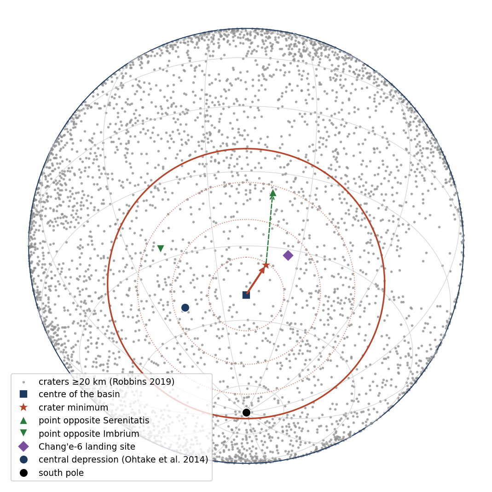
A.2החידה
המכתשים הם השעון של הירח. בהיעדר אוויר, מים ומזג אוויר שישחקו אותם, המכתשים על הירח מצטברים כל עוד פני השטח קיימים; צפיפות המכתשים ליחידת שטח נותנת את גיל פני השטח ביחס לשכניהם, וגירעון בצפיפות לעומת הסביבה מעיד על פני שטח צעירים יותר, או על פני שטח שעברו עיבוד מחדש. בהיותו המבנה העתיק ביותר מסוגו, החשוף לשמיים יותר מארבעה מיליארד שנה, South Pole–Aitken צפוי להיות צפוף במכתשים. מרכזו אינו כזה. גירעון רדיאלי. כשסופרים את המכתשים בטבעות מן האמצע של האגן החוצה, הספירה נמוכה ביותר במרכז ועולה ברציפות לכיוון השפה; המרכז מכיל רק כמחצית מהמכתשים שנמצאים ממש מחוץ לאגן, והנקודה שבה המכתשים מעטים ביותר — המינימום — נמצאת כ-270 ק”מ צפונה-צפון-מזרחה מן האמצע. קרקעיות רדודות, שפות גבוהות. המכתשים שנותרו שם רדודים יותר מאלה של החגורה שסביב השפה, אף ששפותיהם עומדות גבוה. זו החידה של המאמר: לאגן העתיק ביותר יש מרכז ששומר את הרשומה של פני שטח צעירים, ושומר אותה במכתשים רדודים.
מכלול אנומליות. ורשומת המכתשים אינה הדבר היחיד שמייחד את האגן. זהו האזור העמוק ביותר על הירח; הקרום שלו דק ומוקף קרום מעובה; קרקעיתו עשירה בברזל ובתוריום (יסוד רדיואקטיבי שמתרכז בשאריות האחרונות של תך), ובכל זאת יש בה מעט לבה נראית; מסה צפופה נמצאת עמוק מתחתיו; המעטפת שמתחתיו איבדה את היסודות הנדיפים שלה (אלה שמתאדים בקלות, כמו אשלגן) ודלה בחמצן; תך עלה שם במשך כשני מיליארד שנה; והמגנטיות הקרומית החזקה ביותר של הירח מתרכזת בשוליו. המאמר שואל אם תהליך אחד יצר את כולם.
A.3מה המדע אומר עליו
הספרות המקובלת מפרשת את South Pole–Aitken כצלקת של פגיעה ענקית לפני כ-4.25 מיליארד שנה. לפי גישה זו, הפגיעה הייתה אלכסונית — מצפון, ברוב הקריאות, או לכיוון דרום (Andrews-Hanna et al. 2025) — חפרה עמוק לתוך הקרום ואולי לתוך המעטפת העליונה, פיזרה שמיכה עבה של חומר נפלט סביב האגן, והשאירה יריעת תך שנפרדה לשכבות כשהתקררה. חום הפגיעה, הברזל של הגוף הפוגע והוולקניזם שבא אחריה מופעלים כל אחד בנפרד כדי להסביר תכונה אחת או יותר של האגן. לכל אנומליה יש כך הסבר משלה; למחסור המכתשים של המרכז אין הסבר מקובל.
A.4היכן הקריאה המקובלת אינה מספיקה
הקריאה המקובלת מסבירה כל תכונה של האגן בנפרד, ואת כמה מהן היטב. אבל כשמצרפים את התכונות יחד ומעמידים אותן מול המדידות הזמינות כיום, נחשפים שישה דברים שאינם מוסברים או שההסבר שלהם דחוק.
מחסור המכתשים. אגן שאופס בפגיעה אחת אמור להחזיק צפיפות אחידה ונמוכה יותר על פני כל הקרקעית: הפגיעה מנקה את הקרקעית ברגע אחד, ואז הקרקעית כולה צוברת מכתשים באותו קצב. הממצא שונה: המחסור מרוכז במרכז, עולה ברציפות לכיוון השפה, ומתחדד ככל שמסירים מן הספירה את מישורי הלבה ואת האגנים הצעירים יותר (B1a–B1d). הנקודה האחרונה חשובה: המחסור אינו תוצר של לבה שכיסתה את המרכז, שכן הסרת הלבה מחדדת אותו ולא מחלישה אותו. אין לו הסבר מקובל.
סלקטיביות הגדלים והמיקום. המינימום אינו במרכז האגן אלא כ-270 ק”מ צפונה-צפון-מזרחה ממנו, והמחסור בררני לפי גודל: המכתשים של 20–40 ק”מ חסרים יותר מכול, ואלה של 10–20 ק”מ כמעט אינם חסרים (B1e, B1h). לפני שטח צעירים יותר חסרים מכתשים מכל הגדלים; קבורה מסירה קודם את הקטנים, משום ששכבה שממלאת מכתש קטן רק מטשטשת מכתש גדול. אף אחד מהדגמים האלה אינו מתאים: כאן חסרים הגדלים הבינוניים, בעוד הקטנים כמעט כולם קיימים.
פרדוקס הוולקניזם הגלוי. האגן העמוק ביותר על הירח, עם הקרום הדק ביותר, היה אמור להעדיף וולקניזם, שכן לתך שעולה מלמטה יש שם הדרך הקצרה ביותר אל פני השטח; ובכל זאת רק כ-4% ממנו הם ים, לעומת 30% מן הצד הקרוב (B8; גרסה קודמת נתנה 32%). זו חידה ידועה.
אסימטריית טבעת הקרום. חומר נפלט מפגיעה אלכסונית היה נערם בכיוון התנועה, ונותן אסימטריה בין צפון לדרום. טבעת הקרום המעובה סביב SPA אסימטרית בין מזרח למערב, וחוסר האחידות שלה עוקב אחר דגם אחר לגמרי (B4).
משך הפעילות התרמית. התכים המתוארכים באתר משתרעים על פני כשני מיליארד שנה (B15). אחרי פגיעה אחת חייבים לבוא אירועים נפרדים ומאוחרים יותר כדי להסביר זאת. במודל, טווח הזמן הוא ההתקררות של פנים הירח ושל הליבה שלו, שנמשכה זמן רב; הסימן של South Pole–Aitken עצמו נוצר על ידי החום של כדור הארץ בזמן שהגוף היה מחובר.
השדה המגנטי הקרומי. התכנסות של חומר נפלט וברזל של הגוף הפוגע מסבירים שדות חזקים מול האגנים הגדולים של הצד הקרוב, אבל אינם נותנים סיבה לכך שהשדה יהיה חלש דווקא במינימום המכתשים, כפי שהוא אכן (B16).
על כל פער אפשר אולי לענות בנפרד. השאלה היא אם יש להם סיבה אחת משותפת.
A.5מנגנון LEF בקווים כלליים
אנו מציעים תהליך יחיד ומאוחד, המתואר כאן לפי סדרו ובלי פרטיו.
הרקע: כיפות ההזנה והאגס. בסדרה הזו הירח הצעיר נבנה מחומר של כדור הארץ, שעלה דרך פתחים בצד הקרוב שלו — הימות (מאמר 5); ים הוא פתח מעל כיפת הזנה, שדרכו טיפס חומר מכדור הארץ אל הגוף הגדל. הגוף עמד על הקצה של המשך ארוך מחומרו של כדור הארץ עצמו, האגס, והסתובב עם כדור הארץ עד השחרור שלו (מאמרים 2–4).
הברנר. בצד הרחוק, מול הפתחים האלה, פעל מקור חום במשך זמן רב: הברנר. במילים פשוטות, הברנר הוא חום מפנים כדור הארץ שעבר דרך הגוף המחובר לאורך קו הפתחים והצטבר מתחת לצד הרחוק, ושם חימם את הקרקע מלמטה, כמו שלהבה מחממת את תחתית הסיר. היו לו שתי יציאות: Imbrium, הברנר הראשי, ו-Serenitatis, המשני; הוא פעל בזמן שהגוף היה מחובר ונרגע עם הרפיית הפחיסות, לפני השחרור. SPA עצמו לא היה פתח. באמצע האזור פעל בתחילה ים רגיל וגדול — פתח — שפלט חומר; אחר כך חומם יחד עם האזור כולו, נאפה ונמחק; הגילים של האתר משתרעים על פני תקופת הבנייה כולה (B15), וחלק גדול מן הלבה שלו קבור (B9).
היכן הוא היה. בזמן ההתעגלות הוא היה סמוך לקו המשווה של אז, על המדרון של הקצה הרחוק של הגוף המוארך: החלק של הגוף שהיה הרחוק ביותר מעבר לרדיוס הקורוטציה, שם הסיבוב השליך חומר החוצה. (רדיוס הקורוטציה הוא המרחק ממרכז כדור הארץ שבו גוף שמסתובב עם כדור הארץ כבר נע במהירות של מסלול חופשי; מעבר לו, קרקע שעדיין נאלצת להסתובב עם כדור הארץ נמשכת החוצה, כמו שילד על קרוסלה מרגיש שנדחף החוצה יותר ככל שהוא יושב רחוק יותר מן האמצע.) בזמן הברנר, על הצורה הפחוסה, SPA עמד כ-27° מן הקצה הרחוק הזה — הנקודה שמול מרכז אזור המגע (C.3); על הכדור של היום אותה הפרדה נקראת כ-39.5° (תימדד בעבודה עתידית; B5). (גרסה קודמת מדדה את ההפרדה הזאת מן הנקודה שמול נקודת הייחוס הישנה 23° צפון, 320° מזרח; ערכיה ניתנים פעם אחת ב-B5.) ההבדל הוא המעבר מן הצורה הפחוסה לכדור, ולא תנועה של SPA על פני השטח.
שימור היחס האנטיפודי. SPA אנטיפודי לפתחים של הצד הקרוב — המינימום שלו נמצא על קו האורך של הנקודה האנטיפודית ל-Serenitatis — ולא לנקודת חיבור יחידה. יחס אנטיפודי נשמר הן בסיבוב והן בהתעגלות: סיבוב הגוף כולו, או התעגלותו סביב מרכזו, נושאים נקודה ואת הנקודה הנגדית לה יחד, כך שזוג נקודות שעמדו זו מול זו דרך המרכז עדיין עומדות כך.
התרוממות, אפייה וקריסה. החום בא מלמטה והגיע אל האזור כולו, אל חלקו העבה ואל חלקו הדק כאחד, והתיך את שניהם. האזור, שנדחף וחומם מלמטה, התרומם לכיפה, והקרום שלו, שהתרכך, החליק החוצה אל הצדדים; חומר נדיף, וגם חומר פחות נדיף, גורש; שכבות החומר החוזר נאפו ועברו דחיסה; חומר נושא ברזל מפנים כדור הארץ עלה אל בסיס האזור והתרכז שם כשחומרים אחרים עזבו; והמכתשים שעליו נמחקו או עברו הרפיה. עם דעיכת החום, הכיפה התקררה, התכווצה וקרסה לאגן העמוק שנראה היום — כמו סופלה, שהחום מרים אותו, ששוקע מתחת לשפת התבנית כשהוא יוצא מן התנור — והמכתשים שנוצרו לאחר מכן נחתו על קרקע דחוסה. זו הסיבה שהמרכז גם עמוק וגם דל במכתשים: אותו חום שהרים את הקרקע ואחר כך הפיל אותה מחק את הרשומה שעליה.
ההסטה הדרומית. הכיפה נמצאת מדרום לשתי היציאות: מיקום האגס וכוחות הסיבוב שלחו את החום מדרום לנקודה הנגדית, וההתעגלות של הגוף המוארך (מאמר 7) הגדילה את המרחק (C.3, C.4). ההתעגלות התרחשה בזמן שהגוף היה מחובר; בשחרור הירח היה עגול והקליפה החיצונית שלו נוקשה (מאמר 2 §B.7).
מערכת הייחוס. הירח לא הסתובב סביב עצמו לאחר הניתוק: מרכז אזור המגע נמצא במקום שבו קצה האגס הציב אותו, בכ-22–24° צפון. ייתכן שהציר של כדור הארץ השתנה: המיקומים במאמר הזה ניתנים במערכת הייחוס של היום, ומערכת הייחוס של אז נשארת לעבודה עתידית. בסדרה, מאמר 6 משאיר את מקור SPA פתוח, מאמר 7 משתמש ב-SPA כביקורת, ומאמר 13 מזהיר מפני שימוש ב-SPA לבדו כדי לבחון את האסימטריה בין צפון לדרום; המאמר הזה עוסק בו.
A.6כיצד זה מתאים למה שנמצא
חלק B בוחן את האנומליות אחת אחת: לכל אחת, הקריאה של LEF — הזרוע של התהליך שנוגעת בה — ומה שהיא מצפה לו, ואחר כך מה שנראה. בקווים כלליים, המדידות עונות על הציפיות של קריאת LEF באופן הבא.
קורלציה מרחבית. התכונות קשורות במקום: מינימום המכתשים, הקרקעית החריגה ואתר Chang’e-6 נמצאים במרכז האגן ובצפונו; הקרום הדק ביותר, הקרקע הנמוכה ביותר והמסה הצפופה נמצאים בדרומו (כל המרכזים על מפה אחת: איור C.1). קורלציה כיוונית. המחסור והגזרות הדלות ביותר שלו פונים אל הנקודה האנטיפודית ל-Serenitatis. קורלציה בזמן. המעטפת שמתחת יובשה וחוזרה כפי שחום חזק מלמטה היה משאיר אותה, והתכים המתוארכים רושמים את ההתקררות הארוכה שבאה אחר כך. טבעת הקרום. הקרום סביב האגן מעובה במקום שבו ההתעגלות של הירח הצעיר דחסה את פני השטח, ודק במקום שבו היא מתחה אותם. פגיעה אחת הייתה קובעת כל אחת מן התכונות האלה בדרך משלה; הברנר קובע אותן יחד, ולכן הן מסתדרות בקו אחד.
מתוך שבע-עשרה האנומליות, המדע מסביר שש במלואן, תשע באופן חלקי, אחת בקושי ואחת — רשומת המכתשים — כלל לא; המודל מתאים לשש-עשרה, ולאחת באופן חלקי, הממתינה לאיזוטופים שיכריעו בה (B18).
האנומליות של SPA
חלק A הציג את טענת המאמר: מרכזו של South Pole–Aitken (SPA) רושם מקור חום מתחת לצד הרחוק — הברנר — עם שתי יציאות, Imbrium הראשית ו-Serenitatis המשנית, שפעל בעוד הירח הצעיר מחובר לכדור הארץ ונרגע עם הרפיית הפחיסות, לפני השחרור. חלק B עובר מן הטענה לבחינה שיטתית של הראיות. הוא שואל, תכונה אחר תכונה, מה נמדד בפועל ב-SPA, והאם המדידה הזאת מוסברת טוב יותר בקריאה המקובלת של האגן או בתהליך של המודל.
פרוטוקול הניתוח. South Pole–Aitken שונה משאר הירח בדרכים רבות. חלק זה עובר עליהן אחת אחת, כל אחת בשישה שלבים: האנומליה — מה נמדד ובידי מי; החידה; מה המדע אומר; היכן המדע אינו מספיק, ובסופו פסק הדין שלו — מסביר, מסביר בחלקו, מסביר בקושי או אינו מסביר; מה המודל אומר — זרוע התהליך הנוגעת לעניין ומה היא מנבאת; וכיצד המדידות מתאימות למודל, ובסופו פסק הדין שלו — מתאים, מתאים בחלקו או פתוח. כל פסק דין עומד בתיבה משלו: תיבות המדע אינן משוות למודל, ותיבות המודל אינן משוות למדע. היכן שהמאמר מדד את האנומליה בעצמו, בא אחרי ששת השלבים מחקר בשבעה שלבים (מחקרים 1–5). האנומליה הראשונה היא רשומת המכתשים.
כיצד לקרוא את ששת השלבים. הסדר הוא הסדר שבו קורא זהיר היה רוצה לפגוש את הראיות. שלב 1 מגדיר רק את מה שנמדד, עם מקורו, לפני כל פרשנות. שלב 2 אומר במשפט או שניים מדוע המדידה מוזרה. שלב 3 מביא את ההסבר המקובל כפי שהספרות מביאה אותו, ושלב 4 מעמיד את ההסבר הזה מול המדידה, לעתים קרובות בטבלה קטנה של “מה הוא מנבא” מול “מה נמצא”. רק אז שלב 5 מביא את הסיפור של המודל, ושלב 6 מעמיד את אותה מדידה מולו. שני פסקי הדין מוחזקים בנפרד בכוונה: כל אחד עונה על השאלה “האם ההסבר הזה, לבדו, מסביר את מה שנמדד?”, כך שהקורא יכול לשפוט כל אחד מהם בלי שיצטרך לקבל את האחר. פסקי הדין של כל האנומליות מרוכזים בטבלה אחת ב-B18. היכן שהמאמר ערך את המדידה בעצמו ולא ציטט אותה, באים אחרי ששת השלבים מחקר הבנוי בשבעת השלבים של דוח מחקר (שאלה, רקע, השערה, מערך, נתונים, ניתוח, מסקנות), כדי שאפשר יהיה לבדוק את המדידה ולחזור עליה.
B1רשומת המכתשים
תמצית הממצא. מרכזו של South Pole–Aitken מחזיק כמחצית מן המכתשים של הקרקע שממש מחוצה לו. הגירעון פוחת בהדרגה לעבר השפה, נשמר גם על האליפסה, ומגיע לשיאו בצפון ובצפון-מזרח; המקום שבו המכתשים מעטים ביותר נמצא כ-270 ק”מ צפונה-צפון-מזרחה מן המרכז, על קו האורך של הנקודה הנגדית ל-Serenitatis. הגירעון סלקטיבי לפי גודל: הגדלים הבינוניים חסרים יותר מכול, הקטנים ביותר כמעט אינם חסרים, והמכתשים שנותרו רדודים מאלה של חגורת השפה בעוד שפותיהם עומדות גבוה.
המכתשים הם השעון של הירח. משטח צובר אותם כל עוד הוא חשוף לשמיים, ומאבד אותם רק אם משהו מוחק או מכסה אותו. אזור דל במכתשים הוא אפוא צעיר, או שמשהו פעל עליו. SPA הוא הגדול והעתיק מבין האגנים הגדולים, ולכן לפי השעון לבדו קרקעיתו הייתה צריכה להיות מן הצפופות ביותר על הירח. סעיף זה מודד עד כמה הרשומה שלו מלאה באמת, והיכן אינה מלאה.
כיצד זה נמדד. נתוני המיקום והקוטר של המכתשים נלקחים מקטלוג Robbins (2019), עבור מכתשים של 20 ק”מ ומעלה, ומקטלוג Wang et al. (2021) עבור הגדלים הקטנים יותר ועבור העומקים. כל ההשוואות נעשות שווה מול שווה, על קרקע עתיקה. כדי להבטיח השוואה הומוגנית, שלושה סוגי קרקע צעירים יותר מוסרים משני הצדדים, הן מן הספירות והן מן השטחים: מישורי הלבה כפי שמופו במפת LROC; 34 הימות של מאמר 5, כל אחד עם ליבת כיפת ההזנה שמתחתיו; והילה של 200 ק”מ סביב כל ים, משום שים פעיל מפזר מכתשים סביבו ומוחק את הרשומה שלו עצמו (מאמר 5, §A.2). מה שנותר הוא הקרקע שעליה פעל הברנר. הרשומה מבוטאת כעוצמת הרשומה: היחס בין המכתשים שנספרו לבין המספר הצפוי בצפיפות של הטבעת שממש מחוץ לשפה (39.6–50° מן המרכז, 53° דרום 191° מזרח).
מדוע הניקוי הזה חשוב. הכללת מישורי לבה או רצפות ימות בספירה הייתה יוצרת הטיה שיטתית. משטחים אלה צעירים יותר מטבעם: הם מחזיקים פחות מכתשים משום שהיו חשופים זמן קצר יותר, ולא בגלל משהו שקרה לקרקעית העתיקה של SPA. אילו קרקע כזאת נשארה בספירה, האגן היה עלול להיראות דל במכתשים רק משום שיש בו לבה. ההילה מוסרת מסיבה מאותו סוג: במודל ים הוא פתח מעל כיפת הזנה, ובזמן שהיה פעיל הוא גם זרק חומר סביבו וגם עיבד מחדש את הקרקע הסמוכה לו. הסרת אותם סוגי קרקע מ-SPA וגם מכל משטח שהוא מושווה אליו שומרת על ההשוואה הוגנת: קרקע עתיקה מושווית רק לקרקע עתיקה.
כיצד לקרוא את עוצמת הרשומה. המרחקים ממרכז SPA נמדדים במעלות קשת על פני הירח, מן המרכז שב-53° דרום, 191° מזרח; בסולם זה שפת האגן, מעגל שקוטרו 2,400 ק”מ, נמצאת ב-39.6°. הטבעת 39.6–50°, ממש מחוץ לשפה, היא הקרקע העתיקה הקרובה ביותר באותו אזור; היא משמשת בסיס ההשוואה, וצפיפות המכתשים שלה נקבעת ל-1.00. עוצמת רשומה של 0.51 פירושה אפוא שמקום מחזיק 51 מכתשים על כל 100 שהיה מחזיק בצפיפות שממש מחוץ לאגן — כמחצית מן הרשומה שלו חסרה.
B1a המחסור מרוכז במרכז
המחסור ברשומת המכתשים אינו מבוזר באופן אחיד על פני SPA, אלא מרוכז במרכזו. מול שאר הירח, על אותו סוג קרקע, SPA כולו מחזיק 213.9 מכתשים של 20 ק”מ ומעלה למיליון קמ”ר, לעומת 230.2 — גירעון מתון של 7%. החוסר בא ממרכז האגן: הטבעת שבתוך 10° מחזיקה 0.51 מן הצפיפות שממש מחוץ לשפה, הטבעת הבאה 0.81 (B1c). חוסר של 7% על פני האגן כולו הוא צנוע; העיקר הוא שאינו מתפזר באופן אחיד. הטבעת המרכזית, בתוך כרבע מרדיוס האגן, נושאת את רובו.
B1b מול ביקורת באותם קווי רוחב
צפיפות המכתשים על הירח אינה זהה בכל קו רוחב, ולכן ביקורת הוגנת יותר היא הקרקע השוכנת באותם קווי רוחב כמו SPA. השוואה מול שאר הירח בין 90° דרום ל-13.4° דרום, על אותה קרקע מנוקה, מחדדת את התמונה: SPA מחזיק 213.9 לעומת 239.5, גירעון כולל של 11%. גירעון זה על פני האגן כולו הוא מה שמחסור חזק, המרוכז במרכזו, יוצר — ולא מחסור אחיד.
B1c הפרופיל הרדיאלי
ספירת המכתשים בטבעות קונצנטריות ממרכז האגן החוצה, על הקרקע העתיקה המנוקה, מראה כי הצפיפות עולה מן המרכז אל השפה:
| טבעת | אזור | ק”מ | יחס | ק”מ | יחס |
|---|---|---|---|---|---|
| 0–10° | בפנים | 125.7 | 0.51 | 47.7 | 0.57 |
| 10–20° | בפנים | 200.4 | 0.81 | 64.5 | 0.77 |
| 20–30° | בפנים | 226.7 | 0.92 | 73.5 | 0.88 |
| 30–39.6° | בפנים | 225.6 | 0.91 | 73.7 | 0.88 |
| 39.6–50° | בחוץ | 247.5 | 1.00 | 84.0 | 1.00 |
מכתשים למיליון קמ”ר. בסיס היחס: הטבעת 39.6–50° שממש מחוץ לשפה. מישורי הלבה, 34 הימות והילה של 200 ק”מ סביב כל אחד הוסרו מן הספירות ומן השטחים בשני הצדדים; 29, 87, 182, 309 ו-398 מכתשים של 20 ק”מ ומעלה בחמש הטבעות. הצבעים עוזרים לעין לקרוא את העלייה מן המרכז; הם אינם מבחן מובהקות.
כיצד לקרוא את הטבלה. כל שורה היא טבעת סביב המרכז, מן הפנימית ביותר (למעלה) עד הטבעת שממש מחוץ לשפה (למטה). העמודות נותנות את צפיפות המכתשים של 20 ק”מ ומעלה ושל 40 ק”מ ומעלה, ואחרי כל אחת את יחסה לטבעת החיצונית. הצבע עובר מצהוב חיוור, היכן שהמכתשים מעטים ביותר, לסלמון עמוק, היכן שהם צפופים ביותר; קראו כל עמודה כלפי מטה והצבע מעמיק לעבר השפה. שני ספי הגודל מספרים אותו סיפור: המרכז מחזיק כמחצית (0.51 ו-0.57), הטבעת הבאה כארבע חמישיות (0.81 ו-0.77), ומ-20° והלאה האגן מחזיק כתשע עשיריות מן הצפיפות החיצונית. הפרופיל הרדיאלי מראה כי המחסור אינו מדרגה חדה בשפת האגן, אלא שקע הדרגתי ועמוק במרכזו.
ככל שניקוי הנתונים מחמיר, המחסור המרכזי מתחדד: עוצמת הרשומה במרכז יורדת מ-0.59 על כל הקרקע, ל-0.56 בלי מישורי הלבה והימות, ועד 0.51 כשמוסרת גם ההילה סביב כל ים. המשטחים הצעירים מטשטשים את המחסור; הם אינם גורמים לו. הרצף הזה עונה על ההתנגדות הראשונה שקורא צפוי להעלות — שהמרכז דל רק משום שלבה מכסה אותו. אילו הלבה הייתה הסיבה, הסרת שטחי הלבה הייתה מעלה את הצפיפות המרכזית ומקרבת אותה לערך החיצוני. בפועל מתרחשת המגמה ההפוכה: כשכל משטח צעיר מוסר, הטבעת המרכזית נעשית דלה יותר, לא עשירה יותר.
B1dהמחסור נשמר על האליפסה
SPA אינו מעגל מושלם אלא אליפסה, ארוכה בכיוון אחד יותר מבאחר; חלוקה לטבעות מעגליות עלולה לערבב קרקע של המרכז עם קרקע של הצלעות. לצורך אימות, הספירה בוצעה שוב על האליפסה עצמה. כשהמרחק נמדד כמרחק מנורמל על אליפסת האגן ( ק”מ) ולא על מעגל, על הקרקע המנוקה, הליבה נשארת דלה: 122 ו-132 מכתשים למיליון קמ”ר בתוך רבע מחצאי הצירים, עבור שתי האוריינטציות של האליפסה שפורסמו בספרות (), לעומת 230–235 במחציתה החיצונית ו-231–248 ממש מחוצה לה. המחסור המרכזי אינו תוצר גיאומטרי של התייחסות לאגן כאל עגול.
B1eהיכן המכתשים מעטים ביותר
הטבעות מראות כיצד הרשומה משתנה עם המרחק, אך לא לאיזה כיוון נוטה המחסור. כדי לקבוע את כיוונו דרושה מפה רציפה. מפת צפיפות רציפה — גרעין כדורי של 150–250 ק”מ, שבו הספירה מנורמלת לשטח הקרקע המנוקה שבתוך הגרעין — ממקמת את הצפיפות הנמוכה ביותר, המינימום, ב-45.4° דרום, 197.9° מזרח עבור הגרעין המרכזי של 200 ק”מ, ובטווח 44.6–47.1° דרום, 196.1–198.9° מזרח עבור שני האחרים. גרעין הוא חלון נע: בכל נקודה של המפה נספרים המכתשים שבתוך מעגל ברדיוס הזה ומחולקים בשטח הקרקע העתיקה שבתוך המעגל, כך שחלון המכוסה בחלקו בקרקע ממוסכת אינו נספר כדל. שימוש בשלושה גדלי חלון שומר מפני מינימום המופיע רק עבור בחירה מסוימת אחת; כאן שלושתם מראים הסכמה מרחבית הדוקה וממקמים את המינימום בתוך מעלות ספורות מאותה נקודה.
הסטה מן המרכז. המינימום מוסט כ-270 ק”מ לכיוון צפון-צפון-מזרח מן המרכז — כשהמרחק נמדד, כמו כל המרחקים בסעיף זה, ממרכז האגן ב-53° דרום, 191° מזרח. בעמדה זו עוצמת הרשומה יורדת ל-0.45 (111 מכתשים למיליון קמ”ר לעומת 247.5 מחוץ לשפה). המינימום שוכן על קו האורך של הנקודה הנגדית ל-Serenitatis (197.9° לעומת 198.8°), 606 ק”מ ממנה ו-860 ק”מ מן הנקודה הנגדית ל-Imbrium; אתר הנחיתה של Chang’e-6 נמצא 212 ק”מ ממנו. הנקודה הנגדית למקום — הנקודה האנטיפודית שלו (האנטיפוד) — היא הנקודה בצדו האחר של הירח שאליה מגיע קו ישר דרך מרכז הגוף; קו אורך (מרידיאן) הוא קו של אורך שווה הנמשך מקוטב לקוטב. לשכון על קו האורך של האנטיפוד של Serenitatis פירושו אפוא לשכון דרומה ממנו בדיוק, על אותו קו אורך, בתוך מעלה אחת.
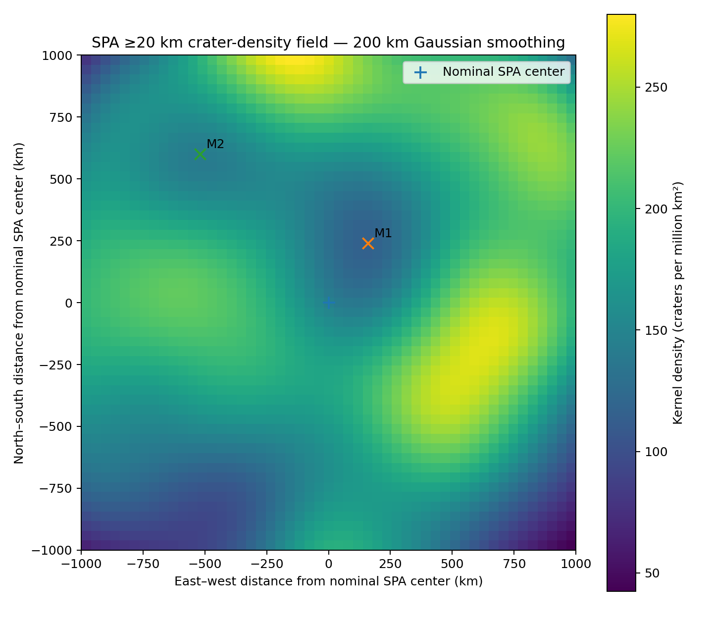
כיצד לקרוא את איור B1.1. כל נקודה במפה צבועה לפי צפיפות המכתשים בחלון של 200 ק”מ סביבה. כתם הצפיפות הנמוכה רחב — הוא ממלא חלק גדול מן האזור המרכזי — אך אינו ממורכז באמצע האגן: הנקודה הנמוכה ביותר שלו מוסטת לצפון-צפון-מזרח. המדידה הבאה שואלת אם אותה נטייה מופיעה כשהמרכז פשוט נחתך לגזרות.
B1fשמונה גזרות
חלוקת 20° המרכזיות של האגן לשמונה גזרות, על הקרקע המנוקה, מראה אסימטריה כיוונית ברורה: המחסור חזק ביותר בצפון ובצפון-מזרח:
| גזרה | מכתשים | ל- קמ”ר |
|---|---|---|
| צפון | 12 | 112 |
| צפון-מזרח | 1 | 45 |
| מזרח | 20 | 182 |
| דרום-מזרח | 33 | 231 |
| דרום | 22 | 157 |
| דרום-מערב | 8 | 251 |
| מערב | 6 | 144 |
| צפון-מערב | 14 | 202 |
הגזרות הצפון-מזרחית והצפונית מחזיקות 45 ו-112 מכתשים למיליון קמ”ר, לעומת 144–251 בשאר הגזרות. הספירות בכל גזרה קטנות (1–33 מכתשים); הכיוון מתאים למינימום. בטבלה הגזרות סובבות עם כיוון השעון מן הצפון, והצבע שוב עובר מחיוור (דל) לעמוק (עשיר): שני התאים החיוורים ביותר הם הצפון-מזרח והצפון. משום שגזרה מחזיקה לכל היותר כמה עשרות מכתשים, גזרה אחת לבדה יכולה להיות דלה במקרה; מה שנותן לתוצאה משקל הוא שהחלוקה הגסה הזאת והמפה הרציפה של B1e, שנעשו בדרכים שונות, מצביעות לאותו כיוון.
B1g מכתשי המרכז רדודים מאלה של חגורת השפה
המחסור עוסק במכתשים החסרים. מדידה זו פונה אל המכתשים שנותרו על פני השטח, ושואלת אם גם הם נושאים סימן. המדד המורפומטרי הוא היחס בין עומק המכתש לקוטרו: כמה עמוק מכתש ביחס לרוחבו. למכתשים טריים בגודל נתון יש ערך אופייני; ערך נמוך יותר מעיד על מכתש שהתמלא, התרכך או השתטח. על פי קטלוג Wang et al. (2021), על הקרקע המנוקה, היחס בין העומק לקוטר נמוך יותר במרכז (0–10°) מאשר בטבעת שמחוץ לשפה, בכל גודל:
| קוטר (ק”מ) | מרכז 0–10° | מכתשים | מחוץ לשפה | מכתשים |
|---|---|---|---|---|
| 10–20 | 0.075 | 129 | 0.078 | 1,013 |
| 20–40 | 0.066 | 17 | 0.076 | 257 |
| 40–80 | 0.045 | 9 | 0.061 | 96 |
חציונים; מכתשים ששפתם נוגעת במישורי הלבה, בים או בהילה שלו הוסרו.
כיצד לקרוא את הטבלה. כל שורה היא קבוצת גודל; שתי העמודות הצבועות נותנות את חציון היחס בין העומק לקוטר במרכז ומחוץ לשפה, ולצד כל אחת מספר המכתשים שנמדדו. חיוור יותר פירושו רדוד יותר. בכל שורה הערך המרכזי הוא החיוור מבין השניים, והפער גדל עם הגודל: כמעט אפסי במכתשים הקטנים (0.075 לעומת 0.078), ברור בקבוצה הבינונית (0.066 לעומת 0.076), והגדול ביותר במכתשים של 40–80 ק”מ (0.045 לעומת 0.061).
במבחן מחמיר יותר — מכתשים של 40–80 ק”מ ב-20° המרכזיות מול הטבעת שמחוץ לשפה, כשכל מכתש ששפתו נוגעת בקרקע הממוסכת מוסר — מכתשי המרכז רדודים ב-18% (bootstrap, דגימה חוזרת, 95%: 4–33%; 31 מכתשים בפנים, 96 בחוץ). רווח ה-bootstrap אומר עד כמה התוצאה הייתה יכולה להשתנות אילו נמדדה במקרה קבוצה אחרת של מכתשים: המכתשים נדגמים מחדש באקראי פעמים רבות, ההפרש מחושב מחדש בכל פעם, והטווח מכיל את 95 התוצאות האמצעיות מכל 100. מכיוון שהטווח כולו נמצא מעל אפס, מכתשי המרכז רדודים יותר כמעט בכל דגימה חוזרת. ממצא זה מתאים לתצפיות של Sori ו-Zuber (2012), שדיווחו על מכתשים רדודים באופן חריג ב-SPA לאחר הוצאת המבנים שיש בהם ימות נראים. הניגוד נמדד מול הטבעת שממש מחוץ לשפה, שבה המכתשים עמוקים באופן יוצא דופן; מול ביקורת המותאמת בקו רוחב ובקוטר על פני הירח כולו, קרקעיות מכתשי המרכז פחות עמוקות רק במעט וההפרש אינו מכריע (B1k). הניגוד הישיר בין המרכז לחגורת השפה הוא התוצאה האיתנה.
B1h המחסור לפי גודל
המחסור אינו זהה בכל גודל; הוא סלקטיבי לפי קבוצות קוטר. בקטלוג Wang, סביב המרכז, על הקרקע המנוקה (מכתשים למיליון קמ”ר):
| טבעת | 10–20 ק”מ | 20–40 ק”מ | 40–60 ק”מ | 60 ק”מ |
|---|---|---|---|---|
| 0–10° | 581 | 78 | 30.3 | 26.0 |
| 10–20° | 530 | 134 | 32.2 | 41.5 |
| 20–30° | 553 | 176 | 39.9 | 39.9 |
| 30–39.6° | 608 | 158 | 36.5 | 47.5 |
| 39.6–50° | 638 | 165 | 42.3 | 49.1 |
כיצד לקרוא את הטבלה. כאן כל עמודה צבועה בסולם משלה, חיוורת ביותר היכן שקבוצת הגודל הזאת נדירה ביותר. בשלוש הקבוצות הגדולות התא החיוור ביותר הוא הטבעת המרכזית והצבע מעמיק כלפי חוץ, כמו ב-B1c. בקבוצה הקטנה ביותר (10–20 ק”מ) העמודה כמעט שטוחה — 530 עד 638 — והטבעת המרכזית אינה החיוורת ביותר: המכתשים הקטנים כמעט אינם חסרים במרכז.
השוואה ישירה של המרכז מול הטבעת שמחוץ לשפה מראה שהמרכז מחזיק 0.91 מן המכתשים של 10–20 ק”מ, 0.47 מאלה של 20–40 ק”מ, 0.72 מאלה של 40–60 ק”מ ו-0.53 מן הגדולים ביותר. החוסר חזק ביותר ב-20–40 ק”מ; הקבוצה הקטנה ביותר כמעט אינה מדולדלת. בשל כך, היחס בין המכתשים הקטנים לגדולים יותר במרכז גבוה באופן חריג: 4.62 מכתשים של 10–20 ק”מ על כל מכתש של 20–80 ק”מ ב-10° המרכזיות (95%: 3.18–7.20), לעומת 2.13 בלבד (1.99–2.28) באותם קווי רוחב מחוץ ל-SPA; בטבעות שמעבר, 2.88, 2.39, 2.81 ו-2.79. העודף מוגבל למרכז. במילים פשוטות: על קרקע רגילה יש כשני מכתשים קטנים על כל מכתש גדול יותר; במרכז SPA יש יותר מארבעה, ושני הרווחים אינם חופפים. המרכז אינו פשוט צעיר יותר — למשטח צעיר יותר היו חסרים מכתשים קטנים וגדולים כאחד — הוא איבד חלק מסוים של הרשומה שלו, הגדלים הבינוניים, בעוד המכתשים הקטנים עומדים כמעט על מספרם שבחוץ.
B1iSPA והקוטב הדרומי
לרשומת המכתשים של SPA יש השלכות גם מעבר לאגן, שכן האגן משתרע על פני חלק ניכר מאזור הקוטב הדרומי. הסרת SPA לבדו מכיפות הקוטב הדרומיות מעלה את צפיפות המכתשים בהן: מ-250 ל-348 בתוך 10° (+39%), מ-215 ל-305 בתוך 15° (+42%), מ-207 ל-280 בתוך 20° (+35%); לאחר הסרתו, שני הקטבים שווים (מאמר 7, D.4). חלקי SPA השוכנים בתוך הכיפות מחזיקים כ-150 מכתשים למיליון קמ”ר בלבד, לעומת כ-305 מחוצה להן. מכאן ש-SPA אינו יוצר את העודף הדרומי, אלא להפך — הוא מסתיר חלק ממנו. במילים אחרות: הקרקע הקוטבית הדרומית שמחוץ ל-SPA עשירה במכתשים כמו הצפון, והקרקעית הדלה של SPA, השוכנת בתוך הכיפות הדרומיות, היא שמורידה את הממוצע שלהן.
מדוע מרכזו של האגן הגדול העתיק ביותר דל במכתשים, כשמשטח אוסף אותם כל עוד הוא קיים? מדוע המקום הדל ביותר אינו מתלכד עם מרכז האגן, אלא מוסט צפון-צפון-מזרחית לו? מדוע הגדלים הבינוניים חסרים יותר מכול, והקטנים ביותר כמעט אינם חסרים? ומדוע המכתשים שנותרו רדודים, בעוד שפותיהם עומדות גבוה ואינן שקועות?
הספרות קוראת את SPA כצלקת של פגיעה ענקית לפני כ-4.25 מיליארד שנה, שאיפסה את קרקעיתו. להסבר רשומת מכתשים חלשה מועלים כמה תהליכים: הרפיה של טופוגרפיית המכתשים מעל פנים חם; הצפה בלבה מאוחרת, הקוברת מכתשים; קבורה תחת חומר הפליטה של אגנים מאוחרים; משטח צעיר יותר, האוסף פחות מכתשים; רוויה, שבה מכתשים חדשים מוחקים ישנים במצב של שיווי משקל (Fassett et al. 2012); ומכתשים משניים, המוסיפים מכתשים קטנים ליד גדולים. הרפיה היא השקיעה האיטית של תבליט כשהקרקע שמתחתיו חמה וחלשה: לאורך זמן רב קרקעית המכתש זוחלת מעלה ושפתו שוקעת, כמו גומה שנלחצה בדבש סמיך ומתיישרת לאט. רוויה היא המצב שבו משטח צפוף כל כך שכל מכתש חדש הורס בערך כמה ישנים כמספר שהוא מוסיף, והספירה מפסיקה לעלות. חומר פליטה (ejecta) הוא החומר שנזרק ממכתש בזמן היווצרותו, ויכול לכסות כשמיכה את הקרקע שסביבו.
כל אחד מן התהליכים המקובלים מנבא דפוס מוגדר לסידור המכתשים החסרים. הטבלה מעמידה כל ניבוי לצד מה שנמדד ב-B1a–B1k.
| הסבר | מה הוא מנבא | מה נמצא |
|---|---|---|
| איפוס יחיד של האגן | צפיפות אחידה ונמוכה יותר על פני כל הקרקעית | מחסור מרוכז במרכז, העולה לעבר השפה (B1c) |
| הצפה בלבה | מחסור היכן שהלבה נמצאת | המחסור מחריף כשמסירים את מישורי הלבה והימות (B1c) |
| קבורה תחת חומר פליטה | המכתשים הקטנים אובדים ראשונים | המכתשים הקטנים כמעט אינם אובדים; הגדלים הבינוניים אובדים יותר מכול (B1h) |
| משטח צעיר יותר | פחות מכתשים בכל גודל | 0.91 ב-10–20 ק”מ לעומת 0.47 ב-20–40 ק”מ (B1h) |
| רוויה | אין מקום מועדף באגן | מינימום צפון-צפון-מזרחית למרכז, הגזרה הצפון-מזרחית הדלה ביותר (B1e, B1f) |
| הרפיה מעל פנים חם | קרקעיות רדודות ושפות נמוכות | קרקעיות רדודות עם שפות גבוהות (B1g, B1k) |
קראו כל שורה לרוחבה: כל תהליך מסביר תכונה אחת של הרשומה, אך כל אחד מנבא דפוס שהמדידה אינה מראה. איפוס יחיד אינו משאיר שקע באמצע; לבה אינה יכולה להיות הסיבה כשהסרתה מעמיקה את המחסור; שמיכת חומר פליטה קוברת מכתשים קטנים לפני גדולים; והרפיה מורידה שפות יחד עם קרקעיות. הקושי הוא שלרשומה יש את כל התכונות שלה בבת אחת.
הכרעת המדע: אינו מסביר שום תהליך מקובל אינו נותן מחסור המרוכז במרכז, השוכן צפון-צפון-מזרחית לו, שבו הגדלים הבינוניים חסרים יותר מכול, עם מכתשים רדודים ששפותיהם עומדות גבוה.
הברנר מחק והרפה את מכתשי המרכז. חומו עלה מלמטה והתיך את האזור, את חלקיו העבים והדקים כאחד (B3, B4), ובתוך אזור הקרום הדק המחסור עוקב אחר כיוון הברנר: היציאה של Serenitatis, הקרובה יותר לנקודה שפנתה אל כדור הארץ, הזינה את החום בכיוון האנטיפוד שלה, צפון-צפון-מזרחית למרכז. המכתשים שנוצרו אחרי שהברנר שכך נפלו על קרקע מבושלת ודחוסה, שבה פחות מאנרגיית הנחיתה הופנה לסגירת חללים ויותר לכוחות שבונים את השפה, ולכן השפה עומדת גבוה; בחגורת השפה שמרו שכבות החומר החוזר על החללים שלהן, ומכתשיה עמוקים. המכתשים הגדולים הם האוכלוסייה הוותיקה יותר, שנוצרה בידי מסות גדולות שהלחץ דחף החוצה בשלבים המוקדמים; הקטנים באים בעיקר מחומר שכדור הארץ זרק אחרי הניתוק, חלקים קטנים ובינוניים שהתפזרו באופן אחיד על כל הירח, ואולי גם מפתחים נוספים של הירח עצמו (D.3a); הם נפלו על גבי המשטח הישן. המודל מצפה למחסור בתוך אזור הקרום הדק השורד את הסרת המשטחים הצעירים, שהמקום הדל ביותר בו נוטה לעבר האנטיפוד של Serenitatis, למכתשים קטנים רבים יחסית במרכז ורק שם, ולשפות גבוהות על מכתשים רדודים.
קריאת הברנר במילים פשוטות. דמיינו את קרקעית האגן כגיליון שעווה המונח מעל פלטה חמה. היכן שהפלטה חמה ביותר, הסימנים שנלחצו בשעווה מתרככים ונמוגים; בשוליים הקרים של הגיליון הם שומרים על חדותם. במודל קרקעית SPA היא הגיליון הזה, והברנר הוא הפלטה שמתחתיו: היכן שחומו עלה מלמטה, המכתשים שכבר היו על פני השטח נמחקו או הורפו, והמחסור עמוק ביותר היכן שהחום היה חזק ביותר. החום עשה יותר ממחיקה; הוא פעל בשני אופנים. שכבות החומר החוזר הבונות את הצד הרחוק היו נקבוביות, מלאות חללים; כשחוממו מלמטה הן התבשלו ונדחסו, כפי ששכבת שלג תחוח המתחממת מלמטה שוקעת לקרום צפוף יותר. כך נוצרו שני סוגי קרקע באגן: קרקעית מבושלת וצפופה במרכז, וחגורה נקבובית, לא מבושלת, בשפה. המכתשים שנחתו אחרי שהברנר שכך רושמים את ההבדל הזה — על הקרקעית הצפופה פחות מאנרגיית הנחיתה הולך למעיכת נקבוביות ויותר לכוחות שבונים את השפה, ולכן השפות עומדות גבוה; בחגורה הנקבובית האנרגיה נספגת במעיכת החללים, והמכתשים עמוקים. לבסוף, הכיוון: החום הוזן דרך היציאה של Serenitatis לעבר האנטיפוד שלה, ולכן המקום הדל ביותר אינו במרכז אלא לעבר אותו אנטיפוד. דפוס הגדלים נובע מסדר ההגעה: הגדלים הבינוניים והגדולים שייכים לאוכלוסייה הוותיקה יותר ונמחקו עם המשטח הישן, בעוד רוב המכתשים הקטנים הגיעו מאוחר יותר, מן החומר שכדור הארץ זרק אחרי הניתוק, על גבי המשטח שהברנר כבר עיבד.
תחזיות המודל מתקיימות בארבע מדידות נפרדות. המחסור מרוכז במרכז, 0.51 מן הסביבה, ומתחזק ככל שמישורי הלבה, הימות וההילות שלהם מוסרים. המינימום שוכן על קו האורך של הנקודה הנגדית ל-Serenitatis (197.9° לעומת 198.8°). היחס בין מכתשים קטנים לגדולים יותר הוא 4.62 במרכז לעומת 2.13 במקומות אחרים, ורק במרכז. מכתשי המרכז רדודים מאלה של חגורת השפה, ושפותיהם עומדות גבוה. כל אחד מארבעת הניבויים של שלב 5 מתקיים במדידה נפרדת: מקום המחסור (B1c, B1d), כיוונו (B1e, B1f), גדליו (B1h) וצורת מה שנותר (B1g, B1k).
הכרעת המודל: מתאים המחסור שוכן בתוך אזור הקרום הדק, לעבר האנטיפוד של Serenitatis, עם דפוס הגדלים והשפות הגבוהות שהמודל מצפה להם.
B1jהתצפית
המדידות של B1a–B1i מרוכזות כאן בהיגד אחד, בצורה שבה הן משמשות בהמשך המאמר.
השוואה שווה מול שווה, על קרקע עתיקה שנוקתה ממישורי הלבה, מ-34 הימות ומהילה של 200 ק”מ סביב כל אחד, מראה ש-SPA כולו מחזיק 7% פחות מכתשים משאר הירח. המחסור אינו מבוזר באופן אחיד אלא מרוכז במרכזו: אזור רחב עם 0.51 מן הצפיפות שמחוץ לשפה, השורד על האליפסה, חזק ביותר בצפון ובצפון-מזרח, שהמינימום שלו נמצא כ-270 ק”מ צפון-צפון-מזרחית למרכז, ב-45.4° דרום, 197.9° מזרח, על קו האורך של הנקודה הנגדית ל-Serenitatis. מכתשיו של 40–80 ק”מ רדודים ב-18% מאלה של חגורת השפה. מחסור זה אינו השקע הטופוגרפי המרכזי (B2).
B1k מה רשומת המכתשים יכולה ואינה יכולה להראות
המדידות שלמעלה מתארות את המכתשים שעדיין אפשר לזהות. נשקלו כמה קריאות שלהן; כל אחת מוצגת כאן עם המבחן שיכריע בה. בסעיף זה מרוכזים גבולות הראיות של רשומת המכתשים, כדי שהקורא יראה אילו חלקים של B1 מוצקים ואילו ממתינים למדידה נוספת.
הקטלוג רואה רק את מה ששרד. הקטלוגים מתעדים רק מכתשים ששמרו על צורה הניתנת לזיהוי. מכתש שנמס או השתטח מעבר להכרה אינו בקטלוג, והיעדרו הוא מחסור הצפיפות עצמו. המכתשים הנמדדים בתוך SPA הם אפוא תערובת של שתי אוכלוסיות: מכתשים ותיקים יותר ששרדו את תקופת החימום במצב בלוי ושטוח, ומכתשים צעירים יותר שנוצרו אחריה. מבחן: להפריד את המכתשים לפי גיל יחסי ולחפש שתי אוכלוסיות בתוך SPA.
מכתשים חדשים על קרקע דחוסה. דינמיקת הנחיתה מושפעת ישירות מן הנקבוביות של הקרקע שהיא פוגעת בה. בקרקע נקבובית חלק ניכר מאנרגיית הנחיתה הולך לקריסה ולסגירה של החללים, והמכתשים נוצרים עם שפות נמוכות יותר; בקרקע צפופה, מבושלת ודלת נקבוביות, האנרגיה מתועלת לחפירה, והשפות עומדות גבוה יותר (ניסויי היווצרות מכתשים ומודלים של מטרות נקבוביות: Housen et al. 1999; Housen & Holsapple 2003). טביעת רגל נותנת את התמונה: באבקה תחוחה הרגל שוקעת ודוחפת מעט כלפי מעלה סביבה; בחול לח ומוצק היא מעלה שוליים מוגבהים. ניתוח על מודל הגובה של LOLA (LDEM_256, כ-118 מ’ לפיקסל; 1,058 מכתשים של 20–80 ק”מ) מראה ששפות המכתשים שבתוך 20° מן המרכז עומדות גבוה יותר מעל סביבתן מאשר בביקורת המותאמת בקו רוחב ובקוטר (מנורמל: 1.35 לעומת 0.92). “מנורמל” פירושו שגובה כל שפה מחולק במה שאופייני למכתש בקוטר הזה, כך שאפשר להשוות מכתשים גדולים וקטנים בסולם אחד; ערך מעל אחד הוא שפה גבוהה מהרגיל. הממצא יציב ונשמר עם כל רקע שנבדק (1.5–2, 2–3 ו-3–4 רדיוסי מכתש, ומישור אזורי רחב יותר), וסביבתם של מכתשי המרכז אינה שקועה ביחס למישור הזה: השפות הגבוהות הן תכונה מורפומטרית של המכתשים עצמם, ולא תוצר של רקע שקוע.
המדידות יחסיות. באותה מדידה קרקעיות מכתשי המרכז שוכנות פחות עמוק מתחת לסביבתן (מנורמל 0.90 לעומת 1.03 בביקורת, לא מכריע; מ’ לעומת מ’ בטבעת שמחוץ לשפה). כשעומק הקרקעית נמדד בטבעת פנימית הנמנעת במכוון מהשפעת הפסגות המרכזיות (0.3–0.6 רדיוסי מכתש), קרקעיות המרכז פחות עמוקות במעט מאשר בביקורת המותאמת, ורווח הסמך כולל היעדר הבדל. השאלה אם הקרקעיות השתנו נשארת אפוא פתוחה.
צורת השפה. חום מלמטה יכול לשטח את רכס השפה ולהרחיב את בסיסה; נחיתות קטנות מאוחרות יוצרות אותו אפקט מורפולוגי לאורך זמן. לכן ניתוח הצורה לבדו אינו מפריד בין חימום לגיל. ברזולוציה של הטופוגרפיה הגלובלית רכס של מכתש בן 20–30 ק”מ אינו מופרד; השוואה גששנית אינה מראה השטחה של הרכס, ומראה בסיס רחב אולי במעט, ושני הממצאים אינם מכריעים. מבחן הרכס ממתין לטופוגרפיה ברזולוציה גבוהה יותר.
שני סוגי קרקע. הניגודים בצורת המכתשים ב-SPA מצביעים על שני סוגי מצע. במרכז SPA הקרום השכבתי התבשל ונדחס (B2, B6): למכתשיו שפות גבוהות וקרקעיות שאינן עמוקות. בחגורת השפה שכבות החומר החוזר לא התבשלו ושמרו על החללים שלהן: מכתשיה עמוקים באופן יוצא דופן (עומק מנורמל 1.10–1.13 בטבעות שב-30–45°). הניגוד בין המרכז לחגורת השפה עשוי להיות אפוא ניגוד בין שני סוגי קרקע. מבחן: הנקבוביות של הקרום בתוך SPA וסביבו (B6).
גילים יחסיים. צפיפות המכתשים הקטנים על חומר הפליטה הקרוב לשפת כל מכתש משמשת מדד לגיל יחסי, והיא נוסתה כאן; שפות מכתשי המרכז עומדות גבוה יותר בכל שלוש הקבוצות. אבל החום שמחק את המכתשים מחק גם מכתשים קטנים, ולכן בתוך SPA המדד הזה מושפע מן התהליך הנבדק עצמו; פיצול לפי גיל אמיתי — יחסי חיתוך הממופים מכתש אחר מכתש — עדיין לא נעשה. יחס חיתוך הוא הכלל הגאולוגי הפשוט שלפיו מכתש החותך באחר הוא הצעיר מבין השניים.
חומר חוזר במהירויות שונות. במכתשים של 20–80 ק”מ היחס המורפומטרי בין העומק לקוטר נקבע במידה רבה בקריסת הדפנות, התלויה בכבידה ובחוזק הקרקע; לתכונות הקרקע — דחוסה או נקבובית — השפעה על צורת המכתש רבה יותר ממהירות החומר החוזר.
מה שיש בידינו עכשיו: על קרקע עתיקה, מרכז SPA איבד כמחצית מרשומת המכתשים שלו; האובדן מעמיק ככל שהמשטחים הצעירים מוסרים, נוטה לעבר האנטיפוד של Serenitatis, לוקח בעיקר את הגדלים הבינוניים, ומשאיר מכתשים רדודים עם שפות גבוהות. המחקר שלהלן מפרט כיצד זה נמדד.
התופעה. ליבתו של South Pole–Aitken מציגה מחסור במכתשים בהשוואה לשולי האגן ולרמות שסביבו. הפער בידע. המחסור צוין במחקרים קודמים, אך לא נמדד שווה מול שווה על קרקע עתיקה — כשמישורי הלבה, הימות והקרקע שכל ים עיבד מחדש מוסרים בשני הצדדים — וגם לא נבדק היכן הוא שוכן, אילו גדלים הוא לוקח ומה הוא עושה למכתשים שנותרו. שאלת המחקר: על קרקע עתיקה, כיצד מתפלגת רשומת המכתשים של SPA — לפי מרחק מן המרכז, לפי כיוון ולפי גודל — ובמה נבדלים המכתשים שנותרו מאלה שסביב האגן?
SPA נקרא כפגיעה ענקית בת כ-4.25 מיליארד שנה (Garrick-Bethell & Zuber 2009; Andrews-Hanna et al. 2025). צפיפויות של מכתשים שעל גבי אגנים משמשות לתיארוך יחסי של אגנים ולבדיקת רוויה (Fassett et al. 2012); מבחינה מורפומטרית, מכתשים ב-SPA נמצאו רדודים באופן חריג לאחר שהימות הנראים הוצאו (Sori & Zuber 2012). מטרות נקבוביות נותנות מכתשים עם שפות נמוכות (Housen et al. 1999; Housen & Holsapple 2003). מה חדש כאן: הקרקע העתיקה מוגדרת לפי הימות של הסדרה וההילה שכל אחד מהם עיבד; הרשומה ממופה ברציפות, לפי כיוון ולפי גודל; ושפות המכתשים שנותרו וקרקעיותיהם נמדדות מול ביקורת מותאמת.
הברנר מחק והרפה את המכתשים היכן שחומו הגיע אל פני השטח, בתוך אזור הקרום הדק, לעבר האנטיפוד של Serenitatis. מכאן נגזרות ארבע תחזיות: מחסור המרוכז במרכז שמתחזק, ולא נחלש, על קרקע נקייה יותר; מינימום צפון-צפון-מזרחית למרכז; הגדלים הבינוניים חסרים יותר מכול, והקטנים ביותר כמעט אינם חסרים; ומכתשים רדודים עם שפות גבוהות.
סוג המחקר: כמותי; צפיפויות לפי טבעת, גזרה וגודל, מפת צפיפות רציפה בחלונות נעים והשוואה מותאמת של צורת המכתשים. המדגם: 6,973 המכתשים של 20 ק”מ ומעלה של Robbins (2019); המכתשים של 10 ק”מ ומעלה של Wang et al. (2021) מדרום לקו המשווה; 1,058 מכתשים של 20–80 ק”מ לשפות ולקרקעיות. הביקורת: הטבעת 39.6–50° שממש מחוץ לשפה; שאר הירח באותם קווי רוחב; לצורה — מכתשים מותאמים בקו רוחב ובקוטר. הכלים: מפת הימות של LROC, כיפות ההזנה של מאמר 5, הטופוגרפיה של LOLA, וקוד השוקל כל תא לפי שטחו האמיתי. שקילה לפי שטח אמיתי חשובה על כדור: תא ברשת קו רוחב–קו אורך מתכווץ לעבר הקוטב, וליד הקוטב הדרומי, שבו שוכן SPA, ספירת תאים כשווים הייתה נותנת משקל יתר לקרקע הקוטבית. הטבלה מפרטת כל כלל ואת הסיבה לו.
| כלל | מדוע, במילים פשוטות |
|---|---|
| מישורי הלבה, 34 הימות והילה של 200 ק”מ מוסרים, בשני הצדדים | כדי להשוות קרקע עתיקה לקרקע עתיקה; ים פעיל מעבד מחדש את הקרקע שסביבו |
| בסיס היחס: הטבעת שממש מחוץ לשפה | הקרקע העתיקה הקרובה ביותר באותו אזור |
| מכתשים של 20 ק”מ ומעלה לרשומה; 10 ק”מ ומעלה לגדלים | הקטלוג הגדול יותר שלם; הקטן יותר נותן את דפוס הגדלים |
| חלונות נעים (גרעינים) של 150, 200 ו-250 ק”מ למינימום | המינימום אסור לו להיות תלוי בבחירת הגרעין |
פרוטוקול המיסוך נקבע לפני שהמכתשים נספרו. לסדר המתודולוגי הזה יש חשיבות: הוא מונע הטיה בבחירת הקרקע שתוסר — לא ניתן היה לבחור אותה, אפילו שלא במודע, כך שתיתן את התשובה הצפויה. כל מכתש שויך לפי מרכזו; במבחני הצורה הוסר כל מכתש ששפתו נוגעת בקרקע הממוסכת. הערכים הם הטבלאות של B1a–B1i.
הפרופיל. 0.51 ב-10° המרכזיות, ואחריהן 0.81, 0.92 ו-0.91 בטבעות שמעבר; 0.57 למכתשים של 40 ק”מ ומעלה; 0.59 על כל הקרקע. האליפסה. 122 ו-132 בליבה לעומת 230–235 במחצית החיצונית. המינימום. 45.4° דרום, 197.9° מזרח, יציב בתוך 44.6–47.1° דרום, 196.1–198.9° מזרח על פני שלושת החלונות; עוצמת רשומה 0.45. הגזרות. צפון-מזרח 45 וצפון 112, לעומת 144–251 בשאר. הגדלים. 0.91, 0.47, 0.72 ו-0.53 מן הקבוצה הקטנה ביותר עד הגדולה ביותר; יחס קטנים לגדולים 4.62 (3.18–7.20) לעומת 2.13 (1.99–2.28). הצורה. מכתשים של 40–80 ק”מ רדודים ב-18% (4–33%); שפות 1.35 לעומת 0.92 בביקורת המותאמת.
תוצאה. ההשערה נתמכת: המחסור מרוכז במרכז ומתחזק על קרקע נקייה יותר; המינימום שלו שוכן צפון-צפון-מזרחית למרכז, על קו האורך של הנקודה הנגדית ל-Serenitatis; הגדלים הבינוניים חסרים יותר מכול; והמכתשים שנותרו רדודים מאלה של חגורת השפה, עם שפות גבוהות. מגבלות. הספירות במרכז קטנות (29 מכתשים של 20 ק”מ ומעלה בטבעת המרכזית, 1–33 בכל גזרה); ניגוד הצורה נשען על 31 מכתשים ונמדד מול חגורת שפה שבה המכתשים עמוקים באופן יוצא דופן; הקטלוג רואה רק את מה ששרד; מכתשים משניים עשויים להוסיף למכתשים הקטנים. כיווני המשך מחקר. הפרדה בין שתי אוכלוסיות לפי גיל יחסי, במיפוי יחסי חיתוך מכתש אחר מכתש; רכס השפות במודל גובה ברזולוציה גבוהה; ומבחן המכתשים הקטנים שעל גבי מכתשים מארחים גדולים, המוכן בחלק F.
B2צורה ועומק
בקצרה. SPA עמוק יותר ממה שהקרום הדק שלו לבדו מסביר. העומק החסר גדול ביותר במרכז האגן (1.1–1.8 ק”מ) ופוחת לעבר השפה, והקרקע הנמוכה ביותר שוכנת מעל מסה צפופה בעומק.
B1 קרא את פני השטח של האגן דרך מכתשיו. B2 קורא את האגן כשלם: כמה הוא עמוק, והאם עומקו הוא מה שהקרום שלו היה נותן לו. התשובה תראה שמשהו מעבר לקרום הדק הוריד את הקרקעית, ושלעומק הנוסף הזה יש מרכז, כמו למחסור המכתשים.
SPA הוא האגן הגדול ביותר על הירח — אליפסה של כ- ק”מ (Garrick-Bethell & Zuber 2009) — והאזור הנמוך ביותר בו. עומקו המוחלט של מבנה בקנה מידה כזה תלוי בהגדרת השפה שממנה הוא נמדד:
| הגדרה | עומק | מקור |
|---|---|---|
| מן הקרקעית (0–10° מן המרכז) עד הגובה הממוצע של השפה | ק”מ | LOLA, מאמר זה |
| מן הקרקעית עד רכסי השפה (האחוזון ה-95) | ק”מ | LOLA, מאמר זה |
| מקרקעית אופיינית עד השפה, SPA הצפוני | 8.5 ק”מ | Ivanov et al. 2018 |
| ממוצע, מן השפה עד הקרקעית | ק”מ | Zuber et al. 1994 (Clementine) |
הטבלה מראה מדוע מספר יחיד לעומק SPA מטעה. שפתו של אגן גדול כל כך אינה רכס חד בגובה אחד: כשהמדידה נעשית עד גובהה הממוצע, הקרקעית שוכנת כ-6 ק”מ מתחתיה; כשהיא נעשית עד הרכסים הגבוהים ביותר (5% העליונים של גובהי השפה), כ-9 ק”מ. הערכות ישנות יותר מנתונים גסים יותר מגיעות ל-12 ק”מ. כל הערכים מסכימים על העיקר — SPA הוא האזור העמוק ביותר על הירח — ומאמר זה משתמש בהגדרה הראשונה, הרגישה פחות לכמה פסגות גבוהות ומבודדות.
כיצד מדדנו. הבדיקה הראשונה הראתה שמכתשים גדולים ועמוקים שנוצרו אחרי האגן מזהמים את מדידת הגובה: הם חופרים בורות מקומיים ומורידים את הגובה בלי קשר לאגן עצמו. לכן נמדדים כאן רק המישורים שבין המכתשים. כל מכתש של 20 ק”מ ומעלה הוסר יחד עם שוליים של רדיוס אחד עד שניים, וכך גם מישורי הלבה והפתחים. התוצאות זהות בכל רוחב שוליים. (הפתחים הם האגנים הצעירים שחפרו בורות משלהם בקרקעית SPA; 36 הפתחים שבשימוש כאן הם הסימנים המקוריים של הסדרה, ששימשו במבחן הקרום של מאמר 5, והם רשימה שונה מ-34 הימות של הקטלוג של מאמר 5 שהוסרו ב-B1.) הקרקע שנותרת אחרי ההסרה — המישורים שבין המכתשים — היא קרקעית האגן עצמו, ולא הקרקעיות של מכתשים מאוחרים השקועים בה.
האגן עמוק יותר ממה שהקרום הדק שלו לבדו מסביר: קרקעיתו שוכנת נמוך יותר ממה ששיווי משקל איזוסטטי של קרום כזה מכתיב, והעומק העודף מרוכז בליבה.
הספרות מייחסת את העומק לעומק החפירה של הפגיעה. הקרום שנותר דק, וקרום דק עומד נמוך. זהו שיווי משקל איזוסטטי (איזוסטזיה): קרום קל צף על מעטפת צפופה, וככל שהוא דק יותר, הוא יושב נמוך יותר. גוש עץ הצף במים נותן את התמונה: לוח דק שט נמוך, גוש עבה עומד גבוה, משום שכל אחד שוקע עד שהוא דוחה את משקלו שלו. מתחת לאגן מחזיקה המעטפת עודף מסה של ק”ג לפחות, המגיע לעומקים של מאות קילומטרים (James et al. 2019); הוא מפורש כשארית ליבת הגוף הפוגע או כחומר צפוף מהתגבשות אוקיינוס המאגמה.
מעובי הקרום (GRAIL, ארבעה מודלים) חישבנו כמה נמוך האגן היה צריך לעמוד בגלל הקרום הדק שלו לבדו, והשווינו זאת לגובה הנצפה על המישורים שבין המכתשים. GRAIL היא משימת הכבידה שהשדה שלה, יחד עם הטופוגרפיה, נותן את עובי הקרום; ארבעה מודלי קרום שפורסמו נבדלים בהנחותיהם, והחישוב נערך על כל הארבעה כדי שהתוצאה לא תהיה תלויה בהנחות של מודל יחיד. החישוב הוא שיווי המשקל של הציפה משלב 3: היכן שהקרום דק יותר מאשר מחוץ לאגן, פני השטח חייבים לעמוד נמוך יותר, בשיעור העובי החסר כפול הפרש הצפיפות בין המעטפת לקרום חלקי צפיפות המעטפת. עם הצפיפויות שבשימוש כאן (קרום 2,550, מעטפת 3,220 ק”ג/מ”ק) גורם ההמרה הזה הוא כחמישית: על כל קילומטר של קרום חסר, פני השטח שוקעים בכחמישית הקילומטר.
| טבעת ממרכז SPA | נצפה (ק”מ) | הקרום לבדו (ק”מ) | שארית (ק”מ) |
|---|---|---|---|
| 0–5° | עד | עד | |
| 5–10° | עד | עד | |
| 10–15° | עד | עד | |
| 15–20° | עד | עד | |
| 20–25° | עד | עד | |
| 25–30° | עד | עד | |
| 30–35° | עד | עד | |
| 35–39.6° (שפה) | עד |
שארית: מה שהקרום אינו מסביר. הגבהים ביחס לטבעת 39.6–50°. קרום 2,550 ק”ג/מ”ק, מעטפת 3,220 ק”ג/מ”ק. הטווח הוא זה של ארבעת מודלי GRAIL ושל שולי מכתשים של 1–2 רדיוסים.
כיצד לקרוא את הטבלה. כל שורה היא טבעת של 5° סביב המרכז, מאמצע האגן (למעלה) עד השפה (למטה). עמודת המספרים הראשונה היא הגובה הנמדד, ביחס לקרקע שממש מחוץ לשפה; השנייה היא הגובה שהקרום הדק לבדו היה נותן; השלישית, השארית, היא ההפרש — העומק שהקרום אינו מסביר. בכל טבעת הקרקעית הנצפית שוכנת מתחת לקרקעית שהקרום מנבא, ולכן כל שארית שלילית. קראו את עמודת השארית כלפי מטה: היא הגדולה ביותר בשתי הטבעות המרכזיות ( עד ו- עד ק”מ) ומתכווצת לעבר השפה, שם היא רק כמה מאות מטרים.
הפרדוקס של הקרום הצפוף. בצפיפות קרום רגילה, חסרים במרכז 1.1–1.8 ק”מ. קרקעית SPA עשירה בברזל, וצפיפות הגרגרים שלה היא כ-3,000 ק”ג/מ”ק (Huang & Wieczorek 2012). עם קרום צפוף של 2,900 ק”ג/מ”ק (הערך שבאיור B2.1) הפער מחריף: הקרום הדק מסביר חלק קטן עוד יותר מן העומק, והשארית במרכז גדלה לכ-4.4 ק”מ. הסיבה היא שוב שיווי המשקל של הציפה: קרום צפוף יותר קרוב יותר בצפיפותו למעטפת שמתחתיו, ולכן הידלדלותו מורידה את פני השטח פחות, ויותר מן העומק הנצפה נשאר בלתי מוסבר.
הקרום הדק לבדו אינו מסביר את העומק. עם זאת, המסה הצפופה של James et al. יכולה למלא את הפער, והקרקע הנמוכה ביותר שבין המכתשים (61° דרום, 199° מזרח, ק”מ) שוכנת כ-35 ק”מ ממרכזה המפורסם (62° דרום, 200° מזרח; גרסה קודמת נתנה כ-50 ק”מ). גוף צפוף בעומק מושך מטה את פני השטח שמעליו, בדיוק כפי שמשקולת התלויה מתחת ללוח צף גורמת לו לשוט נמוך יותר; כשהמסה הזאת נכללת, לקריאה המקובלת יש את המנגנון שהיא צריכה.
הכרעת המדע: מסביר המדע מסביר את העומק, בתנאי שהמסה הצפופה נכללת בחישוב.
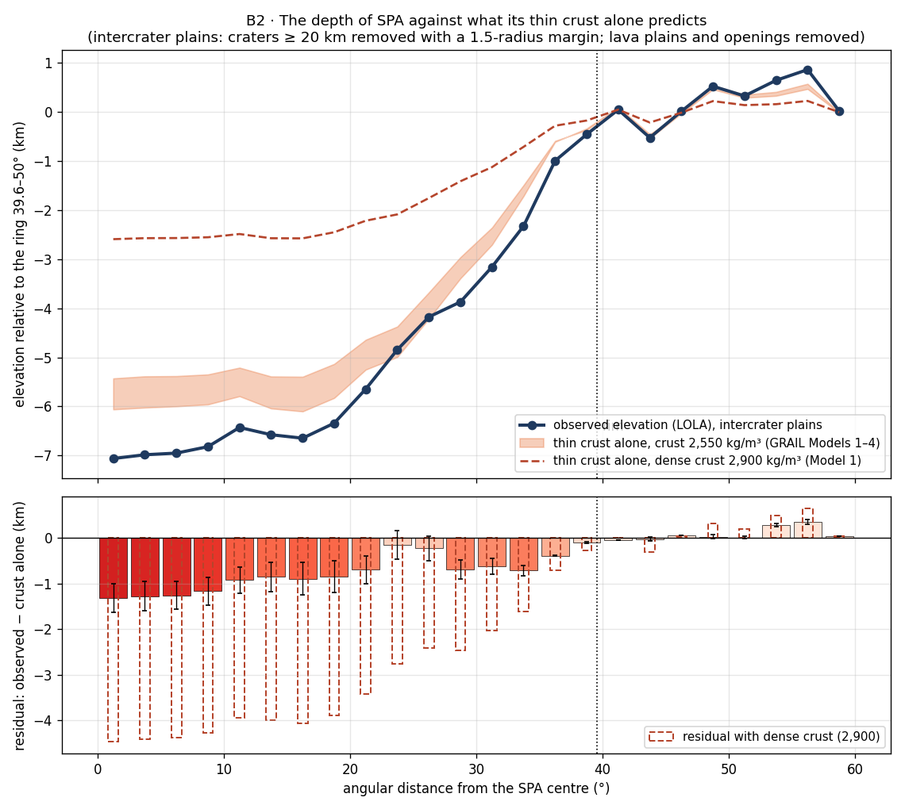
כיצד לקרוא את איור B2.1. הלוח העליון הוא הטבלה משורטטת כפרופיל מן המרכז (משמאל) עד השפה (מימין). הקו הכחול, הקרקעית הנמדדת, עובר מתחת לרצועה הכתומה של ניבוי הקרום לבדו לאורך כל האגן, והרחק ביותר מתחתיה במרכז; הקו המקווקו של קרום צפוף שוכן גבוה עוד יותר ומשאיר פער גדול יותר. הלוח התחתון מראה רק את הפער, טבעת אחר טבעת, כשהצבע מעמיק ככל שהוא גדל: העמודות האדומות ביותר עומדות במרכז.
חום מלמטה הרים את האזור לכיפה, והקרום החליק ממנה לצדדים. מקור החום נרגע עם הרפיית הפחיסות, לפני השחרור; אחרי השחרור, כשהגוף התרחק אל החלל, הקירור התחזק ושינה את המבנה: האזור המורם שקע לשקע, ושלושה שינויים מתמשכים השאירו את האגן נמוך.
במילים פשוטות, הברנר עשה לקרקעית SPA מה שחום עושה לתבנית של בצק תופח המונחת מעל להבה: תחילה הוא ניפח את האזור כלפי מעלה, והקרום שהתרכך החליק במורד צלעות הנפיחות; אחר כך, כשהלהבה הונמכה והאזור התקרר, הנפיחות שקעה בחזרה — ושקעה נמוך יותר ממה שהתחילה, משום שהחום שינה את החומר בזמן שפעל. שלושה שינויים כאלה נמנים.
קרום דק — מן ההחלקה של השכבות שהתרככו לצדדים ומהתכת בסיס הקרום.
חומר שאבד — החשיפה הממושכת לחום אידתה חומר נדיף וגם חומר פחות נדיף, שלא חזרו (B11; Tian et al. 2026). הברזל לא התאדה; הוא נשאר.
דחיסה — שכבות החומר החוזר, המלאות חללים, התבשלו מלמטה; אחר כך, בשלב הקירור שבא אחרי הניתוק, הן נדחסו והתכווצו. הדחיסה מגיעה לשיאה במרכז, היכן שהחום היה חזק ביותר, ונחלשת בהדרגה לעבר השפה.
במקביל, חומר נושא ברזל מכדור הארץ הגיע אל בסיס האזור והתרכז שם כשחומרים אחרים עזבו (B10); המסה הצפופה הזו שבעומק מושכת את פני השטח שמעליה מטה.
השינוי הראשון הוא הקרום הדק שנמדד בידי GRAIL, ושיווי המשקל של הציפה משלב 4 כבר מסביר את העומק שהוא נותן. השארית של שלב 4 היא העומק שנותר, ובמודל היא תוצר משולב של החומר שאבד ושל הדחיסה. הברזל המרוכז הוא הקריאה של המודל למסה הצפופה שגם המדע זקוק לה.
המודל מנבא עומק שהקרום הדק לבדו אינו מסביר; שארית שהיא הגדולה ביותר במרכז ופוחתת לעבר השפה; וקרקע נמוכה מעל המסה הכבדה.
הפרופיל הרדיאלי. השארית גדולה במרכז ופוחתת בהדרגה לעבר השפה, מ-1.1–1.8 ק”מ בתוך 10° עד 0.2 ק”מ בשפה, כפי שדחיסה הנחלשת החוצה מן המרכז מנבאת.
יציבות מתודולוגית. השארית זהה בכל רוחב שולי המיסוך; לכן היא שייכת לאגן, ולא למכתשים מאוחרים.
סדר הגודל. סדר הגודל מתאים: שארית של 1.1–1.8 ק”מ מתאימה לעמודה של 9–15 ק”מ שאיבדה 12% חללים; עם קרום צפוף, כ-37 ק”מ. החשבון פשוט: שכבה המאבדת 12% מנפחה כשהחללים נסגרים נעשית דקה ב-12%, ולכן עמודה של 9 עד 15 ק”מ שוקעת ב-1.1 עד 1.8 ק”מ, ופער של כ-4.4 ק”מ דורש עמודה של כ-37 ק”מ (; גרסה קודמת נתנה כ-35 ק”מ).
התלכדות עם המסה. הקרקע הנמוכה ביותר שוכנת מעל המסה הצפופה, כפי שריכוז ברזל בעומק היה נותן.
הכרעת המודל: מתאים השארית הגדולה ביותר במרכז ויורדת לעבר השפה, שייכת לאגן ולא למכתשים, ובגודל שדחיסה נותנת; הקרקע הנמוכה ביותר שוכנת מעל המסה הצפופה.
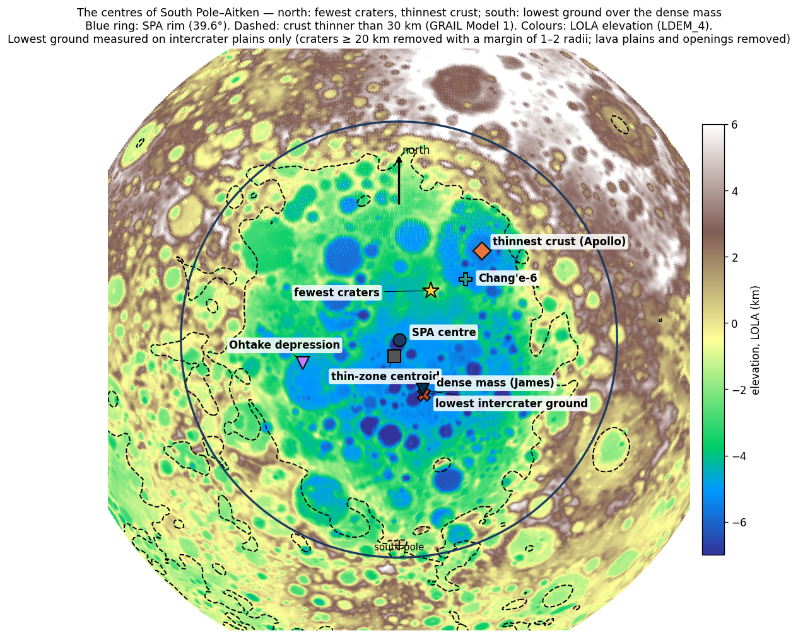
כיצד לקרוא את איור B2.2. המפה מציבה במבט אחד את ה”מרכזים” הרבים שמתברר שיש ל-SPA. עקבו אחריהם מצפון לדרום: תחילה הקבוצה של הצפון-מזרח, היכן שהמכתשים מעטים ביותר והיכן ש-Chang’e-6 נחתה; אחר כך המרכז הגאומטרי של האגן; אחר כך, בדרום, המסה הצפופה והקרקע הנמוכה ביותר. האיור הוא המבט הראשון על דפוס שהמאמר חוזר אליו: לאגן אין מרכז אחד אלא שני מוקדים, אחד בצפון ואחד בדרום.
מה זה מראה. הקרום הדק אינו מספיק. אפילו בצפיפות קרום רגילה חסר עומק במרכז; עם קרום עשיר בברזל, הרבה יותר. שני ההסברים זקוקים למשהו מעבר לקרום הדק, ושניהם מספקים אותו. במודל שני דברים פועלים יחד: דחיסה כללית, החזקה ביותר במרכז ונחלשת לעבר השפה, ומסה כבדה בדרום המושכת את פני השטח שם עוד יותר מטה.
שני מוקדים. ל-SPA שני מוקדים: בצפון, מחיקת המכתשים (כיוון הברנר); בדרום, העומק והמסה (ברזל מרוכז). הארגון הדו-מוקדי הזה מחבר את B1 ו-B2: פני השטח מתעדים היכן שהחום עבר, והעומק והמסה מתעדים היכן שהברזל התרכז. מכתשים מזהמים מדידות גובה; מכאן והלאה, הגבהים נמדדים על המישורים שבין המכתשים. B2 אינו מכריע בין ההסברים, אך הוא מראה שנדרש יותר מקרום דק.
נתונים וקוד.
| נתונים | מקור |
|---|---|
| גובה | LOLA LDEM_4 (4 פיקסלים למעלה, 7.6 ק”מ), PDS; SHA-256 c04632eb…af476 |
| עובי הקרום | GRAIL, ארבעת המודלים של Wieczorek et al. 2013, רשת של 0.25° |
| מכתשים למסכה | Robbins 2019, ק”מ, בלי אגנים הגדולים מ-300 ק”מ (2,546 מכתשים סביב SPA) |
| לבה ופתחים | LROC; 36 הפתחים (נדגמו מן המפה שלנו, הרדיוסים מקטלוגים) |
| קוד | b2.py, b2plains.py, b2fig.py — תיקייה 19_B2_depth |
פתוח. הרדיוסים של 36 הפתחים עדיין טעונים בדיקה. הירידה בשארית סביב 23–26° והעלייה המחודשת ב-28–34° ייבדקו כתכונה אמיתית (חגורת השפה) או כרעש. הכרעת המדע תלויה במסה של James et al.; B10 בודק את מיקומה ואת עומקה.
מה שיש בידינו עכשיו: קרקעית SPA שוכנת במרכזה 1.1–1.8 ק”מ עמוק יותר ממה שהקרום הדק שלה נותן, העומק הנוסף נמוג לעבר השפה, והקרקע הנמוכה ביותר עומדת מעל המסה הצפופה בדרום. יחד עם B1, האגן מראה מוקד צפוני שבו מכתשים נמחקו ומוקד דרומי שבו הקרקעית שקעה.
התופעה. SPA הוא האזור הנמוך והעמוק ביותר על הירח. הפער בידע. עדיין לא פורט כמותית כמה מעומקו מסביר הקרום הדק שלו בשיווי משקל איזוסטטי, טבעת אחר טבעת, כשהמדידה נעשית על הקרקע שבין המכתשים ולא על מכתשים שנוצרו אחר כך. שאלת המחקר: כמה עמוק SPA לעומת מה שהקרום הדק שלו לבדו מנבא, וכיצד משתנה השארית מן המרכז אל השפה?
העומק נקרא כעומק החפירה של הפגיעה, כשהקרום הדק צף נמוך על המעטפת ומסה צפופה שוכנת מתחת לאגן (James et al. 2019); הקרקעית עשירה בברזל, עם צפיפות גרגרים קרובה ל-3,000 ק”ג/מ”ק (Huang & Wieczorek 2012). מה חדש כאן: הגובה נקרא רק על המישורים שבין מכתשים של 20 ק”מ ומעלה, כשמישורי הלבה והימות מוסרים, מול הקרום של כל ארבעת מודלי GRAIL, טבעת אחר טבעת.
הדחיסה של השכבות המבושלות, שהיו עשירות בחללים, הייתה חזקה ביותר במרכז, היכן שהחום היה חזק ביותר; לכן האגן עמוק יותר ממה שהקרום הדק שלו מסביר, והשארית גדולה ביותר במרכז ויורדת לעבר השפה.
סוג המחקר: כמותי; גובה נצפה מול הניבוי האיזוסטטי, לפי טבעת. המדגם: הגובה של LOLA (LDEM_4) על המישורים שבין המכתשים, בטבעות של 5° סביב המרכז. הכלים: ארבעת מודלי הקרום של GRAIL (Wieczorek et al. 2013), קרום 2,550 ומעטפת 3,220 ק”ג/מ”ק, עם קרום צפוף של 2,900 כבדיקת רגישות; Robbins (2019) למסכת המכתשים, עם שוליים של רדיוס אחד עד שניים.
מכתשים של 20 ק”מ ומעלה הוסרו עם שוליהם, ומישורי הלבה והימות יחד איתם; הגבהים והקרום נקראו על מה שנותר, ביחס לטבעת 39.6–50°. הערכים הם הטבלה של שלב 4 ואיור B2.1.
השארית שלילית לאורך כל הפרופיל: היא עד ק”מ בתוך 5°, עד ב-5–10°, ודועכת בהדרגה עד עד בשפה; עם קרום צפוף היא גדלה לכ-4.4 ק”מ במרכז. היא זהה בכל רוחב שוליים, ולכן שייכת לאגן ולא למכתשים. הקרקע הנמוכה ביותר שבין המכתשים (61° דרום, 199° מזרח, ק”מ) שוכנת כ-35 ק”מ מן המרכז המפורסם של המסה הצפופה של James et al. (2019).
תוצאה. ההשערה נתמכת: האגן עמוק יותר ממה שהקרום הדק שלו מסביר, והשארית גדולה ביותר במרכז ויורדת לעבר השפה, כפי שדחיסה הנחלשת החוצה מן המוקד החם הייתה יוצרת; שארית של 1.1–1.8 ק”מ מתאימה לעמודה של 9–15 ק”מ שאיבדה 12% מחלליה. מגבלות. מודל הגובה מפריד 7.6 ק”מ; השארית תלויה בצפיפות הקרום המונחת; המסה הצפופה שמתחת לאגן יכולה גם היא למלא את הפער. כיווני המשך מחקר. הנקבוביות בעומק בתוך האגן וסביבו (B6); הירידה של השארית ב-23–26° ועלייתה ב-28–34°.
B3קרום דק
B1 ו-B2 קראו את פני השטח של SPA: את המכתשים שלו ואת עומקו. B3 ו-B4 יורדים שכבה אחת למטה, אל הקרום עצמו — הקליפה החיצונית הקלה של הירח, המונחת על המעטפת הצפופה ממנה. B3 שואל מה עובי הקליפה הזאת בתוך האגן והיכן היא הדקה ביותר; B4 שואל מה עלה בגורל הקרום החסר שם.
בקצרה. הקרום בתוך SPA הוא הדק ביותר על הירח כולו. כאשר מסירים את הפתחים — אגנים צעירים שחפרו בו בורות משלהם — מתברר כי מרכזו של אזור הקרום הדק של SPA עצמו נמצא כ-150–190 ק”מ דרומית למרכז האגן, והנקודה הדקה ביותר שלו נמצאת בחלקו הדרומי של האגן, סמוך לקרקע הנמוכה ביותר ולמסה הצפופה.
כיצד יודעים את עובי הקרום. מאחר שלא נקדח מעולם קידוח בקרום הירח, עוביו נגזר מן הכבידה. משימת GRAIL (שתי חלליות שטסו במבנה סביב הירח) מדדה את שדה הכבידה של הירח ברזולוציה גבוהה. הקרום קל מן המעטפת שמתחתיו, ולכן אזורים שבהם הקרום דק והמעטפת הצפופה קרובה יותר אל פני השטח מציגים משיכת כבידה חזקה מעט יותר. רכיב הכבידה שאינו מוסבר בטופוגרפיה הנראית (שנמדדה במד הגובה הלייזרי LOLA) — אנומליית Bouguer, הכבידה לאחר שהוסרה ממנה משיכת תבליט פני השטח — נקרא אפוא כתבליט של בסיס הקרום: אנומליית Bouguer חזקה מסמנת בסיס רדוד, וחלשה מסמנת בסיס עמוק. מניעת תלות במודל יחיד. המרת נתוני הכבידה לעובי דורשת הנחות יסוד — צפיפויות הקרום והמעטפת, והעובי בנקודת ייחוס אחת — ו-Wieczorek et al. (2013) פרסמו ארבעה מודלי קרום הנבדלים בבחירות אלה. תוצאה המתקיימת בכל הארבעה אינה תלויה בהן; לכן כל מדידה ב-B3 וב-B4 ניתנת בכל ארבעת המודלים, או בשני המודלים התוחמים אותם (מודל 1 ומודל 4).
הקרום בתוך SPA הוא הדק ביותר על הירח: 15–28 ק”מ במרכז האגן, לעומת 41–51 ק”מ מחוצה לו (ארבעת מודלי הקרום של GRAIL, Wieczorek et al. 2013). האגן איבד בערך מחצית מקרומו או יותר. עובי הקרום הממוצע בטבעות סביב מרכז SPA:
| טבעת ממרכז SPA | מודל 1 | מודל 2 | מודל 3 | מודל 4 |
|---|---|---|---|---|
| 0–5° | 16.0 | 15.8 | 24.1 | 22.9 |
| 5–10° | 16.4 | 16.3 | 24.5 | 23.4 |
| 10–15° | 16.2 | 16.0 | 24.0 | 22.9 |
| 15–20° | 17.5 | 17.4 | 25.3 | 24.2 |
| 20–25° | 21.5 | 21.7 | 29.4 | 28.7 |
| 25–30° | 26.5 | 27.0 | 34.7 | 34.2 |
| 30–35° | 33.4 | 34.3 | 42.3 | 42.2 |
| 35–39.6° (השפה) | 39.5 | 40.9 | 49.2 | 49.5 |
| 39.6–45° (מחוץ לאגן) | 40.6 | 42.0 | 50.1 | 50.5 |
| 45–50° | 41.9 | 43.4 | 51.5 | 51.9 |
ק”מ, כל הקרקע. ככל שהתא אדום יותר, הקרום דק יותר.
קראו את הטבלה מלמעלה למטה. הטבעות נמדדות במעלות קשת ממרכז האגן (מעלה אחת שקולה לכ-30 ק”מ על פני הירח), ושפת האגן היא המעגל שב-39.6°. הניתוח הרדיאלי מראה כי בכל ארבעת המודלים הקרום שטוח ודק עד 15° (כ-16 ק”מ במודלים 1–2, וכ-23–24 ק”מ במודלים 3–4); אחר כך הוא מתעבה בהדרגה לאורך 20–35°, מגיע בשפה לערך שמחוץ לאגן, וכמעט אינו משתנה מעבר לה. ארבעת המודלים נבדלים בכ-8 ק”מ ברמתם הכוללת, אבל המורפולוגיה של הפרופיל — קרקעית דקה ושטוחה, דופן עולה, רמה עבה בחוץ — זהה בכל הארבעה. הצבעים עוברים מאדום בראש הטבלה לחיוור בתחתיתה: כיוון שינוי יחיד, מן המרכז החוצה.
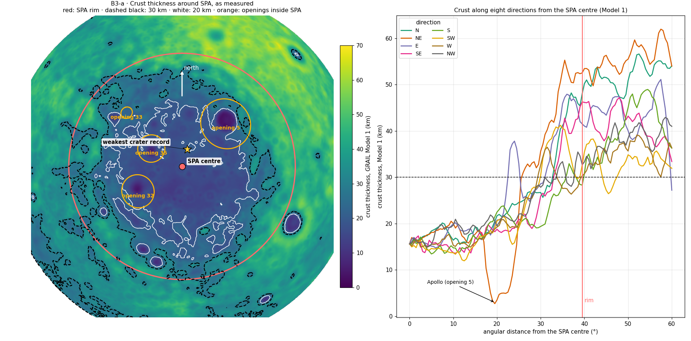
המפה שמשמאל מראה היכן שוכן הקרום הדק; הפרופילים שמימין מראים שהקרקעית הדקה זהה בכל כיוון עד כ-20°. היוצא מן הכלל היחיד, הצניחה החדה לצפון-מזרח, אינו הקרום של SPA עצמו אלא הבור שחפר בתוכו אגן צעיר יותר, Apollo. זה מה שחייב את הניקוי המתואר להלן.
כיצד מדדנו: פרוטוקול ניקוי הנתונים. מפת הקרום מראה שהאגנים הצעירים בתוך SPA — הפתחים — חפרו “בורות” משלהם בקרום הדק, ואלה מזהמים את התמונה של SPA עצמו. (פתח, בסדרה זו, הוא ים מעל כיפת הזנה: מקום שבו חומר עלה מלמטה ושבו הקרום נפתח; מאמר 5.) אם מותירים אותם בניתוח, הנקודה הדקה ביותר במפה הגולמית נופלת פשוט בעמוק שבבורות האלה, Apollo, ממצא שאינו אומר דבר על SPA. לכן בחנו את קרום SPA בלי הפתחים ובלי מישורי הלבה. התוצאות זהות גם כאשר מסירים בנוסף מכתשים של 20 ק”מ ומעלה, ובכל ארבעת המודלים.
| מה נמדד — SPA עצמו | תוצאה |
|---|---|
| הנקודה הדקה ביותר (החלקה של ק”מ על הקרקע שנותרה) | 61° דרום, 184° מזרח; 12–13 ק”מ (מודלים 1–2), 18–20 ק”מ (מודלים 3–4); 270–285 ק”מ דרומית למרכז |
| מרכז האזור שבו הקרום דק מ-30 ק”מ | 57–58.5° דרום, 185–191° מזרח; 150–190 ק”מ דרומית למרכז |
| המרחק בין השניים | ק”מ — 5% מקוטר האגן |
| שטח האזור הדק מ-30 ק”מ | 1.8–2.9 מיליון קמ”ר; רוחב שקול –1,900 ק”מ |
הטבלה נותנת שתי מתודולוגיות בלתי תלויות למציאת “האמצע” של הקרום הדק של SPA. איתור נקודתי. הקרום ממוצע על פני חלונות ברוחב כ-300 ק”מ, כך שאף בור קטן יחיד אינו מכריע את התוצאה, ונבחר החלון בעל העובי המינימלי. איתור שטחי. כל הקרקע שבה הקרום דק מ-30 ק”מ מותווית, ומחושב מרכז הכובד של הצורה שנוצרה, כפי שמוצאים את מרכז הכובד של צורה גזורה. שתי הנקודות נמצאות במרחק של כ-120 ק”מ זו מזו — 5% מאגן שרוחבו 2,400 ק”מ — ולכן הן מתארות אותו מקום, ושתיהן מוסטות דרומית למרכז הנומינלי (53° דרום, 191° מזרח). האזור הדק מ-30 ק”מ מכסה 1.8–2.9 מיליון קמ”ר, שטחה של דיסקה ברוחב כ-1,500–1,900 ק”מ (גרסה קודמת נתנה כ-1,900 ק”מ, הקצה העליון): רוב שטח האגן.
המרחק מן המרכז שבו הקרום עובר את 30 ק”מ, לפי כיוון (חציון בכל גזרה, SPA עצמו):
| כיוון | מודל 1 | מודל 4 |
|---|---|---|
| צפון | 30° | 25° |
| צפון-מזרח | 24° | 24° |
| מזרח | 30° | 23° |
| דרום-מזרח | 34° | 32° |
| דרום | 37° | 27° |
| דרום-מערב | 33° | 27° |
| מערב | 32° | 27° |
| צפון-מערב | 29° | 24° |
ככל שהתא אדום יותר, האזור הדק מגיע רחוק יותר באותו כיוון. במודל 1 הוא הרחב ביותר בדרום (37°) והצר ביותר בצפון-מזרח (24°); במודלים 3–4 ההבדלים קטנים יותר.
טבלה זו נותנת את המתאר הגיאומטרי של האזור הדק. בהליכה מן המרכז החוצה לאורך כל אחד משמונה כיוונים, היא רושמת כמה רחוק מגיעים לפני שהקרום נעשה עבה מ-30 ק”מ. אילו האזור הדק היה מעגל שמרכזו במרכז האגן, כל שמונת המספרים היו שווים. הם אינם שווים: האזור הדק אינו מעגלי ואינו סימטרי סביב מרכז האגן. במודל 1 הוא קצר ביותר לכיוון צפון-מזרח (24°), במודל 4 לכיוון מזרח וצפון-מזרח (23–24°), ובמודל 1 הוא מגיע הכי רחוק לכיוון דרום (37°). ההתארכות לכיוון דרום וההיצרות בצד הצפון-מזרחי הן הסיבה לכך שמרכז הכובד של האזור הדק מוסט דרומית למרכז האגן.
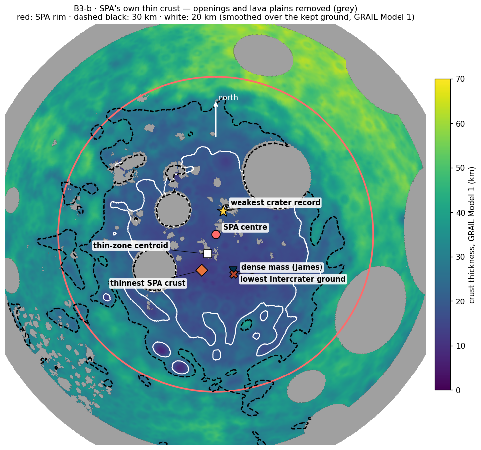
איור B3.2 מציב את שתי הנקודות הדרומיות על מפה אחת, ואיתן, להשוואה, את רשומת המכתשים של B1. הכוכב הוא רשומת המכתשים החלשה ביותר על הקרקע של איור זה, שממנה הוסרו הפתחים ומישורי הלבה; זהו מדד שונה מן המינימום של B1e (כ-270 ק”מ צפון-צפון-מזרח למרכז), הנקרא ממפת צפיפות רציפה על קרקע שנוקתה מ-34 הימות ומהילה של 200 ק”מ סביב כל אחד מהם. שניהם נמצאים בצד הצפוני של המרכז, ואילו נקודות הקרום נמצאות בצדו הדרומי.
מדוע איבד SPA כמחצית מקרומו והפך לאזור שקרומו הדק ביותר על הירח, ומדוע מרכזו של האזור הדק אינו במרכז האגן אלא דרומית לו, ונקודתו הדקה ביותר בדרום?
בקריאה המקובלת SPA הוא אגן פגיעה, והקרום הדק שלו הוא הבור שהותירה החפירה: הפגיעה שיצרה את SPA חפרה את הקרום והשליכה אותו אל מחוץ לאגן. במודלים של פגיעה אלכסונית הנעה דרומה — הכיוון שמציעות רוב העבודות האחרונות (Andrews-Hanna et al. 2025; Wakita et al. 2026) — האזור הדק מוארך לאורך המסלול ומצטמצם לכיוון דרום, עם מעבר הדרגתי בצד הדרומי (גם Citron et al. 2024). פגיעה אלכסונית, כזו הפוגעת בזווית ולא ישר מלמעלה, אינה חופרת בור סימטרי: היא חופרת עמוק יותר וארוך יותר בכיוון התקדמות הגוף, ולכן האזור הדק נמשך לאותו כיוון. המודלים אינם נדרשים לנבא נקודה דקה ביותר מסוימת, אלא את צורתו הכללית של האזור הדק. הקרום שכמעט אינו קיים ב-Apollo מוסבר בפגיעת Apollo עצמה, מאוחרת וקטנה יותר, שחפרה שוב בתוך SPA (Potter et al. 2018).
כאן המדע עומד במבחן. אין לו דרישה שמודליו אינם עומדים בה, ואין נקודה שהוא מנבא ושלא נמצאה.
תיבות פסק הדין החותמות את שלבים 4 ו-6 נוהגות לפי התבנית שנקבעה בראש חלק B: המדע נשפט לפי אמות המידה שלו (מסביר, מסביר בחלקו, מסביר בקושי, אינו מסביר), המודל לפי שלו (מתאים, מתאים בחלקו, פתוח), ואף תיבה אינה משווה את האחד לשני.
הכרעת המדע: מסביר אזור דק השוכן דרומית למרכז ומתרחב לכיוון דרום מתאים לפגיעה הנעה דרומה, ו-Apollo מוסבר בפגיעה משלו.
במודל SPA הוא המקום שבו חום הברנר הגיע אל בסיס הקרום בצד הרחוק: מקור חום מתחת לצד הרחוק, מול הפתחים של הצד הקרוב, כש-Imbrium היא היציאה העיקרית שלו ו-Serenitatis היציאה המשנית (A.5). הקרום שם דק משום שהחום הזה הסיר אותו. החום מלמטה יצר את הקרום הדק בשלושה מנגנונים תרמו-מכניים משולבים:
החלקה מן הכיפה. האזור, שנדחף וחומם מלמטה, הורם למבנה כיפה, והקרום שהתרכך החליק ממנה אל הצדדים בהשפעת כבידת הירח. קרום שמחומם מאבד את נוקשותו; על משטח מורם ומשופע הוא זוחל במורד המדרונות — בדומה לשכבת שעווה מרוככת הזולגת במורד דפנות כיפה מחוממת.
דחיפה החוצה בידי החום. חומר חם לוחץ חזק יותר מחומר קר: חלקיקים מהירים דוחפים חלקיקים איטיים. החומר החם שעלה מלמטה התפשט והתפרש לצדדים מתחת לקרום, ודחף אותו ממרכז שטף החום אל השוליים הקרירים.
התכה תת-קרומית. בסיס הקרום הותך בידי החום, והקרום נגרע במקומו.
בעוד המנגנון הראשון והשני מסיעים קרום הצידה, מן המרכז אל השוליים, המנגנון השלישי מסיר אותו במקומו, מלמטה. שניים מהם מוצגים להלן במספרים, כדי שהקורא יראה שכל אחד מהם אפשרי פיזיקלית בזמן שעמד לרשותו.
הפיזיקה של הדחיפה החוצה (מנגנון 2). לחץ תרמי. הטמפרטורה היא מדד לאנרגיה הקינטית של החלקיקים; בגז , והלחץ עולה עם הטמפרטורה. בחומר מוצק או צמיגי, שאינו חופשי להתפשט בנפחו, חימום יוצר לחץ: במילים: חומר שמחומם ב- מנסה לגדול בנפחו בשבר , כאשר הוא מקדם ההתפשטות התרמית שלו. אם סביבתו מונעת ממנו לגדול, הרי זה כאילו נדחס חזרה באותו שבר, והלחץ הנדרש לכך הוא השבר הזה כפול מודול הנפח , התנגדות החומר לדחיסה. אותו דבר קורה כאשר מחממים מים במיכל אטום ומלא לגמרי: הם אינם יכולים להתפשט, ולכן לחצם עולה עד שהמיכל נכנע. הטבלה נותנת את הערכים עבור חומר סיליקטי:
| גודל | ערך עבור חומר סיליקטי | סוג |
|---|---|---|
| — התפשטות תרמית נפחית | 2–4 לקלווין | ערך מקובל |
| — מודול נפח | 70–100 ג’יגה-פסקל | ערך מקובל |
| 1.4–4 מגה-פסקל לקלווין | נגזר | |
| חימום ב-300 קלווין | 0.4–1.2 ג’יגה-פסקל | נגזר |
| חוזק לחיצה | ג’יגה-פסקל | ערך מקובל |
החישוב מראה כי חימום בכמה מאות קלווין יוצר לחץ הגדול פי 2–6 מחוזק הלחיצה (גרסה קודמת נתנה של 2–3 מגה-פסקל לקלווין, 0.6–0.9 ג’יגה-פסקל ופי 3–4, שהם הערכים המרכזיים של הטווחים האלה) — הלחץ הגדול ביותר שהחומר יכול לשאת לפני שהוא נכשל; החומר אינו יכול לעמוד בו, והחומר החם נדחף החוצה, מן המרכז החם אל הקר.
התפרשות צידית מתחת לקרום. החומר החם עובר הפחתת צפיפות תרמית: ק”ג/מ”ק בחימום של 300 קלווין. ראש של חומר חם בעובי מפעיל מאמץ צידי מגה-פסקל ( ק”מ, מ’/ש’²). שכבה של חומר קל יותר המונחת מתחת לסביבה כבדה יותר לוחצת הצידה, כפי שעמוד מים לוחץ על דפנות המיכל שלו; היא הדחיפה הצידית הזאת, הנקבעת בהפרש הצפיפות, בכבידת הירח ובעובי השכבה החמה. מהירות ההיענות של החומר לדחיפה תלויה בצמיגותו — התנגדותו לזרימה, גבוהה מאוד בחומר מוצק חם הזוחל לאט לאורך זמנים ארוכים. בצמיגות של פסקל-שנייה קצב העיוות נאמד ב- למיליון שנה: בתוך מיליוני שנים החומר נע מרחקים בסדר גודל של עובי השכבה החמה עצמה, וזה מספיק כדי להסיע קרום מן המרכז אל השוליים.
כיווניות שטף החום. החוק השני של התרמודינמיקה קובע את הכיוון: חום זורם מחם לקר (חוק Fourier, ), ובמקביל נוצר הפרש לחצים מחם לקר () הדוחף חומר באותו כיוון. לשני החוקים אותה צורה: היכן שהטמפרטורה יורדת (, שיפוע הטמפרטורה), החום זורם במורד השיפוע הזה, והלחץ יורד יחד איתו, כך שכיוון זרימת החום וכיוון הדחיפה על החומר מתלכדים — מן המרכז החם אל השוליים הקרירים.
דיפוזיה תרמית — אפקט Soret. בתערובת שיש בה הפרש טמפרטורה, רכיבים נעים גם בגלל הטמפרטורה עצמה: כאן הוא זרם של רכיב אחד, חלקו בתערובת, מקדם הדיפוזיה שלו ו- מקדם Soret. האיבר הראשון הוא דיפוזיה רגילה, המשווה הבדלי הרכב; השני הוא זרם המונע בהפרש הטמפרטורה בלבד, ומסוגל לבנות הבדלי הרכב. במאגמות סיליקטיות – לקלווין (Lesher & Walker 1986). למנגנון שתי מגבלות. מגבלת מהירות. הוא איטי — מ”ר/ש’ מזיז חומר, למרחק של כ-, רק מטרים ספורים בעשרות אלפי שנים וכחצי קילומטר במיליארד שנה (גרסה קודמת נתנה מאות מטרים ועשרות קילומטרים; אומדן השורש הריבועי קטן עוד יותר, וזה רק מחזק את המסקנה) — איטי מכדי להסיר קרום בקנה מידה של אגן, ולכן אין הוא מה שדחף את הקרום. כיוון הפרדה הפוך. בניסויים הסיליקה מתרכזת בצד החם, בעוד הברזל והמגנזיום נודדים אל הצד הקר — ההפך מן הקרקעית העשירה בברזל של מרכז SPA, ולכן הוא אינו מסביר את הברזל. תפקידו מוגבל להפרדת הרכב מקומית בתוך שכבות שבושלו זמן רב.
הפיזיקה של ההתכה מלמטה (מנגנון 3). תקציב האנרגיה להתכת הקרום נקבע לפי שימור האנרגיה (החוק הראשון) ותנאי Stefan לחזית ההתכה. כדי להתיך קרום בעובי יש לחמם אותו עד ההתכה ואז להתיך אותו: המשוואה הראשונה היא תקציב: כל קילוגרם קרום צריך כדי להתחמם עד נקודת ההתכה שלו ( הוא קיבול החום הסגולי, החום הדרוש לחימום קילוגרם אחד בקלווין אחד), ואחר כך , החום הכמוס, כדי להפוך ממוצק להתך; כפול הצפיפות והעובי , זה נותן את האנרגיה לכל מטר רבוע של פני שטח. המשוואה השנייה היא תנאי Stefan: שטף חום המגיע מלמטה מזיז את חזית ההתכה כלפי מעלה במהירות , השטף מחולק באנרגיה שכל מטר מעוקב צריך.
| גודל | ערך |
|---|---|
| — חום כמוס של התכה | ג’ול/ק”ג |
| — חימום ב-800 קלווין | ג’ול/ק”ג |
| — צפיפות הקרום | 2,900 ק”ג/מ”ק |
| האנרגיה להתכת 20 ק”מ קרום | ג’ול/מ”ר |
| שטף חום מלמטה | זמן להתכת 20 ק”מ |
|---|---|
| 0.5 ואט/מ”ר (פי 25 מן השטף של היום) | מיליון שנה |
| 0.1 ואט/מ”ר | מיליון שנה |
הטבלה הראשונה בונה את התקציב; הטבלה השנייה מחלקת אותו בשני שטפי חום. הזמן הוא פשוט האנרגיה למטר רבוע מחולקת בחום המגיע בכל שנייה לכל מטר רבוע. אפילו השטף המתון, 0.1 ואט/מ”ר, מתיך את 20 הק”מ בכ-22 מיליון שנה.
התכת 20 ק”מ קרום מלמטה דורשת אפוא חלון זמן של מיליוני עד עשרות מיליוני שנים בלבד — קצר בהרבה מן הזמן שבו פעל הברנר; המנגנון ישים גם בשטף חום מתון.
הערכים הם סדרי גודל עם פרמטרים מקובלים לחומר סיליקטי (התפשטות, מודול נפח, צמיגות, שטף חום), המסומנים כהנחות (ADOPTED). הם מראים שהמנגנונים אפשריים; הם אינם מחשבים במדויק מה קרה.
מה עלה בגורל הקרום והכיפה. הקרום שנדחף החוצה נערם סביב האגן — הטבעת המעובה (B4). החום היה החזק ביותר במרכז הכיפה, שמתחתיה עלה; הוא התיך את החלקים העבים והדקים של האזור כאחד, והקרום הדק ביותר נותר בדרום, שם הקרום המקורי היה דק יותר (B4). בבסיס האזור החומר נושא הברזל שהגיע מכדור הארץ נשאר, והתרכז כשחומרים אחרים עזבו (B10). מקור החום נרגע עם הרפיית הפחיסות, לפני השחרור מכדור הארץ; לאחר הניתוק פעל רק חום שיורי, שדעך לאט. ככל שהגוף התרחק אל החלל הלך הקירור והתחזק ושינה את המבנה: השכבות שבושלו עברו דחיסה והתכווצו, והאזור המורם שקע לכדי שקע. הקרום הדק הוא אפוא סימן של החום, ולא תנאי מוקדם לו: הברנר לא חיפש מקום שבו הקרום כבר היה דק; הוא עשה את הקרום דק במקום שבו פעל.
הפתחים בתוך SPA הושפעו מאוד מן הברנר והשפיעו על סביבתם, כך שמבחינה סטטיסטית הם דומים לעתים למרכז האגן; הם רעש המסתיר את המבנה של SPA עצמו.
המודל מנבא קרום דק בכל האזור המחומם, הדק ביותר היכן שהקרום המקורי היה דק, ושם גם את הקרקע הנמוכה ביותר; וברזל מרוכז בבסיס האזור.
התכנסות דרומית. המבנה של SPA מתקבץ בדרומו: הקרום הדק ביותר של SPA (61° דרום, 184° מזרח), הקרקע הנמוכה ביותר שבין המכתשים (61° דרום, 199° מזרח, B2) והמסה הצפופה (62° דרום, 200° מזרח, B10) שוכנים כולם בדרום, בתוך ק”מ זה מזה (גרסה קודמת נתנה ק”מ). שלוש מדידות בלתי תלויות — עובי הקרום מן הכבידה, הגובה ממד הגובה הלייזרי על הקרקע שבין המכתשים, ומסה קבורה משדה הכבידה בעומק — נופלות באזור קטן אחד של אגן שרוחבו 2,400 ק”מ.
מרכז הכובד של האזור הדק והנקודה הדקה ביותר כמעט חופפים — 5% מקוטר האגן.
נחיצות הניקוי. הסרת הפתחים מנקה את התמונה, כפי שהמודל מצפה: בלי “הבורות” של הפתחים מופיע המבנה של SPA עצמו.
פער פתוח. נקודה אחת נשארת פתוחה: רשומת המכתשים החלשה ביותר שוכנת בצד הצפוני של האזור הדק, ק”מ מן הנקודה הדקה ביותר; סביב הנקודה הדקה ביותר הרשומה חזקה (0.82–1.10) — כלומר 0.82 עד 1.10 מצפיפות המכתשים ממש מחוץ לשפה, קרוב לרגיל. מדוע זה כך נשאר פתוח כאן; B4 חוזר לכך.
הכרעת המודל: מתאים הקרום הדק ביותר של SPA, הקרקע הנמוכה ביותר שלו והמסה הצפופה שוכנים יחד בדרום, בתוך כ-230 ק”מ זה מזה, בתוך האזור המחומם, בצדו הדרומי הדק.
מה זה מראה. הפתחים מזהמים את מדידת הקרום בדיוק כפי שמכתשים מזהמים את מדידת הגובה: Apollo לבדו יצר את “הנקודה הדקה ביותר” של המדידה הגולמית. ל-SPA יש “דרום מבני” — הקרום הדק ביותר, הקרקע הנמוכה ביותר והמסה הצפופה, שלושתם יחד — ו-B2 ו-B3 מצביעים על אותו מקום. הצפון שייך לרשומת המכתשים החלשה, הדרום למבנה; שניהם שוכנים בתוך אותו אזור של קרום דק.
בהנחה שהאגן נוצר בפגיעה אלכסונית הנעה דרומה, המדע מסביר את B3 היטב — את הקרום הדק ואת מיקומו דרומית למרכז. הסבר זה תלוי בהנחת הפגיעה; B3 לבדו אינו מכריע בין ההסברים, אבל הוא מראה היכן שוכן גוף האגן.
נתונים וקוד.
| נתונים | מקור |
|---|---|
| עובי הקרום | GRAIL, ארבעת המודלים של Wieczorek et al. 2013, רשת של 0.25° |
| פתחים ולבה | 36 הפתחים (נדגמו מן המפה שלנו, רדיוסים מקטלוגים); LROC |
| מכתשים (בדיקה נוספת) | Robbins 2019, ק”מ, שוליים של 1.5 רדיוסים |
| בדיקה בלתי תלויה | Paper8_B3_Thin_Crust (30.9.2026): מרכז האזור הדק 103–112 ק”מ דרום-דרום-מערב (כל הקרקע); Apollo 3.9–8.5 ק”מ בחלון מעגלי של 150 ק”מ |
| קוד | b3clean.py, b3figs.py |
| פיזיקה | ערכים מקובלים לחומר סיליקטי; מקדם Soret: Lesher & Walker 1986 (טרם נבדק מול המקור) |
הערה מתודולוגית. הבדיקה הבלתי תלויה נעשתה על כל הקרקע, כולל הפתחים; שם מרכז האזור הדק נמצא 103–112 ק”מ דרום-דרום-מערב למרכז האגן — קרוב יותר למרכז מאשר על הקרקע המנוקה, אבל באותו כיוון — והקרום של Apollo, 3.9–8.5 ק”מ, הוא הדק ביותר במפה הגולמית: הזיהום שפרוטוקול הניקוי מסיר.
פתוח. מדוע רשומת המכתשים החלשה שוכנת בצפון ולא בנקודה הדקה ביותר — נשאר פתוח במכוון. רדיוס האזור הדק בדרום תלוי במודל: במודלים 3–4 הקרום עובר את 30 ק”מ כבר ב-19.5° ואחר כך יורד שוב (בדיקה בלתי תלויה). עובי הקרום בנקודה הדקה ביותר תלוי באופן שבו מוגדרת ההחלקה. רדיוסי 36 הפתחים עדיין טעונים בדיקה.
B4הטבעת החיצונית
B3 מצא שהקרום בתוך SPA דק. קרום שהוסר ממקום אחד חייב ללכת לאנשהו, או להיהרס. B4 מחפש אותו סביב האגן, ומוצא טבעת של קרום מעובה. שתי הקריאות מצפות לטבעת כזאת: בקריאת הפגיעה היא החומר שהושלך מן המכתש; במודל היא הקרום המרוכך שהחליק ונדחף החוצה מן הכיפה המחוממת. מה שמבדיל ביניהן הוא צורת הטבעת — היכן היא עבה והיכן היא חסרה.
בקצרה. סביב SPA הקרום בולט בטבעת היקפית, 50–55° ממרכזו. בתוך האגן הקרום אחיד בכל הכיוונים (15–19 ק”מ), בדומה למאגר מים מפולס; מחוצה לו נשמרו פני השטח המקוריים, עבים בצפון-מזרח ודקים בדרום-מערב, והטבעת יורשת אותם. הטבעת היא בליטה מעל פני שטח אלה בכל כיוון חוץ מן המערב.
פילוס המגמה האזורית. קרום הירח אינו אחיד גם הרחק מ-SPA: באופן כללי הוא דק יותר בצד הקרוב ועבה יותר ברמות הצד הרחוק. כדי לבודד את החתימה המקומית של האגן יש קודם להסיר את המגמה הרחבה הזאת, כפי שמפלסים שולחן משופע לפני שמחפשים בו בליטה. הערכת נפח החומר החסר. לאחר הסרת המגמה האזורית של הצד הרחוק, הקרום סביב SPA עבה מן הרגיל בכל ארבעת מודלי הקרום של GRAIL: ההתעבות מגיעה לשיא של 3.8–5.7 ק”מ, 50–55° ממרכז האגן, כ-320–470 ק”מ מעבר לשפה (גרסה קודמת נתנה 350–430 ק”מ), לאורך רצועה שרוחבה כ-450 ק”מ. ניתוח שנערך ב-18 גזרות של 20°, בכל ארבעת המודלים, מראה כי הטבעת, הנפרשת עד 60°, מכילה כ-37% בלבד מן הקרום החסר באגן. כלומר, אילו הקרום החסר בתוך השפה היה פשוט מועבר החוצה ונערם מחוץ לה, הוא היה יוצר טבעת הגדולה כמעט פי שלושה מזו שנמצאה.
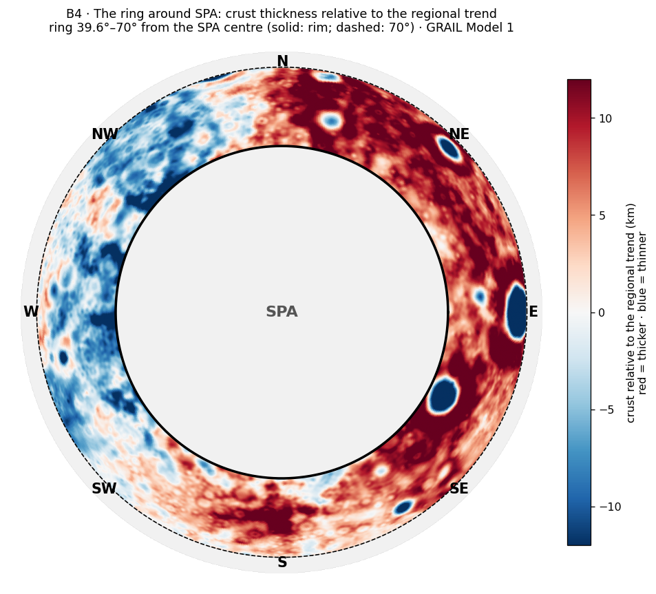
האיור מראה רק את הרצועה שמחוץ לשפה, לאחר הסרת המגמה. הרצועה האדומה היא הטבעת; היא רחבה ורציפה בצד המזרחי ודועכת בצד המערבי.
הכיוון. פירקנו את העובי בטבעת 45–60° לפי כיוון. בהקפת הטבעת העובי עולה ויורד, ואת השונות המרחבית הזאת אפשר לפרק לדפוסים פשוטים. הרכיב החד-צדדי הוא טבעת עבה בצד אחד ודקה בצד שמולו, כמו צלחת מוטה; עוצמתו היא בכמה הצד העבה עבה יותר, וכיוונו הוא לאן הצד העבה פונה. הרכיב הדו-צדדי הוא טבעת עבה בשני צדדים נגדיים ודקה בשני הצדדים שביניהם, כמו אליפסה. נמצא רכיב חד-צדדי חזק — עבה בצד אחד ודק בצד שמולו — ורכיב דו-צדדי חלש יותר. כדי לוודא שהממצא אינו תלוי בגיאומטריה שבה מוגדרת הטבעת, מדדנו אותו גם על האליפסה של האגן ( ק”מ), בשני כיווני ההטיה שפורסמו:
| צורת הטבעת | רכיב חד-צדדי (ק”מ) | כיוון הצד העבה | רכיב דו-צדדי (ק”מ) |
|---|---|---|---|
| מעגל (39.6°) | 7.8–8.9 | 96–97° | 2.9–3.3 |
| אליפסה, ציר ארוך ° | 8.0–9.1 | 98° | 4.3–4.9 |
| אליפסה, ציר ארוך ° | 7.7–8.6 | 98–99° | 3.5–4.0 |
הטווח בין מודל 1 למודל 4. הכיוון נמדד מן הצפון (0°) דרך המזרח (90°). ככל שהתא אדום יותר, האסימטריה חזקה יותר.
כל שורה משרטטת את הטבעת בצורה אחרת: כמעגל, וכאליפסה שפורסמה של האגן, מוטה לצד אחד ולצד האחר. הביטו בעמודה האמצעית: הצד העבה פונה ל-96–99° בכל שלוש השורות, כלומר כמעט בדיוק מזרחה. הרכיב החד-צדדי הוא 7.7–9.1 ק”מ בכל השלוש, גבוה פי שניים ומעלה מן הרכיב הדו-צדדי.
הניתוח מראה כי האסימטריה אינה תלויה בהנחת צורת האגן: במעגל ובאליפסה, בשתי ההטיות, הצד העבה הוא המזרח (96–99°), בעוצמה כמעט זהה.
פני השטח שבהם נוצרה הטבעת. מפת הקרום מראה ש-SPA שוכן בשולי הרמות של הצד הרחוק — הקרום העבה ביותר על הירח — מצפון ומצפון-מזרח לו. האסימטריה הפונה מזרחה עלולה אפוא להיות השתקפות של שיפוע הרמות בלבד, שהטבעת חוצה במקרה, ולא תכונה של הטבעת עצמה. כדי לבודד את הבליטה מן השיפוע עקבנו אחר הקרום מן המרכז החוצה, עד 90°, בכל כיוון, והשווינו את הטבעת לקרום הרחוק יותר באותו כיוון:
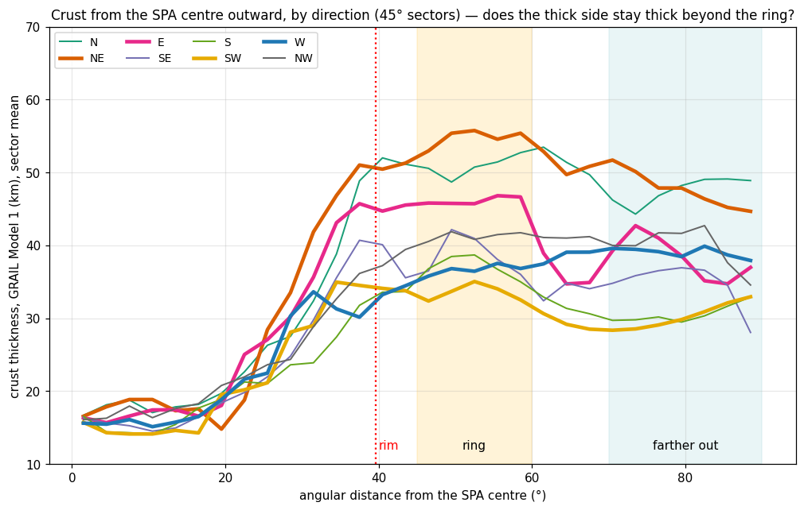
שמונת הקווים באיור הם שמונה הליכות רדיאליות אל מחוץ לאגן. סמוך למרכז הם מונחים זה על זה; בחוץ הם נפרשים כמניפה, כל אחד לעבר העובי של האזור שאליו הוא נכנס. השאלה היא אם קו עולה בטבעת ויורד שוב מעבר לה — בליטה — או רק מטפס לעבר הרמה האזורית שלו.
| כיוון | הטבעת (45–60°) | רחוק יותר (70–90°) | בליטת הטבעת |
|---|---|---|---|
| צפון | 50.9 | 47.6 | |
| צפון-מזרח | 54.8 | 47.4 | |
| מזרח | 46.2 | 38.4 | |
| דרום-מזרח | 38.7 | 34.8 | |
| דרום | 37.1 | 30.6 | |
| דרום-מערב | 33.5 | 30.4 | |
| מערב | 36.7 | 39.0 | |
| צפון-מערב | 41.3 | 39.7 |
ק”מ, מודל 1 (מודל 4 דומה: ממוצע ). ככל שהתא אדום יותר, הבליטה גדולה יותר; כחול: הטבעת דקה מסביבתה.
העמודה האחרונה היא הטבעת פחות הקרום הרחוק יותר באותו כיוון. השוואת כל כיוון לעצמו מבטלת את שיפוע הרמות: כיוון שהוא עבה משום שהרמות עבות שם, עבה גם בטבעת וגם מעבר לה, וההפרש מתבטל. השארית היא הגובה של הבליטה עצמה. שבעה משמונת התאים אדומים; רק המערב כחול.
פני השטח עצמם משופעים — עבים בצפון-מזרח ודקים בדרום-מערב, הרבה מעבר לטבעת; הטבעת נוצרה בתוך שיפוע שכבר היה קיים.
התוצאות מראות כי הטבעת היא בליטה אמיתית מעל פני שטח אלה — 3.9–4.4 ק”מ בממוצע — בשבעה משמונה כיוונים.
האסימטריה של הבליטה עצמה גדולה בערך במחצית: 3.7–4.4 ק”מ (לעומת 7.8–8.9 ק”מ על קו הבסיס האזורי), ועדיין לכיוון מזרח. במערב אין בליטה. כמחצית מן האסימטריה הפונה מזרחה שייכת אפוא לפני השטח שבהם נוצרה הטבעת, וכמחצית לטבעת עצמה.
אימות טופוגרפי בלתי תלוי. הבליטה נראית גם בגובה, ולא רק במודל הקרום (LOLA, הטבעת מול 70–90° באותו כיוון):
| כיוון | צ | צ”מ | מז | ד”מ | ד | ד”מע | מע | צ”מע |
|---|---|---|---|---|---|---|---|---|
| בליטה בגובה (ק”מ) |
לכך יש משקל, משום שעובי הקרום הוא מודל הבנוי על כבידה ועל צפיפויות משוערות, ואילו הגובה נמדד ישירות בלייזר, ללא תלות בהנחות הצפיפות. השניים בלתי תלויים, והם מסכימים: פני השטח מעל הטבעת מורמים עד כ-2 ק”מ מעל פני השטח שמעבר לה, עם שיא בצפון-מזרח ובמזרח, ובמערב הם עומדים נמוך יותר.
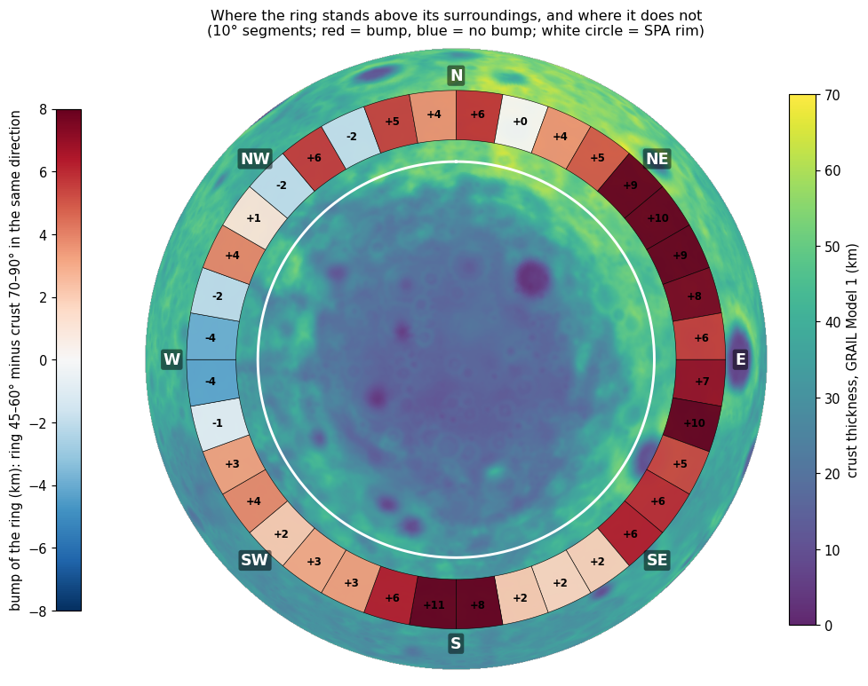
האיור חוזר על ההשוואה של הטבלה בצעדים עדינים יותר, 36 כיוונים במקום שמונה, כך שאפשר לראות את הפער במערב כקטע רציף של כ-40°, ולא כגזרה אחת חסרת מזל.
מתאם עם פני השטח שמאחור. פני השטח שמחוץ לטבעת אינם קובעים את גובה הבליטה: על פני 24 כיוונים אין קשר בין גובה הבליטה לבין עובי הקרום שמאחוריה (מתאם ) או גובה פני השטח שם (). מתאם של היה אומר שהבליטה גדלה בדיוק כשהקרום שמאחוריה גדל, ו- שהיא קטנה בדיוק; ערכים קרובים כל כך לאפס פירושם שהשניים אינם קשורים. בדרום, שבו הקרום שמאחורי הטבעת הוא הדק ביותר ( ק”מ) ופני השטח נמוכים, הבליטה מן הגבוהות; במערב, שבו הקרום עבה יותר (–41 ק”מ), אין בליטה.
הפתחים בטבעת המערבית אינם הסיבה להיעדר הבליטה: פתחים 28 ו-29 (Tsiolkovskiy) מכסים כ-44% מן הטבעת המערבית, אבל כאשר מסירים אותם יחד עם הילה של 100 ק”מ, הבליטה אינה חוזרת ( ק”מ).
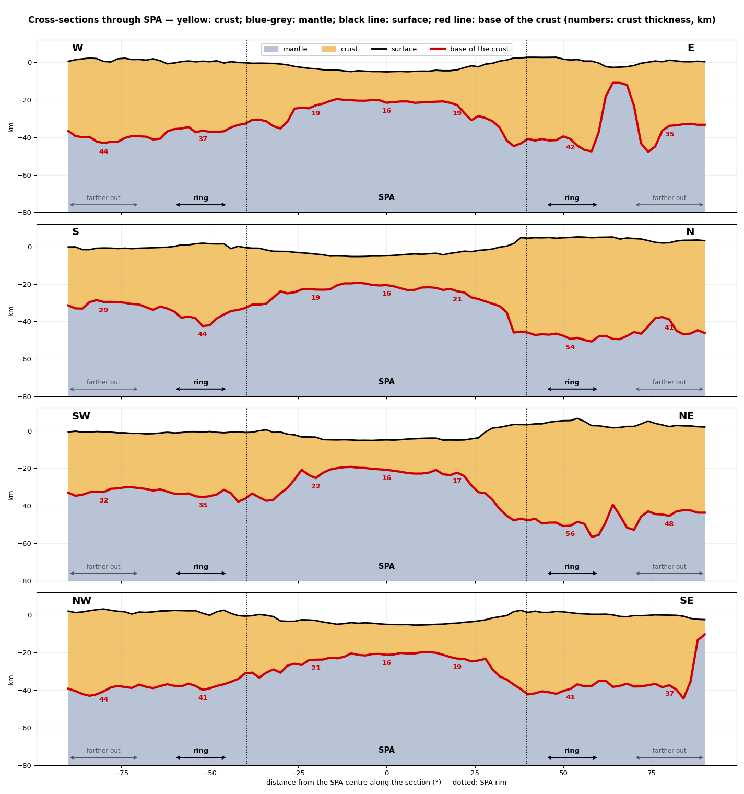
החתכים חותכים את האגן כפי שחותכים עוגה, כדי להראות את השכבות מן הצד. הקו העליון הוא פני הקרקע, הקו האדום הוא בסיס הקרום; הצהוב שביניהם הוא הקרום.
הבליטה היא שורש הנמשך כלפי מטה. בחתכים בסיס הקרום מתחת לטבעת שוקע לתוך המעטפת ואחר כך עולה שוב: בדרום 44 ק”מ בטבעת לעומת 29 ק”מ רחוק יותר, בצפון 54 לעומת 41, בצפון-מזרח 56 לעומת 48, במזרח 42 לעומת 35. במערב (37 לעומת 44) ובצפון-מערב (41 לעומת 44) אין שורש; בסיס הקרום מעמיק בהדרגה החוצה. קרום הצף על מעטפת צפופה ממנו נושא עובי עודף בעיקר למטה, כפי שקרחון נושא את רוב נפחו מתחת לפני המים; לכן הטבעת המעובה נראית למעלה כבליטה נמוכה של 1–2 ק”מ ולמטה כשורש קרום של 7–15 ק”מ.
יש גם טבעת פנימית, 30–43° מן המרכז, והשתיים משלימות זו את זו: היכן שהטבעת החיצונית חלשה — במערב, בצפון-מערב ובדרום-מערב — הפנימית חזקה ברובה. הטבעת הפנימית נדונה כאנומליה נפרדת (B5).
מדוע הקרום סביב האגן מעובה מן הרגיל, ומדוע האסימטריה ממוקדת דווקא בחציו המזרחי, בעוד שבחציו המערבי הוא דק?
בספרות, הטבעת מוגדרת כשמיכת חומר הפליטה של הפגיעה: הקרום שנחפר מחלל האגן הושלך החוצה ונערם סביב השפה. בפגיעה אלכסונית רוב המסה מושלכת קדימה, במורד כיוון התנועה של הגוף הפוגע. בספרות קיימות שתי השערות מובילות לכיוון:
| השערה | מקור | היכן צפוי עודף חומר |
|---|---|---|
| מדרום-מזרח לצפון-מערב (הישנה) | Melosh et al. 2017 (גוף של ק”מ, ק”מ/ש’, 45°) | צפון-מערב (במורד המסלול); כמעט כלום מאחור |
| מצפון לדרום (החדשה) | Andrews-Hanna et al. 2025; Wakita et al. 2026 | דרום (במורד המסלול), ושתי “כנפיים” לצדדים — מזרח ומערב — בדפוס של פרפר; ק”מ במורד המסלול, ק”מ לצדדים. Wakita et al.: חומר מעטפת עד ק”מ למערב, ושכבה דקה וקרובה יותר במזרח |
“במורד המסלול” הוא הכיוון שאליו נע הגוף הפוגע. הטבלה מציינת, לכל השערה, היכן הסימולציות שלה עצמה מציבות את החומר שהושלך; אלה הניבויים שמולם מוצבת הטבעת שנמדדה בשלב 4.
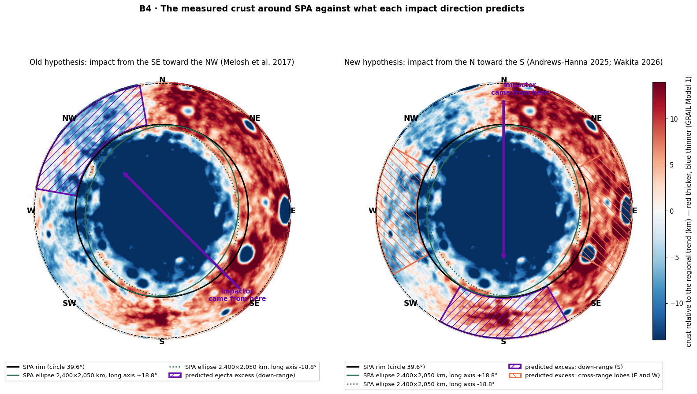
האיור מניח כל ניבוי על הקרום שנמדד. היכן ששטח מקווקו או צבוע נופל על אדום, הניבוי מתקיים; היכן שהוא נופל על כחול, אינו מתקיים.
ההשערה הישנה (מדרום-מזרח לצפון-מערב) מנבאת את ההפך ממה שנמצא: באזור שבו צפוי עודף החומר — בצפון-מערב — נמדד קרום דק.
ההשערה החדשה (מצפון לדרום) מתאימה בחלקה בלבד: יש בליטה בדרום ( ק”מ), כצפוי, ובמזרח (), כצפוי — אבל במערב אין בליטה כלל (), בעוד שהסימולציות מחייבות שתי כנפיים דומות, ובסימולציה של Wakita et al. יש במערב אף יותר חומר.
לא מצאנו ניבוי שפורסם של הדפוס “עבה במזרח, דק במערב”; זו מדידה חדשה.
כמות החומר. הטבעת עד 60° מכילה כ-37% בלבד מן הקרום החסר באגן. בסימולציות חלק גדול מחומר הפליטה עף רחוק או נמס; לכן ממצא זה אינו סותר את הפגיעה, אבל גם אינו תומך בה.
גם בקריאה המקובלת הפנים מפולס: פגיעה ענקית יוצרת יריעת התך גדולה, המתמיינת ומתפלסת לקרקעית שטוחה, ולכן קרקעית שטוחה וקרום פנימי אחיד מוסברים גם בה. מה שמבדיל בין ההסברים הוא משך הבישול: התך פגיעה מתקרר מהר יחסית (ראו B11, B15).
פרופיל הקרקעית. חיתוך האגן לאורך שני צירי הפגיעה המוצעים (איור B4.6) אינו מראה תעלה המעמיקה לאורך המסלול: לאורך שני הצירים הקרקעית רחבה ושטוחה, עד ק”מ לאורך ק”מ. בזוויות שהוצעו עבור SPA (30–45°) המדע אינו מנבא תעלה; תעלה נוצרת רק בפגיעה בזווית נמוכה מאוד, מתחת לכ-15°. נמצאה אסימטריה ברורה של השוליים לאורך ציר צפון–דרום: שפה צפונית גבוהה ותלולה מול שפה דרומית נמוכה והדרגתית — הטיעון שעליו נשענת ההשערה החדשה.
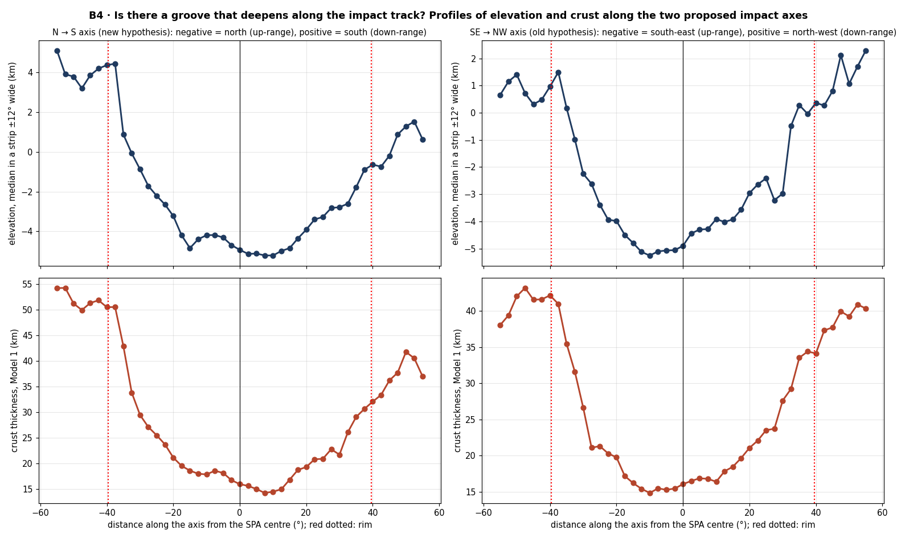
האיור הוא בדיקה של קריאת הפגיעה לפי אמות המידה שלה: הוא מחפש לאורך כל מסלול מוצע תעלה, ומוצא במקומה קרקעית שטוחה; והוא מראה את האסימטריה האחת שההשערה החדשה משתמשת בה לטובתה, הצפון התלול והדרום המתון של השפה.
הכרעת המדע: מסביר בחלקו יש טבעת, וההתעבות בדרום ובמזרח מתאימה להשערה החדשה; הדקות במערב ואי-השוויון בין הכנפיים אינם מוסברים.
ב-B3 הקרום החליק ונדחף מן הכיפה המחוממת. B4 שואל לאן הוא הלך, ומדוע הלך יותר לצדדים מסוימים מאשר לאחרים. התשובה נמצאת באינטראקציה בין החום לבין חוסר האחידות של הקרום שהחום פגש סביב הכיפה.
החום בא מלמטה והיה החזק ביותר במרכז הכיפה התת-קרקעית. הוא התיך את האזור מכל צדדיו, אבל הקרום סביב הכיפה לא היה אחיד: עבה בצפון-מזרח, שם גובלות באגן הרמות של הצד הרחוק, ודק בדרום-מערב. בצפון-מזרח שוכן Apollo, הפתח הגדול ביותר ב-SPA, ים (פתח) שהיה קיים קודם והופעל מחדש בידי החום מלמטה.
הבדלי העובי האלה הכתיבו את כמות החומר שהוסע ונערם בשוליים. הצד הצפון-מזרחי העבה הותך הרבה: כמות גדולה של קרום הוזזה שם, והיא השאירה טבעת בצפון-מזרח. הצד המערבי הותך מעט ונתן מעט חומר, ולכן לא נוצרה שם טבעת. בצפון-מזרח האזור המחומם צר והטבעות שוכנות קרוב לאגן; במערב ובדרום-מערב האזור המחומם רחב, והמרחק בין הטבעות גדול.
מדוע נותרה גבעה — קירור דיפרנציאלי מבחוץ פנימה. במהלך החימום התרומם האזור לכיפה שטוחה. כאשר מקור החום נרגע, עם הרפיית הפחיסות לפני השחרור, החלה הכיפה לשקוע — אבל הקירור לא היה אחיד. החלק החיצוני, הטבעת, התקרר ראשון ו”קפא” במצב מורם, בתהליך ארוך; החלק המרכזי נשאר חם זמן רב יותר ושקע רק בסוף. כך נותרה גבעה בצורת טבעת סביב שקע, כמו עוגה ששוליה מתקשים ראשונים ועומדים גבוה בשפה בעוד מרכזה הרך שוקע בהתקררותו. מה שהתקרר ראשון גם עבר פחות דחיסה, ולכן הטבעת שמרה יותר מעוביה (השורש שנראה בחתכים, איור B4.4), ואילו המרכז, שנשאר חם, עבר דחיסה והתכווץ (B2). במערב הקרום הותך מעט ומעט חומר נערם; השוליים שקעו יחד עם המרכז, ולכן אין שם גבעה.
בליטה אינה ברירת המחדל. אזור שחומם, התקרר ושקע נותן מעבר חלק ושטוח אל פני השטח המקוריים — “קו אפס” — בלי גבעה ביניהם. זה המצב במערב. הבליטה בכיוונים האחרים היא תוספת: הקרום שנדחף והחליק מן המרכז ונערם בשוליים.
בתוך האגן החום פילס הכול, כמו מאגר מים, לרמה אחידה. מחוצה לו נשמרו פני השטח המקוריים — עבים בצפון-מזרח, דקים בדרום-מערב. הקרום שנדחף החוצה מן המרכז והחליק מן הכיפה (B3) נערם בשוליים — בטבעת החיצונית או, קרוב יותר, בטבעת הפנימית (B5). בקירור שבא אחר כך הכול שקע: השכבות עברו דחיסה והתכווצו ביחס לעוביין.
המודל מנבא את החום החזק ביותר במרכז הכיפה; טבעת היכן שהקרום הצפון-מזרחי העבה הותך הרבה, ואין טבעת במערב, שם הקרום הותך מעט; אזור מחומם צר מול הצד העבה; הקרום הדק ביותר בצד הדק; קרום אחיד בתוך האגן; פני השטח המקוריים מחוצה לו; וחומר שנערם בשוליים.
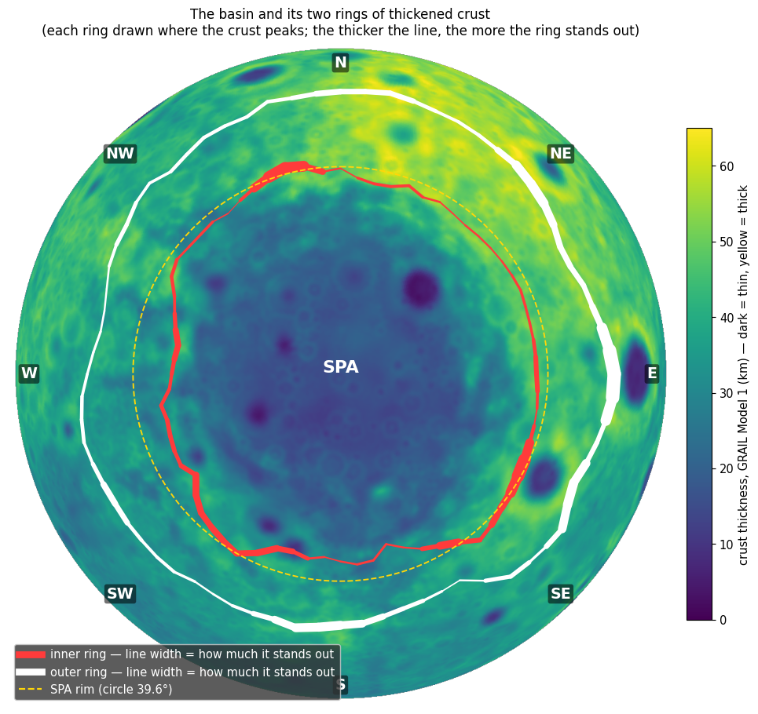
האיור משרטט את שתי הטבעות על מפה אחת. היכן שהקו הלבן עבה הטבעת החיצונית חזקה; היכן שהוא מצטמצם, במערב, הטבעת הפנימית האדומה היא החזקה, והפער בין השתיים רחב.
הטבלה שלהלן מציבה כל ניבוי של שלב 5 לצד המדידה שבודקת אותו. העמודה הראשונה היא מה שהמודל דורש; העמודה השנייה היא מה שנמצא, עם הסעיף שבו נמדד.
| מה המודל מנבא | מה נמצא |
|---|---|
| החום החזק ביותר במרכז הכיפה | מינימום המכתשים נמצא בתוך 6° ממרכז הכיפה (C.3); Chang’e-6, שדגימותיה מראות חימום ממושך (B11, B12, B15), נחתה 11.6° ממנו, בתוך Apollo |
| טבעת היכן שהקרום העבה הותך הרבה, ואין טבעת היכן שהותך מעט | הטבעת עבה למזרח: רכיב חד-צדדי של 7.7–9.1 ק”מ לכיוון 96–99° (מחקר 3); אין בליטה במערב |
| אזור מחומם צר מול הצד העבה | האזור הדק הצר ביותר בצפון-מזרח: הקרום עובר את 30 ק”מ כבר ב-24°, לעומת 29–37° בכיוונים האחרים (מודל 1; גרסה קודמת נתנה 29–33°; במודל 4 המזרח, 23°, צר באותה מידה) (B3) |
| הקרום הדק ביותר בצד הדק | מרכז הקרום הדק של SPA עצמו נמצא 150–190 ק”מ דרום-דרום-מערב למרכז; הקרקע הנמוכה ביותר והמסה הצפופה שוכנות בדרום (B2, B3) |
| מרחק גדול בין הטבעות בצד המערבי הדק | מערב ודרום-מערב: –24°; דרום: –17° |
| קרום אחיד בפנים | עד ° מן המרכז כל שמונת הכיוונים מתכנסים ל-15–19 ק”מ; מחוץ לאגן 28–56 ק”מ (איור B4.2) |
| פני השטח המקוריים בחוץ | בצפון-מזרח עבים ונשארים עבים; בדרום-מערב דקים ונשארים דקים |
| גבעה שנותרה היכן שהשוליים התקררו ראשונים | גבעה של עד ק”מ ושורש קרום בצדדים שבהם הותך ונערם הרבה קרום; במערב, שם הקרום הותך מעט, אין גבעה ( ק”מ) ואין שורש |
| חומר שנערם בשוליים | הטבעת החיצונית בולטת בשבעה משמונה כיוונים (3.9–4.4 ק”מ בממוצע); במערב החומר נערם קרוב יותר, בטבעת הפנימית |
החלוקה שנותרה פתוחה ב-B3 — רשומת מכתשים חלשה בצפון, קרום דק בדרום — מתיישבת עכשיו בלי מקור נפרד: החום עלה מתחת למרכז הכיפה ופעל על קרום שהיה עבה בצפון-מזרח ודק בדרום-מערב; הצפון שומר את רשומת המכתשים שנמחקו (B1), הדרום את הקרום הדק ביותר, את הקרקע הנמוכה ביותר ואת המסה הצפופה.
הכרעת המודל: מתאים כל ניבוי של המודל — החום החזק ביותר במרכז הכיפה, הטבעת היכן שהקרום העבה הותך הרבה והיעדרה במערב, האזור המחומם הצר מול הצד העבה, הפנים האחיד, פני השטח החיצוניים שנשמרו, הגבעה והשורש היכן שהשוליים התקררו ראשונים, והחומר שנערם בשוליים — נמצא במדידות.
נתונים וקוד.
| נתונים | מקור |
|---|---|
| עובי הקרום | GRAIL, ארבעת המודלים של Wieczorek et al. 2013; קו בסיס: פולינום Legendre ממעלה 4 במרחק מן הנקודה התת-ארצית (בדיקה בלתי תלויה, SPA8_GRAIL) |
| גובה | LOLA LDEM_4 |
| אליפסה | Garrick-Bethell & Zuber 2009 — ק”מ; שני כיווני הטיה, ° |
| ספרות על כיוון הפגיעה | Melosh et al. 2017; Andrews-Hanna et al. 2025; Wakita et al. 2026 — באמצעות סקירת ספרות (30.9.2026) |
| קוד | b4.py, b4full.py, b4groove.py; פרופילים לפי גזרה והשוואה מקומית (30.9.2026) |
קו הבסיס הוא המגמה האזורית שהוסרה בשלב 1: עקומה חלקה של עובי הקרום כפונקציה של המרחק מן הנקודה התת-ארצית (הנקודה על הירח הפונה אל כדור הארץ), הנושאת את המעבר מן הצד הקרוב הדק אל הצד הרחוק העבה ושום דבר קטן מזה.
פתוח. הזיקה לטבעת הפנימית מוצגת ב-B5. מבחן בלוקים להתעגלות: הקשר להתעגלות (מתאם עד ; 5.7% ממערכות צירים אקראיות מגיעות אליו) ממתין למבחן בלוקים. ההתעגלות היא המעבר של הירח הצעיר מצורה פחוסה לכדור (מאמר 7), שדחס את פני השטח בכיוונים מסוימים ומתח אותם באחרים; הטבעת עבה יותר במקום שבו העיוות הזה דחס. מערכת צירים אקראית מגיעה לאותו מתאם ב-5.7% מן הניסיונות, וזה מרמז אך עדיין אינו מכריע; מבחן בלוקים, השומר כיוונים שכנים יחד בעת הערבוב, יקבע אם הקשר מחזיק. הסרת אגנים צעירים: האגנים והמכתשים הצעירים בתחום הטבעת (הכתמים הכחולים) יוסרו, כדי לוודא שהאסימטריה נשארת.
התופעה. הקרום סביב SPA מציג חגורה מעובה ביחס לקרום האזורי. הפער בידע. האם ההתעבות היא טבעת העומדת מעל פני השטח שסביבה בכל כיוון, או שיפוע של הצד הרחוק שהאגן חוצה במקרה, ובאיזה כיוון היא אינה אחידה — לא נמדד כיוון אחר כיוון. שאלת המחקר: היכן סביב SPA הקרום מעובה, בכמה מעל הקרום הרחוק יותר באותו כיוון, ובאיזה כיוון הטבעת עבה ובאיזה דקה?
בספרות המקובלת נקראת הטבעת כשמיכת חומר הפליטה של פגיעה אלכסונית, העבה ביותר במורד המסלול: לצפון-מערב בפגיעה מדרום-מזרח (Melosh et al. 2017), לדרום עם שתי כנפיים שוות למזרח ולמערב בפגיעה מצפון (Andrews-Hanna et al. 2025; Wakita et al. 2026). מה חדש כאן: עובי הטבעת נמדד מול הקרום הרחוק יותר באותו כיוון, כך ששיפוע הצד הרחוק מוסר; הניתוח מיושם ב-8, 24 ו-36 כיוונים, על המעגל ועל האליפסה, בעובי הקרום ובגובה.
הקרום שהחליק מן הכיפה נערם בשוליה במקום שבו הקרום העבה הותך הרבה, ולא במקום שבו הקרום הותך מעט; לכן טבעת עומדת מעל הקרום הרחוק יותר ברוב הכיוונים, עבה בצד של הקרום העבה של הצד הרחוק וחסרה בצד המערבי הדק.
סוג המחקר: כמותי; השוואת עובי קרום וגובה לפי כיוון וטבעת. המדגם: ארבעת מודלי הקרום של GRAIL, לאחר הסרת המגמה האזורית (מעלה 4); רצועת הטבעת 45–60° מול 70–90° באותו כיוון; גובה LOLA. הכלים: קוד המפרק את הטבעת לרכיב חד-צדדי ולרכיב דו-צדדי על המעגל ועל שתי האליפסות, ומשרטט את פרופיל בסיס הקרום בחתכים.
ערכי הטבעת נמדדו בכל כיוון בכל ארבעת המודלים; כבדיקה, הפתחים בטבעת המערבית הוסרו יחד עם הילה של 100 ק”מ. הערכים הם הטבלאות ואיורים B4.1–B4.6.
הטבעת. התעבות של 3.8–5.7 ק”מ ב-50–55°, העומדת מעל הקרום הרחוק יותר בשבעה משמונה כיוונים, 3.9–4.4 ק”מ בממוצע; שורש קרום מתחתיה בדרום, בצפון, בצפון-מזרח ובמזרח. הכיוון. הרכיב החד-צדדי הוא 7.7–9.1 ק”מ לכיוון 96–99°, כמעט זהה על המעגל (7.8–8.9 ק”מ) ועל שתי האליפסות; הבליטה עצמה, לאחר הסרת השיפוע, אינה אחידה ב-3.7–4.4 ק”מ, ועדיין לכיוון מזרח. המערב. אין בליטה ( ק”מ; ק”מ בגובה), והיא אינה חוזרת גם לאחר הסרת הפתחים. פני השטח שמאחור. גובה הבליטה אינו קשור לעובי הקרום או לגובה שמאחוריה (, ).
תוצאה. ההשערה נתמכת: טבעת עומדת מעל פני השטח שסביבה בשבעה משמונה כיוונים, עבה במזרח וחסרה במערב — אסימטריה של מזרח–מערב שאף אחד משני כיווני הפגיעה המוצעים בספרות אינו מנבא. מגבלות. קו הבסיס של המגמה האזורית הוא בחירה; הטבעת מכילה כ-37% בלבד מן הקרום החסר באגן; אגנים ומכתשים צעירים בתוך הטבעת עדיין טעונים הסרה. כיווני מחקר נוספים. הטבעת לאחר הסרת האגנים הצעירים; הקשר שלה לעיוות של ההתעגלות במבחן בלוקים (מאמר 7).
B5הטבעת הפנימית
בקצרה. מלבד הטבעת החיצונית (B4), SPA מוקף בטבעת שנייה של קרום מעובה, קרובה לאגן — 28–44° ממרכזו — והיא הברורה והמוגדרת יותר מבין השתיים. היא אינה מעגל: היא נמתחת רחוק יותר בצפון-מזרח ובמזרח, ומתכנסת קרוב יותר בדרום-מערב ובמערב; מרכזה מוסט –120 ק”מ מזרח-צפון-מזרחה ממרכז SPA. הדופן הפנימית תלולה וחדה ביותר בצפון ובצפון-מזרח, ומתונה והדרגתית ביותר בדרום ובדרום-מערב.
סעיף זה שואל על הטבעת שלוש שאלות: האם היא אכן קיימת לכל אורך ההיקף, היכן מרכזה, ובאיזה צד הדופן שלה תלולה. לתשובות יש משקל, משום שצורת השפה של אגן משמרת את התהליך שיצר אותו. פגיעה משאירה דפוס הקשור לכיוון התעופה; כיפה שעלתה תחת החום והתפשטה אל מול הקרום שסביבה משאירה דפוס הקשור לאותו קרום. הסעיף מסביר גם כיצד המעבר של הירח הצעיר מן הצורה הפחוסה לכדור שינה את המרחקים על פני השטח שלו, ואיתם את המרחקים שאנו מודדים היום בין SPA לבין הנקודות שהזינו אותו.
האגן ושתי טבעות הקרום המעובה שלו מוצגים באיור B4.7. טבעת של קרום מעובה היא חגורה סביב האגן שבה הקרום — השכבה החיצונית הקלה של הירח, הצפה על המעטפת הצפופה יותר שמתחתיה — עבה יותר מאשר משני צדיה. GRAIL, זוג החלליות שמיפה את שדה הכבידה של הירח, נותן את עובי השכבה הזאת בכל מקום: היכן שהקרום עבה, חומר קל תופס את מקומה של מעטפת צפופה, ומשיכת הכבידה חלשה מעט. באיור B4.7 הטבעת הפנימית היא הקו האדום, והטבעת החיצונית של B4 היא הקו הלבן; המעגל הצהוב המקווקו הוא השפה כמעגל ב-39.6° מן המרכז. מעלת קשת אחת על הירח היא כ-30.3 ק”מ של פני שטח, ולכן 39.6° הן כ-1,200 ק”מ.
כיצד מדדנו. בכל אחד מ-24 כיוונים (כל 15°) חיפשנו את שיא עובי הקרום בין 28° ל-44° מן המרכז, ואת המידה שבה הוא מתנשא מעל שכניו. הגודל השני הוא הבולטוּת (prominence): כמו גובהה של גבעה מעל האוכפים שמשני צדיה, היא מודדת עד כמה השיא בולט, ולא כמה עבה הקרום במונחים מוחלטים. כך מבודדת הטבעת האמיתית מרעש הרקע: טבעת אמיתית צריכה להראות שיא בעל בולטות ברורה ברוב הכיוונים; טבעת שהיא רק רעש הייתה נותנת שיאים בעלי בולטות קטנה, מפוזרים במרחקם. הממצאים עקביים במלואם בין מודל 1 למודל 4 — שניים ממודלי הקרום של GRAIL שפורסמו (Wieczorek et al. 2013), שנבנו בהנחות שונות — ולכן אינם תלויים בבחירת המודל.
הטבלה מפרטת, לכל כיוון, את מרחק השיא מן המרכז, את הבולטות שלו, את עובי הקרום בשיא, ולשם השוואה את עובי הקרום בקרקעית האגן באותו כיוון. הכיוונים נמדדים מן הצפון (0°) עם כיוון השעון, דרך המזרח (90°), הדרום (180°) והמערב (270°).
| מרחק השיא | בולטות | הקרום בשיא | קרום הקרקעית | |||
| כיוון | מודל 1 | מודל 4 | מודל 1 | מודל 4 | מודל 1 / 4 | מודל 1 / 4 |
| 0° צפון | — | — | 0.0 | 0.0 | — | 18 / 25 |
| 15° | 44° | 39° | 6.2 | 10.5 | 57 / 71 | 19 / 26 |
| 30° | 38° | 38° | 2.3 | 5.2 | 54 / 68 | 19 / 27 |
| 45° צפון-מזרח | 36° | 36° | 2.6 | 4.4 | 52 / 66 | 18 / 25 |
| 60° | 38° | 38° | 3.1 | 4.1 | 50 / 61 | 17 / 24 |
| 75° | 37° | 37° | 2.8 | 2.8 | 49 / 60 | 18 / 25 |
| 90° מזרח | 37° | 37° | 8.1 | 11.3 | 48 / 59 | 17 / 25 |
| 105° | 44° | 44° | 2.5 | 3.2 | 47 / 59 | 16 / 23 |
| 120° | 38° | 38° | 23.9 | 30.3 | 47 / 59 | 15 / 22 |
| 135° דרום-מזרח | 42° | 42° | 2.2 | 2.6 | 45 / 55 | 15 / 22 |
| 150° | 43° | 42° | 4.1 | 6.2 | 40 / 51 | 15 / 21 |
| 165° | 34° | 34° | 2.1 | 3.4 | 31 / 40 | 15 / 21 |
| 180° דרום | 42° | 42° | 1.9 | 3.8 | 36 / 46 | 15 / 21 |
| 195° | 30° | 30° | 7.6 | 10.7 | 29 / 38 | 15 / 21 |
| 210° | 28° | 38° | 5.3 | 7.3 | 26 / 48 | 14 / 20 |
| 225° דרום-מערב | 34° | 34° | 8.3 | 11.0 | 38 / 49 | 14 / 21 |
| 240° | 34° | 28° | 5.1 | 6.7 | 35 / 39 | 15 / 22 |
| 255° | 33° | 33° | 6.7 | 9.2 | 34 / 44 | 15 / 22 |
| 270° מערב | 31° | 31° | 4.5 | 6.4 | 35 / 45 | 16 / 22 |
| 285° | 30° | 30° | 9.5 | 13.9 | 40 / 52 | 16 / 22 |
| 300° | 37° | 37° | 5.8 | 9.6 | 45 / 58 | 15 / 22 |
| 315° צפון-מערב | 35° | 35° | 5.5 | 8.2 | 34 / 44 | 18 / 26 |
| 330° | — | — | 0.0 | 0.0 | — | 18 / 25 |
| 345° | 40° | 40° | 6.8 | 10.2 | 49 / 62 | 17 / 24 |
הבולטות והקרום בק”מ; קרום הקרקעית: ממוצע עד 15° מן המרכז. מרחק: כחלחל — רחוק מן המרכז; כתום — קרוב. בולטות: ככל שהתא אדום יותר, הטבעת בולטת יותר. "—": אין שיא בטווח.
כיצד לקרוא את הטבלה. עקבו אחר עמודות המרחק מלמעלה למטה: הצבע עובר מכחול (רחוק) במחצית הראשונה של המעגל — בצפון-מזרח, במזרח ובדרום-מזרח — לכתום (קרוב) במחצית השנייה — בדרום-מערב, במערב ובצפון-מערב. החלוקה הגאוגרפית ברורה: הטבעת מוסטת כמכלול, ואינה משוננת. בעמודות הבולטות התאים האדומים החזקים מסמנים היכן הטבעת בולטת ביותר. שתי העמודות האחרונות מראות עד כמה הטבעת גדולה ביחס לקרקעית האגן: הקרום בשיא הוא 26–57 ק”מ במודל 1 ו-38–71 ק”מ במודל 4, לעומת 14–19 ו-20–27 ק”מ בקרקעית, כך שהטבעת עבה פי שניים עד שלושה מן הקרקעית שלצידה. מודל 4 נותן באופן שיטתי קרום עבה יותר ממודל 1, אך דפוס המרחקים והבולטויות זהה בשניהם.
רציפות. הטבעת קיימת כמעט לכל אורך ההיקף: ב-22 מתוך 24 כיוונים (היא חסרה רק בצפון, 0°, ובצפון-צפון-מערב, 330°).
מוקדי הבולטות. הטבעת חזקה ביותר בגזרה הדרום-מזרחית, ב-120° ( עד ק”מ), בצפון-מערב, ב-285° ( עד ), במזרח, ב-90° ( עד ) ובדרום-מערב, ב-195°–225° ( עד ).
מרחק. מרחקה של הטבעת משתנה: בצפון-מזרח ובמזרח 36°–44°; בדרום-מערב ובמערב 28°–34°, כלומר בתוך מעגל השפה.
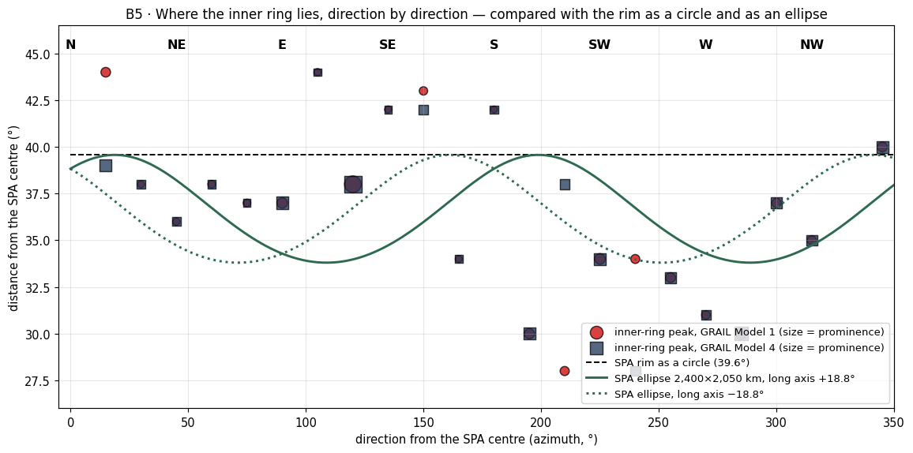
איור B5.1 משרטט את אותם שיאים על מפה הנראית ממעל לאגן. על מה להסתכל: הסמלים אינם עוקבים אחר המעגל המקווקו של השפה, וגם לא אחר האליפסות הירוקות. הם נמצאים מחוץ למעגל בצפון-מזרח ובמזרח ובתוכו בדרום-מערב ובמערב, כך שיחד הם משרטטים מעגל משלהם, שמרכזו נדחק אל מזרח-צפון-מזרח.
התאמה גאומטרית. כדי לתת לרושם הזה מספרים, התאמנו טבעת ל-22 השיאים: מעגל שמרכזו ורדיוסו חופשיים, שמותר לו גם להיות מוארך מעט. ההתאמה נותנת את צורת הטבעת הפנימית (התאמה לפי כיוון):
| מדד | מודל 1 | מודל 4 |
|---|---|---|
| רדיוס ממוצע | 36.8° ( ק”מ) | 36.6° ( ק”מ) |
| מיקום מרכז הטבעת ביחס למרכז SPA | ק”מ לכיוון 68° (מזרח-צפון-מזרח) | ק”מ לכיוון 82° |
| מרכז הטבעת | 51.4° דרום, 196.8° מזרח | 52.4° דרום, 196.8° מזרח |
| הארכה | 2.6° לאורך הציר 152°/332° (צפון-צפון-מערב – דרום-דרום-מזרח) | 2.5° לאורך הציר 155°/335° |
ההתאמה הגאומטרית חושפת שלושה מאפיינים יציבים. לטבעת רדיוס של כ-37°, מעט בתוך מעגל השפה (39.6°). מרכזה אינו מתלכד עם מרכז האגן אלא נמצא כ-110–120 ק”מ ממרכז SPA, לכיוון מזרח-צפון-מזרח, בשני המודלים. והיא שומרת על צורה מעגלית כמעט מושלמת: ההבדל בין הכיוון הארוך שלה לקצר הוא רק 2.5°–2.6°, כ-80 ק”מ בטבעת שקוטרה יותר מ-2,200 ק”מ. הטבעת מוסטת, אך אינה מתוחה.
הטבעת הפנימית אינה האליפסה המקובלת. האליפסה ( ק”מ) מנבאת טבעת קרובה בציר הצר — במזרח ובמערב — ורחוקה בציר הארוך — בצפון ובדרום; הטבעת בפועל רחוקה בצפון-מזרח ובמזרח וקרובה בדרום-מערב ובמערב — כמו מעגל שמרכזו נמצא מזרח-צפון-מזרחה למרכז SPA.
הדופן הפנימית — המעבר החד בין קרקעית האגן לשיא הטבעת, המדרון התלול ביותר ביניהן (הציפייה: תלולה בצד המתנגד, מתונה בצד המתנגד פחות). ב”צד המתנגד" הכוונה לצד שבו הקרום שמסביב עבה, קר ויציב, ועצר את החומר שנע החוצה מן האגן; שם פני השטח מטפסים בבת אחת מן הקרקעית אל הטבעת, בעלייה חדה דמוית מצוק. היכן שהקרום התנגד פחות, החומר התפשט רחוק יותר והטיפוס הדרגתי. מידת השיפוע של הדופן נמדדת בשני מדדים בלתי תלויים: קצב התעבות הקרום מ-GRAIL (בכמה קילומטרים הקרום מתעבה לכל 100 ק”מ של מרחק) ושיפוע פני השטח ממד הגובה הלייזרי LOLA (בכמה מטרים הקרקע עולה לכל קילומטר):
| כיוון | בעובי הקרום (ק”מ ל-100 ק”מ) | בגובה (מ' לק”מ) |
|---|---|---|
| צפון | 10.5 | 25.3 |
| צפון-מזרח | 9.3 | 30.7 |
| מזרח | 8.0 | 17.8 |
| דרום-מזרח | 6.3 | 18.5 |
| דרום | 4.9 | 14.9 |
| דרום-מערב | 6.6 | 11.5 |
| מערב | 7.3 | 16.0 |
| צפון-מערב | 4.4 | 20.8 |
ככל שהתא אדום יותר, הדופן תלולה יותר. התלולה ביותר: צפון וצפון-מזרח; המתונה ביותר: דרום ודרום-מערב.
קראו את שתי העמודות יחד. בקרום, הצפון תלול ביותר (10.5) והצפון-מזרח אחריו (9.3); בגובה, הצפון-מזרח תלול ביותר (30.7 מ' לק”מ, עלייה של כ-3 ק”מ לאורך 100 ק”מ) והצפון אחריו (25.3). בשתיהן הדרום והדרום-מערב הם מן המתונים ביותר, עם מדרונות ארוכים. שני המדדים באים ממכשירים שונים, והם מציגים התאמה הדוקה על הצד שבו הדופן תלולה: הצפון והצפון-מזרח, שם רמות הצד הרחוק — הקרום העבה ביותר על הירח — גובלות באגן (B4).
איור B5.2 מראה את הטבעת בחתך, כאילו הירח נחתך דרך האגן. השכבה הצהובה דקה מתחת לקרקעית ומתעבה בבת אחת ליד השפה המנוקדת; ההתעבות החדה הזאת היא הטבעת הפנימית. השוואת שני הקצוות של חתך העובר מצפון-מזרח לדרום-מערב מראה ישירות את חוסר הסימטריה של הדופן: עלייה דמוית מצוק בקצה אחד, ומדרון ארוך, מתמשך והדרגתי בקצה האחר.
מדוע מוקף SPA בשתי טבעות של קרום מעובה, מדוע הפנימית אינה עוקבת אחר האליפסה המקובלת אלא מרכזה נמצא מזרח-צפון-מזרחה למרכז האגן, ומדוע הדופן שלה תלולה בצפון-מזרח ומתונה בדרום-מערב?
באגני פגיעה גדולים השפה מורמת, וסביבה נערמת חגורה של קרום מעובה — הצווארון הקרומי (crustal collar): חומר שנזרק ונהדף החוצה מן החלל ונחת ממש מעבר לשוליו. בסימולציות תלת-ממדיות של SPA הצווארון מופיע, ואף גדול מן הנמדד (Citron et al. 2024). בפגיעה הנעה מצפון לדרום, קדמת המסלול — הצד שאליו נע הגוף (הדרום) — מתונה והדרגתית, ואחורי המסלול — הצד שממנו בא (הצפון) — תלול (Andrews-Hanna et al. 2025). בקריאה זו, חוסר הסימטריה של הדופן הוא תיעוד ישיר של כיוון התעופה של הגוף הפוגע.
הדופן תלולה בצפון ומתונה בדרום, וזה מתאים לפגיעה מצפון לדרום.
ציר האסימטריה. אבל הדופן התלולה ביותר נמצאת בצפון-מזרח (30.7 מ' לק”מ) והמתונה ביותר בדרום-מערב (11.5) — ציר צפון-מזרח/דרום-מערב, ולא ציר צפון/דרום.
כיוון ההסטה. מרכז הטבעת הפנימית נמצא –120 ק”מ מזרח-צפון-מזרחה למרכז SPA, בערך בניצב לציר הפגיעה המוצע. פגיעה אלכסונית מסיטה את המבנה לאורך קו התקדמות הגוף הפוגע, ולא לרוחבו.
שתי טבעות. הצווארון במודלים גדול מן הנמדד (Citron et al. 2024); כאן יש שתי טבעות, והפנימית חזקה בדרום-מזרח ( עד ק”מ).
הכרעת המדע: מסביר בחלקו במודלים של פגיעה נוצר סביב האגן צווארון מורם של קרום, אך ההסבר לצורתו נבנה לאחר המדידה: כיוון הפגיעה נבחר כך שיתאים לשפה הצפונית התלולה. הוא אינו מנבא לא טבעת פנימית שמרכזה מזרח-צפון-מזרחה למרכז האגן, ולא ציר צפון-מזרח/דרום-מערב לדופן.
במודל SPA לא נחפר; הוא הורם ואחר כך שקע. חום מן הברנרים, Imbrium ו-Serenitatis, שיצא בצד הרחוק והצטבר מתחת לאזור, דחף אותו מעלה לכיפה; הקרום שלה, שהתרכך בחום, החליק החוצה אל הצדדים, וכשהחום שכך הכיפה התקררה ושקעה לאגן שאנו רואים (A.5). הטבעות הן אזורי הבלימה: המקומות שבהם החומר שהחליק החוצה נעצר אל מול הקרום היציב שסביבו.
הטבעת הפנימית היא שולי הכיפה שעלתה. יש טבעת פנימית אחת וטבעת חיצונית אחת — לא שני גלים ולא שני אירועים — ושתיהן מעוצבות בידי עובי הקרום שמסביב. בצפון-מזרח גובל האגן ברמות הצד הרחוק, הקרום העבה ביותר; הצד הצפון-מזרחי תלול בשתי הטבעות. קרום עבה וקר הוא קיר יציב: חומר הנלחץ אליו נערם קרוב ותלול, כמו שלג שמחרשה דוחפת אל שפת מדרכה. בדרום-מערב הקרום דק; קרום דק נכנע, והחומר מתפשט רחוק יותר ובמתינות.
ההתעגלות משנה מרחקים על פני השטח; היא אינה מזיזה דבר על פניו. החום עלה לאורך ציר ישר. אחר כך הירח התעגל — אותו מנגנון שיצר את העודף בקטבים (מאמר 7) — והמרחקים על פני השטח השתנו. לפני ההתעגלות הצד הרחוק היה הקצה המחודד של גוף מוארך (1 : 0.637 : 0.601); בהתעגלות, מה שהיה קרוב לקצה הזה נעשה רחוק ממנו יותר, והאגן נמתח בכיוון זה.
הבלון המוארך. מדוע המרחקים ליד הקצה גדלים אפשר לראות בבלון מוארך, כמו כדור רוגבי, שעל עורו, סמוך לאחד מקצותיו, צוירו נקודות. כשמביטים ממרכז הבלון, הנקודות שעל המדרון הארוך והמתעקל בעדינות לעבר הקצה נמצאות כולן בתוך חרוט צר של כיוונים. לחצו את הבלון לכדור עגול: הקצה נמשך פנימה והגוף נעשה עגול, ואותן נקודות — עדיין על אותו כתם של עור, ואף אחת מהן לא החליקה — נמצאות עכשיו בתוך חרוט רחב יותר. המרחקים הזוויתיים שלהן מן הקצה גדלו. עבור הצורה 1 : 0.637 : 0.601 הגידול המקומי ליד הקצה הוא היחס בין הציר הארוך לשני הקצרים, ו-.
ליד הקצה המרחקים גדלו בגורם מקומי של 1.57–1.66; גורם זה תקף לזוויות קטנות ליד הקצה, ואינו מכפיל קבוע לכל הזוויות — בזוויות גדולות משתמשים במיפוי המלא של ההתעגלות. בזוויות החשובות ל-SPA המיפוי המלא נותן גידול קטן יותר, כ-1.4–1.5: המרחקים מן הכיפה אל היציאות נמתחו מ-17.0° ו-21.2° על הצורה הפחוסה ל-24.1° ו-29.2° על הכדור (ראו נקודות ייחוס להלן), ומרחקו של SPA מן הקצה הרחוק — הנקודה שמול מרכז המגע — גדל מכ-27° ל-39.5°.
ההתעגלות אינה סיבוב נוקשה: סיבוב נוקשה מסובב את כל פני השטח יחד ושומר כל מרחק בין שתי נקודות; ההתעגלות משנה את המרחקים בין נקודות על פני השטח. לכן SPA לא נע על פני השטח; המעבר מן הצורה הפחוסה לכדור שינה את הצירים ואת המרחקים, ומיקום מרכז הטבעת הוא מראה שנוצר מן השינוי הזה בצורה. בקצרה: כ-27° מן הקצה הרחוק בזמן הברנר, על הצורה הפחוסה; כ-39.5° על הכדור של היום (A.5). שני המספרים מתארים את אותו מקום על שתי צורות של הגוף.
תזמון. ההתעגלות מתחה את האגן מאוחר בשלב המחובר, אחרי הפחיסות: לאחר שמרכז המסה של הירח עבר את קו הקורוטציה, הגוף הפחוס התעגל ונפרד, ובשחרור החלק החיצוני שלו כבר היה נוקשה ועגול (מאמר 2, §B.7; מאמר 7). המתיחה היא אפוא חלק מן השלב המחובר; שום דבר בה אינו מחייב שהירח ישנה את צורתו לאחר שעזב את כדור הארץ.
נקודות ייחוס. נקודת הייחוס ששימשה קודם (23° צפון, 320° מזרח, והנקודה האנטיפודית שלה ב-23° דרום, 140° מזרח) אינה הייחוס. במקומה באות היציאות של שני הברנרים: Imbrium (הראשי; נקודה אנטיפודית ב-37.6° דרום, 160.0° מזרח) ו-Serenitatis (המשני; נקודה אנטיפודית ב-27.3° דרום, 198.4° מזרח). הנקודה האנטיפודית של נקודה היא הנקודה הנמצאת מולה בדיוק בצדו השני של הכדור; החום שעלה מתחת ל-Imbrium ול-Serenitatis הגיע אל הצד הרחוק בשתי הנקודות האנטיפודיות האלה, ואותן אנו קוראים היציאות. מרכז הטבעת הפנימית — מרכז הכיפה, 51.4° דרום, 196.8° מזרח — שוכן 29.2° ( ק”מ) דרום-מזרחה ליציאת Imbrium ו-24.1° ( ק”מ) דרומה ליציאת Serenitatis. אלה המרחקים של היום, על הכדור. המרחק הזוויתי ההתחלתי, לפני ההתעגלות, תלוי בהארכה: מנקודת הייחוס הישנה 38° (1 : 0.637 : 0.601), 20° (1 : 0.3 : 0.28) ו-7° (1 : 0.1 : 0.094); מן היציאות החדשות, עם המיפוי המלא של ההתעגלות (1 : 0.637 : 0.601, הציר הארוך לעבר מרכז אזור המגע, 24.1° צפון, 335.2° מזרח), 21.2° (Imbrium) ו-17.0° (Serenitatis); ראו C.3 ואיור C.1. בקריאה בכיוון זה החישוב אומר: ככל שהגוף היה מוארך יותר, כך הכיפה שכנה בהולדתה קרוב יותר אל היציאה; עבור הצורה שבה משתמשת הסדרה היא שכנה כ-17°–21° מן היציאות, וההתעגלות פתחה ומתחה זאת ל-24°–29° הנמדדות היום.
כיפות קטנות. מפת עובי הקרום מראה שמתחת לכל אחת משתי היציאות נמצא קרום דק מקומי ומובחן — Ingenii (12–16 ק”מ, 5.7° מיציאת Imbrium) ואגן Apollo (5–9 ק”מ, 10° מיציאת Serenitatis). הכיפה הגדולה היא האזור הדק הרחב שבמרכז, מדרום להם. לכל יציאה יש אפוא כיפה קטנה משלה ישירות מעליה, והכיפה הגדולה נמצאת מעבר לשתיהן.
נבחן גם מנגנון דמוי ציר (hinge) לרכיב מזרח-מערב, והוא נדחה: בירח מחובר בסיבוב יציב אין כוח מזרח-מערב, והכוח הנובע מן העלייה החוצה קטן בערך פי מן הנדרש.
שחזור המנגנון. אותו מיפוי שמותח את המרחקים משנה גם את גודלו של כל כתם של פני שטח, ואיתו את מספר המכתשים ליחידת שטח בכתם הזה: היכן שכתם מתכווץ, מכתשיו מצטופפים (עליית צפיפות); היכן שהוא מתרחב, הם מתדללים. מאמר 7 מדד את ההשפעה הזאת כגורמי צפיפות; מיפוי ההרפיה משחזר אותם: קוטב (1.21), צד (1.14), הנקודה הפונה אל כדור הארץ (0.73) — המספרים שבסוגריים הם אלה של מאמר 7. מיפוי אחד נותן אפוא מענה משולב הן לעודף המכתשים בקטבים והן למתיחה של SPA.
הטבלה מעמידה כל קביעה של המודל לצד המדידה הבודקת אותה.
| מה המודל אומר | מה נמדד |
|---|---|
| מרחקו של SPA מן הקצה הרחוק גדל בגורם של כ-1.5 (מיפוי מלא; הוא הגורם לזוויות קטנות ליד הקצה) | היום 39.5° מן הנקודה שמול מרכז המגע; בזמן הברנר כ-27° |
| אגס שקצהו, ועליו הירח, עמד בכ-22.5° מסיט את יציאת הזרם עד ° דרומה (C.4); ההתעגלות מגדילה זאת ל-° | הרכיב הדרומי של ההפרדה: ° על הצורה הפחוסה, ° היום — כפי שנובא |
| הרכיב המזרחי בזמן הברנר ° | היום °; מקורו עדיין אינו מוסבר |
| הטבעת הפנימית היא שולי הכיפה; שתי הטבעות עוקבות אחר עובי הקרום | טבעת ב-22 מתוך 24 כיוונים; מרכזה ק”מ מזרח-צפון-מזרחה; הדופן תלולה בצפון-מזרח (30.7 מ' לק”מ), מתונה בדרום-מערב (11.5) |
הערה על מערכת הצירים. החישוב מניח שהכיוון אל הקוטב של אותו זמן קרוב לדרום של היום; לכן הגודל הכולל (27° 39.5°) אמין יותר מחלוקתו לרכיבים. המרחקים והרכיבים נמדדים מן הנקודה שמול מרכז המגע (24.1° דרום, 155.2° מזרח) במיפוי המלא של C.3; גרסה קודמת, שנמדדה מן הנקודה שמול נקודת הייחוס הישנה 23° צפון, 320° מזרח, נתנה 34°–36° 48.6°, רכיב דרומי של 25° 38° ורכיב מזרחי של 20° 30°.
השורה הראשונה היא ההתעגלות של שלב 5 בשורה אחת: מקומו של SPA על הצורה הפחוסה ועל הכדור. הגורם שניתן בגרסאות קודמות הוא גורם הזוויות הקטנות של הקצה; הזוג 27° 39.5° הוא המיפוי המלא במרחקו של SPA. השורה השנייה מפרקת את ההפרדה הזאת לחלקה הדרומי ולחלקה המזרחי. לאגס — הצוואר של חומר שחיבר את הירח לכדור הארץ — היה בסיס שעמד בערך על המשווה של אותו זמן, וקצה שעליו ישב הירח, בכ-22.5°; הזרם שלו יצא מן הצד הרחוק מדרום לנקודה הנגדית, עד קו הרוחב של הירח (C.4); המיפוי המלא נותן חלק דרומי של כ-22° על הצורה הפחוסה, שההתעגלות הגדילה לכ-33° היום. החלק המזרחי גדל באותו אופן מכ-15° לכ-22°; מדוע היה 15° בהתחלה — נשאר פתוח. השורה האחרונה היא הטבעת עצמה, כפי שנמדדה בשלב 1.
הכרעת המודל: מתאים הטבעת הפנימית, הקיימת ב-22 מתוך 24 כיוונים, היא שולי הכיפה, ושתי הטבעות עוקבות אחר עובי הקרום שמסביב; ההתעגלות מעבירה את מרחקו של SPA מן הקצה הרחוק מכ-27° ל-39.5° של היום, עם רכיב דרומי של כ-33°, כפי שנובא.
מה זה מראה. יש שתי טבעות, והפנימית היא הברורה והמדויקת יותר; מרחקה מן המרכז משתנה עם הכיוון. הטבעת הפנימית היא ככל הנראה השפה האמיתית של האגן: היא אינה מתיישבת עם האליפסה המקובלת בספרות, אלא עם מעגל שמרכזו מוסט מזרח-צפון-מזרחה למרכז SPA. מה שקובע אינו כמה התנגדות הייתה, אלא היכן היא הייתה: במערב היא הייתה קרובה, בשפה, ולכן החומר נבלם ונערם בטבעת הפנימית; בכיוונים האחרים היא הייתה רחוקה יותר, והחומר נהדף הלאה ונערם בטבעת החיצונית. זה מסביר מדוע לטבעת החיצונית של B4 אין בליטה במערב, בעוד שהטבעת הפנימית עומדת שם קרוב למרכז. הדופן תלולה בצד המתנגד (צפון-מזרח) ומתונה בצד המתנגד פחות (דרום-מערב), כצפוי וכפי שנמדד. מה שיש בידינו עכשיו: שפה אחת, שמרכזה מוסט לעבר הקרום העבה והיא תלולה מולו, והתעגלות ששינתה את המרחקים סביבה בלי להזיז אותה.
נתונים וקוד.
| נתונים | מקור |
|---|---|
| עובי הקרום | GRAIL, מודלים 1 ו-4 (Wieczorek et al. 2013) |
| גובה | LOLA LDEM_4 |
| אליפסה | Garrick-Bethell & Zuber 2009 |
| קוד | b5.py (איתור שיאים ב-24 כיוונים; התאמת צורה), ringsmap.py, b4xsec2.py |
פתוח. מקור הרכיב הדרומי מוצג ב-C.4: מיקום האגס וכוחות הסיבוב, שהפחיסות הגדילה; הצירים של אותו זמן נשארים לעבודה עתידית. ניקוי השוליים: יש למדוד מחדש את שיא הבולטות בדרום-מזרח לאחר הסרת Mendel–Rydberg; לשם כך נדרשים נתוני GRAIL ו-LDEM של חבילת הנתונים השנייה של SPA. (Mendel–Rydberg הוא אגן צעיר יותר השוכן על שולי SPA; השפה שלו עצמו עשויה להוסיף לשיא הדרום-מזרחי החזק.) שיפוע הטבעת החיצונית: יש למדוד את שיפוע הדופן של הטבעת החיצונית בכל כיוון. החישוב התלת-ממדי המלא, במערכת הצירים של זמן ההתעגלות, נדחה לעבודה עתידית. בדיקה בספרות: האם תוארה ב-SPA טבעת פנימית נפרדת, מה מנבאות הסימולציות לגבי מיקום הצווארון וצורתו, וכיצד משתווה מרכז SPA הנגזר מן הצווארון למרכז הנגזר מן הטופוגרפיה. חזית התקררות שנייה: יש לשקול אותה, שכן בטבעת הפנימית ההתקררות מבחוץ פנימה של B4 פעלה בעוצמה נמוכה יותר. פרופיל שיני המסור: הקרקעית בין 20° ל-40° מציגה שיאים דמויי שיני מסור, המפורשים כפני שטח שנמתחו לחלקים בשלב הכיפה והתקמטו לשיניים כשהכיפה שקעה; המבחן הוא עד כמה קרקעית זו משוננת (הפיזור של עובי הקרום ושל הגובה בקני מידה של עשרות קילומטרים) בהשוואה למרכז ולחוץ האגן, והאם השיניים מיושרות בכיוון אחד (מקבילות לשפה).
התופעה. ממש בתוך שפת SPA הקרום מתעבה ומתרומם בחדות. הפער בידע. טרם נמדד אם התעבות זו היא טבעת בפני עצמה, היכן מרכזה, וכיצד משתנה תלילות הדופן הפנימית שלה מכיוון לכיוון. שאלת המחקר: האם קיימת טבעת פנימית מובחנת של קרום מעובה סביב SPA; מהן צורתה ומיקום מרכזה; ובאילו כיוונים מגיעה הדופן שלה לשיא תלילותה?
מודלים של אגני פגיעה גדולים מנבאים צווארון מורם של קרום מעובה (crustal collar) סביב שולי האגן; סימולציות של SPA מניבות צווארון גדול מן הנמדד (Citron et al. 2024); ופגיעה מן הצפון משאירה דופן צפונית תלולה מול דופן דרומית מתונה (Andrews-Hanna et al. 2025). מה חדש כאן: שיא עובי הקרום מאותר ב-24 כיוונים נפרדים, מותאמת לו טבעת, והדופן שלה נמדדת כיוון אחר כיוון, הן בעובי הקרום והן בגובה.
הטבעת הפנימית היא שולי הכיפה שעלתה. צורתה נקבעה בידי עובי הקרום שסבב אותה: הדופן שלה תלולה בצד הצפון-מזרחי, מול הקרום העבה, ומתונה בדרום-מערב, בצד הדק; ומרכזה מוסט לעבר הקרום העבה של הצפון-מזרח, שמולו נערם החומר.
סוג המחקר: כמותי; איתור שיאים והתאמה גיאומטרית. המדגם: מודלים 1 ו-4 של GRAIL, שיאים בין 28° ל-44° מן המרכז ב-24 כיוונים; פרופילי גובה מ-LOLA עבור הדופן. הכלים: קוד המזהה כל שיא ומחשב את בולטותו (prominence), מתאים מעגל מוארך שמרכזו חופשי, ומודד את המדרון התלול ביותר בין הקרקעית לטבעת.
נקודות השיא הופקו משני המודלים באותו כלל, והטבעת הותאמה להן; תלילות הדופן נקראה בשמונה כיוונים. הערכים מוצגים בטבלאות ובאיורים B5.1–B5.2.
הטבעת. קיימת ב-22 מתוך 24 כיוונים; רדיוס ממוצע 36.6–36.8° (–1,116 ק”מ); מרכזה מוסט –118 ק”מ מזרח-צפון-מזרחה למרכז SPA, ב-51.4–52.4° דרום, 196.8° מזרח. המרחק. מתאר הטבעת נע בין 36° ל-44° בצפון-מזרח ובמזרח, ומתכנס ל-28°–34° בדרום-מערב ובמערב. הדופן. התלולה ביותר בצפון ובצפון-מזרח (9.3–10.5 ק”מ ל-100 ק”מ בעובי הקרום; 25–31 מ’ לק”מ בגובה), והמתונה ביותר בדרום ובדרום-מערב.
תוצאה. ההשערה נתמכת: קיימת טבעת פנימית; היא אינה עוקבת אחר האליפסה המקובלת, מרכזה מוסט מזרח-צפון-מזרחה למרכז האגן, והדופן שלה תלולה ביותר בצד הצפון-מזרחי. מגבלות. מיקומי השיאים תלויים במודל הקרום; הטבעת חסרה בשני כיוונים; תזמון המתיחה בשלב ההתעגלות מוסק ואינו נמדד ישירות. כיווני מחקר נוספים. שתי הטבעות, הפנימית והחיצונית, יחד מול עובי הקרום של הצד הרחוק, במודל נומרי של כיפה המתקררת משוליה פנימה.
B6 צפיפות ונקבוביות
בקצרה. בפני השטח מציג SPA נקבוביות התואמת את זו של הרמות. בעומק, לעומת זאת, הנקבוביות סגורות כמעט לחלוטין, והסגירה אינה אחידה: היא מגיעה לשיאה במרכז ופוחתת בהדרגה לעבר השפה. זה אותו מבנה כמו השקיעה של B2.
נקבוביות היא החלק של הנפח שהוא ריק: הסדקים והמרווחים בין הגרגרים. קרקע שעברה ריסוק היא נקבובית, כמו ערימת חצץ; קרקע שחוממה ונלחצה עוברת אפייה ודחיסה, כמו לבנת חימר הנשרפת בכבשן, שבה האבקה מתמזגת והנקבוביות נסגרות. הנקבוביות של SPA בעומק היא אפוא תיעוד ישיר של מה שעבר על הקרקע שלו: האם היא נופצה, או נאפתה ונדחסה. סעיף זה קורא את התיעוד הזה, ומוצא שהקרקע מתחת ל-SPA נדחסה, ויותר מכל במרכזו — הדפוס שמשאיר חום שהצטבר ונשמר הכי הרבה זמן מתחת למרכז, ואותו דפוס כמו העומק העודף של האגן ב-B2.
צפיפות הגרגרים, הצפיפות הכוללת בפני השטח, הנקבוביות בפני השטח והשתנותה עם העומק נגזרות מ-GRAIL (Wieczorek et al. 2013), בשילוב מודלי עומק ליניארי ואקספוננציאלי לפי Besserer et al. (2014), וצפיפות הגרגרים לפי Huang & Wieczorek (2012). המונחים פשוטים. צפיפות הגרגרים היא צפיפות החומר המוצק בלבד, ללא חללים; ערכה נקבע לפי ההרכב (מינרלים עשירים בברזל כבדים יותר). הצפיפות הכוללת (bulk density) היא צפיפות הקרקע כפי שהיא מונחת, כולל החללים והסדקים. השתיים קשורות זו לזו דרך הנקבוביות: צפיפות כוללת = צפיפות הגרגרים (1 נקבוביות). GRAIL נותן את הצפיפות הכוללת ליד פני השטח מן האופן שבו הכבידה עוקבת אחר הטופוגרפיה, וגם את הקצב שבו הצפיפות עולה עם העומק; מודלי העומק ממשיכים את העלייה הזאת כלפי מטה, בקצב קבוע (ליניארי) או בהתייצבות עם העומק (אקספוננציאלי). השימוש בשניהם מראה אם תוצאה תלויה בבחירה זו.
הערכים ממוצעים בטבעות סביב מרכז SPA (53° דרום, 191° מזרח) ומושווים לשני אזורי ייחוס, ושניהם משמשים: רמות הצד הרחוק (כיפה של 20° סביב 45° צפון, 180° מזרח) ושאר הצד הרחוק (חצי הכדור הרחוק מחוץ ל-SPA, כאשר SPA נלקח כ-39.57° סביב 53° דרום, 191° מזרח). שני אזורי ייחוס מגינים מפני בחירה מקרית: הרמות הן הקרום שלא חומם מתחת ל-SPA, ושאר הצד הרחוק הוא הממוצע הרחב. מפני השטח ועד עומק 10 ק”מ (מודל ליניארי) הנקבוביות יורדת מ-19.7% ל-4.4% במרכז SPA, מ-20% ל-7.9% ברמות הצד הרחוק, ומ-14.5% ל-12.8% בשאר הצד הרחוק. בפני השטח SPA והרמות מתחילים מאותה נקבוביות; עד 10 ק”מ SPA איבד כמעט ארבע חמישיות מנקבוביותיו, והרמות כשלוש חמישיות.
| אזור | צפיפות הגרגרים | צפיפות בפני השטח | נקבוביות | נקבוביות ב-10 ק”מ |
| (kg m) | (kg m) | בפני השטח | (אקספוננציאלי / ליניארי) | |
| SPA 0–10° | 3,005 | 2,412 | 19.7% | 2.9% / 4.4% |
| SPA 10–20° | 2,991 | 2,411 | 19.4% | 3.1% / 3.2% |
| SPA 20–30° | 2,952 | 2,395 | 18.9% | 3.6% / 5.1% |
| SPA 30–40° | 2,917 | 2,353 | 19.3% | 4.2% / 6.2% |
| SPA 40–50° (השפה) | 2,906 | 2,358 | 18.9% | 7.1% / 8.8% |
| רמות הצד הרחוק | 2,897 | 2,310 | 20.3% | 6.2% / 7.9% |
| שאר הצד הרחוק | 2,920 | 2,497 | 14.5% | 9.6% / 12.8% |
בדיקה: הנקבוביות בפני השטח חושבה מחדש ישירות ממפת GRAIL (porosity_l250-650): 0–10° 19.746% (בטבלת הניתוח 19.745%), 10–20° 19.373% (19.373%), 30–40° 19.32% (19.35%).
כיצד לקרוא את הטבלה: כל שורה היא טבעת סביב מרכז SPA (חמש הראשונות) או אזור ייחוס (שתי האחרונות). שלוש העמודות האמצעיות הן פני השטח. צפיפות הגרגרים עולה בהדרגה לקראת המרכז, מ-2,906 ק”ג/מ”ק בשפה ל-3,005 במרכז: המרכז עשוי מחומר כבד יותר, עשיר בברזל. הנקבוביות בפני השטח, לעומת זאת, כמעט אינה משתנה: 18.9–19.7% בכל טבעת, קרוב ל-20.3% של הרמות. את הקשר שלמעלה אפשר לבדוק בכל שורה: במרכז , כלומר כ-20% ריק. העמודה האחרונה היא עומק 10 ק”מ, ושם התמונה משתנה באופן חד: 2.9–4.4% במרכז, העולים טבעת אחר טבעת ל-7.1–8.8% בשפה, שהם בערך הערך של הרמות (6.2–7.9%). במודל האקספוננציאלי העלייה רציפה מן הטבעת הראשונה; במודל הליניארי שתי הטבעות הפנימיות קרובות (4.4 ו-3.2%), ומ-10–20° והלאה העלייה רציפה.
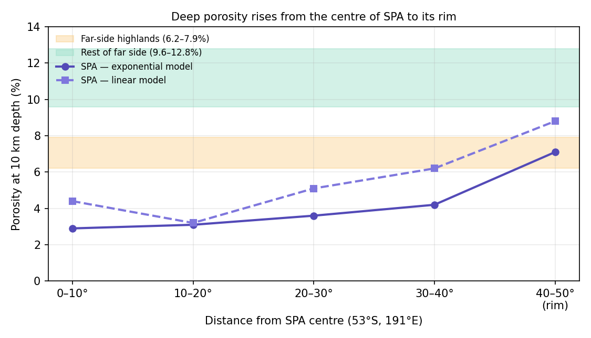
איור B6.1 משרטט את העמודה האחרונה של הטבלה כנגד המרחק. על מה להסתכל: שני העקומים נמצאים מתחת לשתי הרצועות הצבועות של אזורי הייחוס לרוחב כל האגן, ומטפסים אליהן בשפה. בתוך SPA יש לקרקע בעומק 10 ק”מ פחות נקבוביות מאשר בכל מקום סביבה, ופחות ככל שקרבים למרכז.
מדוע פני השטח של SPA שומרים על נקבוביות שאינה פחותה מזו של סביבתו, בעוד שבעומק הנקבוביות כמעט סגורות? ומדוע הסגירה אינה אחידה, אלא חזקה ביותר במרכז ונחלשת בהדרגה לעבר השפה?
הספרות מייחסת את הצפיפות הגבוהה של קרקעית SPA להרכב: חומר עשיר בברזל ובפירוקסן, בצפיפות גרגרים של כ-3,000 ק”ג/מ”ק (kg m) (Huang & Wieczorek 2012). (פירוקסן הוא מינרל נפוץ הנושא ברזל ומגנזיום, כבד מן הפלדספר של הרמות.) היווצרות נקבוביות בקרום הירח מיוחסת בעיקר לשבירה בפגיעות, וסגירתן עם העומק מוסברת בלחץ ובזחילה (Wieczorek et al. 2013; Besserer et al. 2014). זחילה היא זרימה איטית של חומר מוצק תחת עומס; היא שמאפשרת למשקל השכבות שמעל לסחוט את המרווחים עד שייסגרו, והיא מהירה בהרבה בחומר חם מאשר בחומר קר. בפגיעה גדולה הקרום מתחת לאגן נשבר ונעשה נקבובי יותר; חימום ממושך יכול לסגור נקבוביות.
מתיישב: צפיפות הגרגרים הגבוהה במרכז, הנובעת מן ההרכב.
אינו מתיישב: פרדוקס הריסוק. פגיעה מנבאת שבירה עמוקה ועלייה בנקבוביות מתחת לאגן; בעומק נמצאה חתימה הפוכה, 2.9–4.4% במרכז לעומת 6.2–12.8% בסביבה.
אינו מתיישב: היעדר מנגנון לרציפות. הסגירה נחלשת ברציפות מן המרכז אל השפה בשני מודלי העומק; לפגיעה קצרת חיים אין מנגנון לכך. גם לחץ לבדו אינו מספק מנגנון: באותו עומק משקל השכבות שמעל שווה בקירוב בתוך האגן ומחוצה לו, ולכן הלחץ סוגר את הנקבוביות באופן אחיד בכל מקום. מה שסוגר אותן יותר במקום אחד מאשר באחר הוא חום שנמשך, וסגירה הגדולה ביותר במרכז מחייבת חום שהיה הגדול ביותר במרכז.
הכרעת המדע: מסביר בחלקו ההרכב מסביר את הצפיפות; הוא אינו מסביר דחיסה בעומק הנחלשת בהדרגה מן המרכז החוצה.
שכבות החומר החוזר היו מלאות נקבוביות. חומר שעלה מכדור הארץ, חם מאוד ועשיר בנדיפים, נחת על הירח הצעיר שוב ושוב והצטבר בשכבות שנותרו רוויות חללים כשהנדיפים שלהן ברחו. חום הברנרים, שיצא בצד הרחוק והצטבר מתחת ל-SPA, אפה אותן מלמטה כלפי מעלה, בעוצמה הרבה ביותר במרכז, שם נשמר הכי הרבה זמן. בעומק: חומר חם זוחל, ותחת משקל השכבות שמעליו המרווחים נסחטים ונסגרים — הקרקע נאפתה ונדחסה, כמו חימר בכבשן. מקור החום שכך כשהפחיסות נרפתה, לפני השחרור, וכשהירח התרחק לחלל לאחר השחרור ההתקררות השתלטה: השכבות האפויות נדחסו והתכווצו, והנקבוביות נסגרו, בעיקר בעומק ויותר מכל במרכז. נקבוביות סגורות בעומק הן אפוא סימנה של קרקע שהוחזקה חמה זמן רב; ככל שהן סגורות יותר, כך היא הוחזקה חמה יותר או ממושך יותר, ומפל הסגירה מן המרכז אל השפה הוא צורתו של מקור החום עצמו.
בפני השטח: סוג של פעפוע והתאיידות יצרו נקבוביות מחדש, ולכן פני השטח של SPA דומים לרמות. לא פרץ חומר מותך: החומרים הנדיפים התאדו ונמלטו כלפי מעלה דרך פתחים שפתחו לעצמם, שנסגרו שוב בחום, ומעברם הותיר את השכבה העליונה מלאת חללים, ואילו בעומק דבר לא פתח מחדש את הנקבוביות הסגורות.
הניבוי של המודל: בעומק, הנקבוביות סגורות יותר במרכז ופחות ככל שמתרחקים ממנו. הוא נבדק בשלב 6.
הטבלה מעמידה כל קביעה של המודל לצד מה שערכי GRAIL מראים.
| המודל אומר | מה נמצא |
|---|---|
| הנקבוביות נסגרו בעיקר בעומק | פני השטח 19.7% (כמו ברמות, 20.3%); ב-10 ק”מ 2.9–4.4% (לעומת 6.2–7.9% ברמות ו-9.6–12.8% בשאר הצד הרחוק) |
| הסגירה חזקה ביותר במרכז ונחלשת החוצה | אקספוננציאלי: 2.9 3.1 3.6 4.2 7.1%; ליניארי: 4.4 3.2 5.1 6.2 8.8% |
| הדחיסה היא השקיעה של B2 | הפרש הנקבוביות כפול העובי (0–20 ק”מ) נותן 0.5–1.2 ק”מ; השארית של B2 היא 1.1–1.8 ק”מ בתוך 10° מן המרכז, 0.5–1.2 ק”מ ב-10–20° ו-0.2–0.3 ק”מ בשפה (גרסה קודמת ציטטה אותה כ-0.5–1.5 ק”מ). הדחיסה תואמת את השארית של הטבעת 10–20° ונותנת בין כשליש לכל השארית המרכזית, באותו מבנה, הגדול ביותר במרכז |
| פני השטח נבנו מחדש בסוג של פעפוע של חומרים נדיפים | אין נקבוביות מופחתת בפני השטח |
השורה השלישית מחברת את הסעיף הזה ל-B2, והחשבון שלה פשוט. כאשר שכבה בעובי מאבדת חלק מנפחה כשנקבוביותיה נסגרות, והסגירה נספגת בציר האנכי, פני השטח שלה שוקעים ב-. הפרש הנקבוביות בין SPA לסביבתו, על פני 20 הק”מ העליונים, נותן שקיעה של כ-0.5–1.2 ק”מ. B2 מצא שקרקעית SPA נמצאת עמוק יותר ממה שהקרום הדק שלה לבדו מסביר: ב-1.1–1.8 ק”מ בתוך 10° מן המרכז, ב-0.5–1.2 ק”מ ב-10–20°, ועד 0.2–0.3 ק”מ בשפה. מכאן עולה כי הדחיסה היא בגודל השארית של הטבעת 10–20°, ומהווה בין כשליש לכל השארית במרכז; את יתרת השארית המרכזית המודל מייחס לחומר שאבד (B2). הנקבוביות שנסגרו הן רוב העומק שהיה חסר.
הכרעת המודל: מתאים הנקבוביות סגורות בעומק ולא בפני השטח, הסגירה נחלשת מן המרכז אל השפה כפי שנובא, והדחיסה מסבירה חלק ניכר מן השקיעה של B2.
מה זה מראה. ערכי העומק מחושבים ממודלים (GRAIL מודד את פני השטח ואת ההשתנות עם העומק), ולכן הראיה עקיפה; היא עקבית, עם זאת, בשני מודלי העומק ומול שני אזורי ההשוואה. הדחיסה בעומק וחלק ניכר מן השקיעה של B2 הם גודל אחד הנראה פעמיים, באותו מבנה מן המרכז החוצה: פעם כגירעון נקבוביות בשדה הכבידה, ופעם כגירעון גובה בטופוגרפיה. מה שיש בידינו עכשיו: קרקע מתחת ל-SPA שנאפתה ונדחסה מלמטה, יותר מכל במרכז, כפי שחום שהצטבר מתחת למרכז מחייב.
נתונים וקוד.
| נתונים | מקור |
|---|---|
| צפיפות ונקבוביות בפני השטח | GRAIL, Wieczorek et al. (2013) (porosity_l250-650) |
| השתנות עם העומק | מודלים ליניארי ואקספוננציאלי, Besserer et al. (2014) |
| צפיפות הגרגרים | Huang & Wieczorek (2012) |
| ניתוח הטבעות וההשוואות | density_analysis.py
ו-results/*.csv; תיקיית ארכיון
14_GRAIL_density_ring_chatgpt |
פתוח. השקיעה חושבה מממוצעי הטבעות; חישוב מדויק ישירות מן המפות טרם בוצע (אינו חוסם).
התופעה. קרקעית SPA צפופה. הפער בידע. טרם נבחן, טבעת אחר טבעת ומול הצד הרחוק שסביבו, אם צפיפותה היא הרכב בלבד או גם נקבוביות שנסגרו בעומק, וכיצד הסגירה משתנה מן המרכז אל השפה. שאלת המחקר: כיצד משתנה הנקבוביות בפני השטח ובעומק ממרכז SPA אל שפתו, מול רמות הצד הרחוק ושאר הצד הרחוק?
צפיפות הגרגרים, הצפיפות הכוללת והנקבוביות ניתנות בידי GRAIL (Wieczorek et al. 2013), בשילוב מודלי עומק (Besserer et al. 2014) וצפיפות גרגרים מן ההרכב (Huang & Wieczorek 2012). בספרות, הנקבוביות בקרום נוצרת בשבירה ונסגרת עם העומק תחת לחץ וזחילה. מה חדש כאן: הרשתות שפורסמו נקראות בטבעות סביב המרכז, ומושוות בפני השטח ובעומק 10 ק”מ מול שני אזורי ייחוס ובשני מודלי עומק.
שכבות החומר החוזר נאפו מלמטה ונדחסו, יותר מכל בעומק ויותר מכל במרכז; לכן בפני השטח SPA נקבובי כמו סביבתו, ואילו בעומק נקבוביותיו סגורות, יותר מכל במרכז ופחות לעבר השפה.
סוג המחקר: כמותי; ערכים לפי טבעת מול אזורי ייחוס. המדגם: רשתות GRAIL של צפיפות הגרגרים, הצפיפות הכוללת והנקבוביות, בטבעות של 10° סביב המרכז; רמות הצד הרחוק (כיפה של 20° סביב 45° צפון, 180° מזרח) ושאר הצד הרחוק. הכלים: קוד הממצע לפי טבעת בשקלול שטח (area weighting), במודל העומק הליניארי ובמודל האקספוננציאלי.
כל טבעת וכל אזור ייחוס נקראו בכל רשת; לשם בדיקה, הנקבוביות בפני השטח חושבה גם ישירות ממפת הנקבוביות. הערכים מרוכזים בטבלה של שלב 1 ובאיור B6.1.
פני השטח. הנקבוביות נעה בטווח צר של 18.9–19.7% בכל טבעת, כמו ברמות הצד הרחוק (20.3%). ב-10 ק”מ. 2.9–4.4% במרכז, 3.1–3.2% ב-10–20°, 3.6–5.1% ב-20–30°, 4.2–6.2% ב-30–40°, 7.1–8.8% בשפה; לעומת 6.2–7.9% ברמות הצד הרחוק ו-9.6–12.8% בשאר הצד הרחוק. הגרגרים. 3,005 ק”ג/מ”ק במרכז לעומת 2,897–2,920 בסביבה.
תוצאה. ההשערה נתמכת: פני השטח נקבוביים כמו סביבתם, ובעומק הנקבוביות סגורות יותר מכל במרכז, והסגירה נחלשת ברציפות עד השפה, בשני מודלי העומק. מגבלות. הנקבוביות בעומק אינה נמדדת ישירות, אלא מוחצנת (extrapolated) מן ההיפוכים שפורסמו, ולכן תלויה במודל העומק; צפיפות הגרגרים עצמה מוסקת מן ההרכב. כיווני מחקר נוספים. מודל נקבוביות עומק המבוסס על היפוך ישיר של הכבידה של SPA, כשצפיפות הגרגרים מקובעת לפי הדגימות שהוחזרו.
B7קרקעית חריגה
בקצרה. קרקעית SPA עשירה בברזל, והברזל מרוכז באזור המרכזי ופוחת בהדרגה לעבר השפה. התוריום מועשר פי 2.4–3.6, אך אינו שוכן במרכז: הוא מאורגן בטבעת ובסהר לצפון-מערב. היחס בין האשלגן (נדיף במידה בינונית) לתוריום (עמיד בחום) נמוך ואחיד בכל פנים האגן. גיל הנוריטים 4.25 מיליארד שנה.
הסעיפים שלפני סעיף זה קראו את צורתו של SPA: מכתשיו (B1), עומקו (B2), הקרום שלו (B3–B5) וסגירת נקבוביותיו בעומק (B6). סעיף זה קורא ממה עשויה הקרקעית. שלושה יסודות נושאים את הסיפור. ברזל הוא יסוד כבד, ומקורו בעיקר בחומר עמוק. תוריום הוא יסוד רדיואקטיבי שאינו מתאדה גם בטמפרטורה גבוהה מאוד (הוא עמיד בחום, refractory), אבל עוזב את המוצק לטובת הנוזל בכל פעם שהמוצק מתחיל להיתך. אשלגן הוא נדיף במידה בינונית: חום חזק וממושך מסלק חלק ממנו כאדים. משום שהתוריום נשאר והאשלגן יכול לעזוב, היחס ביניהם, K/Th, הוא מדחום של חימום שהיה: ככל שאבד יותר אשלגן, היחס נמוך יותר. נוריטים הם חומר גבישי גס גרגר, שהתמצק לאט מהתכה בעומק.
אנו משתמשים במפות GRS של Lunar Prospector (Prettyman et al. 2006; PDS
LP_9001), ממוצעות בטבעות סביב מרכז SPA וסביב מרכז הכיפה, ומושוות לרמות
הצד הרחוק ולשאר הצד הרחוק (סקריפט הניתוח analyze.py).
ספקטרומטר קרני הגמא (GRS) של Lunar Prospector מדד ממסלול את קרני הגמא
שכל יסוד פולט מן הדצימטרים העליונים של פני השטח, ומהן מיפה ברזל,
טיטניום, תוריום ואשלגן על פני הירח כולו. ממוצע טבעת משלב את כל תאי
המפה הנמצאים באותו מרחק זוויתי ממרכז, ובכך מבודד את השינוי מן המרכז
החוצה מעל הרעש של תאים בודדים. שני אזורי ההשוואה זהים לאלה של B6: רמות
הצד הרחוק, קרום עתיק הרחוק מ-SPA, ושאר הצד הרחוק מחוץ ל-SPA. הם מראים
כיצד נראה הצד הרחוק בלי החימום שהמודל ממקם מתחת ל-SPA.
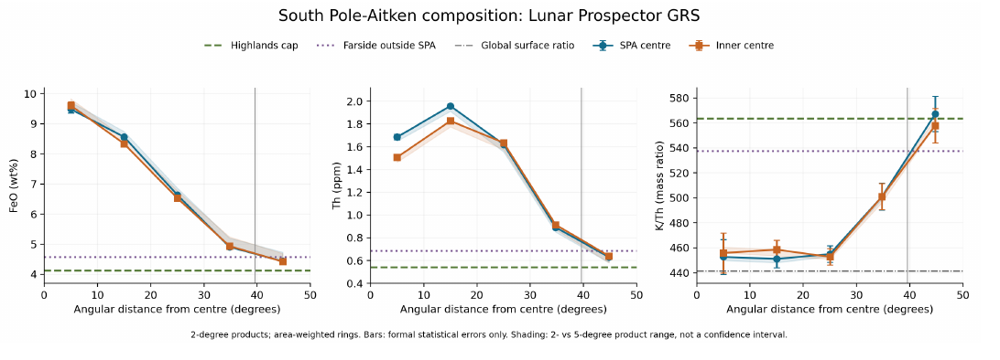
באיור כל עקומה נמשכת ממרכז SPA (משמאל) אל מעבר לשפתו (מימין). על מה להסתכל: עקומת הברזל יורדת בהתמדה מן המרכז אל השפה ופוגשת את קווי ההשוואה רק שם; עקומת התוריום עולה תחילה ומגיעה לשיא בטבעת השנייה לפני שהיא יורדת; עקומת K/Th נשארת שטוחה ונמוכה לאורך הפנים ומטפסת רק בשפה. שני המרכזים, של SPA ושל הכיפה, נותנים אותה תמונה, ולכן התוצאה אינה תלויה בבחירת המרכז.
| טבעת (סביב מרכז SPA) | FeO (%) | TiO (%) | Th (ppm) | K (ppm) | K/Th |
|---|---|---|---|---|---|
| 0–10° | 9.48 | 0.85 | 1.69 | 763 | 451 |
| 10–20° | 8.56 | 0.65 | 1.96 | 884 | 451 |
| 20–30° | 6.63 | 0.51 | 1.62 | 738 | 455 |
| 30–39.57° | 4.91 | 0.34 | 0.89 | 447 | 501 |
| 39.57–50° (שפה) | 4.43 | 0.36 | 0.63 | 358 | 567 |
| רמות הצד הרחוק | 4.12 | 0.33 | 0.54 | 303 | 563 |
| שאר הצד הרחוק | 4.57 | 0.41 | 0.68 | 368 | 537 |
בדיקה: קוד הניתוח מוריד את המפות מ-PDS ולא הורץ כאן מחדש (אין חיבור); היחסים והאחוזים שבטבלה נבדקו: (גרסה קודמת של הטבלה נתנה 453); ; (הפרשים של יחידה או שתיים מן הטבלה, 501 ו-563, נובעים מערכי Th שאינם מעוגלים); 19.6% ו-15.8%.
הטבלה נותנת את אותן טבעות במספרים. FeO ו-TiO הם תחמוצת ברזל ותחמוצת טיטניום, באחוזי משקל; Th ו-K הם תוריום ואשלגן בחלקים למיליון (ppm). ה-19.6% וה-15.8% שבהערת הבדיקה הם שני החסרים של K/Th בתוך SPA, מול הרמות ומול שאר הצד הרחוק, שהטקסט מעגל ל-16–20%. קראו כל עמודה מלמעלה למטה: הברזל יורד למחצה מן המרכז אל השפה; התוריום גבוה ביותר בטבעת השנייה, ויורד לרמת אזורי ההשוואה רק מעבר ל-30°; K/Th נשאר סביב 450 עד 30°, ורק אז עולה אל ה-537–567 של האזורים שבחוץ.
פרופיל תחמוצות הברזל. הברזל מרוכז באזור המרכזי ודועך ברציפות אל השפה, סביב שני המרכזים. מרכז הכובד של העשירון העשיר ביותר בברזל ממוקם באזור המרכזי, כ-150–200 ק”מ ממרכז SPA וממרכז הכיפה; טביעת הרגל המרחבית של מכשיר ה-GRS היא כ-150 ק”מ. לכן אנו מדברים על אזורים. העשירון העשיר ביותר הוא העשירית של תאי המפה שבהם הכי הרבה ברזל; מרכז הכובד שלו הוא מיקומם הממוצע. טביעת הרגל היא כתם הקרקע שמדידה בודדת ממצעת עליו. מרחק של 150–200 ק”מ הוא בערך טביעת רגל אחת בלבד, ולכן המדידה ממקמת את הברזל באזור המרכזי, אך אינה יכולה לבודד בתוכו נקודה אחת.
פרופיל התוריום והאסימטריה שלו. התוריום מועשר פי 2.4–3.6 לעומת אזורי ההשוואה בתוך 30° (גרסה קודמת נתנה 2–3.6). הפיזור אינו מגיע לשיא במרכז: השיא נמצא בטבעת 10–20°. ההרמוני הראשון מצביע מערב-צפון-מערב (280°): סהר שתיארו גם Moriarty et al. (2021), עם נקודות חמות עד 6 ppm. ההרמוני הראשון מתאר כיצד התוריום של טבעת משתנה כשמקיפים אותה: אם צד אחד של הטבעת עשיר מן האחר, ההרמוני מצביע לעבר הצד העשיר. כאן הוא מצביע מערב-צפון-מערב, כלומר התוריום אינו פרוש באופן שווה סביב המרכז אלא מרוכז בצד אחד שלו, בצורת סהר.
פרופיל יחס האשלגן לתוריום. K/Th מציג ערך נמוך ויציב של 451–455 בכל פנים האגן עד 30°, גירעון אחיד של 16–20% לעומת אזורי ההשוואה, ועולה רק לעבר השפה. השטיחות חשובה כמו הערך הנמוך: הפנים כולו איבד אשלגן באותה מידה, והשינוי מגיע רק בשוליים.
חתימת הדגימות של Chang’e-6. האשלגן כבד איזוטופית (K עד ; Tian et al. 2026); גיל הנוריטים מיליון שנה (Su et al. 2025). איזוטופ הוא צורה של אותו יסוד במסה שונה. כשחומר מתאדה, האטומים הקלים עוזבים מעט בקלות רבה יותר, ולכן מה שנשאר מאחור נעשה מעט כבד יותר. K מודד, בחלקים לאלף, בכמה האשלגן של דגימה כבד מתקן; ערך כבד יותר מצביע על אשלגן שאבד כאדים. דגימות Chang’e-6, שהוחזרו ב-2024 מאגן Apollo שבצפון-מזרח SPA, הן הדגימות היחידות מן הצד הרחוק.
מאחורי הקלעים. מרכז ההרכב נבדק תחילה באמצעות צפיפות הגרגר. כשהתברר שצפיפות הגרגר מחושבת בעצמה מן הברזל והטיטניום של אותן מפות, הבדיקה הועברה אל מפות היסודות עצמן, והתוצאות מנוסחות ברמת אזורים.
מדוע הקרקעית עשירה בברזל, והברזל מרוכז באזור המרכזי ודועך בהדרגה לעבר השפה? מדוע התוריום שוכן לא במרכז אלא בטבעת ובסהר המופנה מערב-צפון-מערב? מדוע היחס בין אשלגן לתוריום נמוך בכל פנים האגן?
הספרות המקובלת קוראת את SPA כאגם התכה של פגיעה: הפגיעה חפרה עמוק, אל הקרום התחתון ואולי אל המעטפת, ויצרה אגם התכה שעבר התמיינות; הנוריטים בני 4.25 מיליארד השנים הם תוצריו (Su et al. 2025). אגם התכה מתמיין כאשר, תוך כדי התקררותו, גבישים כבדים שוקעים וקלים צפים, כך שנוצרות שכבות בהרכב שונה. ארבעה אזורים מינרלוגיים מקיפים את המרכז (Moriarty & Pieters 2018). העשרת התוריום מוסברת כחשיפה ופיזור של מעטפת שכבתית ושל חומר נזרק (Moriarty et al. 2021). החתימה האיזוטופית הכבדה של האשלגן מיוחסת להתאדות בהבזק הפגיעה (Tian et al. 2026; מודל של אובדן של כ-2%).
קריאת הפגיעה מספקת מענה לכל אחד מן הממצאים בנפרד, אבל כל הסבר עומד לעצמו ואינו מציע מנגנון מאוחד: ברזל מאגם התכה, תוריום ממעטפת שכבתית, אשלגן מהתאדות רגעית.
מועד הפגיעה נקבע מן הגילים שנמדדו: ההסבר מתאים את הפגיעה לזמנים שהמדע מודד.
הקושי הברור ביותר נמצא בפרופיל האשלגן האחיד. התאדות בפגיעה היא קצרה; לאורך כל פנים האגן היחס נמוך באופן אחיד. הבזק רגעי מחמם בעוצמה הרבה ביותר במוקד המכה, ופחות במקומות אחרים; אובדן אחיד על פני אזור שרוחבו כ-2,400 ק”מ דורש חום שהגיע אל כל הפנים באופן שווה.
הכרעת המדע: מסביר לכל ממצא יש הסבר משלו בתוך קריאת הפגיעה: ברזל מאגם התכה, תוריום ממעטפת שכבתית ואשלגן מהתאדות.
השאלה עבור המודל היא אם תהליך אחד נותן את ארבעת הממצאים בבת אחת: מפל הברזל, הטבעת והסהר של התוריום, ה-K/Th השטוח והנמוך, והגיל.
המקור: הברנר. החום נכנס דרך שני ברנרים בצד הקרוב, Imbrium (עיקרי) ו-Serenitatis (משני), ויצא מולם בצד הרחוק, ב-37.6° דרום, 160.0° מזרח וב-27.3° דרום, 198.4° מזרח. שתי היציאות האלה הן האנטיפודים של מרכזי Imbrium (37.6° צפון, 340.0° מזרח) ו-Serenitatis (27.3° צפון, 18.4° מזרח); האנטיפודים שבתיבת הסביבה, 37° דרום, 161.5° מזרח ו-25.4° דרום, 198.8° מזרח, הם אלה של נקודות הפתחים ששימשו לספירת המכתשים (Imbrium 37° צפון, 341.5° מזרח; Serenitatis 25.4° צפון, 18.8° מזרח). שני הזוגות רחוקים זה מזה 1.3° (Imbrium) ו-1.9° (Serenitatis). אגם ההתכה שמעל הברנר הוא האזור המרכזי שמדרום לשתי היציאות, שם החום הצטבר ונשמר לאורך הזמן הממושך ביותר (הכיפה הגדולה). מרכז הכובד של מכתשי התוריום נמצא 6.6° בלבד מיציאת Imbrium. הברנר, כפי שהוצג ב-A.5, הוא מקור החום של המודל: חום וחומר שעלו מפנים כדור הארץ בזמן שהירח היה מחובר, עברו דרך הפתחים של הצד הקרוב, ויצאו בצד הרחוק מולם.
מנגנון מפל הברזל. אגם ההתכה היה האזור המרכזי שבו חום הברנרים הצטבר ונשמר הכי הרבה זמן, ולכן כל מה שהיה שם הותך. חומר כבד ועמוק עלה עם החום; זו הסיבה שהברזל מרוכז באזור המרכזי ופוחת בהדרגה החוצה. המפל עוקב אחר החום: היכן שהחימום היה החזק והממושך ביותר, הגיע הכי הרבה חומר עמוק אל בסיס הקרום, והכמות פוחתת יחד עם החום לעבר השפה.
מנגנון הסטת התוריום. התוריום פונה מן המרכז בשתי דרכים משולבות. הראשונה מכנית: הוא נדחק החוצה מן הכיפה יחד עם הקרום שהחליק ממנה (B3, שלוש הדרכים להדקת הקרום); זו הסיבה שהוא שוכן בטבעת ולא במרכז. כיפה העולה משילה את שכבתה העליונה אל הצדדים, כמו ערמת חול על שולחן שמורם מלמטה ומתפזרת החוצה; מה שהיה למעלה במרכז מגיע לטבעת סביבו.
הדרך השנייה היא ניקוז נוזלי: התוריום עזב את המרכז גם עם הנוזל. הייתה זרימה לעבר הסהר, לא רק חומר נזרק, והיא הוסטה בידי הסיבוב. תוריום כמעט אינו מתאדה, אבל הוא "בורח" אל הנוזל: בהתכה חלקית הוא עובר כמעט כולו אל הנתך. בהתכה חלקית רק חלק מן המוצק נעשה נוזל, ויסודות שאינם משתלבים היטב בגבישי המוצק (יסודות בלתי-תואמים), ובהם התוריום, עוברים כמעט כולם אל הנוזל הראשון הזה. במרכז, היכן שהחום היה החזק ביותר, נוצר הכי הרבה נוזל; הנוזל זרם החוצה, הוסט לעבר צד הסהר ונשא איתו את התוריום. במרכז נשארה שארית מדולדלת (1.7 ppm), ובסהר הצטבר נתך מועשר (4–5 ppm בנקודות החמות). בקצה הרחוק, כשהירח מחובר, כוח הסיבוב הפועל על זרימה רחבה ואיטית במדרון מתון הוא מאותו סדר גודל כמו כוח המדרון. כוח הסיבוב כאן הוא הדחיפה הצידית שמערכת מסתובבת נותנת לכל דבר הנע לרוחבה. זרם מהיר במדרון תלול יורד ישר, משום שהמדרון שולט; זרימה רחבה ואיטית במדרון מתון חשה כוח מדרון חלש כמו הדחיפה הצידית, ונוטה הצידה, כפי שהזרמים הרחבים והאיטיים של האוקיינוסים של כדור הארץ מוסטים בידי סיבוב כדור הארץ. זו הסיבה שהזרימה החוצה לא התפזרה באופן סימטרי, אלא נטתה לצד אחד.
מנגנון ההתנדפות האחידה של האשלגן. חימום חזק, מרוכז וממושך אידה לא רק מים אלא גם יסודות נדיפים במידה בינונית כמו אשלגן. האגן כולו הוא אזור מחומם (B8); זו הסיבה שהיחס נמוך בכל הפנים, עם מעבר בשוליים. ההבדל מקריאת הפגיעה הוא משך הזמן: חימום ממושך מלמטה פועל על כל השטח שמעליו, והאובדן זהה בכל מקום שהחום הגיע אליו; מחוץ לשטח זה האובדן נעצר, והיחס מטפס בשפה.
אימות כרונולוגי. הגיל של 4.25 מיליארד שנה הוא זמן ההתכה מעל הברנר; הוא תומך בכך שהברנר פעל בתקופה שהמודל קובע. המודל ממקם את השלב המחובר בין תחילת הבנייה לבין השחרור ב-3.873 מיליארד שנה (B15); התכה שהתמצקה לאט בעומק לפני 4.25 מיליארד שנה נמצאת בתוך התקופה הזאת.
הטבלה מציבה כל אמירה של המודל לצד המדידה שבודקת אותה.
| המודל אומר | מה נמצא |
|---|---|
| ברזל מרוכז, פוחת בהדרגה | 9.5 8.6 6.6 4.9 4.4% ; אותו מבנה כמו ב-B1, B6, B8 |
| התוריום נדחק לטבעת | שיא ב-10–20°, לא במרכז |
| התוריום עזב את המרכז עם הנוזל, והנוזל הוסט לעבר הסהר | מרכז 1.7 ppm; נקודות חמות בסהר 4–5 ppm |
| התנדפות על פני כל האזור המחומם | K/Th 451–455 בכל הפנים, נמוך ב-16–20% מאזורי ההשוואה; מעבר בשוליים ; אשלגן כבד איזוטופית ב-Chang’e-6 |
| התכה בתקופת הברנר | נוריטים בני 4.25 מיליארד שנה |
הכרעת המודל: מתאים מפל הברזל, הטבעת והסהר של התוריום, ה-K/Th הנמוך באופן אחיד וגיל הנוריטים נובעים כולם מהתכה והתנדפות מעל הברנר.
מה יש בידינו עכשיו. אספקת חום אחת, משני הברנרים, שנשמרה הכי הרבה זמן מתחת למרכז, חזקה וממושכת, נותנת את ארבעת הממצאים יחד: היא העלתה ברזל עמוק במוקד החום, דחקה את התוריום אל הטבעת והסהר עם הקרום המחליק ועם הנוזל הזורם החוצה, סילקה אשלגן באופן שווה על פני כל השטח המחומם, והתיכה את הנוריטים בזמנה שלה.
נתונים וקוד.
| נתונים | מקור |
|---|---|
| FeO, TiO, Th, K | Lunar Prospector GRS, Prettyman et al. (2006) (doi:10.1029/2005JE002656); PDS LP_9001 |
| אזורים מינרלוגיים | Moriarty & Pieters (2018) (doi:10.1002/2017JE005364) |
| סהר התוריום | Moriarty et al. (2021) (doi:10.1029/2020JE006589) |
| ברזל בצפון SPA | Ivanov et al. (2018) (doi:10.1029/2018JE005590) |
| אשלגן כבד | Tian et al. (2026), PNAS (doi:10.1073/pnas.2515408123) |
| נוריטים, 4.25 מיליארד שנה | Su et al. (2025), NSR (doi:10.1093/nsr/nwaf103) |
| Na/K בזכוכיות | Li et al. (2026), EPSL (doi:10.1016/j.epsl.2026.119980) |
| קוד ודוח | analyze.py
ו-SPA_Composition_Report.pdf; תיקיית ארכיון
B7_2026-10-04 |
פתוח. (1) מדוע סהר התוריום פונה דווקא לצפון-מערב. (2) יחס נמוך בין אשלגן לתוריום יכול לנבוע גם מערבוב של חומרים; המבחן הוא מודל ערבוב משותף של K, Th, FeO והמינרלוגיה, הקובע אם נותר חוסר עצמאי באשלגן התואם את האיזוטופים הכבדים. הנקודה הראשונה נדונה ב-B9, שם כיוון הסהר נגזר מן הסיבוב.
B8 מעט לבה גלויה
בקצרה. SPA, האגן העמוק ביותר, שהקרום שלו דק כמו באגני הצד הקרוב, מכוסה רק ב-4% לבה גלויה. מה שיש אינו מפוזר באופן אחיד אלא מרוכז במרכז. במודל, האגן עבר חימום והתכה מלמטה, לא שפיכה; רק במרכז, היכן שהחום היה החזק ביותר, יצא חומר.
לבה עולה היכן שהקרום דק והקרקע נמוכה, ובצד הקרוב האגנים העמוקים בעלי הקרום הדק מוצפים במישורי לבה כהים, הימות. SPA הוא העמוק מכל האגנים והקרום שלו דק כמו שלהם; לפי הכלל הזה הוא היה צריך להיות מן המוצפים ביותר. סעיף זה מודד כמה מעט לבה הוא נושא, היכן הלבה הזאת שוכנת, ומדוע.
הגדרת מונחי היסוד. אנו מדברים על "חימום" ועל "התכה מלמטה", לא על שפיכת לבה או חלחול. לבה גלויה פירושה ימות החשופים כיום בפני השטח; לבה קבורה (cryptomare) פירושה לבה שכוסתה מאוחר יותר בחומר בהיר, נושא B9. ההבחנה קריטית כאן: אגן יכול להכיל הרבה לבה הסמויה מן העין, אם חומר בהיר יותר נפל עליה אחר כך. סעיף זה סופר רק את מה שגלוי; B9 סופר את מה שמוסתר.
מקורות הנתונים. אנו משתמשים במפת הימות של LROC (LROC_GLOBAL_MARE_180), ממוצעת בטבעות סביב מרכז הכיפה (האזור של 51° דרום, 197° מזרח, מרכז הטבעת הפנימית, B5), ובעובי הקרום של GRAIL (מודל 1) במרכזי האגנים. מפת LROC משרטטת את קווי המתאר של כל ים חשוף על הירח מתוך תמונות המצלמה של Lunar Reconnaissance Orbiter; GRAIL, זוג חלליות שמיפו את שדה הכבידה של הירח, נותן את עובי הקרום מתחת לכל נקודה.
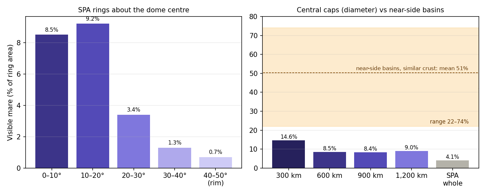
משמאל, החלק של כל טבעת המכוסה בלבה יורד מן המרכז החוצה. מימין, ככל שהכיפה סביב המרכז קטנה יותר, חלק הלבה שלה גדול יותר; אבל גם הכיפה בגודל של אגן בצד הקרוב נשארת מתחת לכל הרצועה של אגני הצד הקרוב בעלי קרום דומה.
| אזור ב-SPA | לבה גלויה |
|---|---|
| טבעת 0–10° | 8.5% |
| טבעת 10–20° | 9.2% |
| טבעת 20–30° | 3.4% |
| טבעת 30–40° | 1.3% |
| שפה 40–50° | 0.7% |
| 300 הק”מ הפנימיים | 14.6% |
| כיפה מרכזית שרוחבה 900 ק”מ (בגודל של אגן בצד הקרוב) | 8.4% |
| SPA כולו | 4.1% |
הטבלה נקראת בשני חלקים. חמש השורות הראשונות הן הטבעות: כ-9% ב-20° הפנימיות, ודעיכה אל פחות מ-1% בשפה. שלוש השורות האחרונות הן שטחים הולכים וגדלים סביב המרכז: ככל ששטח כולל יותר מן האגן החיצוני, חלקו נמוך יותר, מ-14.6% ב-300 הק”מ הפנימיים עד 4.1% עבור SPA כולו.
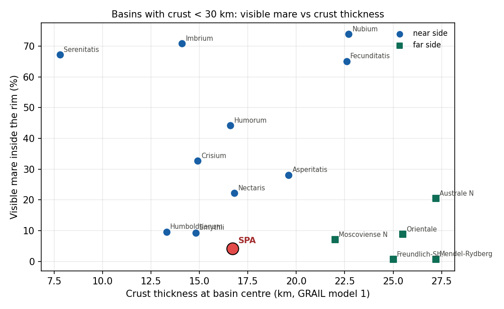
האיור משווה שווה מול שווה: רק אגנים שהקרום במרכזם דק מ-30 ק”מ, כך שכל אחד מהם יכול היה להעביר לבה באותה קלות כמו SPA. עיגולי הצד הקרוב יושבים גבוה; ריבועי הצד הרחוק יושבים נמוך; SPA, באדום, נמצא סמוך לתחתית — רק Freundlich-Sharonov ו-Mendel-Rydberg, עם קרום של 25–27 ק”מ, נושאים פחות — אף שהקרום שלו מן הדקים ביותר.
| אגן | צד | קרום במרכז (ק”מ) | לבה גלויה |
|---|---|---|---|
| Serenitatis | קרוב | 7.8 | 67.2% |
| Imbrium | קרוב | 14.1 | 70.8% |
| Crisium | קרוב | 14.9 | 32.7% |
| Humorum | קרוב | 16.6 | 44.2% |
| SPA | רחוק | 16.7 | 4.1% |
| Nectaris | קרוב | 16.8 | 22.2% |
| Asperitatis | קרוב | 19.6 | 28.1% |
| Fecunditatis | קרוב | 22.6 | 65.1% |
| Nubium | קרוב | 22.7 | 73.9% |
| Humboldtianum | קרוב (קצה הדיסקה) | 13.3 | 9.6% |
| Smythii | קרוב (קצה הדיסקה) | 14.8 | 9.3% |
| Moscoviense N | רחוק | 22.0 | 7.1% |
| Freundlich-Sharonov | רחוק | 25.0 | 0.6% |
| Orientale | רחוק (קצה הדיסקה) | 25.5 | 8.8% |
| Mendel-Rydberg | רחוק | 27.2 | 0.7% |
| Australe N | רחוק | 27.2 | 20.5% |
בדיקה: החלת קוד המיפוי על הירח כולו משחזרת את ערכי הספרות: לבה גלויה על הירח כולו 16.2% (בספרות כ-16–17%); הצד הקרוב 30.1% (כ-31%); הצד הרחוק 2.3% (כ-2%).
הטבלה מונה את אגני האיור, ממוינים לפי צד ולפי עובי הקרום. SPA יושב בין Crisium, Humorum ו-Nectaris, עם קרום של 15–17 ק”מ, ובכל זאת נושא חמישית עד עשירית בלבד מן הלבה שלהם. הערת הבדיקה מאשרת שמפת הימות משחזרת את הסכומים של הספרות, ולכן הערך הנמוך של SPA אינו תוצר לוואי של המפה.
מדוע SPA, השקע העמוק ביותר, עם קרום של כ-17 ק”מ במרכזו כמו Crisium, Humorum ו-Nectaris, מכוסה רק ב-4% לבה גלויה, כשאגני הצד הקרוב בעלי קרום דומה מכוסים ב-22–74%? ומדוע מה שיש אינו מבוזר באופן אחיד אלא מרוכז במרכז?
הספרות המקובלת מייחסת את המחסור בלבה בצד הרחוק לחלוקה לא אחידה של מקורות החום: לצד הרחוק יש פחות מקורות חום (KREEP מרוכז בצד הקרוב), והמעטפת מתחת ל-SPA מדולדלת; לכן פחות מאגמה הגיעה אל פני השטח. KREEP הוא חומר ירחי עשיר באשלגן (K), ביסודות אדמה נדירים (REE) ובזרחן (P), ויחד איתם בתוריום ובאורניום, שהדעיכה הרדיואקטיבית שלהם מחממת את הקרקע סביבם. מעטפת מדולדלת היא מעטפת שכבר הופק ממנה נתך, כך שנשאר בה מעט להיתך שוב. הלבה הקיימת מתנקזת אל המקומות הנמוכים: מרכז האגן ומכתשים עמוקים בתוכו.
עקביות המגמה הכללית. ההסבר המקובל מתאים להבדל הכללי בין שני הצדדים: אגני הצד הרחוק בעלי קרום דק מכוסים בממוצע ב-7%.
אנומליה בתוך אנומליה. גם בצד הרחוק SPA נמצא סמוך לתחתית, מתחת לכל אגן בצד הרחוק שקרומו דק מ-25 ק”מ (רק Freundlich-Sharonov ו-Mendel-Rydberg, עם קרום של 25–27 ק”מ, נושאים פחות), אף שהוא העמוק מכולם; וכיפה מרכזית בגודל של אגן בצד הקרוב (8.4%) מכוסה פחות מכל אגן בצד הקרוב בעל קרום דומה.
הכרעת המדע: מסביר בחלקו ההבדל בין שני הצדדים מסביר מדוע אגני הצד הרחוק נושאים מעט לבה; הוא אינו מסביר מדוע SPA, העמוק ביותר, נמצא סמוך לתחתית גם בצד הרחוק, ולא מדוע כיפה מרכזית בגודל של אגן נושאת פחות מכל אגן בצד הקרוב בעל קרום דומה.
SPA עבר מחזור ממושך של חימום והתכה מלמטה, לא שפיכה. רוב האגן הוא אזור מחומם שממנו לא יצאה לבה; הוא נכנס למכנה של חישוב האחוז כשטח עצום ומדלל אותו. אחוז הוא לבה מחולקת בשטח: שטחו של SPA גדול פי כמה משל אגן בצד הקרוב, וכמעט כל השטח הנוסף הוא קרקע מחוממת שמעולם לא התפרצה. אותה לבה, הפרושה על מכנה גדול בהרבה, נותנת חלק קטן.
מן המרכז החוצה. במרכז החומר ספג את החום הרב והממושך ביותר, ההתכה הגיעה למצב דמוי לבה, ושם יצא חומר, לא מעבר לשוליים. החום ירד מן המרכז החוצה, ורק היכן שהיה הגבוה ביותר הגיע הנתך לצמיגות נמוכה מספיק כדי להגיע אל פני השטח; רחוק יותר הקרקע חוממה ועברה התכה חלקית בלבד, והנתך נשאר בעומק.
בשלבים הראשונים היה במרכז ים רגיל, ולא קטן. החום של האזור כולו מחק אותו; עקבותיו הקבורים הם נושא B9.
המעטפת מתחת ל-SPA מדולדלת משום שהיה חום בבסיסה (ראו B13). חום שמתיך את בסיס המעטפת שוב ושוב מושך ממנו את הנתך בכל פעם, ומשאיר שארית שנותר לה מעט לתת.
החום גם מחק את רשומת המכתשים; המכתשים שעל SPA היום הם חומר חוזר שנחת לאחר שהאזור התקרר (ראו B1).
| המודל אומר | מה נמצא |
|---|---|
| מעט לבה גלויה: לא הייתה שפיכה | 4.1% על SPA כולו |
| הלבה מרוכזת במרכז, היכן שהחום היה החזק ביותר | 14.6% ב-300 הק”מ הפנימיים; 8.5–9.2% בטבעות הפנימיות; 0.7–1.3% בשוליים |
| הדילול מסביר את רוב הפער | מ-4.1% לאגן כולו ל-8.4% לכיפה מרכזית בגודל של אגן: הפער לצד הקרוב יורד מפי 5–18 לפי 2.6–9 (22.2/8.4 עד 73.9/8.4; גרסה קודמת נתנה 1.5–9) |
| הפער הנותר הוא הים המרכזי שנמחק | ניבוי ל-B9: לבה קבורה מרוכזת במרכז |
| אותו מבנה מן המרכז החוצה | כמו בנקבוביות בעומק (B6), בחומר הכבד (B7) ובחוסר המכתשים (B1) |
השורה השלישית היא המפתח: היא מפרקת את השפעת המכנה. השוואה של SPA כולו לאגן בצד הקרוב משווה שטחים בגדלים שונים מאוד; השוואה של כיפה מרכזית בגודל של אגן בצד הקרוב מסלקת את ההבדל הזה. הפער מצטמק בערך בחצי, ומה שנשאר הוא נושא השורה הרביעית: הלבה שהייתה שם ועכשיו מוסתרת.
הכרעת המודל: מתאים SPA נושא מעט לבה גלויה, ומה שיש לו שוכן במרכז, כפי שחימום והתכה מלמטה דורשים; הדילול בידי השטח המחומם הגדול מסביר את רוב הפער לאגני הצד הקרוב.
נתונים וקוד.
| נתונים | מקור |
|---|---|
| ימות | LROC Global Mare Map (LROC_GLOBAL_MARE_180), ארכיון הנתונים המשותף |
| עובי הקרום | GRAIL, מודל 1 (Wieczorek et al. 2013);
grail_compact.npz |
| אגנים | Neumann et al. (2015)
(neumann_basins_ge500.csv) |
| קוד | רסטריזציה של המפה לרשת של 0.25°; טבעות וכיפות סביב מרכז הכיפה; שקלול שטח (תיקון קוסינוס קו הרוחב) |
B9בזלות קבורות והים המרכזי
בקצרה. בתוך המעגל המרכזי של 15° יש לבה קבורה, ושם גם הלבה הגלויה צפופה. במערב-צפון-מערב שוכן סהר תוריום רחב, שנחלש עם המרחק מן המרכז. במודל, הלבה הקבורה היא הים המרכזי המקורי, הפתח שפלט חומר. החומר הנפלט, בזמן שהירח היה מחובר ומסתובב מהר, נפל מאחור לצד אחד ויצר את הסהר. לאחר השחרור הים נרגע; הוא נשאר חם וקפא לאט, והמרבצים המתוארכים, המשתרעים על פני כ-1.5 מיליארד שנה, מתעדים את הקפיאה האיטית הזאת.
B8 השאיר פער: גם כיפה מרכזית בגודל של אגן בצד הקרוב נושאת פחות לבה גלויה מאגני הצד הקרוב, ותחזית המודל הייתה שהחלק החסר קבור בליבה המרכזית. סעיף זה מאתר את הלבה המוסתרת ומוצא אותה בתוך המעגל המרכזי. לאחר מכן הוא קורא את סהר התוריום של B7 כחומר שהים המרכזי פלט בזמן שהירח היה מחובר וסב במהירות, ובוחן קריאה זו בהדמיה של המקום שבו חומר כזה נוחת. לבסוף הוא קורא את גילי הלבה כחייו הארוכים והדועכים של אותו פתח.
מונחים: התכה היא התהליך שבו חומר הופך לנוזל; הוא יכול להתקרר ולהתמצק לאט בעומק מבלי לפרוץ אל פני השטח (גבישים גדולים, ללא בועות גז, כמו הנוריטים שהוחזרו בידי Chang’e-6). לבה היא חומר מותך שהעפיל אל פני השטח, זרם והתמצק (גבישים זעירים או זכוכית, בועות, מישורים כהים). לבה גלויה היא הימות הכהות החשופות כיום; לבה קבורה (cryptomare) היא לבה שזרמה על פני השטח וכוסתה מאוחר יותר. הגבישים מבחינים בין השתיים בזכות זמן ההתקררות: התכה שמתקררת לאט בעומק מספיקה לגדל גבישים גדולים, ואילו התקררות מהירה בפני השטח מקפיאה את הלבה לגבישים זעירים או לזכוכית, ובריחת הגזים מותירה בה בועות.
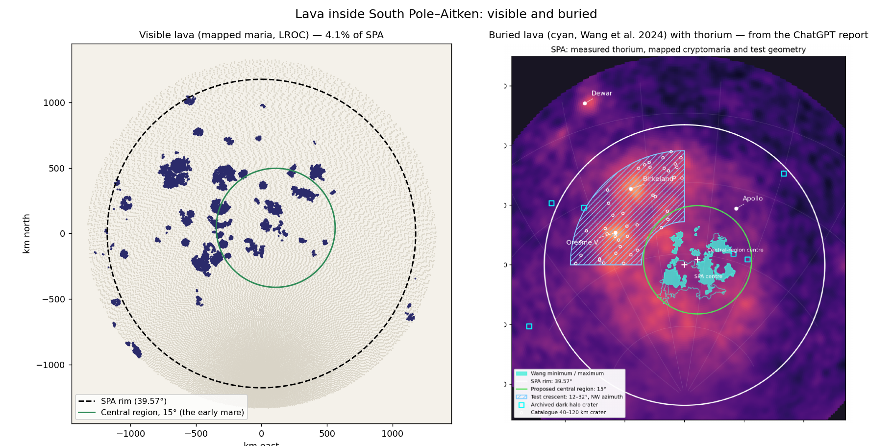
שתי החלוניות מציבות את הלבה הגלויה ואת המוסתרת זו לצד זו. על מה להסתכל: המעגל הירוק. כתמי התכלת של הלבה הקבורה נופלים כמעט כולם בתוכו, וכך גם רוב הלבה הגלויה; מחוץ למעגל, לעבר השפה, יש מעט משתיהן. זיהוי הלבה הקבורה ממסלול נעשה על פי החומר הכהה שמכתשים קטנים חופרים ומעלים מתחת לכיסוי הבהיר, ועל פי הכימיה של הכיסוי עצמו; Wang et al. (2024) נותנים קו מתאר מינימלי וקו מתאר מקסימלי, ושניהם מוצגים.
| נמדד | ערך | מקור |
|---|---|---|
| לבה קבורה בתוך המעגל המרכזי של 15° | 13.6–24.1% (היקף מינימלי / מקסימלי) | Wang et al. (2024); חיתוך מפות, ניתוח חיצוני |
| לבה קבורה מחוץ למעגל | כמעט אין | איור B9.1 |
| לבה גלויה ב-SPA כולו / ב-300 הק”מ הפנימיים | 4.1% / 14.6% | B8 |
| נפח מרבצי הלבה הגלויה בתוך SPA ובסביבתו | 129 מרבצים; עובי 31–273 מ’; נפח 1–2,630 ק”מ; במרכז SPA קטנים מאשר במכתשים הגדולים שמצפון | Pasckert et al. (2018) |
| מכתשי הילה כהה (החושפים לבה קבורה) | 2 בתוך המעגל המרכזי; קטלוג דליל, אינו מספיק להסקה | Checketts et al. (2023); Izquierdo et al. (2024) |
שתי השורות הראשונות נושאות את הממצא: שביעית עד רבע משטח המעגל המרכזי מסתירים לבה קבורה, ומחוצה לו כמעט אין. בצירוף הלבה הגלויה של אותו מעגל, הדבר סוגר חלק ניכר מן הפער שהשאיר B8. השורה הרביעית מראה שהמרבצים הגלויים קטנים ודקים, עשרות עד כמה מאות מטרים; השורה האחרונה רושמת סמן שני ובלתי תלוי, דליל מכדי להישען עליו. מכתש הילה כהה הוא מכתש קטן שפרץ דרך הכיסוי הבהיר והשליך סביב שפתו את הלבה הכהה שמתחתיו.
כרונולוגיית הגילים.
| שיטה | מה נמדד | גיל |
|---|---|---|
| ספירת מכתשים (מרחוק) | 101 מתוך 129 מרבצי הלבה הגלויה | 2.2–3.7 מיליארד שנה; שיא 3.6–3.2 |
| ספירת מכתשים, אתר Chang’e-6 | הים הדרומי של Apollo, החלק המערבי | 2.98–1.54 מיליארד שנה |
| מעבדה, Chang’e-6 (אתר אחד) | 99% משברי הבזלת | 2.8 מיליארד שנה |
| מעבדה, Chang’e-6 | שבר בזלת אחד עשיר באלומיניום בהרכב שונה, ממקור מאגמה אחר | 4.2 מיליארד שנה |
| מעבדה, Chang’e-6 | נוריטים: התכה שהתמצקה לאט | 4.25 מיליארד שנה (B7) |
אתר הנחיתה של Chang’e-6 (41.6° דרום, 206° מזרח) ממוקם כ-11.6° ממרכז הכיפה, בתוך המעגל של 15°.
לוח הזמנים נשען על שני סוגי גיל. ספירת מכתשים מתארכת משטח ממסלול: ככל שמשטח חשוף זמן רב יותר, הוא אוסף יותר מכתשים, ולכן צפיפות המכתשים נותנת גיל; היא מתארכת את ראש המרבץ, קילוח הלבה האחרון שזרם שם. גילי מעבדה נגזרים מן הדעיכה הרדיואקטיבית הנמדדת בדגימות שהוחזרו, ומתארכים את הרגע שבו השבר התמצק. בקריאה מלמטה למעלה הטבלה עוברת מן העתיק ביותר אל הצעיר ביותר: הנוריטים שהתקררו לאט, שבר בזלת עתיק אחד ממקור עשיר, הגוף העיקרי של המרבצים הגלויים, והלבה האחרונה באתר Chang’e-6. חלון הזמן של המרבצים הגלויים המתוארכים, מ-3.7 עד 2.2 מיליארד שנה, הוא ה”כ-1.5 מיליארד שנה” של פסקת הפתיחה. B15 סופר את כל החומר המותך של האזור, מן הנוריטים שהתמצקו בעומק לפני 4.25 מיליארד שנה ועד הלבה האחרונה ב-2.2 מיליארד שנה, ולכן מדבר על 2 מיליארד שנה לפחות; שני המספרים מודדים דברים שונים ואינם סותרים זה את זה. כל גילי המעבדה באים מתוך מעגל הים המרכזי.
מיפוי סהר התוריום. B7 מצא שהתוריום של SPA מרוכז בצד אחד, בגזרה המערבית-צפון-מערבית. כאן הסהר ממופה מכתש אחר מכתש, כדי לאפיין את טבעו: שכבת כיסוי הפרוסה על הקרקע, או חומר שנחפר מלמטה.
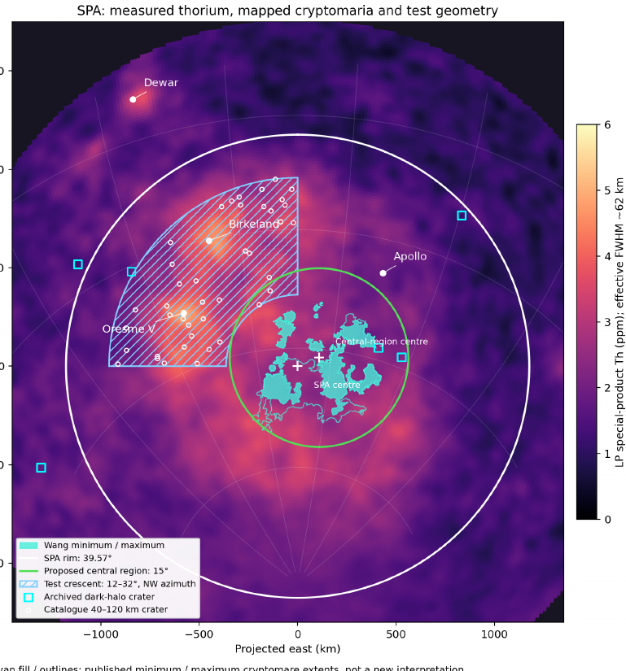
המפה מראה את הסהר כרצועה של תוריום גבוה ממערב ומצפון-מערב למרכז, 12–32° ממנו, מחוץ למעגל הלבה הקבורה. האזור המקווקו הוא אזור המבחן; 43 המכתשים שבתוכו הם המדגם המשמש להלן.
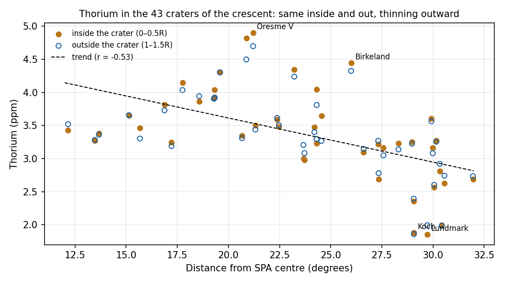
איור זה מציב את השאלה המכרעת. אילו התוריום היה שכבה עמוקה שהמכתשים חפרו והעלו, קרקעית כל מכתש הייתה עשירה יותר מן השטח שסביבו. המדידה מראה אחרת: בפנים ובחוץ הריכוז כמעט זהה. התוריום פרוס אפוא על פני השטח כשכבת כיסוי, ומכתשים שנוצרו בה מאוחר יותר רק בחשו וערבבו אותה במקומה. התוצאה השנייה היא השיפוע: הוא מקדם המתאם, הנע מ- (ירידה מושלמת) דרך 0 (אין קשר) עד (עלייה מושלמת); מתעד ירידה ברורה של התוריום עם המרחק מן המרכז, כפי ששכבת כיסוי שנפלטה ממוקד מרכזי מידלדלת ככל שהיא מתפשטת.
| נמדד | ערך |
|---|---|
| מכתשים מעל 3 ppm (בפנים / בחוץ) | 32 / 34 מתוך 43 |
| הנקודות החמות החזקות ביותר | Birkeland (4.45 ppm) ו-Oresme V (4.90 ppm); וגם Finsen, Davisson, Rumford (“נקודות חמות”, Moriarty et al. 2021) |
| קואורדינטות מאומתות | Birkeland 30.17° דרום 174.01° מזרח; Oresme V 40.75° דרום 165.39° מזרח; Dewar 2.61° דרום 165.62° מזרח (54.6° מן המרכז, מחוץ לשפה) |
בדיקה: בטבלת 43 המכתשים, 32/34 אושרו; המרחק של Birkeland, 25.98°, אושר. הקוד המלא של הניתוח החיצוני לא הורץ כאן מחדש (קובצי הגלם חסרים).
שלושה מכל ארבעה מכתשים בסהר עומדים מעל 3 ppm, בפנים ובחוץ כאחד, פי כמה מן ה-0.54–0.68 ppm של אזורי ההשוואה של B7. Dewar ממוקם הרחק מחוץ לשפה, ולהלן הוא מטופל כמקור נפרד.
מדוע הלבה הקבורה מרוכזת דווקא במעגל המרכזי? מדוע התוריום מאורגן בסהר בצד אחד, מערב וצפון-מערב, ודועך עם המרחק? ומדוע הלבה ב-SPA משתרעת על פני כ-1.5 מיליארד שנה, ממקורות שונים, בכמויות קטנות?
הספרות מפרשת את הלבה הקבורה כפעילות געשית עתיקה שכוסתה בשכבות שפוך של פגיעות מאוחרות (Whitten & Head 2015); במרכז SPA מרבצים נרחבים מתפרשים כלבה קבורה (Wang et al. 2024; Chuang et al. 2025). סהר התוריום מוגדר בספרות כחשיפה של מעטפת עליונה שכבתית או של שארית אגם ההתכה, שנחפרה מחדש בידי מכתשים צעירים (Moriarty et al. 2021; Wang et al. 2026). הפעילות הגעשית בצד הרחוק נמשכה 1.4 מיליארד שנה לפחות, ממקורות מאגמה שונים, ודעכה עם היחלשות מקורות החום הפנימיים (Li et al. 2024).
עקביות. הקריאה המקובלת תואמת את קיומה של לבה קבורה ואת הפעילות הגעשית הארוכה והדועכת.
כיווניות הסהר. הסהר החד-צדדי, בכיוון אחד, מערב וצפון-מערב, והדועך עם המרחק מן המרכז, לא נובא מראש. בהסבר המקובל הוא שכבה שנחשפה במקום מסוים; הכיוון עצמו אינו נגזר ממנגנון. פנים וחוץ המכתשים. איור B9.3 מוסיף נקודה שנייה: שכבה שנחפרה מחדש בידי מכתשים צעירים הייתה צריכה להיות עשירה יותר בתוך המכתשים מאשר סביבם, והמדידה מוצאת את השניים שווים.
הכרעת המדע: מסביר לבה קבורה, פעילות געשית ארוכה ודועכת ושכבה חשופה עשירה בתוריום מוסברות כולן בקריאה המקובלת.
הברנר ויציאותיו. הברנרים הם Imbrium (העיקרי) ו-Serenitatis (המשני), בצד הקרוב. יציאותיהם בצד הרחוק נמצאות ב-37.6° דרום, 160.0° מזרח (סמוך ל-Ingenii) וב-27.3° דרום, 198.4° מזרח (בצפון SPA, סמוך ל-Oppenheimer ול-Apollo). “הנקודה האסטרטגית” והים המרכזי ממוקמים באזור המרכזי שמדרום ליציאות (מרכז הכיפה 51.4° דרום, 196.8° מזרח; הרשומה החלשה ביותר של איור B3.2, 47.5° דרום, 193.5° מזרח, על קרקע שהוסרו ממנה הפתחים ומישורי הלבה — המינימום של B1e, על קרקע שנוקתה גם מן ההילות, הוא 45.4° דרום, 197.9° מזרח). מתחת לכל יציאה יש כיפה קטנה של קרום דק (Ingenii; Apollo). ימות פעילים פלטו חומר שנחת סביבם ויצר מכתשים: מול היציאות יש 220 מכתשים למיליון ק”מ, בנקודה החלשה ההיא 90 (111 במינימום של B1e); Oppenheimer, פתח געשי ובו מרבצים פירוקלסטיים, ממוקם 8.9° מיציאת Serenitatis. הנקודה האסטרטגית היא המקום שבו חום הברנרים נשמר זמן רב ביותר; היא מוגדרת להלן. מרבצים פירוקלסטיים הם שברי התכה שנזרקו בידי גזים בורחים, הסימן של פתח נפיצי.
הים המרכזי. בשלב הראשון הכילה הכיפה, בין 0° ל-15°, ים גדול, רגיל וסוער: הפתח. דרכו נפלט חומר שנחת במקומות שונים, לא בהכרח חזרה בתוכו. החום האזורי, שהאגס מיקד שם, התיך את גבולותיו, והים הותך יחד עם SPA כולו בדרגות שונות. בסדרה, ים הוא פתח מעל כיפת הזנה (מאמר 5): פה שדרכו עלתה התכה ודרכו נזרק חומר. האגס הוא הקצה המוארך של כדור הארץ שעליו ישב הירח בזמן שהיה מחובר; הוא הוביל את החום אל הברנר.
הלבה הקבורה היא הים עצמו. בתוך המעגל של 15° אנו רואים את הלבה הקבורה, וזהו אכן הים שנקבר, זה שפלט. שאר SPA עבר התכה ללא לבה; רק הים, ששכב בפני השטח, היה לבה, וחלק ממנו נקבר. בכך הופכת המדידה של השלב הראשון למבחן: המודל מיקם את הים במעגל של 15° מן הכיפה, והלבה הקבורה נמצאה במעגל הזה וכמעט בשום מקום אחר.
הסהר הוא מה שהים פלט, שנפל מאחור לצד אחד. החומר נורה, נפל מאחור ונחת בצד המערבי של הים. הנקודות החמות הן מקומות שבהם חומר נפל ישירות. Dewar, אגם לבה קבור מחוץ לשפה, הוא מקור בלתי תלוי. שכבת כיסוי שנפלה מלמעלה מסבירה את התוצאה של איור B9.3: התוריום פרוס על פני השטח, זהה בתוך המכתשים ומחוצה להם, ומידלדל עם המרחק מן הים שפלט אותו.
התוריום עזב את המרכז עם הנוזל. כפי שהוצג ב-B7, התקיימה זרימה לעבר הסהר, לא רק חומר נזרק, והיא הוסטה בידי הסיבוב. תוריום כמעט אינו מתאדה, אך הוא “בורח” אל הנוזל: בהתכה חלקית הוא עובר כמעט כולו אל ההתכה. במרכז, היכן שהחום היה החזק ביותר, נוצר הנוזל הרב ביותר; הנוזל זרם החוצה, הוסט לעבר צד הסהר ונשא עמו את התוריום. במרכז נותרה שארית מדולדלת (1.7 ppm), ובסהר הצטבר נוזל מועשר (4–5 ppm בנקודות החמות). בקצה הרחוק, כשהירח מחובר, כוח הסיבוב הפועל על זרימה רחבה ואיטית במדרון מתון הוא מאותו סדר גודל כמו כוח המדרון. הזרימה החוצה של התוריום והדמיית הסהר שלהלן נשמרות, ומרכז הכובד של מכתשי התוריום, 6.6° מיציאת Imbrium, נשמר כתצפית. שתי הדרכים, הפליטה דרך האוויר והזרימה על פני הקרקע, פועלות באותו כיוון, משום שאותו סיבוב מסיט את שתיהן לאותו צד.
קצב הסיבוב מן הסהר. מן הסהר אפשר להסיק את קצב הסיבוב של כדור הארץ. חומר שנזרק מגוף מסתובב נופל מאחור ביחס לסיבוב. הסיבה זהה לזו של מחליקה על הקרח הפורשת את ידיה ומאטה: חומר שנזרק החוצה, הרחק ממרכז הסיבוב, שומר על התנע הזוויתי שלו, ולכן במרחקו הגדול יותר הוא סב לאט יותר מן הקרקע שעזב; הקרקע “עוקפת” אותו מתחתיו במהלך המעוף. הוא נוחת מאחורי נקודת המוצא שלו, בצד המאסף. כשהירח מחובר, הכבידה האפקטיבית בקצה הרחוק כמעט מתבטלת, החומר נותר באוויר כ-35–40 דקות, והסיבוב מסיט את כולו לצד אחד. הקצה הרחוק שכב מעבר לקו הקורוטציה, שם הדחיפה החוצה של הסיבוב גוברת על משיכת כדור הארץ; העודף הזה מושך הרחק מן הירח ופועל נגד הכבידה של הירח עצמו, כך שחומר נזרק נופל חזרה רק לאט. ככל שזמן המעוף ארוך יותר, הקרקע מסתובבת מתחתיו יותר, והנחיתה חד-צדדית יותר. בעת הניתוק הירח היה עגול וקליפתו החיצונית נוקשה; בזמן הפליטות הוא עדיין היה מוארך לעבר כדור הארץ.
שני שלבים. השלב המחובר והסיבוב המהיר: פליטות עזות, הסהר והלבה הקבורה. לאחר הניתוק: הלחץ של כדור הארץ כבר לא הגיע אל הירח, ועמו פסקו הפליטות; הים נרגע, נשאר חם וקפא לאט במקומו, והגילים המתוארכים של 3.7–2.2 מיליארד שנה מתעדים את הקפיאה האיטית הזאת של מה שנותר שם. לכן אין סהר מאותו זמן: לאחר השחרור הירח כבר לא סב עם היממה המהירה של כדור הארץ, הקצה הרחוק שלו כבר לא שכב מעבר לקו הקורוטציה, ולא נזרק דבר שיוסט הצידה.
הנקודה האסטרטגית. הברנר פעל לפני הניתוק, מכדור הארץ, דרך הזרם לאורך האגס. הנקודה האסטרטגית היא המקום שבו החום שלו נשמר ונאגר זמן רב ביותר (קרום דק, פתחים קיימים וחום שהצטבר); לאחר הניתוק היא קפאה אחרונה, ולכן הגילים הצעירים ביותר מרוכזים בה. גם הלבה שקפאה מאוחר היא “לבה מכדור הארץ”: המעטפת של הירח היא חומר של כדור הארץ (מאמר 3, C.10). כמו מרכזו של סיר מרק סמיך שהורד מן האש ונשאר חם אחרון, המקום שבו החום נאגר הוא האחרון להתקשות.
מעט לבה, ונמדדה הצעירה ביותר. כתמי הלבה הגלויה מעטים וקטנים: כמות נמוכה של לבה שהתפרצה. הגיל שנמדד במעבדה הוא של הלבה האחרונה באתר אחד, ולבות עתיקות יותר שוכנות לצדה. דגימה שנגרפה מפני השטח לוקחת את השכבה העליונה, שהיא האחרונה שזרמה; לכן הגיל של 2.8 מיליארד שנה משקף את קץ הפעילות באותו אתר, לא את תחילתה.
ההדמיה: הסהר כמצפן לסיבוב. אם הסהר הוא חומר שנפל מאחור ביחס לסיבוב, מרחקו וחד-צדדיותו תלויים במהירות שבה סב כדור הארץ. ההדמיה בוחנת אם היממה של מצב השחרור של הסדרה נותנת סהר במקום שנצפה. חומר נזרק בזווית של 45° מן הקצה הרחוק של הירח המחובר (רדיוס 1,890 ק”מ), שמרכזו על קו הקורוטציה של מצב השחרור של הסדרה, 16,400 ק”מ ממרכז כדור הארץ, ביממה ארצית של 5.77 שעות (מאמר 2, §B.1); הירח סב עם כדור הארץ. כל הרצה זורקת 72 חבילות חומר לכל כיווני המצפן ורושמת היכן הן נוחתות. קו הקורוטציה הוא המרחק שבו מסלול חופשי נמשך בדיוק יממה ארצית אחת; גוף שם, הסב עם כדור הארץ, נע במהירות מסלולית. שבעים ושתיים חבילות, אחת בכל 5° אזימוט, מכסות כל כיוון באופן שווה, כך שכל אסימטריה במקום הנחיתה נובעת מן הסיבוב ולא מן ההטלה.
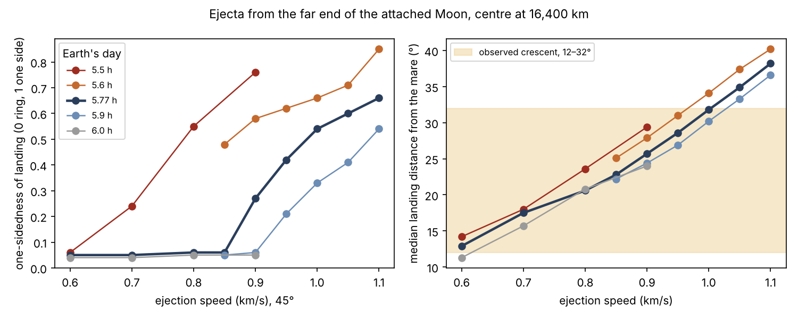
כל עקומה היא אורך אחד של היממה הארצית. משמאל, מדד החד-צדדיות נשאר קרוב לאפס במהירויות נמוכות, שבהן החבילות נופלות חזרה בטבעת שווה, ומטפס ככל שהמהירות גדלה והמעוף מתארך. מימין, מרחק הנחיתה גדל עם המהירות. סהר כמו זה שנצפה דורש את שניהם בבת אחת: נחיתה חד-צדדית בבירור ומרחק בתוך הרצועה המוצללת.
| מהירות הפליטה | מה קורה ב-5.77 שעות |
|---|---|
| 0.6–0.85 ק”מ/ש’ | טבעת סימטרית, 13–23° מן הים |
| 0.9 ק”מ/ש’ | הטבעת מתחילה להיעשות חד-צדדית (0.27); שני שלישים בצד המאסף |
| 0.95–1.0 ק”מ/ש’ | סהר: חד-צדדיות 0.42–0.54, 74–96% בצד המאסף, 29–32° מן הים |
| 1.05–1.1 ק”מ/ש’ | סהר, 35–38° מן הים, מעבר לזה שנצפה |
ביממה מהירה יותר (5.5–5.6 שעות) הסהר נוצר במהירויות פליטה נמוכות יותר,
0.8–0.9 ק”מ/ש’, 24–29° מן הים; ב-6.0 שעות ובימים איטיים יותר הוא אינו
נוצר בטווח שנבדק. קוד: sim577.py, תיקייה
B9_crescent_5.77h_2026-10-14.
הטבלה עוקבת אחר יממת מצב השחרור, 5.77 שעות, ככל שההטלה מתחזקת. במהירויות נמוכות החבילות נוחתות בטבעת שווה; מ-0.9 ק”מ/ש’ הטבעת מתחילה לנטות; ב-0.95–1.0 ק”מ/ש’ רוב החומר נוחת בצד המאסף, בסהר במרחק שנצפה; הטלות מהירות עוד יותר נושאות אותו אל מעבר לרצועה שנצפתה. כדור ארץ מהיר יותר מסובב את הקרקע יותר במהלך כל מעוף, ולכן הסהר מופיע במהירויות נמוכות יותר; כדור ארץ איטי יותר אינו מסובב אותה בקצב מספק.
הסהר נוצר במצב השחרור של הסדרה: ב-5.77 שעות החומר שנזרק בכ-1 ק”מ/ש’ נוחת בצד אחד, הצד המאסף, בחלקו החיצוני של הסהר שנצפה.
| המודל אומר | מה נמצא |
|---|---|
| הים המרכזי בכיפה, 0–15° | הלבה הקבורה שוכנת כמעט כולה בתוך המעגל של 15° (13.6–24.1% ממנו) |
| הים היה לבה; שאר SPA עבר התכה ללא לבה | לבה גלויה וקבורה מרוכזות במרכז; כמעט אין מחוצה לו |
| זרימת נוזל, שהוסטה בידי הסיבוב, נשאה גם היא תוריום אל הסהר | המרכז מדולדל (1.7 ppm), הסהר מועשר (4–5 ppm) |
| הסהר הוא חומר נפלט שנפל מאחור לצד אחד | תוריום בצד אחד, מערב וצפון-מערב; שכבה (בפנים = בחוץ), הדועכת עם המרחק () |
| סהר רק בזמן שהירח מחובר ומסתובב מהר | בהדמיה, במצב השחרור של הסדרה (5.77 שעות, 16,400 ק”מ), סהר לפליטה ב-0.95–1.0 ק”מ/ש’, נחיתה 29–32° מן הים, בשוליים החיצוניים של הסהר האמיתי (12–32°) |
| לאחר השחרור אין פליטה, ולכן אין סהר מאותו זמן | הלבה הגלויה שוכנת במרכז ומצפון לו, לא בסהר |
| פליטה בזמן החיבור; לאחר השחרור הים קפא לאט במקומו | 4.2 מיליארד שנה (מקור אחד) 3.6–3.2 (שיא) 2.8–2.2 (אחרון, מקור אחר); מרבצים קטנים |
השורות משרטטות את הסיפור לפי סדרו: היכן היה הים, מה הוא פלט, כיצד החומר הנפלט והנוזל שזרם החוצה הוסטו לצד אחד, וכיצד הפתח נרגע וקפא לאט במקומו לאחר השחרור.
הכרעת המודל: מתאים הלבה הקבורה שוכנת במעגל הים המרכזי, לסהר התוריום יש הכיוון החד-צדדי שסיבוב מהיר של הירח המחובר מקנה לחומר נפלט, וגילי הלבה מתעדים את הקפיאה האיטית של חום שנשמר זמן רב במרכז.
מה זה מראה. הים המרכזי הסוער, שהותך בדרגות שונות, מאחד את B1, B6, B7, B8 ו-B9 לחשבון אחד: פתח שפלט, הותך ונקבר, והוא המבנה מן המרכז החוצה החוזר בכל מדידה. הוא הופך תצפית מן הספרות (לבה קבורה במרכז) לניבוי שהתממש: הלבה הקבורה שוכנת בדיוק במעגל הים. ההיגררות לאחור של החומר הנפלט מספקת מנגנון לכיוון החד-צדדי של סהר התוריום, תכונה שהקריאה המקובלת אינה גוזרת.
הסהר מספק גם מבחן חדש ובלתי תלוי: במצב השחרור של הסדרה (5.77 שעות) הוא נוצר לפליטה בכ-1 ק”מ/ש’, ויממה מהירה יותר יוצרת אותו במהירויות נמוכות יותר; בכך הוא קושר את SPA למאמר 2. ההתארכות לעבר כדור הארץ בזמן הפליטות מצדיקה ירח מעוגל סביב הים בהדמיה. המעבר הדו-שלבי, מחובר ומהיר ואחר כך חופשי ורגוע, מסביר מדוע המרבצים הצעירים לא יצרו סהר, ניבוי שהמפה מאששת. הנקודה האסטרטגית מסבירה מדוע הגילים הצעירים ביותר מרוכזים באותו מקום: שם החום נשמר זמן רב ביותר וקפא אחרון, ללא ברנר שני לאחר הניתוק (קישור ל-B15). מעט לבה, כשהצעירה ביותר היא שנמדדה, מפנים אל הגילים שנמדדו מרחוק (2.2–3.7 מיליארד שנה) ואל השבר בן 4.2 מיליארד השנים כלבה של זמן הברנר. מבחן מקור המכתשים, החל על כל הימות, עובר למאמרים 6 ו-7.
מה יש בידינו עכשיו. B7, B8 ו-B9 יוצרים עכשיו חשבון אחד של קרקעית האגן. חום הברנרים, שהצטבר מתחת למרכז, חימם את האגן כולו והתיך אותו מלמטה (B7, B8); רק במרכזו העלה פתח, הים המרכזי, לבה אל פני השטח. בזמן שהירח היה מחובר וסב מהר, הים הזה פלט חומר שנפל מאחור ביחס לסיבוב אל סהר התוריום, ונוזל שעזב את המרכז הוסט באותו כיוון. החום התיך אחר כך את הים וקבר אותו, וזו הלבה המוסתרת של המעגל המרכזי. לאחר השחרור הים נרגע: הוא נשאר חם וקפא לאט במקומו, ללא סהר.
נתונים וקוד.
| נתונים | מקור |
|---|---|
| לבה קבורה במרכז SPA | Wang et al. (2024), JGR Planets (doi:10.1029/2023JE008176); נתונים: zenodo.8435503 |
| לבה קבורה, סקירות | Whitten & Head (2015), Icarus (doi:10.1016/j.icarus.2014.09.031); Chuang et al. (2025), PSJ (doi:10.3847/PSJ/ada4a6) |
| מכתשי הילה כהה | Izquierdo et al. (2024) (doi:10.1029/2023JE007867); zenodo.7823630 |
| לבה גלויה, גילים ונפחים | Pasckert et al. (2018), Icarus (doi:10.1016/j.icarus.2017.07.023) |
| בזלת של 4.2 ו-2.8 מיליארד שנה | Zhang et al. (2025b), Nature (Chang’e-6); Cui et al. (2024), Science (doi:10.1126/science.adt1093) |
| תוריום | Moriarty et al. (2021) (doi:10.1029/2020JE006589); Wang et al. (2026), EPSC2026-624; Lunar Prospector, מוצר של חצי מעלה |
| מכתשים | Robbins (2019) (doi:10.1029/2018JE005592); IAU/USGS |
| שרידות חומר הגוף הפוגע (ספרות) | Avdellidou et al. (2016) (doi:10.1093/mnras/stv2844); Zhu et al. (2019) (doi:10.1038/s41586-019-1359-0) |
| ניתוח וקוד | analysis.py,
all_craters.py, all_crater_apertures.csv ודוח
הניתוח; sim2.py, sim577.py
(הדמיית הסהר) |
פתוח. יש לחזור על הדמיית הסהר באופן בלתי תלוי, עם ירח מוארך לעבר כדור הארץ, כפי שהיה בזמן הפליטות, טווח של זוויות הטלה, ומרכז הירח מתחת לקו הקורוטציה, כפי שהיה לפני השחרור. יש למדוד ישירות את גיל הלבה הקבורה במעגל המרכזי: האם היא עתיקה כמו זמן הברנר? הסהר מסמן את הצד המאסף של אותו זמן, ויש להשוותו למערכת הצירים של אותו זמן (עבודה עתידית). מבחן מקור המכתשים ייושם על מקרה נקי (Dionysius, Mare Tranquillitatis) במאמרים 6 ו-7.
B10המסה הצפופה
בקצרה. מתחת לחציו הדרומי של אזור הים, בעומק, יש עודף מסה של ק”ג לפחות, הפרוס על פני שטח מפוזר של כ- ק”מ. במודל: חומר נושא ברזל מכדור הארץ הגיע אל בסיס SPA, כפי שהגיע למקומות רבים בירח. SPA לא היה ים פעיל: שום חומר לא הובא דרכו מלמטה, ולכן לא התקיים מנגנון שבו משהו ישקע. החומר שהיה במקום חומם, התבשל והשתנה; עם בריחת החומרים האחרים שהחום גירש, הברזל שנותר התרכז באזור הים, וקפא במקומו כשהאזור התקרר.
סעיפים B1–B9 קראו את פני השטח של SPA: את המכתשים שלו, את צורתו, את הקרום שלו ואת הלבה שלו. סעיפים B10–B14 יורדים אל מתחת לפני השטח, אל מה שהמעטפת שמתחת לאגן מכילה ואל מה שהדגימות שלו עשויות ממנו: מסה כבדה הנראית בכבידה (B10), מעטפת שאיבדה את היסודות הנדיפים שלה (B11), מעטפת ענייה בחמצן (B12), מקור לבה שנשטף (B13), וגרגירי מתכת בתוך הדגימות העתיקות ביותר שתוארכו (B14). חמשתם נקראים יחד, משום שבמודל הם מעשה ידיו של מקור חום אחד ושל אספקה אחת של ברזל מכדור הארץ. אזור הים המשמש לאורך כל הסעיפים הוא המעגל של 15° סביב מרכז הכיפה (51.4° דרום, 196.8° מזרח), שבו שכן הים המרכזי (B9).
כיצד רואים מסה נסתרת. חללית במסלול נמשכת מעט חזק יותר מעל מקומות שיש מתחתם יותר מסה. על כך נשענת משימת GRAIL: שתי החלליות שלה טסו זו אחר זו ומדדו בדיוק רב את המרחק המשתנה ביניהן, המושפע מהפרשי הכבידה המקומיים; ממנו ממופה שדה הכבידה של הירח כולו. חלק מן השדה הזה נובע פשוט מצורת פני השטח — הר מושך, שקע מושך פחות — ואת הצורה הזאת נותן LOLA, מד הגובה בלייזר של Lunar Reconnaissance Orbiter. כדי לבודד את הרכיב העמוק מסירים את השפעת התבליט הנראה, ומה שנשאר הוא הכבידה של מה שנמצא בפנים: קרום דק יותר או עבה יותר, וחומר צפוף יותר או קל יותר במעטפת. השארית הזאת היא אנומליית Bouguer (כאן, הפרעת Bouguer).
האנליזה של James et al. (2019), מכבידת GRAIL ומטופוגרפיית LOLA, זיהתה עודף צפיפות רחב ומפוזר במעטפת שמתחת ל-SPA, של ק”ג לפחות; החסם התחתון המועדף במודל שלהם נמצא עמוק יותר מ-300 ק”מ (זה אינו העומק הממוצע). המודל המקורי והנתונים שלהם שמורים בארכיון Zenodo (doi:10.5281/zenodo.2551813). כבידה הנמדדת ממסלול אומרת כמה מסה עודפת יש ובערך היכן, אך אינה קובעת את העומק באופן יחיד: אותה משיכה יכולה לנבוע מעודף קטן ורדוד או מעודף גדול ועמוק, ולכן הממצא מוגדר כחסם תחתון וכטווח של עומקים. ניתחנו את מיקומה ואת גודלה מול נקודות הייחוס של מאמר זה (איור B10.1 והטבלה שלהלן).
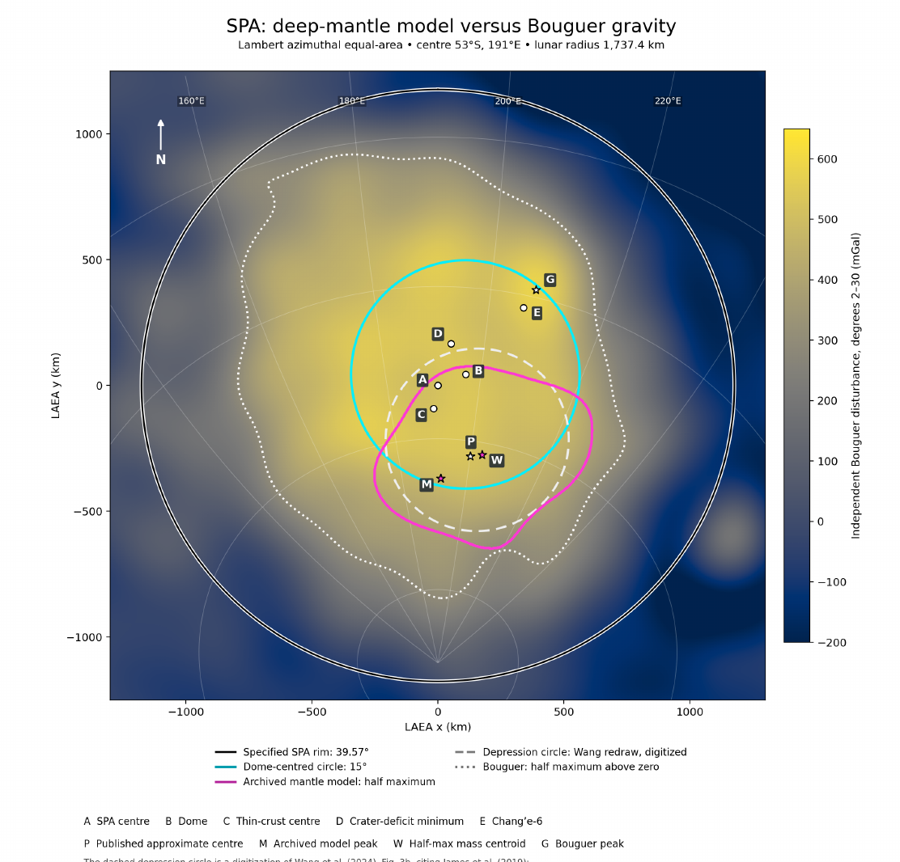
המפה משורטטת כך ששטחים שווים על הירח נראים כשטחים שווים על הדף, ולכן אפשר להשוות ישירות את גודלי קווי המתאר. “דרגות 2–30” פירושו שנשמר רק החלק הרחב של שדה הכבידה — מבנים בקנה מידה של מאות קילומטרים ויותר, קנה המידה של מסה עמוקה — והפרטים הדקים שמקורם בקרום מושמטים. “חצי מרבי” הוא קו המתאר שבו העודף יורד למחצית מערך השיא שלו: הוא מבודד את גוף המסה העיקרי משוליה החלשים. על מה להסתכל: קו המתאר במג’נטה (המסה העמוקה) יושב בתוך המעגל בציאן (אזור הים), בצדו הדרומי, ושלושת הסימנים P, M ו-W למרכזה נמצאים כולם מדרום ל-B, מרכז הכיפה. שיא הכבידה הכוללת, G, נמצא במקום אחר, לעבר Apollo; הוא כולל את הקרום ואינו המסה העמוקה.
| הגדרה | מיקום | ממרכז הכיפה |
|---|---|---|
| המרכז שפורסם (P) | 62° דרום, 200° מזרח | 10.7° (326 ק”מ), דרומה |
| שיא המודל המקורי (M) | 65.2° דרום, 191.9° מזרח | 14.0° (425 ק”מ), דרומה |
| מרכז הכובד של אזור חצי המרבי (W) | 61.6° דרום, 203.2° מזרח | דרומה |
| היקף (חצי מרבי) | 444,500 קמ”ר; רדיוס שקול 377 ק”מ (12.4°); 50–73.5° דרום |
כל ההגדרות של המרכז נופלות בתוך המעגל של 15°, בצדו הדרומי. המסה רחבה ומפוזרת, לא גוש. אם היא מתכת, היא שקולה לכדור שקוטרו 95 ק”מ; הכבידה לבדה אינה מבחינה בין מתכת לתחמוצות. בדיקה: המרחק ממרכז הכיפה אל המרכז שפורסם הוא 10.7°.
מאחר שלמסה רחבה ומרוחה אין מרכז אחד מובן מאליו, הטבלה נותנת את מרכזה בשלוש דרכים: המרכז שנמסר בפרסום, הנקודה החזקה ביותר של המודל השמור, ומרכז הכובד של השטח שבתוך קו המתאר של חצי המרבי. שלוש ההגדרות מתכנסות לאותה תשובה: המרכז נמצא 10.7°–14.0° מדרום למרכז הכיפה, בתוך המעגל של 15°. השורה האחרונה נותנת את הגודל. שטח של כ-444,500 קמ”ר הוא שטחו של עיגול ברדיוס 377 ק”מ, או 12.4° של קשת על הירח — קרוב לרדיוס של 15° של אזור הים. ההערה שמתחת לטבלה נותנת תחושה של קנה מידה: אילו נדחס העודף כולו למתכת טהורה, הוא היה ממלא כדור שקוטרו 95 ק”מ בלבד; פרוס כפי שהוא, זהו עודף דק המפוזר בנפח מעטפת רחב מאוד.
מהו החומר הכבד הזה, כיצד הגיע אל עומק המעטפת והתמקם בו, מדוע נבלם שם ולא שקע אל הליבה, ומדוע הוא שוכן דווקא מתחת לחציו הדרומי של אזור הים?
הספרות מציעה שני הסברים נפרדים: או מתכת מליבת הגוף הפוגע, שהתפזרה במעטפת ונשארה מרחפת בה; או תחמוצות צפופות מן השלב האחרון של התגבשות אוקיינוס המאגמה — אף שהריכוז שלהן דווקא מתחת ל-SPA טרם הוסבר (James et al. 2019). הקריאה הראשונה הולכת בעקבות מודל הפגיעה: גוף בעל ליבת ברזל פגע, וחלק מן הברזל שלו התערבב במעטפת הירח. הקריאה השנייה שייכת להתקררות הירח הקדום: כששכבה גלובלית של התכה (אוקיינוס המאגמה) התגבשה, המינרלים האחרונים שנוצרו היו עשירים בברזל ובטיטניום, ולכן כבדים.
מתיישב: המדע מסביר בהצלחה חומר כבד שנשאר מרחף במעטפת נוקשה. אינו מתיישב: המקור תלוי בהנחה של גוף פוגע בעל ליבה; בהסבר התחמוצות, הריכוז מתחת ל-SPA נשאר שאלה פתוחה; והמיקום בחצי הדרומי אינו נגזר.
הכרעת המדע: מסביר בחלקו המדע מסביר חומר צפוף המוחזק במעטפת נוקשה, אבל מקורו תלוי בגוף פוגע בעל ליבה או משאיר את הריכוז מתחת ל-SPA פתוח, והמיקום הדרומי אינו נגזר.
התרכז במקומו, וקפא. SPA לא היה ים פעיל (B17). שום דבר לא הובא דרכו מלמטה: שום זרם לא נשא חומר מעלה והניח לו לשקוע חזרה, ולכן לא היה מנגנון שבו משהו ישקע. החומר שהיה במקום יכול היה רק להתחמם, להתבשל ולהשתנות; היה חימום, ואחריו קירור. החום הממושך גירש חומר נדיף וגם חומר פחות נדיף (B11, B12); הברזל לא עזב, ועם בריחת החומרים האחרים הברזל שנותר התרכז. כשהחום נרגע והאזור התקרר, הריכוז קפא במקומו. התמונה היא סיר רוטב המצומצם לאורך זמן על אש קטנה: המים מתאדים ועוזבים, דבר אינו מתווסף, ומה שנשאר בסיר הולך ומצטופף.
המקור הוא ברזל מכדור הארץ. באותה תקופה קדומה לכדור הארץ לא הייתה עדיין ממש מעטפת ולא ממש ליבה; פנימו היה מעורב למדי, וחומר נושא ברזל עלה עם הזרם לאורך האגס והגיע למקומות רבים בירח, וביניהם בסיס SPA (מאמר 3, C.10; B12).
מפוזר, לא מכונס. מאחר שהריכוז התפתח במקומו, החומר אינו מתכנס לגוש אחד ודחוס; הוא פרוס על פני שטח רחב. זה מה שהכבידה מראה: עודף צפיפות רחב, לא גוש קומפקטי.
נוצר באזור הים, בצדו הדרומי. הקטרים דומים: רדיוס המסה 12.4°, לעומת 15° לאזור הים. כל הגדרה של מרכזה נמצאת 10.7°–14.0° מדרום למרכז הכיפה, בתוך המעגל של 15°, בצד הדק של האזור (B4, B5), והקרום הדק ביותר והקרקע הנמוכה ביותר של SPA נמצאים בתוך כ-230 ק”מ ממנה (B2, B3). המסה לא נעה כדי להגיע לשם; היא נוצרה במקום שבו החומר נושא הברזל שכב בבסיס האזור. מדוע המקום הזה נמצא בצד הדרומי נשאר כאן פתוח.
נבדק ונדחה. שני גורמים אפשריים למיקום הדרומי נבחנו והונחו בצד. הגאות של כדור הארץ, בזמן שהירח היה מחובר, הייתה מושכת צפונה, לעבר המישור — הכיוון ההפוך. ההתעגלות של הגוף מזיזה את העומק יחד עם פני השטח: המעבר מן הצורה הפחוסה אל הכדור נושא את המסה העמוקה ואת אזור הים שמעליה יחד, ולכן אינו יכול להפריד ביניהם.
מדוע המסה נשארה במקום שבו נוצרה. התשובה של המודל אינה נשענת על נוקשות המעטפת. SPA לא היה ים פעיל: שום חומר לא הובא מלמטה, ולכן לא היה מנגנון שיכול לשאת משהו מטה; החומר שבמקום חומם, התבשל והשתנה, והברזל התרכז כשהחומרים האחרים עזבו. לכן הריכוז נשאר במקום שבו נוצר. הטבלה שלהלן נותנת את קנה המידה של שקיעה במקום שבו מנגנון כזה קיים — בים פעיל המוזן מלמטה. היא בוחנת כמה מהר גוף צפוף היה שוקע דרך המעטפת בצמיגויות שונות, לפי חוק Stokes, הכלל לכדור השוקע לאט בנוזל סמיך: מהירות השקיעה גדלה ביחס ישר להפרש הצפיפויות ולריבוע רדיוס הגוף, ועומדת ביחס הפוך לצמיגות. צמיגות, הנמדדת בפסקל-שניות (Pa s), מודדת את התנגדותו של חומר לזרימה; המעטפת המוצקה זורמת, אבל לאט מאוד, וצמיגותה רגישה מאוד לטמפרטורה — מעטפת חמה רכה יותר בסדרי גודל רבים ממעטפת קרה.
| צמיגות המעטפת (Pa s) | גוף ברדיוס 20 ק”מ | גוף ברדיוס 50 ק”מ |
|---|---|---|
| (חם) | 1.5 מיליון שנה | 250,000 שנה |
| 150 מיליון שנה | 25 מיליון שנה | |
| 1.5 מיליארד שנה | 250 מיליון שנה | |
| (קר) | מעבר לגיל הירח | 2.4 מיליארד שנה |
הזמן לשקוע 300 ק”מ (חוק Stokes, הפרש צפיפות של 500 ק”ג/מ”ק, כבידה בעומק מ’/ש”²). הזמנים חלים על גופים הנישאים בים פעיל המוזן מלמטה, כמו Moscoviense (B17); מתחת ל-SPA, שלא היה ים פעיל, לא היה מנגנון לשקיעה.
את הטבלה קוראים מלמעלה למטה ככל שהמעטפת מתקררת: הצבע עובר מאדום (חם, רך) לכחול (קר, נוקשה). כל שורה מטה מגדילה את הצמיגות, וזמן השקיעה גדל באותו גורם: במעטפת חמה ורכה גוף ברדיוס 50 ק”מ חוצה 300 ק”מ בתוך כרבע מיליון שנה בלבד; במעטפת קרה אותו מסע נמשך מיליארדי שנים. גוף גדול שוקע מהר יותר מגוף קטן, כפי ששתי העמודות מראות. קצבי שקיעה אלה תקפים לים פעיל המוזן מלמטה, כמו Moscoviense (B17): שם חומר עלה ושקע חזרה, וגוף כבד הנישא בזרימה הזאת שוקע בקצב שהטבלה נותנת — מהר כל עוד המעטפת חמה, לאט משהתקררה. SPA לא היה ים כזה. דבר לא הובא דרכו מלמטה, ולכן דבר לא הועמד בתנועה שיכולה לשקוע; החומר שבמקום חומם, התבשל והשתנה, הברזל התרכז כשהחומרים האחרים עזבו, וכשהאזור התקרר הריכוז קפא במקומו. זה ה”קפא” של המודל, והוא עונה על השאלה מדוע המסה לא הגיעה אל הליבה: ב-SPA פשוט לא היה מנגנון שייקח אותה לשם.
| מה המודל אומר | מה נמצא |
|---|---|
| חומר כבד מתחת לאזור המחומם | עודף מסה מתחת ל-SPA, בתוך אזור הים |
| נוצר באזור הים | גדלים דומים: 12.4° לעומת 15° |
| מפוזר; התרכז במקומו וקפא; לא ים פעיל, ולכן אין מנגנון לשקיעה | עודף צפיפות מפוזר במעטפת, לא בליבה |
| בצד הדק של האזור (תצפית; הסיבה פתוחה) | בחצי הדרומי — אותו צד כמו הקרום הדק והדופן המתונה (B3, B5) |
כל שורה מציבה דרישה אחת של המודל לצד המדידה שעונה עליה: המקום (מתחת לאזור המחומם), הגודל (כמו אזור הים), הצורה והעומק (מפוזר, מוחזק במעטפת) והצד (דרום, עם הקרום הדק ביותר והקרקע הנמוכה ביותר).
הכרעת המודל: מתאים מסה כבדה מפוזרת מתחת לאזור הים, בגודל דומה, המוחזקת במעטפת ולא בליבה — זה מה שרצף המודל דורש: ברזל שהגיע מכדור הארץ, התרכז במקומו בחימום באזור שלא היה ים פעיל, וקפא בקירור; והיא שוכנת באותו צד כמו הקרום הדק ביותר והקרקע הנמוכה ביותר.
נתונים וקוד. James et al. (2019), GRL 46,
5100–5106 (doi:10.1029/2019GL082252), נתונים doi:10.5281/zenodo.2551813;
Wang et al. (2024), JGR Planets (doi:10.1029/2023JE008176); כבידת
GRAIL מסדרת GSFC, כפי שהשתמשו בה James et al. (2019) (GRGM900C,
Lemoine et al. 2014, doi:10.1002/2014GL060027; דרגה 1200, Goossens et al. 2020)
ו-LOLA (Smith et al. 2010, doi:10.1029/2010GL043751); ניתוח וקוד:
SPA_Mass_Anomaly_Report.pdf, analyze.py (תיקיית
הנתונים והקוד B10_2026-10-04).
פתוח. הסיבה לכך שהמסה שוכנת דווקא בצדו הדרומי של אזור הים, עם הקרום הדק ביותר והקרקע הנמוכה ביותר, נותרת בשלב זה פתוחה כנתון תצפיתי; מודל מספרי של חימום וקירור במקום מתחת ל-SPA, בלי זרם עולה, עוד צריך להיעשות.
B11מעטפת שאיבדה את הנדיפים שלה
בקצרה. בכל האזור המחומם של SPA היחס בין אשלגן (נדיף במידה בינונית) לתוריום (עמיד-חום) נמוך ושטוח. בבזלות של Chang’e-6 גם האשלגן וגם הברזל כבדים איזוטופית: האטומים הקלים אבדו. ברזל מתאדה רק בחום חזק; פגיעה חמה מאוד אבל קצרה, ואילו הברנר פחות חם אבל ממושך — והוא פועל על כל האזור.
B10 מצא את החומר הכבד שהגיע לבסיס של SPA. סעיף זה שואל מה עשה החום לחומר שנשאר: מה הוא גירש.
נדיף ועמיד-חום. יסודות כימיים נבדלים במידת הקלות שבה הם עוזבים חומר חם כאדים. מים, נתרן ואשלגן עוזבים בקלות ומוגדרים נדיפים (האשלגן נדיף במידה בינונית); תוריום כמעט אינו עוזב כלל ומוגדר עמיד-חום (רפרקטורי). הברזל שוכן בטווח הביניים: הוא מתאדה רק בחום חזק. אידוי דורש חום, ולכן חומר שאיבד את יסודותיו הנדיפים הוא חומר שחומם.
איזוטופים כתיעוד של אידוי. לרוב היסודות יש כמה איזוטופים, אטומים של אותו יסוד הנבדלים זה מזה רק מעט במשקלם. בעת אידוי, האטומים הקלים בורחים מעט ביתר קלות, והשארית שנותרת מועשרת באטומים הכבדים. ההסטה מבוטאת במדד , בחלקים לאלף (‰) יחסית לתקן ייחוס: K משווה את אשלגן-41 לאשלגן-39 הקל יותר, ו-Fe משווה את ברזל-56 לברזל-54 הקל יותר. ערך גבוה יותר (חיובי יותר) מעיד על חומר כבד איזוטופית, שאיבד את האטומים הקלים. שני תיעודים בלתי תלויים מדברים אפוא כאן: כמה אשלגן נשאר בהשוואה לתוריום, וכמה כבדים האשלגן והברזל שנשארו.
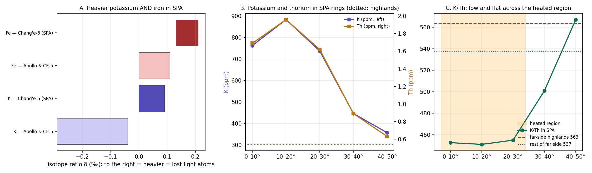
על מה להסתכל: בלוח A הנקודות הכהות (SPA) נמצאות מימין לנקודות הבהירות (הצד הקרוב) גם באשלגן וגם בברזל — דגימות SPA כבדות יותר בשניהם. בלוח C היחס נשאר ברמה נמוכה אחת מן המרכז החוצה לאורך כל האזור המחומם המוצלל, ועולה לרמת ההשוואות רק בשוליים.
| מה נמדד | ערך | מקור |
|---|---|---|
| K/Th בטבעות 0–30° | 451–455: 16%–20% מתחת לרמות (563) ולשאר הצד הרחוק (537); 567 בשוליים | Lunar Prospector GRS (B7) |
| K בבזלות של Chang’e-6 | 0 עד (Apollo ו-Chang’e-5: עד ) | Tian et al. 2026 |
| Fe באותן בזלות | 0.13–0.21 (Apollo ו-Chang’e-5: 0–0.11) | Tian et al. 2026 |
| הוצא מכלל אפשרות בידי המחברים | השפעות קרינה קוסמית וחומר של גוף פוגע | Tian et al. 2026 |
| נתרן ואשלגן בזכוכיות | התאדו והתעבו מחדש על החומר המותך | Li et al. 2026 |
| התייבשות חריגה ב-SPA, בלי איזוטופים זרים | — | מאמר בעברית (המובאה טעונה אימות) |
| אתר הדגימה | 11.6° ממרכז הכיפה, בתוך אזור הים המרכזי; 210 ק”מ ממינימום המכתשים (גרסה קודמת נתנה 320 ק”מ, המרחק מן הנקודה החלשה של איור B3.2) |
השורה הראשונה היא המפה ממסלול: ספקטרומטר קרני הגמא (GRS) של Lunar Prospector ספר את קרני הגמא שפולטים אשלגן ותוריום בפני השטח, והיחס ביניהם הוא 451–455 בכל מקום בטווח של 30° מן המרכז — בערך שישית עד חמישית פחות מאשר בחוץ. השימוש ביחס, ולא באשלגן לבדו, מנטרל חלק גדול מן ההשפעה של ערבוב פשוט של יותר או פחות מאותו חומר: שני היסודות נוטים לנוע יחד בהתכות, ולכן ירידה ביחס ביניהם מצביעה על אשלגן שהוסר. שתי השורות הבאות הן הדגימות: בזלות SPA כבדות יותר באשלגן ובברזל מכל בזלת של הצד הקרוב שנמדדה. השורה הרביעית חשובה לקריאה: Tian et al. בדקו ושללו את שני התרחישים החלופיים להעשרה איזוטופית כבדה — חשיפה לקרינה קוסמית בפני השטח, וחומר שמקורו בגוף זר. מה שנותר הוא אידוי.
מדוע משווים למה שנמצא מחוץ ל-SPA. כדי לדעת מה היה שם לפני החימום משתמשים בשכנים: אותו ירח, אותו צד רחוק, אותו קרום עתיק — בלי הברנר. אם SPA שונה מהם, ההבדל נוצר בתוכו. יש שתי השוואות (כפי שנקבע ב-B6): הרמות ושאר הצד הרחוק. באיזוטופים ההשוואה מבוצעת מול בזלות הצד הקרוב, משום ש-Chang’e-6 היא הדגימה היחידה מן הצד הרחוק. זו אינה השוואה מושלמת; השוואה נקייה תדרוש בזלת מן הצד הרחוק מחוץ ל-SPA.
מדוע היחס K/Th נמוך באופן אחיד לאורך כל האזור המחומם? ומדוע מראות הדגימות העשרה איזוטופית כבדה לא רק באשלגן הנדיף, אלא גם בברזל — שמתאדה רק בחום חזק מאוד?
הספרות מייחסת את האובדן לאידוי במהלך הפגיעה שיצרה את SPA; על פי המודל של Tian et al. (2026), אבדו כך כ-2% מן האשלגן. לאחר האידוי חלק מן האדים חזרו והתעבו על החומר (Li et al. 2026).
מתיישב: המדע מסביר בהצלחה אשלגן כבד כתוצר של אידוי. אינו מתיישב: פגיעה היא אירוע חם מאוד אבל קצר; היחס אחיד לאורך כל האזור המחומם, לא רק סביב נקודה אחת; וגם הברזל — שמתאדה רק בחום חזק וממושך — כבד. ההבדל בין שני סוגי החימום דומה להבדל בין מבער ריתוך המועבר פעם אחת מעל מחבת לבין להבה נמוכה וקבועה השוכנת מתחתיה שעות: הראשון חם יותר בשיאו, אבל השנייה מייבשת את המחבת כולה.
הכרעת המדע: מסביר בחלקו אידוי בפגיעה מסביר אשלגן כבד, אבל אירוע קצר אינו מסביר בקלות חוסר אחיד לאורך כל האזור או ברזל כבד איזוטופית.
חימום חזק, מרוכז וממושך. מים וחומרים דומים התאדו בבירור; העיקר הוא שחימום חזק, מרוכז וממושך אידה גם יסודות פחות נדיפים. מכאן שהאשלגן איבד את האטומים הקלים שלו. הברזל עצמו לא התאדה ונשאר, אבל חלון הזמן הארוך של החימום לקח חלק קטן מן האטומים הקלים ביותר שלו, והברזל שנותר כבד איזוטופית. החום הממושך השפיע על הברזל, ואולי גם על חומרים אחרים, פחות נדיפים.
על פני כל האזור המחומם (B8). האגן כולו הוא אזור מחומם אחד, ולכן היחס נמוך ושטוח לאורך כל הפנים, עם מעבר בשוליים.
בפני השטח, אידוי שיצר חללים (B6). הגזים שעזבו את החומר כלפי מעלה פתחו בו נקבוביות — הנקבוביות הגבוהה של הקרום העליון שנמצאה ב-B6.
ההתייבשות החריגה מתאימה לברנר, ולא נמצאו איזוטופים זרים.
התוריום עזב את המרכז עם ההתכה. בעוד האשלגן התאדה והברזל נשאר במקומו, התוריום נהג בדרך אחרת. הייתה זרימה לעבר הסהר — לא רק חומר שנזרק — שהוסטה בידי הסיבוב. תוריום כמעט אינו מתאדה, אבל הוא “בורח” אל ההתכה: בהתכה חלקית כמעט כולו עובר אל החומר המותך. התכה חלקית פירושה שרק חלק מן החומר נמס, כמו כשמחממים תערובת קפואה והנוזל הראשון שמופיע נושא את החומרים שנמסים בקלות הרבה ביותר; התוריום, שהאטום הגדול שלו משתלב רע בגבישים, הולך עם הנוזל הראשון הזה. במרכז, שם החום היה החזק ביותר, נוצרה הכי הרבה התכה; ההתכה זרמה החוצה, הוסטה לעבר צד הסהר ונשאה איתה את התוריום. המרכז התרוקן ונשארה בו שארית מדולדלת (1.7 ppm), ובסהר הצטברה התכה מועשרת (4–5 ppm במוקדיו). (ppm, חלקים למיליון, הם גרמים בטון.) בקצה הרחוק, בזמן שהירח היה מחובר, הכוח הסיבובי על זרימה רחבה ואיטית על פני מדרון מתון היה מאותו סדר גודל כמו כוח המדרון; זו הסיבה שהזרימה לא רצה ישר במורד אלא התעקלה לצד אחד.
מדוע התוריום הוא המדד. האטום שלו כבד (מסה אטומית 232), אבל הוא כמעט אינו מתאדה, והוא נע עם ההתכה, לא לפי המשקל. אשלגן שהתאדה משאיר את התוריום מאחור, והיחס יורד. הברזל, לעומת זאת, נשאר במקומו והתרכז כשחומרים אחרים עזבו (B10): השניים נפרדו משום שהתנהגו בדרכים הפוכות — התוריום הלך אחרי הנוזל, הברזל נשאר במקומו.
| מה המודל אומר | מה נמצא |
|---|---|
| אידוי לאורך כל האזור המחומם | K/Th 451–455 בכל הפנים, 16%–20% מתחת להשוואות |
| חימום חזק וממושך — גם הברזל | Fe כבד (0.13–0.21) |
| דגימות מאזור הים המרכזי | Chang’e-6 11.6° ממרכז הכיפה |
| התוריום עזב את המרכז עם ההתכה | מרכז 1.7 ppm; טבעת 10–20° 2.0 ppm; מוקדי הסהר 4–5 ppm |
את השורה האחרונה קוראים כמדרג החוצה: התוריום עולה מ-1.7 ppm במרכז ל-2.0 ppm בטבעת של 10–20° ול-4–5 ppm במוקדי הסהר — מרכז שהתרוקן ושוליים שהתמלאו, כפי שזרימה של התכה החוצה דורשת.
הכרעת המודל: מתאים חימום ממושך על פני האגן כולו נותן את החוסר האחיד באשלגן ואת האשלגן והברזל הכבדים איזוטופית, ואילו התוריום, שנישא בידי ההתכה מן המרכז אל הסהר, מתעד את הזרימה החוצה.
נתונים וקוד. Lunar Prospector GRS (B7); Tian et al. (2026), PNAS (doi:10.1073/pnas.2515408123); Li et al. (2026), EPSL (doi:10.1016/j.epsl.2026.119980).
פתוח. מאזן האדים: האם נפלטו אל החלל דרך הפתח, התעבו מחדש בשולי האגן (שם היחס רק חוזר לרמת הרמות), או שילוב של שניהם? כמה אבד: אובדן קטן (אחוזים ספורים) על פני שטח עצום, או אובדן גדול? יחס נמוך אינו כמות שאבדה, משום שגם ערבוב משפיע עליו. יש לצטט את המקור בעברית על ההתייבשות החריגה. מבחן ערבוב מול אידוי: מודל משותף של K, Th, FeO והמינרלוגיה, שיקבע אם נותר חוסר באשלגן התואם את חתימת האיזוטופים.
B12מעטפת ענייה בחמצן
בקצרה. מקור המעטפת של בזלות Chang’e-6 עני בחמצן זמין פי 13 בערך בהשוואה למעטפת שמתחת לצד הקרוב. במודל: חום ממושך, שחרור גזים ואידוי סילקו את החומרים נושאי החמצן, והברזל מכדור הארץ, שהגיע אל בסיס SPA, קשר את מה שנשאר מן החמצן והתרכז שם כשהחומרים האחרים עזבו. עם ההתקררות המצב ננעל.
B11 הראה שהחום גירש את היסודות הנדיפים. סעיף זה מראה עקבה שנייה של אותו חום, ואת העקבה הכימית הראשונה של הברזל של B10: המעטפת שמתחת ל-SPA איבדה חלק גדול מן החמצן הזמין שלה.
מה פירוש “מחוזר”. בחומר חם, הברזל יכול להתקיים בשתי צורות: כמתכת חופשית, או בצירוף עם חמצן כתחמוצת ברזל. איזו צורה גוברת מוכתב על ידי כמות החמצן החופשי הזמין לתגובה — הפוגסיות של החמצן, המייצגת למעשה את הלחץ הכימי שלו. חומר עם הרבה חמצן חופשי מוגדר מחומצן; חומר דל חמצן מוגדר מחוזר. גאוכימאים מודדים זאת מול קו ייחוס קבוע, קו ברזל–ווסטיט (IW): רמת החמצן שבה ברזל מתכתי ותחמוצת ברזל (ווסטיט, FeO) יכולים בדיוק להתקיים זה לצד זה. IW הוא המרחק מן הקו הזה ביחידות לוגריתמיות, כך שכל יחידה היא גורם של עשרה. ערך שלילי מעיד על סביבה דלת חמצן ביחס לקו: תנאים שבהם ברזל מתכתי יציב ואינו מחליד.
Zhang et al. (2025a) יישמו שתי שיטות בלתי תלויות — ונדיום בגבישי ספינל ואירופיום בגבישי פירוקסן — על 23 שברי בזלת מ-Chang’e-6. שתי השיטות נשענות על יסודות שמשנים את מטענם החשמלי לפי החמצן הזמין: ונדיום ואירופיום לובשים צורה שונה בהתכה מחוזרת מאשר בהתכה מחומצנת, והגבישים שצמחו בהתכה (ספינל ופירוקסן) מקבעים ומתעדים איזו צורה הייתה נוכחת. ההסכמה בין שני המדדים הבלתי תלויים הופכת את התוצאה למוצקה.
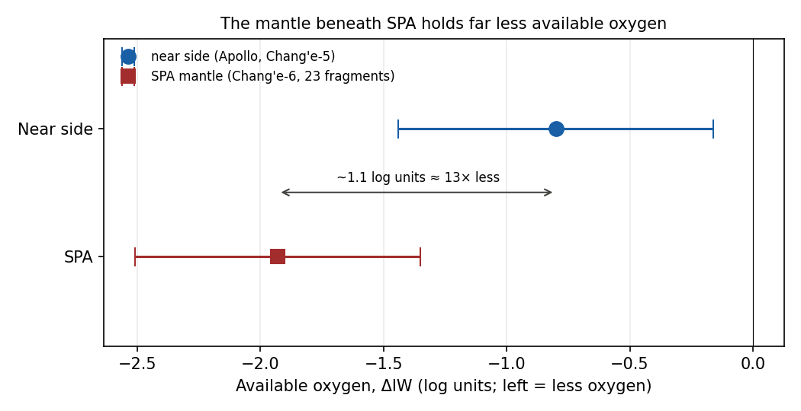
על מה להסתכל: דגימות SPA יושבות משמאל לדגימות הצד הקרוב, בערך ביחידה לוגריתמית אחת. מאחר שהסולם מעריכי, הפרש של 1.1 יחידות הוא גורם של כ-13, לא גורם של 1.1.
| היכן | IW |
|---|---|
| מתחת ל-SPA (Chang’e-6) | |
| מתחת לצד הקרוב (Apollo, Chang’e-5) |
הצבע מסמן את הכיוון: כחול למעטפת המחוזרת יותר, אדום למחומצנת יותר. ההפרש בין שני הערכים המרכזיים, לעומת , הוא הגורם של כ-13 שבאיור.
מינוח. IW מודד כמה חמצן זמין לתגובות כימיות בחומר — לא חמצן כגז. בירח הצעיר החמצן היה קשור בחומר. אתר הדגימה נמצא בתוך אזור הים, 11.6° ממרכז הכיפה. הבזלות עצמן בנות 2.8 מיליארד שנה, והן מתעדות את מצבו של מקור המעטפת שלהן ברגע ההתכה: כשמעטפת נמסה, ההתכה יורשת את פוגסיות החמצן של המקום שממנו באה, ולכן בזלת היא דגימה של מקור המעטפת שלה, שנלקחה בזמן התפרצותה.
מחקרים משלימים על אותו מקור מעטפת מצאו שהוא “יבש במיוחד” (He et al. 2025) ו”מדולדל במיוחד” (Zhou et al. 2025; B13).
מדוע המעטפת העמוקה שמתחת ל-SPA ענייה כל כך בחמצן זמין בהשוואה למעטפת של הצד הקרוב?
הספרות מציעה שני מנגנונים אפשריים (Zhang et al. 2025a): (1) התגבשות אסימטרית של אוקיינוס המאגמה — נפח גדול יותר של ברזל שקע אל הליבה מתחת לצד הקרוב, והמעטפת שם נעשתה מחומצנת; (2) שחרור של גופרית ופחמן חד-חמצני בפגיעה שיצרה את SPA, שחיזר את המעטפת שמתחתיה. המחברים כותבים שאימות אחד משני המנגנונים עדיין קשה.
מתיישב: יש שני מנגנונים אפשריים. אינו מכריע: המחברים עצמם אינם מבחינים ביניהם; שחרור גזים בזמן פגיעה מוגבל לחלון זמן קצר.
הכרעת המדע: מסביר בחלקו שני מנגנונים יכולים ליצור מעטפת מחוזרת, אבל המחברים עדיין אינם יכולים להבחין ביניהם, ושחרור גזים בפגיעה הוא אירוע קצר.
חום, שחרור גזים ואידוי — ובנוסף, ברזל. טמפרטורה ממושכת, שחרור גזים ואידוי דוחפים את החמצן לאזורים אחרים; החום מגרש את החמצן ושורף אותו. בניסוח מדויק: חום ממושך, שחרור גזים ואידוי סילקו את החומרים נושאי החמצן, והברזל קשר את מה שנשאר — שני המנגנונים מאותו מקור חום.
הברזל מכדור הארץ: ספיגת החמצן. חומר נושא ברזל מפנים כדור הארץ עלה אל הירח, וגם אל השכבות העמוקות שמתחת ל-SPA, ולברזל הזה היו השפעות תרמודינמיות: ברזל מתכתי “סופג” חמצן. ברזל מתכתי וחמצן חופשי אינם נשארים נפרדים בסביבה חמה; הברזל מתרכב עם החמצן לתחמוצת ברזל, כמו כרית צמר פלדה שנשארה במים מחלידה ולוקחת חמצן מן המים שסביבה. אספקה גדולה של מתכת מורידה אפוא את פוגסיות החמצן של החומר שסביבה.
הוא לקח את החמצן במרכז, ונשאר שם. מתחת ל-SPA לא פעל זרם עולה שיישא את הברזל מעלה ומטה; היו חימום וקירור. הברזל לקח את החמצן במקום שבו שכב, וכשהחום גירש את החומרים האחרים, הברזל שנותר התרכז, והחמצן קשור בו. זו המסה העמוקה של B10.
במרכז יש הכי מעט חמצן, והמצב ננעל. חמצן שהגיע מאוחר יותר כבר לא נספג; החומר נשאר עני בחמצן בזמן שהתקרר. משהחומר מתקשה, מצב החמצן שלו קופא.
דרישה. מה שהגיע לבסיס של SPA נשא מתכת. באותו זמן לכדור הארץ לא הייתה ממש מעטפת ולא ממש ליבה: פנימו היה מעורב למדי, וחומר נושא ברזל עלה אל הירח וגם אל בסיס SPA (מאמר 3, C.10). הנימוק ישיר. אילו החומר שבא מכדור הארץ היה סיליקט מחומצן בלבד, הוא היה מביא איתו חמצן ומעלה את ה-IW שמתחת ל-SPA מעל לזה של הצד הקרוב, לא מוריד אותו. מעטפת ענייה בחמצן פי 13 יכולה להיווצר רק מחומר שלוקח חמצן, וזו מתכת; החומר נושא הברזל שהגיע אל בסיס SPA סיפק אותה.
| מה המודל אומר | מה נמצא |
|---|---|
| מעטפת ענייה בחמצן מתחת לאזור המחומם | IW לעומת בצד הקרוב |
| הכי מעט חמצן במרכז אזור הים | אתר Chang’e-6 נמצא בתוך אזור הים — המעטפת הענייה ביותר בחמצן הידועה |
| אותו מקור חום: גם אידוי | מעטפת יבשה במיוחד; אשלגן וברזל כבדים איזוטופית (B11) |
| הברזל קשר את החמצן והתרכז במקומו | המסה העמוקה (B10) |
הטבלה קושרת את B12 לשכניו: שתי השורות הראשונות הן המדידה של הסעיף הזה עצמו, השלישית קושרת אותו לאידוי של B11, והרביעית למסה העמוקה של B10. המודל מאחד אפוא שלוש מדידות נפרדות — כבידה, איזוטופים וחמצן — וקורא אותן כמעשה ידיו של מקור חום אחד ושל אספקה אחת של ברזל.
הכרעת המודל: מתאים מקור חום ממושך אחד, שגירש את החמצן וסיפק ברזל לקשור את השאר, נותן את המעטפת הענייה ביותר בחמצן הידועה במרכז אזור הים, יחד עם המעטפת היבשה, האיזוטופים הכבדים והמסה העמוקה.
מה זה מראה. ניבוי לבדיקה: דגימות שיוחזרו בעתיד מתוך SPA אבל מחוץ לאזור הים צריכות להראות יותר חמצן זמין מ-Chang’e-6; דגימות מתוך אזור הים צריכות להראות מעט כמו Chang’e-6 או פחות. הניבוי נגזר מן המבנה המרחבי של המודל, מן המרכז החוצה: הברזל והחום רוכזו באזור הים, ולכן אובדן החמצן צריך להיות החזק ביותר שם. קשר ל-B16 (מגנטיות): גבישים זעירים של המטיט ומגהמיט — תוצרי חמצון שנוצרו באדים חולפים — נמצאו בדגימות Chang’e-6, והוצעו כנושאים של האנומליות המגנטיות בשולי SPA. במודל הם טביעת הרגל של החמצן שנדחף לאזורים אחרים; הדבר נבחן ב-B16.
נתונים וקוד. Zhang et al. (2025a), Nature Communications 16 (doi:10.1038/s41467-025-62341-5); Zhou et al. (2025), Nature 643, 371–375 (מעטפת מדולדלת במיוחד; doi:10.1038/s41586-025-09131-7); He et al. (2025), Nature (מעטפת יבשה; doi:10.1038/s41586-025-08870-x).
B13מקור מדולדל
בקצרה. הבזלת העתיקה מ-SPA (4.2 מיליארד שנה) באה ממקור עשיר בתוריום, באשלגן וביסודות אדמה נדירה; הבזלות הצעירות (2.8 מיליארד שנה) מאותו אזור באו ממקור מדולדל במיוחד. במודל: החומר הגיע מכדור הארץ עשיר, וחום מלמטה דלדל אותו בזמן שהירח היה מחובר — התכה עזבה שוב ושוב ונשאה איתה את היסודות הבורחים.
B11 ו-B12 קראו את מה שהחום גירש כאדים. סעיף זה קורא את מה שהחום לקח בדרך אחרת: בהתכה. הוא משווה שתי בזלות מאותו מקום, שנוצרו בהפרש של 1.4 מיליארד שנה, ושואל מה השתנה במקור שלהן בין שתיהן.
מינוח: מקור עשיר מול מקור מדולדל. יסודות שאינם נכנסים לגבישים — יסודות בלתי-תואמים (תוריום, אשלגן, יסודות האדמה הנדירה) — בורחים אל ההתכה בכל פעם שחומר נמס. מעטפת מדולדלת היא מעטפת שהתכה כבר עזבה אותה — שארית “שטופה”. זה כמו שקית תה: הכוס הראשונה לוקחת את הטעם החזק, וכל כוס מאוחרת יותר מאותה שקית חלשה יותר, משום שמה שמתמוסס בקלות כבר הלך. בספרות הירחית היסודות הבורחים האלה מקובצים תחת שם אחד, KREEP: K לאשלגן, REE ליסודות האדמה הנדירה, P לזרחן. מקור עשיר ב-KREEP עדיין מחזיק אותם; מקור עני ב-KREEP איבד אותם.
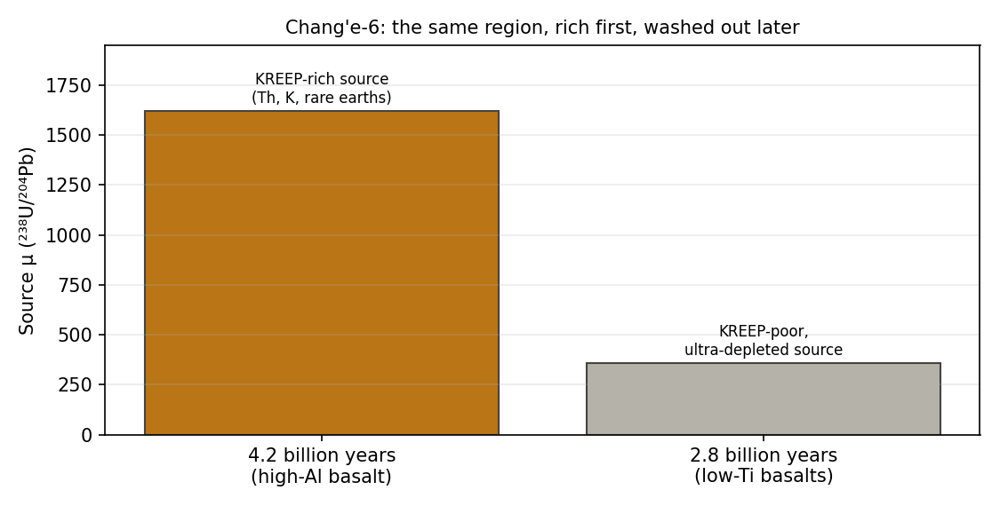
המדד שמשמש באיור, , הוא היחס בין אורניום-238 לעופרת-204 במקור. האורניום שייך ליסודות הבורחים ועוזב עם ההתכה; עופרת-204 אינה תוצר דעיכה, ולכן ריכוזה נשאר קבוע. גבוה מסמן אפוא מקור שעדיין מחזיק את יסודותיו הבורחים, ו- נמוך מקור שאיבד אותם. על מה להסתכל: אותו מקום נתן תחילה מקור בעל גבוה ומאוחר יותר מקור בעל נמוך.
| מה | מה נמצא | מקור |
|---|---|---|
| הבזלות הצעירות (2.8 מיליארד שנה) | דלדול קיצוני: Sr/Sr התחלתי 0.699237–0.699329; Nd 15.80–16.13 | Zhou et al. 2025 |
| אותן בזלות | מקור עני ב-KREEP, | Zhang et al. 2025b |
| הבזלת העתיקה ( מיליון שנה) | מקור עשיר ב-KREEP, | Zhang et al. 2025b |
| משמעות (מן הספרות) | המקור המדולדל והעמיד-חום מעכב התכה: מעט התפרצויות למרות הקרום הדק | צוות Xu (Cui et al. 2024) |
כתום מסמן את המקור העשיר, כחול את השטוף. ערכי הסטרונציום והניאודימיום בשורה הראשונה הם שני מדדים נוספים של אותו דלדול, הנקראים מדעיכה רדיואקטיבית. רובידיום, שעוזב עם ההתכה, דועך לאט לסטרונציום-87; מקור שאיבד את הרובידיום שלו מוקדם מייצר מעט סטרונציום-87, וה-Sr/Sr שלו נשאר נמוך — כמו כאן. ניאודימיום בורח עם ההתכה ביתר קלות מסמריום, הדועך לניאודימיום-143; מקור שאיבד ניאודימיום מוקדם נשאר עשיר יחסית בסמריום ומייצר ניאודימיום-143 נוסף. Nd מודד את התוספת הזאת בחלקים לעשרת אלפים מול ייחוס לא מדולדל, ולכן ערך חיובי גבוה, כאן כ-16, מסמן מקור שנשטף זמן רב לפני שהבזלות שלו התפרצו. שני ערכי ה-, 1,620 ו-360, מראים את הירידה במספר אחד: המקור המאוחר מחזיק בין רבע לחמישית מן האורניום הבורח של המקור המוקדם.
מדוע המעטפת שמתחת ל-SPA שטופה כל כך — ומדוע אותו אזור התפרץ תחילה בבזלת עשירה ורק מאוחר יותר בבזלת שטופה?
הספרות מציעה שני הסברים (Zhou et al. 2025): (1) דלדול ראשוני — המעטפת הייתה מדולדלת מלכתחילה, בהתגבשות אוקיינוס המאגמה; (2) שטיפה בפגיעה — הפגיעה שיצרה את SPA המיסה נפח גדול של מעטפת, וההתכה עזבה והשאירה שארית מדולדלת.
מתיישב: שני ההסברים נותנים מקור מדולדל. אינו מכריע: המחברים אינם מבחינים ביניהם; פגיעה היא אירוע יחיד ורגעי.
הכרעת המדע: מסביר שני ההסברים המוצעים נותנים את המקור המדולדל שנצפה, אף שהמחברים אינם בוחרים ביניהם.
עשיר מכדור הארץ, נשטף בחום. הבזלת העתיקה באה מכדור הארץ עשירה, אבל עם הזמן דולדלה בחום. החומר שהגיע בזרם לאורך האגס היה עשיר ביסודות הבורחים — זו הבזלת בת 4.2 מיליארד השנים, מתקופת הברנר.
המעטפת מדולדלת משום שהיה חום בבסיסה: שקית התה החוזרת. חום מלמטה המיס את המעטפת שוב ושוב בזמן שהירח היה מחובר; בכל מחזור ההתכה עזבה — מעלה והחוצה — ונשאה איתה את היסודות הבורחים, והשאירה שארית שטופה. זו שקית התה שמשמשת שוב ושוב: התכה אחת הייתה משאירה שארית מדולדלת בחלקה; התכה חוזרת משאירה את הדלדול הקיצוני. המקור כבר היה שטוף בזמן השחרור, והבזלות בנות 2.8 מיליארד השנים מתעדות את השארית השטופה הזאת כשקפאה לבסוף.
התכנסות היסודות בסהר התוריום (B7, B9, B11). ההתכה נושאת התוריום זרמה מן המרכז והוסטה לעבר הסהר. היסודות החסרים במקור שבמרכז אינם אבודים אפוא; הם נמצאים בסהר.
| מה המודל אומר | מה נמצא |
|---|---|
| תחילה, חומר עשיר מכדור הארץ | הבזלת בת 4.2 מיליארד השנים: מקור עשיר ב-KREEP () |
| מאוחר יותר, שארית שנשטפה בחום | הבזלות בנות 2.8 מיליארד השנים: מקור מדולדל במיוחד (; Nd 16) |
| הסדר: עשיר שטוף | אותו אזור, בהפרש של 1.4 מיליארד שנה |
| היסודות הבורחים עזבו עם ההתכה | סהר התוריום (B7, B9) |
הצבעים חוזרים על אלה של הטבלה הקודמת, עשיר (כתום) ואחריו שטוף (כחול). העיקר בשורה השלישית הוא הסדר: במקום אחד, המקור העשיר בא ראשון והשטוף מאוחר יותר, וזה הסדר שחימום מלמטה, בזמן שהירח היה מחובר, יוצר. מעטפת שהייתה מדולדלת מלכתחילה לא הייתה נותנת קודם בזלת עשירה.
הכרעת המודל: מתאים חומר עשיר שסופק מכדור הארץ ואחר כך הותך שוב ושוב מלמטה נותן את הרצף שנצפה באזור אחד: מקור עשיר ב-KREEP תחילה, שארית מדולדלת במיוחד מאוחר יותר, והיסודות הבורחים שנאספו בסהר התוריום.
מה זה מראה. קשר ל-B8: שארית שטופה ועמידת-חום קשה להתכה, ולכן לבה מאוחרת ב-SPA נדירה (כפי שמסיק גם צוות Xu). היסודות שגורמים למעטפת להימס בקלות הם בדיוק אלה שעזבו; מה שנשאר זקוק ליותר חום כדי להימס, ולכן האגן, למרות הקרום הדק שלו, מראה מעט לבה מאוחרת.
נתונים וקוד. Zhou et al. (2025), Nature 643, 371–375 (doi:10.1038/s41586-025-09131-7); Zhang et al. (2025b), Nature (doi:10.1038/s41586-024-08382-0); Cui et al. (2024), Science.
B14מתכת בנוריטים העתיקים
בקצרה. שני נוריטים בני 4.25 מיליארד שנה מכילים מתכת ברזל–ניקל ביחס ניקל/קובלט של 8.5–11. המדע קורא זאת כחומר של הגוף הפוגע; אבל ברזל מכדור הארץ, שהותך מחדש בסביבה ענייה בחמצן ועורבב עם המתכת שכבר בירח, נותן גם הוא יחס כזה. מה שיכריע הוא ההרכב האיזוטופי של המתכת.
B10 ו-B12 עקבו אחר הברזל מכדור הארץ בכבידה ובחמצן של המעטפת. סעיף זה מגיע אל הברזל עצמו: גרגירי מתכת שאפשר להחזיק ביד. זה גם המקום שבו המודל נותן את הניבוי החד ביותר שלו.
מהו נוריט. נוריט הוא התכה שהתגבשה, גסת-גרגר, העשויה בעיקר מפלגיוקלז (המינרל הבהיר של רמות הירח) ומפירוקסן דל-סידן. הנוריטים של Chang’e-6 הם שברים (clasts), קטעים ממנו שנאספו בקרקע שהוחזרה. הם התגבשו לפני מיליון שנה (Su et al. 2025; B7) — 4.25 מיליארד השנים של סעיף זה — כשבריכת ההתכה שמעל הברנר התמצקה. אירוע מאוחר יותר איפס את גיליהם ב- Ga (Su et al. 2025): אירוע שהפעיל מחדש את השעונים הרדיואקטיביים שלפיהם נקרא גילם. במודל האירוע הזה הוא הניתוק עצמו, סוף השלב המחובר (B15). גרגירי המתכת היו כלואים בתוך הנוריטים כשנוצרו. הם אפוא חלק מן הדגימה מלידתה, ולא אבק שנפל על פני השטח מאוחר יותר, וזה מה שהופך אותם למכריעים (E.7).
יחס Ni/Co כסמן מאגר. גם ניקל וגם קובלט מעדיפים מתכת על פני סיליקט — הם סידרופיליים, “אוהבי ברזל” — ולכן הם הולכים אחרי הברזל לכל מקום שאליו הוא הולך. היחס ביניהם, Ni/Co, שונה בין מאגרים ומשמש טביעת אצבע ראשונה לזיהוי המקום שממנו באה מתכת.
Su et al. (2025, National Science Review 12, nwaf103; doi:10.1093/nsr/nwaf103) מדווחים על גרגירי מתכת ברזל–ניקל בשני שברי נוריט (CE6C0100YJFM002-158 ו-CE6C0200YJFM001EGP07-16) עם Ni/Co של 8.5–11, מעל הערכים שנמדדו למתכת שכבר בירח (מתחת ל-5).
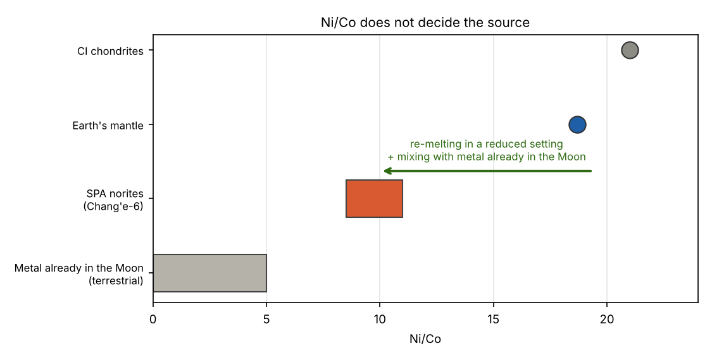
על מה להסתכל: נוריטי SPA נמצאים בטווח ביניים, בין המתכת שכבר בירח בצד הנמוך לבין כדור הארץ והמטאוריטים בצד הגבוה. החץ מראה את קריאת המודל: מתכת שהתחילה גבוה, קרוב לערך של כדור הארץ, והורדה אל הטווח הנמדד.
| חומר | Ni/Co |
|---|---|
| המתכת שכבר בירח | מתחת ל-5 |
| נוריטי SPA | 8.5–11 |
| מעטפת כדור הארץ | 18.7 (McDonough & Sun 1995) |
| מטאוריטים פרימיטיביים (CI) | 21.0 (McDonough & Sun 1995) |
| ליבת כדור הארץ | 20, מסדר גודל מטאוריטי |
הצבע מעמיק ככל שהיחס עולה. הנקודה העיקרית של הטבלה היא שלוש השורות התחתונות: מעטפת כדור הארץ (18.7), ליבת כדור הארץ (20) והמטאוריטים הפרימיטיביים (21.0) קרובים זה לזה. יחס מעל זה של המתכת שכבר בירח מסמן אפוא מתכת שעוד לא הגיעה לשיווי משקל בירח, אבל אינו מבחין בין כדור הארץ למטאוריט.
מאין באה מתכת שיחס ה-Ni/Co שלה גבוה מזה של המתכת שכבר בירח?
יחס כזה נקרא כחתימה מטאוריטית: חומר של הגוף הפוגע, שנלכד בבריכת ההתכה (Su et al. 2025). זו נקודת עימות ותיקה עם המודל.
הקריאה מחזיקה מבחינה זו שהיחס גבוה מזה של המתכת שכבר בירח. היא אינה מכריעה: גם ברזל מכדור הארץ נותן יחס גבוה, והיחס משתנה כשהמתכת מתחלקת בין מתכת, סיליקט וסולפיד. גרגיר מתכת אינו דגימה אטומה של מקורו; בכל פעם שהוא נמס הוא מחליף ניקל וקובלט עם הסיליקט והסולפיד שסביבו, והיחס שלו זז.
הכרעת המדע: מסביר מקור מטאוריטי מסביר יחס Ni/Co מעל זה של המתכת שכבר בירח.
המתכת היא ברזל מכדור הארץ, שהביאה הזרימה לאורך האגס, ושנלכד בנוריטים כשבריכת ההתכה שמעל הברנר התמצקה (B7).
אם החומר ארצי והיחס בליבת כדור הארץ הוא כ-20, האם היחס יכול היה לרדת בתנאים השונים של אותו זמן, בדרך מכדור הארץ אל SPA? הוא יכול היה, בשתי דרכים:
שיווי משקל מחודש בסביבה ענייה בחמצן. גם ניקל וגם קובלט מתחלקים אל המתכת, אבל בסביבה ענייה בחמצן יותר ברזל וקובלט נכנסים למתכת, והיחס יורד. המעטפת שמתחת ל-SPA מחוזרת מאוד (B12), והמתכת הותכה מחדש בבריכת ההתכה, בלחץ נמוך. ניקל נכנס למתכת כמעט בכל תנאי; קובלט רגיש לכמות החמצן, ומצטרף למתכת בכמויות גדולות יותר רק כשהחמצן מועט. לכן ככל שהסביבה מחוזרת יותר, המתכת לוקחת יותר קובלט, וה-Ni/Co שלה נמוך יותר.
ערבוב עם המתכת שכבר בירח. מתכת מן הברזל העמוק של כדור הארץ (20) המעורבבת בערך חצי-חצי עם המתכת שכבר בירח — שבעצמה ארצית, אבל הגיעה מזמן לשיווי משקל בירח (מתחת ל-5) — נותנת 10–12, הטווח הנמדד.
עידון: במודל הברזל בא מן הברזל העמוק של כדור הארץ בזמן שהליבה שלו עדיין התארגנה — חומר הטרום-ליבה שנכנס לאגס — ולכן היחס שלו אינו חייב להיות ערך הליבה של היום, 20.
יחס ה-Ni/Co ניתן אפוא להשגה מכדור הארץ באותה מידה כמו ממטאוריט, ולכן אינו יכול להכריע ביניהם. מה שיכול להכריע הוא תכונה שהתכה מחדש וערבוב אינם נוגעים בה: האיזוטופים.
מדוע האיזוטופים מכריעים. גופי מערכת השמש נוצרו באזורים שונים של הדסקה הקדם-פלנטרית של גז ואבק, וכל אזור קיבל תערובת מעט שונה של איזוטופים של יסודות כמו כרום, טיטניום, מוליבדן, רותניום ואוסמיום. כל גוף נושא אפוא חתימה איזוטופית של מקום הולדתו, כמו שיין נושא את טעם האדמה של הכרם שלו. כדור הארץ והירח חולקים חתימה אחת; רוב המטאוריטים נושאים חתימות שונות באופן מדיד. התכה, התקררות, שיווי משקל מחודש וערבוב עם המתכת שכבר בירח — שבעצמה נושאת את החתימה המשותפת של כדור הארץ והירח — יכולים להזיז את יחס ה-Ni/Co, אבל אינם משנים את החתימה האיזוטופית של המתכת. אם המתכת בנוריטים באה מכדור הארץ, האיזוטופים שלה יתאימו לכדור הארץ; אם באה מגוף זר, החתימה הזרה תיראה.
| מה המודל אומר | מה נמצא |
|---|---|
| מתכת מכדור הארץ בבריכת ההתכה | מתכת ברזל–ניקל בנוריטים בני 4.25 Ga |
| היחס ירד בדרך מ-20 | 8.5–11, בין המתכת שכבר בירח לערכי כדור הארץ |
| חתימה איזוטופית ארצית | עדיין לא נמדדה |
שתי השורות הראשונות מתקיימות; השלישית, המוצללת, היא הפתוחה, והיא זו שמכריעה.
הכרעת המודל: מתאים בחלקו היחס מתאים; ההכרעה נתונה בידי האיזוטופים.
פתוח. הניבוי האיזוטופי המכריע ומבחנו: האיזוטופים של כרום, טיטניום, מוליבדן, רותניום ואוסמיום של המתכת בשני השברים צריכים לשאת חתימה ארצית, בלי סטייה מטאוריטית; שיווי משקל מחודש וערבוב משנים את יחס ה-Ni/Co אבל לא את החתימה האיזוטופית, ולכן האיזוטופים קוראים ישירות את מקור המתכת. זה הניבוי החד ביותר של המאמר: המודל גורס שהירח אינו מכיל חומר מחוץ למערכת כדור הארץ–ירח מעבר לכמויות זעירות — אבק חלל דק שנמשך מאוחר יותר אל שכבת פני השטח שלו, ואולי מטאוריט אחד או שניים בארבעה מיליארד שנה — והגרגירים האלה, המתוארכים והאטומים בתוך הנוריטים שלהם מזה 4.25 מיליארד שנה, הם המקום שבו אפשר לבדוק את הטענה הזאת ישירות (חלק F). אם זה אותו ברזל כמו במסה העמוקה (B10) ובמעטפת המחוזרת (B12) נשאר פתוח; הנתונים חסרים.
B15 געשיות ממושכת
בקצרה. ב-SPA עלה חומר מותך במשך 2 מיליארד שנה לפחות, מ-4.25 ועד 2.2 Ga. במודל, הברנר פעל כל עוד הירח היה מחובר, ונרגע עם הרפיית הפחיסות, לפני השחרור; הניתוק, לפני 3.87 Ga, סגר את השלב המחובר; מכאן ואילך פעל רק חום שיורי, ברציפות ובדעיכה איטית, דרך הנקודה האסטרטגית, והנפחים קטנו.
השאלה שסעיף זה עונה עליה היא כמה זמן נשאר SPA חם, ומה שמר על חומו. הגילים נתונים ב-Ga, מיליארדי שנים לפני היום: 4.25 Ga פירושו לפני 4.25 מיליארד שנה, קרוב להולדת הירח, ו-2.2 Ga הוא יותר משני מיליארד שנה מאוחר יותר. “ממושכת” פירושו שההתכות המתוארכות של SPA אינן מתקבצות סביב רגע אחד, כפי שהיו מתקבצים תוצריה של מכה יחידה; הן פרושות מ-4.25 עד 2.2 Ga, חלון זמן של 2 מיליארד שנה לפחות, שבו חומר מותך הוסיף להגיע אל פני השטח או לקפוא ממש מתחתם. הטווח הזה מונה את כל ההתכה שתוארכה ב-SPA, מן הנוריטים העמוקים ועד הלבה הנראית הצעירה ביותר; הנתון של כ-1.5 מיליארד שנה ב-B9 מתייחס לחלק אחד ממנו, הלבה של הים המרכזי.
הגילים באים משתי שיטות מדידה בלתי תלויות, והטבלה שלהלן משלבת אותן במכוון. גיל מעבדה (תיארוך רדיומטרי) נקרא מדעיכת יסודות רדיואקטיביים בתוך הגבישים של דגימה שהוחזרה לכדור הארץ: הוא מדויק עד כמה מיליוני שנים (ה- שבטבלה), אבל שייך לשבר יחיד. גיל מספירת מכתשים נקרא ממסלול: ככל שמשטח לבה חשוף זמן רב יותר, כך הוא צובר יותר מכתשים, ולכן ספירת המכתשים על מרבד לבה נותנת את גילו; הוא פחות מדויק, אבל מספק כיסוי מרחבי רחב של מרבדים שלמים ברחבי האגן. שני מונחים חוזרים. נוריטים הם חומר גס-גרגר של פלגיוקלז ופירוקסן דל-סידן, המתגבש לאט מגוף גדול של התכה מתחת לפני השטח. KREEP הוא הקיצור הירחי לחומר עשיר באשלגן (K), ביסודות אדמה נדירים (REE) ובזרחן (P), יחד עם תוריום ואורניום. הערך הוא היחס בין אורניום לעופרת (U/Pb) במקור שממנו הותכה בזלת; גבוה מסמן מקור עשיר ב-KREEP, ו- נמוך מקור מדולדל.
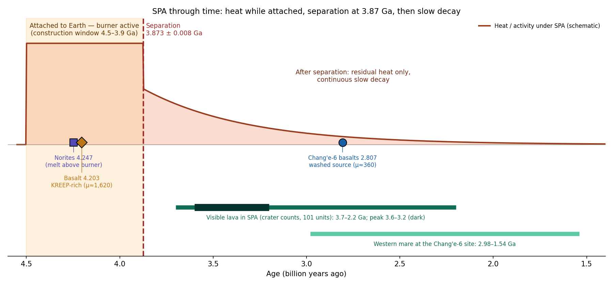
האיור נקרא משמאל (ישן) לימין (צעיר). הנקודות שמשמאל נמצאות בתוך הרצועה המוצללת, תקופת החיבור; הקו המקווקו מסמן את הניתוק; הפסים מימינו הם הלבה הנראית, הנמשכת זמן רב אחרי הניתוק, אבל במרבדים קטנים יותר. העקומה היא רק שרטוט של סדר האירועים — חום גבוה בזמן החיבור, ואחריו ירידה איטית — וגובהה ושיפועה אינם מחושבים.
| גיל (מיליארד שנה) | מה | מקור |
|---|---|---|
| נוריטים: התכה שהתמצקה לאט | Su et al. 2025, NSR (doi:10.1093/nsr/nwaf103) | |
| שבר בזלת עשיר באלומיניום, ממקור עשיר ב-KREEP () | Zhang et al. 2025b, Nature (doi:10.1038/s41586-024-08382-0) | |
| אירוע שאיפס את גילי הנוריטים | Su et al. 2025 | |
| 3.7–2.2 (שיא 3.6–3.2) | לבה נראית בתוך SPA ובסביבתו: ספירות מכתשים על 101 מתוך 129 מרבדים; עובי 31–273 מ', נפח 1–2,630 ק”מ | Pasckert et al. 2018, Icarus (doi:10.1016/j.icarus.2017.07.023) |
| 2.98–1.54 | הים המערבי באתר Chang’e-6 (ספירות מכתשים) | הספרות על Chang’e-6 |
| 99% משברי הבזלת של Chang’e-6, ממקור מדולדל () | Zhang et al. 2025b; Cui et al. 2024, Science (doi:10.1126/science.adt1093) |
פיזור הנתונים. הטבלה עוברת מן הגיל הישן ביותר בראשה אל הצעיר ביותר בתחתיתה, ושלושה דברים בה נושאים את הטיעון. ראשית, שני הגילים הישנים ביותר, 4.247 ו-4.203 מיליארד שנה, מתעדים שני נתכים מובחנים שנוצרו בהפרש של כ-45 מיליון שנה זה מזה, בשלב מוקדם בתולדות הירח. שנית, הנוריטים נושאים חתימת תאריך משנית, מיליארד שנה: אירוע חימום חזק דיו כדי להפעיל מחדש את השעונים הרדיואקטיביים שלהם, אך לא כדי ליצור אותם מחדש. שלישית, הלבה הנראית מאוחרת בהרבה, קטנה ודקה: מרבדים בעובי 31–273 מ' ובנפח של 1 עד 2,630 ק”מ כל אחד — פעילות מצומצמת ודועכת ביחס לממדי אגן שקוטרו 2,400 ק”מ. בין ראש הטבלה לתחתיתה יורד של המקור מכ-1,620 לכ-360: אותו אזור נתן התכה עשירה מוקדם והתכה מדולדלת מאוחר.
מדוע הוסיף חומר מותך לעלות באותו אזור במשך 2 מיליארד שנה לפחות, ומדוע קטנו הנפחים בהדרגה?
חום פנימי: חום שמקורו בדעיכת יסודות רדיואקטיביים בתוך הירח, הדועך עם הזמן; בצד הרחוק יש ממנו פחות. קרום דק: ב-SPA הקרום הדק ביותר והאגן העמוק ביותר, ולכן המאגמה מגיעה אל פני השטח בקלות יחסית, והפעילות חוזרת שוב ושוב לאותו אזור. מקור מדולדל: המעטפת שם מדולדלת ועמידה להתכה, ולכן יצאו רק נפחים קטנים. מקורות שונים: הבזלת העשירה (4.20 מיליארד שנה) והבזלת המדולדלת (2.81 מיליארד שנה) מוגדרות בספרות כתוצר של שני מקורות נפרדים במעטפת (Zhang et al. 2025b). 3.87 מיליארד שנה: פגיעה מאוחרת יותר, נפרדת מזו שיצרה את SPA, חיממה מחדש את הנוריטים ואיפסה את גילם (Su et al. 2025).
שתי פגיעות באותו מוקד. כדי להסביר את 4.25 ו-3.87 מיליארד שנה, המדע נדרש להניח שתי פגיעות נפרדות באותה נקודה; הפגיעה השנייה אינה מזוהה עם מכתש או אגן מסוים. מעט חום בצד הרחוק, ופעילות לאורך 2 מיליארד שנה. מקורות החום הרדיואקטיביים מרוכזים בצד הקרוב, ובכל זאת ב-SPA עלה חומר מותך מ-4.25 עד 2.2 מיליארד שנה. ההסבר נשען על הקרום הדק ועל הקלות שבהגעה אל פני השטח, ולא על מקור החום. מקור עשיר ואחריו מדולדל. ההסבר דורש שני מקורות נפרדים במעטפת מתחת לאותו אתר, אחד עשיר ב-KREEP ואחד מדולדל מאוד. גבול הנתונים: ארבעה גילי מעבדה אינם מאפשרים להבחין בין פעילות רציפה לבין אירועים נפרדים.
קרום דק הוא דרך, לא מקור חום: הוא מקל על עליית ההתכה, אך אין בו דבר המייצר את ההתכה עצמה, ובצד הרחוק האספקה הרדיואקטיבית קטנה. זו הסיבה שתשובת "הקרום הדק" משאירה את משך הפעילות בלי הסבר.
הכרעת המדע: מסביר בקושי כל ממצא מקבל הסבר, אך דרך אירועים ומקורות נפרדים: שתי פגיעות באותה נקודה, ושני מקורות במעטפת.
המודל קורא את ציר הזמן כולו כרצף אחד, המורכב משלושה שלבים: שלב חם בזמן שהירח היה מחובר, הניתוק שסיים אותו, וזנב התקררות ארוך.
בזמן החיבור: הברנר (4.5–3.87 מיליארד שנה). הנוריטים (4.25 מיליארד שנה) הם גוף ההתכה שהתגבש לאט מעל הברנר (B7); הבזלת העשירה (4.20 מיליארד שנה) היא לבה של הים המרכזי, מחומר שהגיע מכדור הארץ במצב עשיר (B9, B13). שלב החיבור ארוך: הרפיית האזור חייבת להתרחש בתוכו — לפחות 10 שנים, החסם ששימש באומדן הצמיגות, ובמודל כ-600 מיליון שנה בסך הכול, מתחילת הבליטה ועד השחרור ב-3.873 מיליארד שנה. הברנר פעל בתוך השלב הזה ונרגע לפני סופו.
3.873 מיליארד שנה: הניתוק עצמו. הברנר נרגע עם הרפיית הפחיסות; הניתוק חתם את שלב החיבור, והאזור התקרר והתכווץ (B2, B3). איפוס השעונים של הנוריטים הוא סימנו של אירוע זה בדגימות, והוא חופף את סוף חלון הבנייה (3.9 מיליארד שנה), כפי שהמודל דורש.
אחרי הניתוק: חום שיורי בלבד. החום שנאגר מתחת ל-SPA, ולא ברנר שני (B9: ברנר מכדור הארץ, ואחריו הנקודה האסטרטגית — קרום דק, פתחים קיימים, חום שיורי). גוף חם גדול מתקרר מבחוץ פנימה, ופנימו שומר על חומו זמן רב, כמו קיר אבן עבה שנחשף לאש ממושכת: גם לאחר שהאש כבתה הוא מוסיף לשמור על חומו זמן רב, ומתקרר בהדרגה משוליו החיצוניים פנימה. SPA חומם מלמטה לאורך כל שלב החיבור, ולכן אגר מאגר חום גדול.
רציף, בדעיכה איטית. המקור התדלדל עם הזמן (B13), ולכן הנפחים קטנו. כל התכה הוציאה מן המקור את היסודות הנמסים ראשונים, כך שההתכה הבאה התפתחה ממקור עני יותר ובנפח קטן יותר: זו הירידה של מכ-1,620 לכ-360.
מדוע השיא הנראה הוא ב-3.6–3.2 מיליארד שנה ולא מיד אחרי 3.87. שום לבה לא זרמה על פני השטח של SPA בפרק הזמן הזה. ה”לבה" הקבורה של B9 היא החומר שבין הברנר לבין החלק החיצוני של SPA, שהחום התיך במקומו, ובתוכו הים המרכזי, שחומם עם האזור ונמחק; היא שוכנת מתחת לפני השטח ומעולם לא נשפכה עליהם. אחרי הניתוק היא קפאה לאט, מבחוץ פנימה, ואת פרק הזמן 3.87–3.6 מיליארד שנה קוראים כקפיאה האיטית הזאת. גיל מספירת מכתשים אפשר לקרוא רק על משטח שעדיין חשוף; לחומר שקפא מתחת לפני השטח אין מכתשים משלו, והוא נושר מן הספירה.
רצף אחד ומקור אחד. 4.25 ו-3.87 מיליארד שנה הם שני שלבים של אותו תהליך, ברנר ואחריו ניתוק, ולא שתי פגיעות; והמקור העשיר והמדולדל הם אותו מקור, שהתחיל עשיר (חומר מכדור הארץ) והתדלדל בחום (B13).
כל שורה בטבלה מציינת ציפייה אחת של המודל מימין, ואת המדידה שעונה עליה משמאל.
| מה המודל אומר | מה נמצא |
|---|---|
| התכה ולבה בזמן הברנר | 4.25 מיליארד שנה (נוריטים), 4.20 מיליארד שנה (בזלת עשירה) |
| אירוע בסוף חלון הבנייה (3.9 מיליארד שנה): הניתוק, לא פגיעה שנייה | מיליארד שנה |
| פעילות מאוחרת באותה נקודה, בנפחים הולכים וקטנים | 3.7–2.2 מיליארד שנה, מרבדים דקים וקטנים; 2.8 מיליארד שנה באתר בתוך אזור הים |
| המקור התדלדל | ב-4.20 מיליארד שנה ב-2.8 מיליארד שנה |
| החומר הקבור הותך במקומו וקפא לאט; דבר לא זרם על פני השטח | לבה קבורה במרכז (13.6%–24.1% מן המעגל של 15°, B9) |
הכרעת המודל: מתאים כל אחת מחמש הציפיות של המודל נענית בגילים ובמרבדים שנמדדו.
מה שיש בידינו עכשיו: הגילים של SPA יוצרים רצף אחד — חימום בזמן החיבור, הניתוק ב-3.873 מיליארד שנה, וזנב התקררות של נפחים הולכים וקטנים — ולא שתי מכות ושני מקורות שאינם קשורים זה לזה.
פתוח. ניבוי: החומר הקבור במעגל המרכזי קפא לאט אחרי הניתוק, וגיליו, 3.87 עד 3.6 מיליארד שנה, רושמים את הקפיאה הזאת; החלק ששייך לים המרכזי עתיק יותר, מתקופת הברנר. ובאופן כללי יותר, ב-SPA אין לבה צעירה מזנב הרשומה, מתחת ל-1.5 מיליארד שנה.
B16 המגנטיות של SPA
בקצרה. מרכז SPA כמעט נטול מגנטיות; טבעת ממוגנטת מקיפה אותו, וכל המגנטיות החזקה נמצאת בצפון, במערב ובצפון-מערב: בצד המאסף, אותו צד כמו סהר התוריום, ליד Ingenii — באותו צד, לא באותו מקום. במודל, החום מחק את המגנטיות במרכז; הברזל והחומר הכבד נישאו עם הנוזל, בכיוון הסיבוב, אל הצד המאסף ונותרו שם, ולכן המגנטיות נמצאת שם.
לירח אין כיום שדה מגנטי כלל-ירחי, אבל חלקים מן הקרום שלו ממוגנטים: הם מחזיקים שדה חלש משלהם, שהוקפא בגרגרים נושאי ברזל כשהתקררו. כתמים אלה נקראים אנומליות מגנטיות בקרום. הם חשובים כאן משום שהם מתעדים היכן נמצא ברזל ממוגנט בקרום, והיכן חום מחק אותו מאוחר יותר. סעיף זה שואל רק היכן נמצא החומר הממוגנט סביב SPA. כיצד החומר מוגנט מלכתחילה — באיזה שדה התקרר — היא שאלה נפרדת, שנשארת לעבודה עתידית.
מודל השדה T2015_449 (Tsunakawa et al. 2015; Wieczorek 2018), מסונתז בגובה 25 ק”מ. בדיקת שחזור: ב-44.8° דרום 198.4° מזרח השדה הוא 0.85 ננו-טסלה, וחישוב בלתי תלוי נותן 0.852 ננו-טסלה .
השדה נמדד ממסלול, במגנטומטרים על חלליות (Lunar Prospector ו-Kaguya) העוברות מעל פני השטח. מודל השדה מצרף את המעברים האלה למפה אחת ומחשב ממנה את השדה בכל מקום באותו גובה מעל פני השטח, כאן 25 ק”מ, כך שכל מקום מושווה במרחק שווה ממקורותיו. השדה נתון בננו-טסלה (nT), מיליארדית טסלה; שדות הקרום של הירח הם כמה ננו-טסלה עד כמה עשרות ננו-טסלה, חלק זעיר מן השדה על פני כדור הארץ. הוא עוצמת השדה, בלי תלות בכיוונו. בדיקת השחזור מראה שהחישוב שלנו של המודל שפורסם נותן אותו ערך כמו חישוב בלתי תלוי, 0.85 לעומת 0.852 ננו-טסלה, בנקודת בדיקה סמוך למינימום המכתשים.
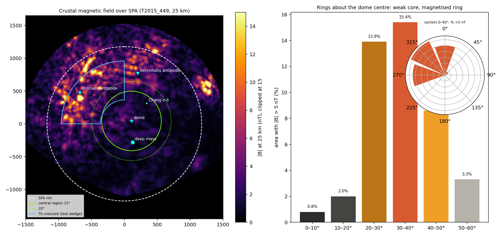
במפה השמאלית, פנים המעגלים המרכזיים כהה, כמעט ריק משדה, ואילו הכתמים הבהירים מתקבצים למעלה משמאל, בצפון ובמערב. הגרף שמימין הופך זאת למספרים, ושתי הטבלאות שלהלן נותנות אותם. המדד פשוט: חלק הקרקע שעליה השדה עולה על 5 ננו-טסלה, רמה גבוהה בהרבה מן הרקע החלש של המרכז. המרחקים נתונים כזוויות על פני הירח ממרכז הכיפה (51.4° דרום, 196.8° מזרח; B5).
| טבעת סביב מרכז הכיפה | שטח מעל 5 ננו-טסלה |
|---|---|
| 0–10° | 0.8% |
| 10–20° | 2.0% |
| 20–30° | 13.8% |
| 30–40° | 14.4% |
הטבלה הראשונה נקראת מן המרכז החוצה. ב-10° הפנימיות, פחות מאחוז אחד מן הקרקע ממוגנט מעל 5 ננו-טסלה; בטבעת הבאה, שני אחוזים; מעבר ל-20°, כשביעית מן הקרקע. המרכז כמעט חשוף, והקרקע הממוגנטת מתחילה בטבעת סביבו.
| כיוון | מעגל 0–40° | טבעת 20–40° בלבד |
|---|---|---|
| צפון | 25.2% | 31.7% |
| מערב | 26.6% | 34.1% |
| צפון-מערב | 31.5% | 42.2% |
| מזרח, דרום-מזרח, דרום | 0% | 0% |
חלק השטח שבו ננו-טסלה בגובה 25 ק”מ.
הטבלה השנייה מחלקת את אותו שטח לפי כיוון. הקרקע הממוגנטת אינה פרושה באופן שווה סביב הטבעת: בצפון-מערב, 42.2% מן הטבעת מעל 5 ננו-טסלה; במזרח, בדרום-מזרח ובדרום — כלום. המגנטיות נמצאת בצד אחד.
ערכים נקודתיים: מרכז הכיפה 3.8 ננו-טסלה; מינימום המכתשים 1.9 ננו-טסלה; Chang’e-6 0.9 ננו-טסלה; שיא של 22 ננו-טסלה ליד Mare Ingenii והנקודה הנגדית ל-Imbrium. הצד: במבט ממרכז הכיפה, הצד המוביל הוא מזרח-צפון-מזרח (76.7°), ולכן המגנטיות החזקה נמצאת בצד המאסף. על גוף מסתובב, הצד המוביל של נקודה הוא הצד הפונה אל כיוון הסיבוב, והצד המאסף הוא זה שמאחוריו, כמו אצל נוסע על קרוסלה מסתובבת: הצד המוביל לפנים, הצד המאסף מאחור. הצפון, המערב והצפון-מערב, שבהם נמצאת כל המגנטיות החזקה, נמצאים בצד המאסף.
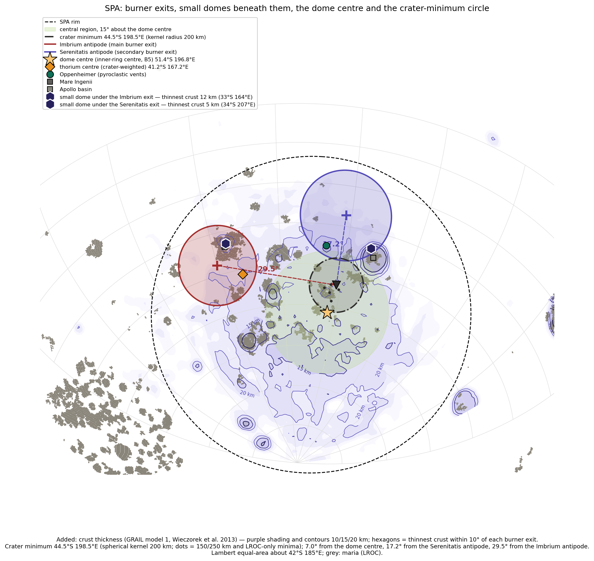
האיור ממקם את המגנטיות בין שאר המרכזים של המאמר. השדה החזק ביותר נמצא ליד Ingenii, מעל היציאה של הברנר העיקרי, וצפונית למרכז התוריום: שיאי המגנטיות נמצאים כ-8° צפונית למרכז התוריום. התוריום והמגנטיות נמצאים באותו צד של SPA, הצד המאסף, אבל לא באותו מקום.
מדוע המרכז, המקום החם ביותר, כמעט נטול מגנטיות, ומדוע כל המגנטיות החזקה נמצאת בצד אחד, אותו צד כמו התוריום?
ברזל הגוף הפוגע: פגיעה אלכסונית מן הדרום פיזרה ברזל מתכתי על השפה הצפונית (Wieczorek et al. 2012, Science 335). הגברה בנקודות הנגדיות לאגנים גדולים בצד הקרוב (Lin et al. 1988; Mitchell et al. 2008; Hood et al. 2013). במרכז, חום ההתכה מחק את המגנטיזציה (מעל טמפרטורת Curie). טמפרטורת Curie היא נקודת הסף שמעליה מינרל מגנטי מאבד את המגנטיזציה שלו; לברזל מתכתי היא כמה מאות מעלות, ולכן קרקע שחוממה מעבר לה והתקררה שוב אינה שומרת שום עקבות של המגנטיזציה הקודמת שלה. נושאי המגנטיזציה בשולי SPA: גבישי המטיט/מגהמיט בדגימות Chang’e-6 (Liu et al. 2025). השדה הממגנט: דינמו ירחי (Weiss & Tikoo 2014).
ההסבר דורש פגיעה בכיוון מסוים וגוף עשיר בברזל: הנחות שנבחרו כדי להתאים להתפלגות. הצירוף של מגנטיות, תוריום ומערבולות בהירות באותו צד אינו נגזר ממנגנון אחד. מקור האנרגיה לשדה חזק מליבה קטנה אינו פתור.
הכרעת המדע: מסביר בחלקו המרכז החלש והשפה החזקה מקבלים כל אחד הסבר, אבל הצד והחפיפה שלו עם התוריום נשענים על הנחות שנבחרו, ומקור השדה נשאר לא פתור.
המודל עונה על שני חצאי החידה — המרכז החשוף והטבעת החד-צדדית — באותו חום ובאותו סיבוב שיצרו את סהר התוריום (B9).
המרכז. החום מחק את המגנטיות. המרכז החם התקרר אחרון ותיעד מאוחר, בשדה חלש. המרכז נותר אפוא נטול שדה משתי סיבות משולבות: המגנטיזציה שהייתה בו חוממה מעבר לטמפרטורת Curie, וחלק גדול מן הברזל הקרוב לפני השטח, שיכול היה לשאת מגנטיזציה חדשה, נישא משם עם הזרימה (להלן).
הצד. החומר הכבד נע אל הסהר, בכיוון הסיבוב, ונותר שם. הברזל נישא עם הנוזל אל הצד המאסף — הצפון, המערב והצפון-מערב — כמו התוריום, ושם המגנטיות חזקה. המודל מבסס את הובלת התוריום עם הנוזל על תצפית עצמאית: ליד היציאה של Serenitatis אין ריכוז תוריום (ממוצע 3.01 ppm, מקסימום 3.23 ppm, לעומת 4.27 ppm ליד היציאה של Imbrium); אילו בא התוריום ישירות מן הברנרים, היה עליו להתרכז גם שם.
הפרדת המוקדים (ברזל מול תוריום). הברזל והתוריום הוזזו באותה זרימה, ולכן הם חולקים את אותו צד של האגן. אבל הברזל כבד ונותר מאחור היכן שהזרימה האטה, ואילו התוריום נשאר בנוזל שהתפשט רחוק יותר; זו הסיבה ששניהם נמצאים באותו צד ולא באותו מקום.
מקור הברזל: פנים כדור הארץ, דרך האגס (B10, B12, B14).
מה מגנט אותו: נשאר פתוח לעבודה עתידית. מאמר זה ממקם את הברזל; השדה שבו התקרר אינו חלק מן הטיעון שלו.
תצפית: השיא (22 ננו-טסלה) נמצא ליד Ingenii, שנמצא גם ליד היציאה של Imbrium.
| מה המודל אומר | מה נמצא |
|---|---|
| המרכז נמחק | 0–10°: 0.8%; 10–20°: 2.0% |
| הברזל נע אל הצד המאסף ונותר שם | צפון/מערב/צפון-מערב 32–42% (טבעת), מזרח/דרום 0%; הצד המאסף |
| אותו צד כמו התוריום | סהר התוריום: צפון-מערב |
| ברזל מפנים כדור הארץ | B10, B12, B14 |
הכרעת המודל: מתאים המרכז שנמחק, המגנטיות החזקה בצד המאסף והחפיפה שלה עם סהר התוריום נובעים מתהליך אחד: ברזל וחומר כבד שנישאו עם הנוזל ונותרו שם.
נתונים וקוד. מודל השדה T2015_449 (Tsunakawa et al. 2015, doi:10.1002/2014JE004785; Wieczorek 2018, doi:10.1002/2017JE005418; Zenodo 3873648); Wieczorek et al. 2012 (doi:10.1126/science.1214773); Weiss & Tikoo 2014 (doi:10.1126/science.1246753); Zhang et al. 2025 (Nature Communications); קוד: field.py, run.py ו-B25_spa.npz (תיקייה B16_2026-10-05); בדיקה בלתי תלויה: הדוח Lunar_Magnetism_Test.pdf.
B17המערבולות הבהירות
בקצרה. בתוך SPA המערבולות הבהירות (swirls) נמצאות ב-Mare Ingenii, בתוך סהר התוריום, מעל שדה מגנטי חזק. ב-Mare Moscoviense יש זרימות לבה, אבל אין שדה חזק ואין מערבולות. במודל, מערבולת בהירה היא זרימה של שני חומרים שקפאו לפני שהתערבבו — ברזל מלמטה, אלומיניום וסיליקה מלמעלה. Moscoviense היה ים פעיל: הברזל שלו יכול היה לשקוע, והוא פשוט קפא. SPA לא היה ים פעיל: דבר לא הובא מלמטה, ולכן לא היה מנגנון שבו הברזל שלו ישקע; הוא חומם והתקרר, והברזל שלו נשאר והתרכז כשחומרים אחרים עזבו.
סעיף זה נובע ישירות מ-B16: המערבולות הבהירות הן התכונה היחידה של פני הירח שאפשר לראות בעין ושנמצאת רק היכן שהקרום ממוגנט חזק. לכן הן מראות, על פני השטח, היכן נמצא הברזל הממוגנט.
מה הן. כתמים בהירים ומפותלים, ללא תבליט, המתחלפים עם נתיבים כהים בקנה מידה של 1–5 ק”מ; מכתשים צעירים חוצים אותם בלי לשבור את הדפוס. כל מערבולת בהירה מתלכדת עם אנומליה מגנטית בקרום. תמונות: LROC, The Swirls of Mare Ingenii; Reiner Gamma (NASA SVS).
מערבולת בהירה נראית כמו דפוס של חלב שנמזג לקפה ונשאר בלי ערבוב: רצועות ולולאות חיוורות ומתעקלות, עם נתיבים כהים ביניהן, מצוירות על קרקע שטוחה. "ללא תבליט" פירושו שלדפוס אין גובה משלו: זה דפוס של בהירות, לא של גבעות ועמקים. משום שמכתשים צעירים חותכים אותו והדפוס נמשך בצדם השני, הוא אינו שכבה שמכתש יחיד יכול לשבור; הוא קשור למשהו שנמצא מתחת לפני השטח לאורך כל האזור.
השדה מעל SPA מוצג באיור B16.1: Ingenii נמצא בתוך הסהר, ליד הנקודה הנגדית ל-Imbrium.
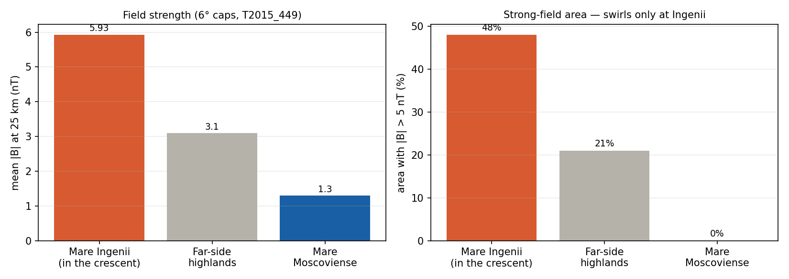
פרוטוקול המבחן והביקורת. ההשוואה בנויה כמבחן עם ביקורת, כדי לבחון אם עצם נוכחותן של זרימות לבה יוצרת שדה מגנטי. Ingenii הוא ים בצד הרחוק עם זרימות ומערבולות; Moscoviense הוא ים בצד הרחוק עם זרימות משלו; רמות הצד הרחוק הן קרקע בלי ים. אילו זרימה לבדה הייתה יוצרת שדה חזק, שני הימות היו דומים. הם אינם דומים.
| מקום | זרימת לבה | שדה ממוצע | שיא (ננו-טסלה) | שטח ננו-טסלה | מערבולות |
|---|---|---|---|---|---|
| Mare Ingenii (בתוך הסהר; 27.5° ממרכז SPA, בכיוון 304°) | 5.9 ננו-טסלה | 22.7 | 48% | ||
| רמות הצד הרחוק (10° צפון 180° מזרח) | — | 3.1 ננו-טסלה | 12.3 | 21% | — |
| Mare Moscoviense | 1.3 ננו-טסלה | 3.6 | 0% |
בדיקת שחזור: סינתזה של מודל T2015_449 (Tsunakawa et al. 2015; Wieczorek 2018) נותנת 0.85 ננו-טסלה ב-44.8° דרום 198.4° מזרח, כמו ב-B16 . Moscoviense: לבות עשירות בברזל ובטיטניום, הקרום הדק ביותר על הירח, ליתולוגיות של אוליבין–פירוקסן–ספינל (Kramer et al. 2008; Bhatt et al. 2018, doi:10.1016/j.icarus.2017.10.009; Kramer et al. 2010).
הטבלה נקראת לאורך העמודות. ל-Ingenii שדה ממוצע של 5.9 ננו-טסלה, וכמעט מחצית מן הקרקע שלו ממוגנטת מעל 5 ננו-טסלה; ל-Moscoviense, למרות זרימות הלבה והקרום הדק ביותר על הירח, 1.3 ננו-טסלה, ושום חלק מן הקרקע שלו אינו חוצה את סף 5 הננו-טסלה — חלש אפילו מן הרמות שאין בהן ים כלל. מבין השלושה, רק ל-Ingenii יש מערבולות.
דינמיקת הנוזל הצמיג ומספר Ekman. סיבוב וזרימה צמיגה: מספר Ekman, ללבה בצמיגות של 100 פסקל·שנייה, בשלושה קני מידה של זרימה. ערך מתחת ל-1 פירושו שהסיבוב מסיט את הזרימה. מספר Ekman משווה בין שתי השפעות על נוזל נע: החיכוך הפנימי של הנוזל (הצמיגות שלו), השומר על הזרימה ישרה בכיוון שבו היא נדחפת, והסיבוב של הגוף שמתחתיה, המכופף את הזרימה הצידה. הוא גדל עם הצמיגות וקטן עם סיבוב מהיר יותר ועם ריבוע גודל הזרימה. בטבלה הדבר ניכר כירידה פי מאה בכל צעד של פי עשרה בקנה המידה, וכירידה ככל שהסיבוב נעשה מהיר יותר, מן השורה התחתונה אל העליונה.
| סיבוב | 100 מ' | 1 ק”מ | 10 ק”מ |
|---|---|---|---|
| מחובר, 5.77 שעות | 0.012 | 0.0001 | 0.000001 |
| פעם ביומיים | 0.10 | 0.001 | 0.00001 |
| פעם ב-5 ימים | 0.24 | 0.002 | 0.00002 |
| היום, 27 ימים | 1.3 | 0.013 | 0.0001 |
שורת החיבור משתמשת ביום כדור הארץ בשחרור של הסדרה, 5.77 שעות (מאמר 2, §B.1; גרסה קודמת השתמשה ב-6.6 שעות ונתנה 0.013 ב-100 מ'). המספר גדל ביחס ישר לאורך היום, ולכן שאר השורות נגזרות מן הראשונה; גרסה קודמת נתנה 0.09 ו-0.0009 ליומיים ו-0.23 לחמישה ימים. החישוב מראה שכל הערכים קטנים מ-1 מלבד אחד: זרימה ברוחב 100 מ' תחת הסיבוב האיטי של היום. בזרימות של קילומטר ומעלה, הסיבוב מכופף את הזרימה בכל קצב סיבוב שבטבלה, משלב החיבור ועד היום.
מדוע המערבולות הבהירות של הצד הרחוק מתקבצות סביב SPA, ובתוכו דווקא בסהר, ומדוע ים אחר, עם זרימות לבה משלו, אין בו מערבולות?
הספרות מייחסת את הבהירות של המערבולות להסטה מגנטית של רוח השמש: השדה המגנטי של הקרום מסיט את רוח השמש, ומתחתיו הקרקע מתבלה לאט ונשארת בהירה. לפי המודלים, שדה השוכב לאורך הקרקע נותן את הלולאות הבהירות, ושדה אנכי נותן את הנתיבים הכהים. כדי להסביר את עוצמת השדה, מקורותיו חייבים להיות צרים ורדודים, דייקים או צינורות לבה, וממוגנטים חזק בהרבה מכל דגימת Apollo (Hemingway & Tikoo 2018). השערות חלופיות מייחסות את הדפוס למיון של אבק דק או לפגיעת שביט.
רוח השמש היא זרם של חלקיקים טעונים מן השמש. היכן שהיא פוגעת בקרקע החשופה, היא מכהה את פני השטח בהדרגה ("בליה חללית"); היכן ששדה מקומי מסיט אותה, הקרקע נשארת רעננה ובהירה, כפי שחלק של רצפה מתחת לשטיח נשאר לא דהוי בחדר מואר שמש. דייק הוא יריעה אנכית של חומר שהיה מותך ושחתך את דרכו מעלה דרך הקרום; צינור לבה הוא תעלה שבה זרמה לבה מתחת לגג קפוא.
מקור הברזל. מניין בא הברזל המתכתי, הממוגנט חזק יותר מכל חומר שנדגם, אינו מוסבר. הפיזור הגיאוגרפי. מדוע המערבולות של הצד הרחוק מתקבצות סביב SPA, ומדוע ימות אחרים עם זרימות (Moscoviense) חסרים שדה ומערבולות, אינו נגזר.
הכרעת המדע: מסביר בחלקו מנגנון הבהירות מוסבר; מקור הברזל ומיקומו אינם מוסברים.
המודל אינו נכנס למגנטיות: ההסבר של הבהירות בשדה המגנטי וברוח השמש (STEP 3) שייך לספרות ואינו נלקח כאן. המודל מפרש את המערבולות לפי החומרים שלהן: ממה עשויים הבהיר והכהה, כיצד הם סודרו, ומדוע הם נמצאים כאן.
מה הם הבהיר והכהה. המודל מגדיר את הנתיבים הכהים כברזל ואת הלולאות הבהירות כאלומיניום וסיליקטים: שני חומרים שקפאו לפני שהתערבבו, והאזורים האפורים הם המצב המעורב; הסיליקה באה מלמעלה והברזל מלמטה. המדידות:
| אתר | FeO בהיר / רקע (% משקלי, Clementine) | הרכב |
|---|---|---|
| Reiner Gamma | 15.7 / 18.8–19.4 | הבהיר עשיר בפלגיוקלז, AlO, CaO, MgO; עני ב-FeO, TiO ובמינרלים כהים (Hu et al. 2024) ; גם מרקם הקרקע שונה |
| Mare Ingenii | 14.1 / 16.2 | פחות ברזל בבהיר ; אבל הפירוקסן אינו עוקב אחר המערבולת (Kramer et al. 2011) |
| Descartes | 4.5 / 5.8–6.1 | פחות ברזל בבהיר |
| Gerasimovich | 5.9 / 5.7–5.8 | אין הבדל |
הסתייגות: שיטת המדידה של ברזל ממסלול יכולה להטעות דווקא במערבולות הבהירות (בליה חללית חריגה נראית כמו "פחות ברזל"; Blewett et al. 2011).
FeO הוא ברזל הנתון כמשקל התחמוצת שלו, באחוזים ממשקל חומר פני השטח (% משקלי), כפי שנמדד ממסלול בידי החללית Clementine. כל שורה משווה מערבולת בהירה לקרקע שסביבה. בשלושה מארבעת האתרים החלק הבהיר עני בברזל בהשוואה לרקע המקיף אותו; ב-Gerasimovich אין הבדל. להסתייגות יש משקל: השיטה המסלולית מסיקה את הברזל מן הצבע, ואותה בליה איטית ששומרת על בהירות המערבולות יכולה לגרום להן להיראות ענייות בברזל יותר משהן באמת. מבחן: החומר שנחפר בידי מכתשים קטנים וצעירים בתוך לולאה בהירה, בהשוואה לנתיב כהה. אם הבהיר עשיר באלומיניום גם מתחת לפני השטח, והכהה בברזל, הדפוס נמצא בחומר עצמו ולא רק בבליה.
זרימה שקפאה לפני שהתערבבה. המודל קורא את המערבולות הבהירות כרישום קפוא של זרימת חומרים שבה הערבוב היה חלש: החומר קפא לפני שהתערבב לגמרי. רק לבה עולה. גרגרים מוארכים עומדים זקופים במהלך העלייה ונשכבים ביציאה, בגלל הקור או בגלל כיוון הזרימה. בפתח הזרימה הופכת מאנכית לאופקית, והגרגרים המוארכים נשכבים איתה; הקור מקפיא אותם במקומם. לחלק מן הגרגרים היה זמן להישכב ולחלקם לא. גרגרים מוארכים בנוזל נע מתיישרים עם כיוון הזרימה, בדומה לבולי עץ בנהר המסתובבים ומתיישרים במורד הזרם; גרגר שקופא עומד שומר את רישום הזרימה העולה, וגרגר שקופא שוכב את רישום ההתפשטות. הטבלה עוקבת אחר הלבה מן התעלה אל פני השטח.
| היכן | הזרימה | הגרגרים | מה נראה |
|---|---|---|---|
| בתעלת ההזנה, בעלייה | אנכית | זקופים | נתיב כהה: ברזל מלמטה |
| ביציאה ובהתפשטות | אופקית, ואחר כך קפואה | שוכבים | לולאה בהירה: אלומיניום וסיליקה מלמעלה |
הטבלה קוראת את הדפוס כרישום של הזרימה עצמה: היכן שהחומר עלה, הברזל מלמטה נשאר בנתיב; היכן שהתפשט ונח, החומר הקל מלמעלה נשכב מעליו. הקריאה המגנטית של אותו דפוס (STEP 3) שייכת לספרות ואינה נלקחת כאן.
הסיבוב. ייתכן שהסיבוב הוא שהשכיב את הגרגרים; אפילו סיבוב אחד בכמה ימים מהיר דיו לצורך זה. הדבר נבדק במספרי Ekman שלמעלה: בזרימות בקנה מידה של קילומטר ומעלה, הסיבוב מסיט את הזרימה בכל מצב, גם אחרי הניתוק.
מדוע אין מערבולות ב-Moscoviense. ההשוואה בין שני אגני הצד הרחוק היא ים פעיל מול אגן שהתבשל במקומו. Moscoviense היה ים פעיל: חומר עלה ושקע חזרה דרכו, והברזל שלו יכול היה לשקוע מטה; כשהפעילות דעכה הוא פשוט קפא, ואין בו לא שדה ולא מערבולות. גם SPA קיבל חום, אבל הוא לא היה ים פעיל: דבר לא הובא דרכו מלמטה, ולכן לא היה מנגנון שבו משהו ישקע. החומר שבמקום חומם, התבשל והשתנה; היו חימום ואחריו קירור. הברזל שהיה שם נשאר, וכשהחומרים האחרים עזבו הוא התרכז, ונוצר ריכוז של ברזל ב-SPA (B10, B12, B14); חלק ממנו נישא עם הזרימה אל הסהר (B16), שם נמצאות המערבולות של Ingenii. Moscoviense הוא ההשוואה שמראה את ההבדל: היו בו זרימה, לבה עשירה בברזל והקרום הדק ביותר, אבל כים פעיל הברזל שלו שקע.
| מה המודל אומר | מה נמצא |
|---|---|
| המערבולות הבהירות של SPA נמצאות בסהר, לשם נע הברזל | Ingenii בתוך הסהר |
| ברזל מרוכז ב-SPA; ב-Moscoviense הברזל שקע | Ingenii 5.9 ננו-טסלה / 48%; Moscoviense 1.3 ננו-טסלה / 0% |
| ים פעיל שקפא אינו נותן מערבולות | Moscoviense: זרימות כן, מערבולות לא |
| כהה = ברזל מלמטה, בהיר = אלומיניום וסיליקה מלמעלה | פחות ברזל בבהיר בשלושה מארבעה אתרים (Reiner Gamma, Ingenii, Descartes) |
הכרעת המודל: מתאים המערבולות הבהירות מופיעות היכן שזרימה של שני חומרים קפאה מעל הברזל המרוכז ב-SPA, בסהר ב-Ingenii, ונעדרות ב-Moscoviense, ים פעיל שהברזל שלו שקע ושפשוט קפא.
נתונים וקוד. מודל השדה T2015_449 (Tsunakawa et al. 2015, doi: 10.1002/2014JE004785; Wieczorek 2018, Zenodo 3873648); מקורות צרים, רדודים וממוגנטים חזק: Hemingway & Tikoo 2018, JGR Planets; שדה אופקי = בהיר, אנכי = כהה, וההדמיה של Reiner Gamma: Hemingway & Garrick-Bethell 2012; Deca et al. 2020; ההרכב של Moscoviense: Kramer et al. 2008, Bhatt et al. 2018, Kramer et al. 2010.
פתוח. ניבויים: הלולאות הבהירות ממוקמות בשולי זרימות הלבה, באזורים שבהם הזרימה נעצרה, ואילו הנתיבים הכהים ממוקמים מעל תעלות ההזנה. אם הסיבוב הוא שהשכיב את הגרגרים, כיווני השכיבה (המוסקים מצורת המערבולות) מקבילים; אם הזרימה עשתה זאת, הם מפוזרים. דגימה מ-Moscoviense תראה מעט ברזל מתכתי ויותר חמצן זמין בהשוואה ל-SPA. Gerasimovich (23° דרום 237° מזרח, מחוץ לשפת SPA, ליד הנקודה הנגדית ל-Crisium) ו-Firsov (4° צפון 112° מזרח) הן מערבולות בהירות בצד הרחוק, רחוקות מן הסהר; מקור הברזל שם נותר פתוח (הקואורדינטות טעונות אימות). גילן של לבות Ingenii, לפני 3.87 מיליארד שנה או אחריו, נותר פתוח.
B18האנומליות יחד
בקצרה. שבע-עשרה אנומליות. המדע מסביר שש במלואן, תשע בחלקן, אחת בקושי, ואחת כלל לא. המודל מתאים לשש-עשרה, ולאחת בחלקה (B14, שהאיזוטופים יכריעו בה). המדידות מסודרות סביב מרכז אחד — מקור חום אחד, ארוך-טווח — ולא סביב מכה קצרה אחת מבחוץ.
הסעיפים B1 עד B17 הסתיימו כל אחד בשתי הכרעות: עד כמה הקריאה המקובלת של המדע מסבירה את האנומליה, ועד כמה המודל מתאים לה. סעיף זה מציב את כל שלושים וארבע ההכרעות זו לצד זו, כדי שהקורא יוכל לראות את האגן כולו בבת אחת.
כיצד לקרוא את הטבלה. כל שורה היא אנומליה אחת. "מה נמדד" נותן את המספרים המרכזיים של הסעיף שלה. העמודה "המדע" נותנת את הכרעת הקריאה המקובלת, בסולם של ארבע דרגות: מסביר (ירוק בהיר), מסביר בחלקו (כתום בהיר), מסביר בקושי (כתום עמוק יותר) ואינו מסביר (אדום). העמודה "המודל" נותנת את הכרעת המודל בסולם של שתי דרגות: מתאים (ירוק) ומתאים בחלקו (כתום). הצבעים נעים בכיוון אחד: מירוק, היכן שהמדידה מוסברת, דרך כתום, אל אדום, היכן שאינה מוסברת. העמודה האחרונה אומרת, בשורה אחת, כיצד המודל מסביר את האנומליה. קראו לאורך שתי עמודות ההכרעה: עמודת המדע מחליפה צבע משורה לשורה; עמודת המודל נשארת ירוקה, מלבד בשורה אחת.
| אנומליה | מה נמדד | המדע | המודל | המודל, בשורה אחת | |
|---|---|---|---|---|---|
| B1 | תיעוד המכתשים | חוסר המרוכז במרכז, 0.51; מינימום ב-45.4° דרום 197.9° מזרח, עוצמת תיעוד 0.45; 20–40 ק”מ 0.47 לעומת 10–20 ק”מ 0.91; מכתשים רדודים ב-18%, עם שפות גבוהות | אינו מסביר | מתאים | חום מלמטה מחק והרפה את המכתשים; קרקע דחוסה, שפות גבוהות; המינימום מדרום ליציאה של Serenitatis, על קו האורך שלה |
| B2 | צורה ועומק | האזור הנמוך ביותר בירח; קרקעית ב- ק”מ, עומק 6–9 ק”מ; שארית של עד ק”מ במרכז | מסביר | מתאים | כיפה שקרסה; הדחיסה החזקה ביותר במרכז, ונחלשת לעבר השפה |
| B3 | קרום דק | הקרום הדק ביותר; לא עגול; הדק ביותר ב-Apollo | מסביר | מתאים | הקרום החליק מן הכיפה; הבסיס נמס; כיפות קטנות מעל היציאות (Ingenii, Apollo) |
| B4 | הטבעת החיצונית | קרום מעובה, אסימטרי — עבה למזרח (7.8 ק”מ לכיוון 97°) | מסביר בחלקו | מתאים | החומר שהחליק מן הכיפה נערם בשוליים |
| B5 | הטבעת הפנימית | מרכז ב-51.4° דרום 196.8° מזרח (מרכז הכיפה), 118 ק”מ מזרח-צפון-מזרח למרכז האליפסה | מסביר בחלקו | מתאים | שולי הכיפה; 29° מן היציאה של Imbrium, 24° מן היציאה של Serenitatis |
| B6 | צפיפות ונקבוביות | נקבוביות שנסגרו בעומק, ביותר במרכז | מסביר בחלקו | מתאים | דחיסה בחום |
| B7 | קרקעית חריגה | קרקעית עשירה בפירוקסן ובברזל; תוריום בצורת סהר | מסביר | מתאים | אגם התכה מדרום ליציאות; הנוזל נישא אל הצד המאסף |
| B8 | מעט לבה נראית | כ-4% ים בכל SPA; יותר במרכז | מסביר בחלקו | מתאים | חימום והתכה מלמטה, לא התפרצות על פני כל האגן |
| B9 | בזלות קבורות והים המרכזי | לבה קבורה במרכז; סהר תוריום חד-צדדי, 12–32° | מסביר | מתאים | ים מרכזי, שחומם עם האזור ונמחק; הנוזל הוסט בידי הסיבוב אל הצד המאסף (הדמיה ב-5.77 שעות) |
| B10 | המסה הצפופה | עודף מסה עמוק (James et al. 2019) מדרום לכיפה | מסביר בחלקו | מתאים | ברזל מפנים כדור הארץ, שהתרכז במקומו בחימום ובקירור; לא ים פעיל, ולכן דבר לא שקע |
| B11 | אובדן חומרים נדיפים | מעטפת ענייה בחומרים נדיפים, ברזל כבד איזוטופית | מסביר בחלקו | מתאים | חום ממושך ואידוי |
| B12 | מעטפת ענייה בחמצן | IW לעומת | מסביר בחלקו | מתאים | החום מגרש חמצן; ברזל מתכתי צורך אותו |
| B13 | מקור מדולדל | מקור בזלת עתיק ומדולדל | מסביר | מתאים | יצא מכדור הארץ עשיר והתדלדל בחום |
| B14 | מתכת בנוריטים | Ni/Co; גרגרי ברזל–ניקל; גילים 4.247 ו-3.873 מיליארד שנה | מסביר | מתאים בחלקו | חומר ארצי; האיזוטופים יכריעו |
| B15 | געשיות ממושכת | 4.25 3.87 3.6–3.2 2.8–2.2 מיליארד שנה | מסביר בקושי | מתאים | ברנר אחד, שנרגע לפני השחרור; חום שיורי אחריו; השיא הנראה 3.6–3.2 הוא מה שנשאר חשוף |
| B16 | מגנטיות | מרכז 0.8% מעל 5 ננו-טסלה; טבעת 14%; צפון-מערב 42%; מזרח ודרום 0% | מסביר בחלקו | מתאים | המרכז נמחק; הברזל נישא אל הצד המאסף ונותר שם; מי מגנט אותו: עבודה עתידית |
| B17 | מערבולות בהירות | Ingenii: שדה של 5.9 ננו-טסלה לעומת 1.3 ב-Moscoviense | מסביר בחלקו | מתאים | זרימה של שני חומרים שקפאה לפני שהתערבבה; Moscoviense, ים פעיל, קפא בלי מערבולות |
הספירה שלהלן מסכמת את שתי עמודות ההכרעה. היא נקראת לרוחב: מצד אחד, כיצד מתחלקות שבע-עשרה האנומליות לפי הקריאה של המדע; מצד שני, כיצד הן מתחלקות לפי המודל.
| הכרעת המדע | אנומליות | הכרעת המודל | אנומליות |
|---|---|---|---|
| מסביר | 6 | מתאים | 16 |
| מסביר בחלקו | 9 | מתאים בחלקו | 1 |
| מסביר בקושי | 1 | ||
| אינו מסביר | 1 |
הניגוד בין שתי העמודות אינו נובע מכך שלמדע אין תשובות: הוא מסביר שש אנומליות במלואן ותשע בחלקן. הפער המרכזי הוא באופן שבו התשובות בנויות. המדע נותן לכל אנומליה הנחה נפרדת משלה — כיוון אלכסוני כאן, פגיעה שנייה שם, מקור נפרד במעטפת במקום אחר — והתשובות אינן נגזרות זו מזו. המודל נותן לכל שבע-עשרה סיבה אחת, והשורה היחידה שבה הוא מתאים רק בחלקה, B14, היא זו שהאיזוטופים של המתכת יכריעו בה (חלק F).
מרכז אחד. אילו היה SPA סימן של התנגשות אחת, ההתנגשות הייתה אמורה לערבב הכול באופן אחיד. מכה קצרה אחת מבחוץ אינה מסדרת כל מדידה — עומק, קרום, טבעות, ברזל, חמצן, תוריום, לבה קבורה, גילים, מגנטיות — סביב מרכז משותף אחד ובשכבות לפי עומק; מקור חום אחד, ארוך-טווח וממורכז, כן מסדר. המדע עונה על כל חלק: יריעת ההתכה התמיינה לשכבות; עומק החפירה משתנה מן המרכז אל השפה; פגיעה אלכסונית נותנת אסימטריה. כל תשובה מסבירה חלק; אף אחת אינה מסבירה את כל השכבות, את טווח הגילים הארוך (4.25 עד 2.2 מיליארד שנה), ואת המגנטיות והתוריום באותו צד — באותו צד, אם כי לא באותו מקום.
השוואה מן היום-יום: בחישה חזקה אחת בסיר מרק משליכה ומערבבת את תוכנו פעם אחת, באקראי; להבה קבועה הנשמרת מתחת לסיר זמן רב מצמצמת אותו בדפוס הסובב סביב הנקודה החמה ביותר: המים מתאדים ועוזבים כלפי מעלה, החומר הכבד נותר במקומו ומסמיך, והקצף מתאסף בשוליים. SPA מציג את התמונה של המקרה השני.
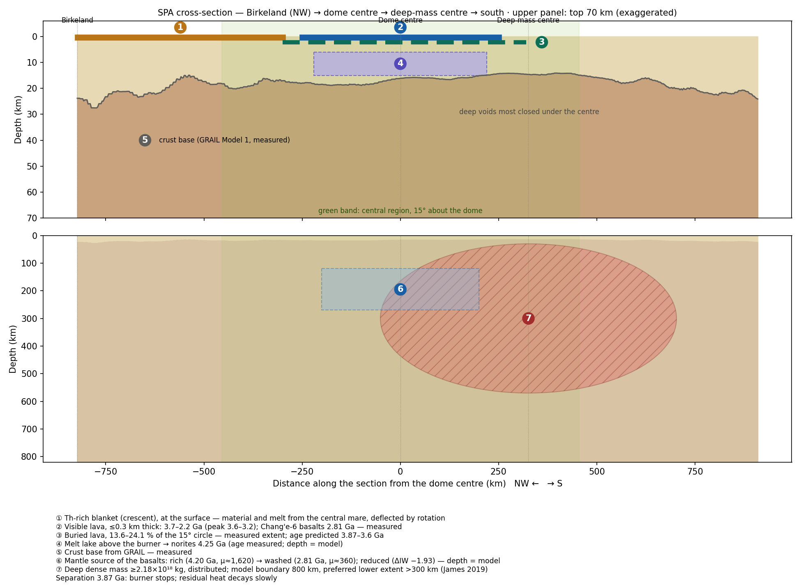
החתך מציב שבעה מן הרכיבים שנמצאו ב-B1–B17 בחיתוך אחד דרך האגן, כל אחד עם המדידה שלו והגיל שלו, כך שאפשר לראות בתמונה אחת את סידורם סביב מרכז אחד ובשכבות לפי עומק.
התמונה כולה. החום נכנס דרך שני ברנרים של הצד הקרוב — Imbrium, העיקרי, ו-Serenitatis, המשני — ויצא בצד הרחוק מולם. מעל כל יציאה, בצד הרחוק, התפתחה כיפה קטנה של קרום דק: Ingenii (12–16 ק”מ) ו-Apollo (5–9 ק”מ). מדרום ליציאות נמצאים הכיפה הגדולה והמרכז החם, שבו פעל החום לאורך הזמן הממושך ביותר: מרכז הכיפה, הקרום הדק הרחב, מינימום המכתשים והמסה הצפופה. בצד המאסף, בצפון-מערב, נמצא הסהר: תוריום, מגנטיות ומערבולות בהירות — באותו צד, כששיאי המגנטיות נמצאים כ-8° צפונית למרכז התוריום. כל המרכזים, עם היציאות והכיפה לפני ההתעגלות ואחריה, מוצבים על מפה אחת באיור C.1.
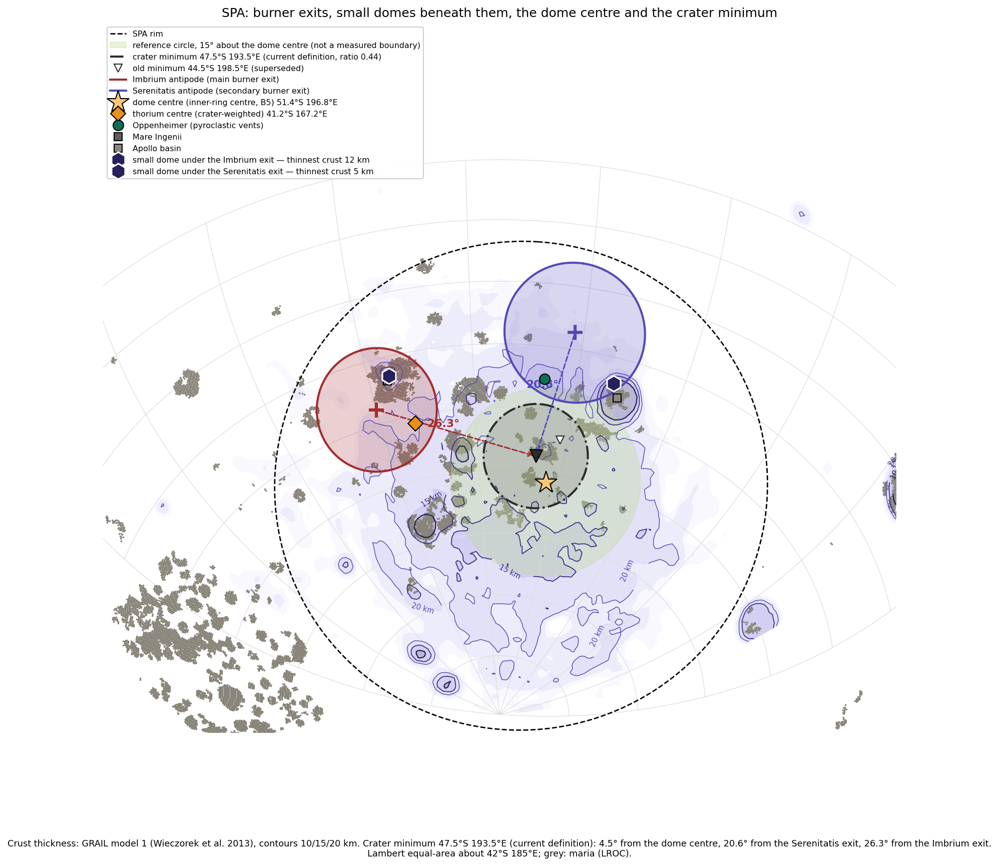
המפה נקראת מצפון לדרום: שתי היציאות למעלה, הכיפה והמרכז החם מתחתן, והסהר בצד, בצד המאסף. חלק C ממשיך מן הסידור הזה ושואל כיצד הגיעו הנקודות למקום שבו הן נמצאות היום, כשהצורה השתנתה מן הצורה הפחוסה אל הכדור.
פתוח. צירי הזמן — האם ציר כדור הארץ השתנה אחרי הניתוק (C.4; עבודה עתידית). B14: האיזוטופים יכריעו. B11: שתי שאלות פתוחות.
הנקודות האנטיפודיות — מצורה פחוסה לכדור
חלק B מדד את האגן תכונה אחר תכונה. חלק C בוחן היכן התכונות האלה נמצאות ביחס למבני הצד הקרוב, ומה עשה השינוי בצורת הירח, מגוף פחוס ומוארך לכדור, ליחס הזה. הרעיון המרכזי הוא הנקודה האנטיפודית. הנקודה האנטיפודית של נקודה על גוף היא הנקודה שמולה בדיוק: מותחים קו מן הנקודה דרך מרכז הגוף וממשיכים אותו עד שהוא יוצא מפני השטח בצד השני. על כדור, הנקודה האנטיפודית של נקודה בקו רוחב צפון ובקו אורך נמצאת בקו רוחב דרום ובקו אורך . ל-Imbrium, למשל, הנמצא ב-37° צפון, 341.5° מזרח, הנקודה האנטיפודית היא 37° דרום, 161.5° מזרח.
שאלת החלק הזה נובעת מן ההצעה. אילו פתחי הצד הקרוב היו יוצרים את SPA ישירות, האגן היה אמור לשקף אותם בצד הרחוק. חלק זה מציב את הנקודות שמול Imbrium ומול Serenitatis, מעתיק את הטבעות ואת הימות שלהם לצד הרחוק ומשווה את ההעתק לקו המתאר של SPA (C.1–C.2). ההעתק אינו משחזר את האגן, והתוצאה נשמרת: היא מסמנת מה הברנר הוא ומה אינו — הוא קובע היכן נמחקו מכתשים, לא את קו המתאר של האגן. לאחר מכן החלק מציב את כל המרכזים על מפה אחת, לפני ההתעגלות ואחריה (C.3), ונותן את מקור הכיוון הדרומי (C.4).
נקודה אחת צריכה להיות ברורה לפני שקוראים את המפה. הברנר פעל כשהגוף עוד היה מחובר ומוארך, בשלב הפחיסות; הירח נעשה כדור רק מאוחר יותר, בהתעגלות פנימה שסוגרת את הרצף התעגלות החוצה פחיסות התעגלות פנימה (מאמר 7). על גוף מוארך, הקו מנקודה דרך המרכז עובר בכיוון שונה מן הקו העובר דרך אותה פיסת פני שטח לאחר שהגוף התעגל. אותן פיסות פני שטח נשארות זו מול זו — שינוי צורה שהוא אחיד בכל הגוף שומר נקודות מנוגדות מנוגדות — אבל קווי הרוחב והאורך שבהם הן נקראות, והזוויות ביניהן, אינם אלה של היום. ההתעגלות משנה אפוא את התמונה בלי שדבר זז על פני השטח. זה נושא C.3.
C.1המרכזים
הנקודה שמול Imbrium (37° דרום, 161.5° מזרח) והנקודה שמול Serenitatis (25.4° דרום, 198.8° מזרח) שוכנות שתיהן בחלקו הצפוני של SPA, במרחק 1,022 ק”מ זו מזו; נקודת האמצע ביניהן נמצאת כ-650 ק”מ ממרכז האגן (גרסה קודמת נתנה כ-700 ק”מ). שתי הנקודות נופלות אפוא בתוך האגן, אך אף אחת מהן אינה נופלת על מרכזו. מכאן עולה כי SPA שוכן מול שני הפתחים של הצד הקרוב בחלקו הצפוני, אך אינו ממורכז סביבם: הוא משתרע הרחק דרומה מהם. C.3 ו-C.4 מסבירים את ההתמשכות הזאת דרומה.
C.2הטבעות והימות
הגרסה הפשוטה ביותר של הרעיון היא העתק נוקשה: לוקחים את צורתו של כל אגן בצד הקרוב ומטביעים אותה, בלי שינוי, סביב הנקודה האנטיפודית שלו, בדומה לחותמת הנלחצת על הצד השני של דף. העתקת הטבעות של Imbrium (1,321 ק”מ) ושל Serenitatis (923 ק”מ) אל הנקודות האנטיפודיות שלהן נותנת קו מתאר עוטף של ק”מ (יחס צירים 1.60); העתקת 19 מצולעי הימות של שני האגנים נותנת ק”מ (1.72). ממדי SPA הם ק”מ (1.17), והכיוונים אינם מתאימים. יחס הצירים הוא הציר הארוך חלקי הקצר: 1 הוא עיגול, וככל שהמספר גדול יותר, קו המתאר מוארך יותר. שני ההעתקים מוארכים וקטנים מ-SPA, בעוד SPA כמעט עגול.
העתק אנטיפודי נוקשה של אגני הצד הקרוב אינו משחזר את צורת SPA. התוצאה נשמרת. הטענה של מאמר זה שונה: הברנר קובע היכן נמחקו מכתשים, לא את קו המתאר של האגן.
לתוצאה השלילית יש ערך. היא מראה ש-SPA אינו הקרנה של אגני הצד הקרוב דרך פנים הגוף. הברנר הוא מקור חום מתחת לצד הרחוק; הוא קובע היכן פני השטח התחממו והמכתשים שעליהם נמחקו, ואילו קו המתאר של האגן נקבע בידי הכיפה שהתרוממה מעל החום ובידי קריסתה המאוחרת יותר (חלק B).
C.3כל המרכזים על מפה אחת
כל אחת מן המדידות של חלק B נותנת מרכז: של הכיפה, של תיעוד המכתשים, של הקרום הדק, של המסה הצפופה, של התוריום, של המגנטיות. כשבוחנים אותם אחד-אחד, המרכזים האלה נראים מפוזרים; הצבתם יחד חושפת סדר. איור C.1 מציב אותם על מפה אחת יחד עם הנקודות שמול הצד הקרוב, ועם מיקומי שתי היציאות ומרכז הכיפה בשלב הפחוס, לפני ההתעגלות.
איך לקרוא את איור C.1. המפה מראה את הצד הרחוק כפי שהוא נראה מעל האגן, והגובה מסומן בצבע (כחול נמוך, חום גבוה). כל סמן נושא מספר, והטבלה שליד המפה נותנת את הקואורדינטות שלו ואת מרחקו הזוויתי ממרכז הכיפה; מעלה אחת על הירח היא כ-30 ק”מ. הסמנים מתחלקים לחמש קבוצות. נקודות שמול הצד הקרוב: היציאות של שני הברנרים, Imbrium (1, אדום) ו-Serenitatis (2, סגול); הנקודה שמול מרכז אזור המגע, שבה הציר ממרכז כדור הארץ יוצא מן הצד הרחוק (3, מעוין כחול); הנקודה שבה הדחיפה האופקית יוצאת מן הצד הרחוק, 22.5° דרומה ממנה (5, מעוין כחול חלול); הנקודה שמול מרכז אזור הגבעות (4); נקודת החיבור הקודמת (6, צלב אפור); והנקודה שמול כדור הארץ כיום (7, ריבוע לבן). השלב הפחוס, מסומן בקו מנוקד: היציאות (1, 2) ומרכז הכיפה (8) כפי שהיו על הגוף המוארך. המרכז: מרכז הכיפה, שהוא מרכז הטבעת הפנימית (8); מרכז האליפסה של האגן (9); השיא המגנטי הקרוב ביותר למינימום המכתשים (10); ומינימום המכתשים (11). הדרום: הקרקע הנמוכה ביותר שבין המכתשים (12), המסה הצפופה (13) והשיא של מודל המסה המקורי (14), והקרום הדק ביותר (15). אחר: אתר הנחיתה של Chang’e-6 (16), הכיפות הקטנות של קרום דק מעל שתי היציאות, Apollo (17) ו-Ingenii (19), ומרכז סהר התוריום (18).
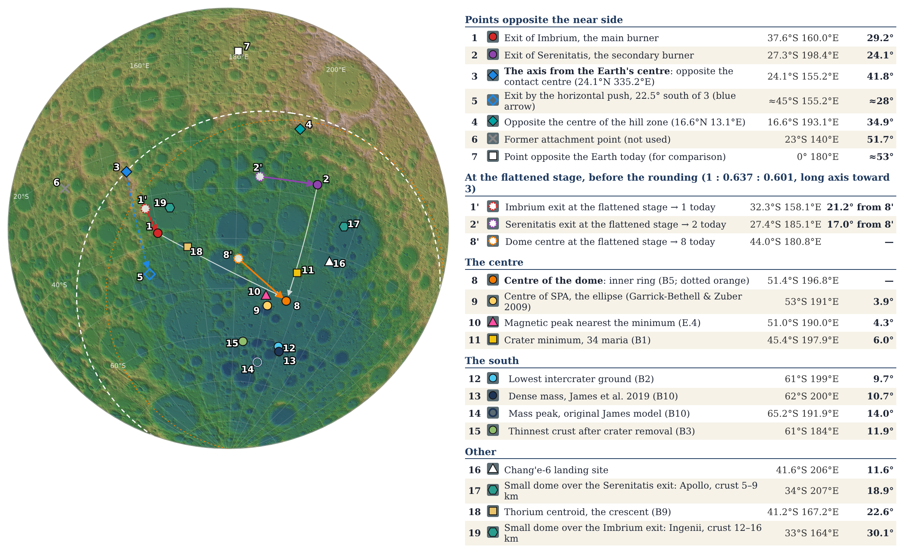
שלוש קבוצות. המפה מסדרת את המרכזים בשלוש קבוצות לאורך קו אחד מצפון לדרום. בצפון נמצאות היציאות של שני הברנרים (1, 2), ומעל כל אחת כיפה קטנה של קרום דק: Ingenii מעל Imbrium (19, במרחק 5.7°) ו-Apollo מעל Serenitatis (17). באמצע נמצאים מרכז הכיפה, מרכז האגן, השיא המגנטי הקרוב ביותר למינימום ומינימום המכתשים (8–11), כולם בטווח של 6° ממרכז הכיפה (בטווח של 9° זה מזה; גרסה קודמת נתנה "בטווח של 6° זה מזה"). בדרום נמצאים הקרקע הנמוכה ביותר שבין המכתשים, המסה הצפופה והקרום הדק ביותר (12–15), בטווח של כ-230 ק”מ זה מזה. התוריום (18) עומד בנפרד מן הקבוצה האמצעית: הוא נמצא על יציאת Imbrium (6.6° ממנה), בצד המאסף. בקריאת המודל, הקו עובר מן המקום שבו החום יצא (היציאות, צפון), דרך המקום שבו פעל הכי הרבה זמן על פני השטח (הכיפה ומינימום המכתשים, אמצע), אל המקום שבו הברזל מרוכז והכיפה קרסה הכי עמוק (המסה הצפופה והקרקע הנמוכה ביותר, דרום).
הציר ממרכז כדור הארץ. הקו הגיאומטרי הישר ממרכז כדור הארץ דרך מרכז אזור המגע (24.1° צפון, 335.2° מזרח) יוצא בצד הרחוק בנקודה 3 (24.1° דרום, 155.2° מזרח), במרחק זוויתי של 41.8° ממרכז הכיפה. אילו החום היה עובר לאורך הקו הזה, הכיפה הייתה מתפתחת בנקודה 3; היא אינה נמצאת שם. בתוך האגס המסתובב הדחיפה פועלת בניצב לציר הסיבוב, ולא לאורך הקו אל מרכז כדור הארץ: היא נכנסת אל דיסקת המגע צפונית למרכזה, באזור שני הברנרים, ויוצאת בצד הרחוק עד 22.5° דרומה מן הנקודה שמול (נקודה 5, 47° דרום; גרסה קודמת נתנה 45° דרום) — בקו הרוחב של הכיפה ושל מינימום המכתשים. הנקודה שמול כדור הארץ כיום (7) ונקודת החיבור הקודמת (6) מוצגות להשוואה בלבד; נקודה 6 היא הנקודה האנטיפודית של נקודת הייחוס הישנה 23° צפון, 320° מזרח, שהסדרה אינה משתמשת בה עוד. נקודות הייחוס כעת הן מרכז אזור המגע ברוחב 3,000 ק”מ ושתי היציאות.
לפני ההתעגלות ואחריה. מערך היציאות והכיפה נפרש במקור על הגוף המוארך (1 : 0.637 : 0.601), שהציר הארוך שלו הופנה אל כדור הארץ. שלושת המספרים הם אורכי שלושת צירי הגוף ביחס לארוך שבהם: הגוף היה ארוך בערך פי אחד וחצי בכיוון כדור הארץ מאשר ברוחבו. כשהגוף נעשה כדור, כל נקודה התרחקה מקצה הציר הזה (3), וככל שנקודה הייתה רחוקה ממנו יותר, כך גדל מרחקה יותר. הסיבה גיאומטרית. על גוף מוארך, פני השטח ליד קצה הציר הארוך דחוסים אל הציר; במבט מן המרכז, הנקודות שם נמצאות בזוויות קטנות ממנו. כשהגוף מתעגל, הממדים הצדדיים גדלים ביחס לממד הארוך, והזוויות במבט מן המרכז נפתחות. אנלוגיית גוש הבצק ממחישה זאת: נקודות שצוירו ליד הקצה של גוש בצק בצורת ביצה מתרחקות זו מזו, במבט ממרכזו, כשהבצק נלחץ לכדור, אף שאף נקודה לא החליקה על פני הבצק. לא התרחשה תנועה או החלקה של פיסות הקרום על פני השטח; שינוי הצורה הוא ששינה את המרחקים. אותו שינוי מגדיל את מרחקו של SPA מן הקצה הרחוק של הגוף (3) מכ-27° בזמן פעילות הברנר, על הצורה הפחוסה, לכ-39.5° על הכדור של היום (A.5, B5): שוב מעבר מן הצורה הפחוסה לכדור, לא תנועה על פני השטח. המיפוי המלא נותן:
| נקודה | השלב הפחוס | היום | שינוי | אל הכיפה |
|---|---|---|---|---|
| יציאת Imbrium (11) | 32.3° דרום, 158.1° מזרח | 37.6° דרום, 160.0° מזרח | 5.5° | 21.2° 29.2° |
| יציאת Serenitatis (22) | 27.4° דרום, 185.1° מזרח | 27.3° דרום, 198.4° מזרח | 11.8° | 17.0° 24.1° |
| מרכז הכיפה (88) | 44.0° דרום, 180.8° מזרח | 51.4° דרום, 196.8° מזרח | 13.0° | — |
| מינימום המכתשים | 39.9° דרום, 182.5° מזרח | 45.4° דרום, 197.9° מזרח | 12.6° | — |
המיפוי המלא של ההתעגלות: הכיוון של כל נקודה כיום נלקח כקואורדינטה החומרית שלה, ומיקומה על הגוף המוארך הוא במערכת צירים שהציר הארוך שלה מצביע אל מרכז המגע והציר הקצר שלה הוא הקרוב ביותר לקוטב של היום.
המיפוי שבהערה מתחת לטבלה פועל כך. כל נקודה על פני השטח מסומנת לפי הכיוון שבו היא נמצאת כיום, , כאשר לאורך הציר הארוך לכיוון מרכז המגע. על הגוף המוארך שכנה אותה פיסת פני שטח ב-: אותו מיקום לאורך הציר הארוך, אך קרובה אליו יותר מן הצד. הטבלה משווה בין שני הכיוונים. ככל שהצבע בעמודת השינוי כהה יותר, כך גדול יותר השינוי בקואורדינטות: יציאת Imbrium, הקרובה ביותר לקצה הציר הארוך (3), השתנתה הכי מעט (5.5° בלבד); הכיפה ומינימום המכתשים, הרחוקים ממנו יותר, השתנו הכי הרבה (13.0° ו-12.6° בהתאמה). העמודה האחרונה מראה את התוצאה החשובה למאמר: המרחק הזוויתי מכל יציאה אל מרכז הכיפה גדל בכשבע עד שמונה מעלות.
בשלב הפחוס שכן מרכז הכיפה 17° דרומית ליציאת Serenitatis ו-21° דרום-מזרחית ליציאת Imbrium; המעבר לכדור פתח את הזוויות האלה והביא אותן ל-24° ול-29° הנמדדים כיום. ההתעגלות מרחיבה את ההפרדה אך אינה קובעת את כיוונה: הכיפה הייתה דרומית לשתי היציאות כבר בשלב הפחוס. מקור הכיוון הדרומי מוצג ב-C.4.
C.4מקור הכיוון הדרומי
סעיף זה עונה על השאלה מדוע הכיפה התפתחה דרומית לשתי היציאות, ולא סביבן. שני גורמים פועלים יחד: הראשון קובע את הכיוון, השני מגדיל את המרחק.
מיקום האגס וכוחות הסיבוב. קצה האגס, ועליו הירח, עמד בכ-22.5° צפון, בעוד בסיס האגס ישב בקירוב על המשווה של אותו זמן. בתוך האגס המסתובב הדחיפה פועלת בניצב לציר הסיבוב של כדור הארץ — כלומר לאורך האופק — ולא לאורך הקו אל מרכז כדור הארץ. זו תכונה של כל גוף מסתובב: הדחיפה החוצה של הסיבוב מכוונת ישר הרחק מציר הסיבוב, כמו רוכב על קרוסלה שנדחף הרחק מן העמוד המרכזי לאורך האופק, בכל גובה שבו הוא יושב. עבור נקודה בקו הרוחב של קצה האגס, הקו הישר אל מרכז כדור הארץ נוטה כלפי מעלה לכיוון צפון בזווית השווה לקו הרוחב, בעוד הדחיפה מאוזנת; ההפרש ביניהם הוא בערך קו הרוחב, כ-22.5°. החום שעבר בתוך האגס הגיע אפוא אל דיסקת המגע צפונית למרכזה, באזור שני הברנרים, ויצא בצד הרחוק דרומית לנקודה שמול מרכז המגע, עד קו הרוחב של הירח, 22.5° (איור C.1, נקודות 3 ו-5). זה הכיוון שנמדד: כבר בשלב הפחוס שכן מרכז הכיפה 17° דרומית ליציאת Serenitatis ו-21° דרום-מזרחית ליציאת Imbrium (C.3), והכיפה, מינימום המכתשים והמרכז החם נמצאים כולם דרומית ליציאות.
הפחיסות. היציאות והכיפה נפרשו על הגוף המוארך, שציריו ביחס 1 : 0.637 : 0.601. כשהגוף נעשה כדור, המרחקים מקצה הציר הארוך שלו גדלו: מיציאת Serenitatis אל הכיפה 17° 24°, ומיציאת Imbrium 21° 29° (C.3). הפחיסות אינה קובעת את הכיוון; היא מגדילה את ההפרדה שהסיבוב קבע. בקיצור: הסיבוב קבע שהכיפה נמצאת בדרום; המעבר מן הצורה הפחוסה לכדור קבע כמה רחוק.
גורם שלישי אפשרי — שבירה של מסלול החום בליבה הצפופה, הפועלת כמנסרה — מניב לכל היותר מעלות ספורות, ללא כיוון מועדף, ואינו בשימוש.
ציר כדור הארץ לאחר הניתוק. בהחלט ייתכן שציר הסיבוב של כדור הארץ השתנה לאחר הניתוק. שינוי בכיוון הציר משנה את מערכת הקואורדינטות שבה כיוון הברנר נקרא כיום — ואיתה את מישור מסלול הירח ואת ציריו שלו — כך ש-SPA נראה כיום שלא בקו אחד עם הברנר, אף שהחום אכן זרם לאורכו. כל המיקומים במאמר זה ניתנים במערכת הצירים של היום. המאמר בכוונה אינו נכנס לחקר הצירים; הוא נשאר לעבודה עתידית.
הכיוון הדרומי של הכיפה ביחס לשתי היציאות נקבע בידי מיקום האגס וכוחות הסיבוב, והפחיסות הגדילה אותו להפרדה הנמדדת כיום. שינוי של ציר כדור הארץ לאחר הניתוק עשוי להוסיף להבדל הנראה בין SPA לבין הברנר; הצירים נשארים בכוונה לעבודה עתידית.
מה יש בידינו כעת: המרכזים של SPA מסודרים על קו אחד מצפון לדרום, מול שתי היציאות ודרומית להן; הכיוון דרומה נובע מן הדחיפה האופקית בתוך האגס המסתובב, וגודל ההפרדה כיום, 24–29°, נובע מן ההתעגלות של הגוף המוארך, שהרחיבה אותה מ-17–21°.
הגרסה הדינמית — עמוד, סיבוב וזווית
חלק C מיקם את הברנר מבחינה גיאומטרית. חלק D בוחן אם הוא יכול לפעול מבחינה פיזיקלית. הברנר מחייב שחומר וחום יעברו מפנים כדור הארץ אל האזור שמול הפתחים, והחלק הזה בודק אם המספרים מאפשרים זאת: מהירות המעבר וזמנו (D.1), האנרגיה והלחץ (D.2), המחסום של רדיוס הקורוטציה וההקלה שגוף רציף מספק (D.3, D.3a), הכיוון שבו הסיבוב מסיט זרימה (D.4), והמרחק שסיבוב וזווית יציאה קטנה יוצרים (D.5). במילים פשוטות התמונה היא זו: חומר עולה מכדור הארץ דרך האגס, כעמוד, בזמן שכל המערכת מסתובבת; עליו לטפס החוצה מכבידת כדור הארץ עד שהסיבוב משתלט; וזווית קטנה שבה הוא יוצא, הנשמרת לאורך מסלול ארוך, מספיקה כדי למקם את החום מאות קילומטרים מן הנקודה שמול בדיוק.
D.1מהירות וזמן מעבר
תחת שימור פשוט של תנע זוויתי, חומר העולה מפנים כדור הארץ מגיע למהירויות רדיאליות של 1.8–2.6 ק”מ/ש’, עם זמני מעבר של 1.2–1.5 שעות. תנע זוויתי הוא כמות הסיבוב שגוף נושא — מסתו כפול מהירותו סביב הציר כפול מרחקו ממנו. כשדבר מבחוץ אינו מסובב את הגוף, התנע הזוויתי נשמר, ולכן חומר הנע החוצה מאט את סיבובו, בדומה למחליקה על קרח הפורסת את ידיה החוצה ומסתובבת לאט יותר. מעבר של 1.2–1.5 שעות הוא כרבע מן היממה של כדור הארץ באותו זמן או פחות: החומר חוצה את המרחק בחלק מסיבוב אחד. ההפרש של 57° בין כיווני הצירים אינו השהיה נצפית של החומר במעבר, ואינו משמש ככזה במודל.
D.2 אנרגיה ולחץ
האנרגיה הקינטית במהירויות האלה היא 1.6–3.4 מגה-ג’ול/ק”ג; המרה אידיאלית ללחץ בצפיפות 3,000 ק”ג/מ”ק נותנת 5–10 ג’יגה-פסקל. האנרגיה הקינטית לקילוגרם היא חצי ריבוע המהירות; הלחץ הוא האנרגיה הזאת כפול הצפיפות — לחץ הבלימה, המרב שזרימה יכולה למסור אם כל תנועתה נעצרת. 5–10 ג’יגה-פסקל חורגים בהרבה ממה שהקרום יכול לעמוד בו, אך החישוב הזה אינו כולל את מחסום הפוטנציאל, ש-D.3 מחשב.
D.3מחסום הפוטנציאל
כדור הארץ הקדום הסתובב פעם אחת בכחמש וחצי עד שש שעות (5.5 שעות לפני הבליטה, 5.77 שעות בשחרור). על חומר בפני השטח שלו פועלות שתי השפעות הפוכות: הכבידה מושכת אותו פנימה, והסיבוב דוחף אותו החוצה. ליד פני השטח הכבידה חזקה בהרבה; עם העלייה ברדיוס היא נחלשת בעוד הדחיפה החוצה גדלה, וברדיוס הקורוטציה — כ-15,800 ק”מ ממרכז כדור הארץ (מאמר 2) — שתיהן מתאזנות. רדיוס הקורוטציה הוא המרחק שבו גוף המסתובב עם כדור הארץ כבר נע במהירות של מסלול חופשי, ולכן אינו נזקק לתמיכה. כדי להביא חומר מפני השטח אל הנקודה הזאת יש לשאת אותו במעלה גבעה; ברגע שהוא חוצה את הפסגה, הסיבוב נושא אותו החוצה מעצמו, בדומה לכדור בצדה השני של פסגת גבעה שמתגלגל מטה בלי שדוחפים אותו. גובה הגבעה הוא מחסום הפוטנציאל — האנרגיה לקילוגרם הדרושה כדי להרים חומר מפני השטח אל רדיוס הקורוטציה: עם מסת האב של הסדרה, ק”ג. במילים: הוא הפוטנציאל האפקטיבי, האנרגיה לקילוגרם של חומר במרחק במערכת הקואורדינטות המסתובבת עם כדור הארץ. האיבר הראשון הוא הכבידה ( קבוע הכבידה), העמוקה ביותר ליד כדור הארץ; האיבר השני הוא הסיבוב ( מהירות הסיבוב הזוויתית של כדור הארץ), שמוריד את האנרגיה ככל שהחומר רחוק יותר. סכומם עולה מפני השטח עד מרב ברדיוס הקורוטציה ויורד מעבר לו; הוא ההפרש בין פסגת הגבעה הזאת לבין נקודת ההתחלה . רדיוס ההתחלה הוא הרדיוס המקומי של כדור הארץ המהיר והפחוס בקו הרוחב של המקור, 25° צפון (מאמר 13 §C.2): עם הרדיוס המשווני של הסדרה, 6,721 ק”מ, והרדיוס הנפחי, 6,517 ק”מ, מתקבל ק”מ. (25° צפון הוא קו הרוחב של המקור; בסיס האגס על כדור הארץ נמצא ליד Kiritimati, קרוב לקו המשווה, מאמר 3 ומאמר 9.) הטבלה הבאה נותנת את המחסום עבור אורך היממה של כדור הארץ בזמן השחרור, 5.77 שעות (מאמר 2, §B.1), ועבור 5.5 שעות להשוואה:
| רדיוס התחלה | 5.50 שעות | 5.77 שעות |
|---|---|---|
| קו הרוחב של המקור, 25° צפון: 6,602 ק”מ (הערך שאומץ) | 25.2 | 26.2 |
| נפחי: 6,517 ק”מ | 25.9 | 26.9 |
| משווני: 6,721 ק”מ | 24.2 | 25.2 |
המחסום במגה-ג’ול/ק”ג; רדיוס הקורוטציה 15,883 ק”מ ב-5.5 שעות ו-16,399 ק”מ ב-5.77 שעות.
הטבלה נותנת את גובה הגבעה עבור שלוש בחירות של רדיוס התחלה ושני אורכי יממה. רדיוס התחלה גדול יותר מתחיל גבוה יותר על הגבעה ומשאיר פחות לטפס; יממה ארוכה יותר מרחיקה את רדיוס הקורוטציה ומגביהה את הגבעה. הערך שאומץ הוא 26.2 מגה-ג’ול/ק”ג. רדיוס הקורוטציה ב-5.5 שעות מופיע בטקסט ככ-15,800 ק”מ ומתחת לטבלה כ-15,883 ק”מ: שני הערכים נכונים, להגדרות שונות — 15,818 ק”מ מתייחס לחלקיק בוחן סביב כדור הארץ לבדו (מאמר 2), ו-15,883 ק”מ משקלל את שדה הכבידה המלא של המערכת (מאמר 3 §A.9). ב-5.77 שעות הוא 16,399 ק”מ, כ-2.6 רדיוסי כדור הארץ.
עבור חבילת חומר עצמאית העולה לבדה, מהירויות של 1.8–2.6 ק”מ/ש’ (1.6–3.4 מגה-ג’ול/ק”ג) נופלות מגובה הגבעה בפקטור של שבעה עד שש-עשרה, ובחירת רדיוס ההתחלה משנה את המחסום ב-1–2 מגה-ג’ול/ק”ג בלבד. חבילה שנזרקת למעלה לבדה הייתה אפוא נבלמת ונופלת חזרה הרבה לפני רדיוס הקורוטציה. D.3a מראה מדוע זה אינו המצב במודל.
D.3aהמחסום עבור גוף רציף
המחסום שלעיל חל על חבילת חומר העולה לבדה. במודל החומר אינו חוט דק אלא גוף רציף ושלם: החיבור רחב (מאמר 3), הגוף מלא חומר, והוא חלק מכדור הארץ, דחוס בכל נפחו בידי הכבידה של כדור הארץ ובידי הלחץ מלמטה — הלחץ בתוכו חיובי בכל מקום. אפקט הסיפון. בגוף כזה, המשיכה החוצה על החלק שכבר חצה את רדיוס הקורוטציה אינה קורעת דבר; היא מורידה את הלחץ שמתחתיו. הלחץ בבסיס יורד, וחומר מפנים כדור הארץ נדחף מעלה אל אזור הלחץ הנמוך, כמו בסיפון, בלי שהלחץ ייעשה שלילי אי-פעם. סיפון פועל בדיוק כך: נוזל שחצה את הפסגה ונופל בצד השני מוריד את הלחץ מאחוריו, והנוזל שבכלי נדחף במעלה הצינור בידי לחץ האוויר על פניו; דבר אינו מושך את הנוזל כמו חבל. חלק מן האנרגיה להרמת חומר חדש בא אפוא מן המשיכה החוצה של החומר שכבר נמצא מעבר לרדיוס הקורוטציה, והמחסום האפקטיבי נמוך יותר מאשר עבור חבילה בודדת. מקור האנרגיה הסופי הוא סיבוב כדור הארץ, כמו בשאר הסדרה. הסיפון אינו מחליף את ההרמה של מאמר 3: המנוע נשאר הלחץ מלמטה, העלייה המגמטית שלחץ המקור שלה, כ-150 ג’יגה-פסקל, נושא את החומר מעלה (מאמר 3, A.9–A.10), והסיבוב לבדו אינו מרים דבר. ההקלה פועלת רק לאחר שחלק מן הגוף חצה את רדיוס הקורוטציה — בשלבים המאוחרים, לא המוקדמים — והיא מורידה את הלחץ שהבסיס צריך לספק; היא אינה נושאת מתיחה (מאמר 3, C.5). דרישה: המחסום האפקטיבי ולחץ הבסיס המופחת, מחושבים עבור גוף בצורה ובגודל של מאמר 3.
הצד הרחוק וספירת Hill. אותה השפעה פועלת בצד הרחוק. הצד הרחוק של הגוף שכן מעבר לרדיוס הקורוטציה, שם הסיבוב מושך החוצה, הרחק מכדור הארץ, ומקל על יציאת חומר מן הפתחים של חזית הכיפה (מאמר 5). הלחץ מלמטה זרק מסות גדולות, שחזרו כמכתשים גדולים. המכתשים הקטנים והטריים השוכבים על הגדולים בתוך SPA (B1h) באים בעיקר ממקור מאוחר יותר: אחרי הניתוק נחשפו הפתחים של האגס, כדור הארץ שחרר דרכם את הלחץ שלו וזרק חומר לכל עבר, והחלקים הקטנים והבינוניים שהגיעו אל הירח התפזרו באופן אחיד על כל פני השטח שלו; ייתכן שגם פתחים נוספים של הירח עצמו פיזרו עליו חומר. חומר היוצא מפתחי הצד הרחוק אינו בורח לחלל: לגוף יש כבידה משלו, עם מהירות מילוט של כ-2.3 ק”מ/ש’ ברדיוס שלו אז, 1,890 ק”מ (2.4 ק”מ/ש’ ברדיוס של היום, הערך שנתנה גרסה קודמת), ומעט פחות בצד הרחוק, שם הסיבוב מסייע. מהירות המילוט היא המהירות שבה רסיס עוזב גוף לתמיד; מתחתיה הרסיס חוזר. חומר היוצא מן הפתחים לאט יותר עולה, נבלם ונופל חזרה אל הגוף, והחומר החוזר יוצר מכתשים (מאמר 6). מנגנון אחד מושך אפוא חומר פנימה בבסיס ומקל על יציאתו בצד הרחוק. דרישה: מהירויות יציאה מפתחי הצד הרחוק נמוכות ממהירות המילוט המקומית. הירח כולו אינו נופל חזרה אל כדור הארץ, כי הוא נמצא מעבר לרדיוס הקורוטציה ונזרק אל מסלול (מאמר 4); חומר שעוזב אותו חוזר אליו רק כל עוד הוא נשאר בתוך תחום השליטה הכבידתית של הירח עצמו — ספירת Hill: האזור סביב גוף קטן הסמוך לגוף גדול, שבתוכו משיכת הגוף הקטן שולטת בתנועת רסיס יותר ממשיכת הגוף הגדול. ליד קו הקורוטציה (16,400 ק”מ), שהירח השתחרר כ-210 ק”מ מעבר לו, ספירת Hill מגיעה לכ-2,600 ק”מ ממרכז הירח — 1.4 רדיוסים של הירח של אז (1,890 ק”מ) — ולכן רק חומר העולה פחות מכ-700 ק”מ מעל פני השטח חוזר ליצור מכתשים (גרסה קודמת, ברדיוס של היום, נתנה 1.5 רדיוסים ו-900 ק”מ); חומר שנזרק גבוה יותר חוצה את גבול הספירה ובורח מן הירח, אל מסלול או ליפול אל כדור הארץ.
D.4מבחן הסימן
במערכת הקואורדינטות המסתובבת, כוח Coriolis מסיט זרימה הנעה החוצה נגד כיוון הסיבוב, מערבה. כוח Coriolis הוא הדחיפה הצדדית הנראית שמרגיש כל דבר הנע במערכת מסתובבת: חומר הנע החוצה נושא עמו את הסיבוב האיטי יותר של המקום שממנו בא, ולכן הוא מפגר אחרי הקרקע שמתחתיו, וזו ההסטה נגד כיוון הסיבוב. המבחן בוחן אם הסטה אחת זו יכולה למקם את שתי היציאות ביחס לאגן. הנקודה האנטיפודית של Serenitatis (198.8° מזרח) נמצאת 7.8° ממרכז SPA (191° מזרח) בכיוון שההסטה הזאת דורשת; הנקודה האנטיפודית של Imbrium (161.5° מזרח) נמצאת בצד השני. הסטה פשוטה אחת אינה משרתת את שתיהן. הסטת Coriolis אינה אפוא מקור הגיאומטריה; המקור הוא הדחיפה האופקית של C.4.
D.5זווית יציאה קטנה
זווית קטנה הנשמרת לאורך מסלול ארוך מתורגמת למרחק גדול בנקודת הקצה, בדומה לרובה שמכוון שבר מעלה הצידה ומחטיא מטרה רחוקה בפער רחב. מבחינה גיאומטרית , כאשר אורך המסלול, הזווית ביציאה, ו- המרחק בין הנקודה שישר קדימה לבין הנקודה שאליה מגיעים: לאורך מסלול של 9,447–11,199 ק”מ, זווית של 1–3° נותנת מרחקים של 165–590 ק”מ בין היציאה לבין הנקודה שאליה מגיעים. נדרש מקור פיזיקלי לזווית; הגיאומטריה לבדה אינה ראיה לקיומו. C.4 נותן אותו: הדחיפה האופקית בתוך האגס המסתובב. (מבחן נוסף, על הכבידה העצמית של הגוף הגדל, לא ניתן היה לשחזרו, והוא אינו בשימוש.)
מה יש בידינו כעת: חבילת חומר לבדה אינה יכולה לטפס על המחסום, אבל גוף רציף, הנדחף מלמטה בלחץ המקור של מאמר 3 ומוקל בבסיסו לאחר שחלק ממנו חצה את רדיוס הקורוטציה, יכול; בצד הרחוק הסיבוב מקל על יציאת החומר, שחוזר בתוך ספירת Hill של הירח; המכתשים הקטנים והטריים שעל הגדולים באים בעיקר מחומר שכדור הארץ זרק אחרי הניתוק, שהתפזר באופן אחיד על הירח; ומרחק החום מן הנקודה שמול נקבע בידי הדחיפה האופקית, לא בידי הסטת Coriolis.
אתגרים ותשובות
כמה ממצאים שפורסמו לאחרונה נראים לכאורה כעומדים נגד ההצעה. חלק זה מציג אותם אחד-אחד, כל אחד עם מענה המודל. כל סעיף מציג תחילה את הממצא בהגינות, כפי שפורש בידי מחבריו, ולאחר מכן את קריאת המודל, ובמקום שיש כזו, את המדידה שתכריע בין השתיים. שאלות שנדרשים נתונים חדשים כדי להכריע בהן אינן נענות כאן; הן מפורטות כמבחנים בחלק F.
E.1 אירידיום וזהב במתכות של Chang’e-6
הממצא בספרות. Liu et al. (2026) מדווחים על Ir ו-Au בגרגרי מתכת מרסיסי פגיעה של Chang’e-6, ומפרשים חלק מהם כחומר של כונדריט פחמני, כלומר כמתכת שהביא אסטרואיד קדום. מענה המודל. הגרגרים אותרו ברסיסי רגולית בזלתיים ואנורתוזיטיים, שהמחברים סיווגו כרסיסי פגיעה, ולא בנוריטים המתוארכים, והם עצמם אינם מתוארכים; גרגרים כאלה הם אבק חלל שנמשך מאוחר יותר בכבידת הירח אל שכבת פני השטח הרופפת, וזה מה שהתחזית מתירה. הרגולית היא שכבת פני השטח הרופפת של אבק ורסיסים, המלקטת חומר מבחוץ לאורך כל תולדות הירח. Ir ו-Au אינם מבחינים בין אסטרואיד לבין מתכת מפנים כדור הארץ, העשירה ביסודות סידרופיליים — היסודות ה”אוהבים ברזל”, שהולכים אחר המתכת ולכן מרוכזים בכל מקום שיש בו מתכת. היחסים שפורסמו הם יחסי יסודות, לא מערכות איזוטופיות. רק מערכות איזוטופיות (Cr, Ti, Mo, Ru, Os) יכולות להכריע: ביסודות האלה כדור הארץ וסוגי המטאוריטים נושאים טביעות אצבע איזוטופיות נבדלות, שאינן משתנות כשהמתכת מותכת או מופרדת.
E.2 מתכת של גוף זר בנוריטים (קריאת הפגיעה)
הממצא בספרות. Su et al. (2025) מדווחים על מתכת Fe–Ni בתוך שני רסיסי נוריט בני כ-4.25 מיליארד שנה, עם Ni/Co של 8.5–11 — מעל הערכים שמתחת ל-5 של המתכת שכבר בירח — וקוראים אותה כתרומה של הגוף הפוגע. מענה המודל. יחס Ni/Co לבדו אינו מזהה את המקור: לסיליקט הכולל של כדור הארץ יש 18.7, לכונדריטים מסוג CI 21.0 (McDonough & Sun 1995), וגרגר מתכת הוא חומר שהתחלק בין מתכת, סיליקט וסולפיד. שני המקורות המועמדים — כדור הארץ וגוף כונדריטי — נמצאים מעל ערכי המתכת שכבר בירח, ולכן יחס גבוה מבחין בין הגרגרים לבין המתכת הזאת, שהגיעה מזמן לשיווי משקל, אך אינו אומר מאיזה מן השניים הם באו; והיחס בגרגר בודד תלוי באופן שבו ניקל וקובלט התחלקו בין המרכיבים כשהגרגר נוצר. המודל קורא את המתכת כברזל שבא מלמטה, וחוזה חתימה איזוטופית ארצית. הנוריטים האלה כלואים בתוך הדגימה, חלק ממנה מאז שנוצרה: הם המקום שבו תחזית המודל נקראת באופן הישיר ביותר (חלק F, השורה הראשונה).
E.3המסה הצפופה אינה מתחת למינימום
הממצא בספרות. המסה של James et al. ממוקמת כ-500 ק”מ דרומית למינימום המכתשים ומשתרעת מאות קילומטרים לעומק. מענה המודל. היא אינה הברזל שמתחת למינימום; במודל היא ברזל שהתרכז בעומק מתחת לאגן, דרומית לכיפה (B10). המינימום מסמן היכן החום מחק את המכתשים על פני השטח; המסה הצפופה מסמנת היכן הברזל התרכז, בקבוצה הדרומית של איור C.1. המודל אינו דורש ששני אלה יחפפו.
E.4 השיאים המגנטיים אינם במינימום
הממצא בספרות. השיא החזק הקרוב ביותר שנמצא (51.0° דרום, 190.0° מזרח) מוסט כ-230 ק”מ מן המינימום, ובמינימום עצמו השדה חלש (1.9 ננו-טסלה בגובה 25 ק”מ, B16; 0.85 ננו-טסלה בנקודת הבדיקה 44.8° דרום, 198.4° מזרח, כ-20 ק”מ ממנו — הערך שגרסה קודמת נתנה למינימום עצמו). מענה המודל. זה בדיוק מה שהברנר חוזה: החום מוחק את המגנטיזציה בליבתו ומשאיר אותה בשוליים הקרים יותר. חומר ממוגנט מאבד את המגנטיזציה שלו כשהוא מחומם מעל טמפרטורה מסוימת, ושומר עליה במקום שבו הוא נשאר קר יותר; מקור חום משאיר אפוא מרכז חלש וטבעת ממוגנטת, וזה הדפוס שנמדד (B16).
E.5 הקרום במינימום אינו הדק ביותר
הממצא בספרות. עובי הקרום במינימום המכתשים (19–28 ק”מ) אינו קטן מזה שבמרכז הנומינלי (15–24 ק”מ). מענה המודל. הטענה היא שגירעון המכתשים נמצא בתוך אזור הקרום הדק, ולא בנקודה הדקה ביותר שלו (B1, B3). החום עלה מלמטה והתיך את האזור כולו, על חלקיו העבים והדקים כאחד; בתוך אזור הקרום הדק, המקום הדל ביותר במכתשים נקבע לפי כיוון היציאות, לכיוון הנקודה האנטיפודית של Serenitatis, ואילו הקרום הדק ביותר נמצא בחלקו הדרומי המבני של האגן (איור C.1).
E.6 בזלות קבורות
הממצא בספרות. Wang et al. (2024) מפרשים לפחות קמ”ר של בזלות קבורות, בעובי של יותר מקילומטר, במרכז SPA — מקור חלופי למכתשים רדודים, שכן לבה שמילאה מכתש עושה אותו רדוד יותר. מענה המודל. במודל, הבזלות הקבורות הן תוצר של הברנר ולא גורם מתחרה: חום מלמטה יוצר התכה וגעשיות. מדד ההכרעה. המבחן המכריע הוא אם הרדדת המכתשים נמשכת גם מחוץ לגבולות הבזלות הקבורות. אם כן, הלבה אינה יכולה להסביר אותה, וחימום הקרקע והידחסותה יכולים.
E.7הכלל “פרט לרגולית”
הממצא בספרות. כמעט כל החומר של Chang’e-6 נאסף מן הרגולית, כך שקורא עשוי לשאול אם אפשר בכלל לבדוק את התחזית. מענה המודל. התחזית עוסקת במקור החומר הכלוא בדגימה — חומר זר שהיה חלק ממנה כשנוצרה, כמו מתכת בתוך נוריט בן 4.25 מיליארד שנה — ולא במקום שבו נאספה. רסיס שנאסף מן הרגולית יכול להיות עתיק כמו האגן, ומה שהכיל כשנוצר הוא תיעוד של אותו זמן. המודל צופה שהמתכת בנוריטים העתיקים ארצית; חומר זר, אם יימצא בכלל, צפוי בכמויות זעירות בלבד — גרגרים דקים של אבק חלל שנמשכו מאוחר יותר בכבידת הירח אל שכבת פני השטח, או מטאוריט בודד.
תחזיות ומבחנים
חלק זה מרכז את התחזיות של המודל ומפרט את המבחנים שעדיין ממתינים לנתונים חדשים. כל שורה בטבלה מציגה מה המודל מצפה שיימצא. שתי שורות, הצבועות בירוק, כבר נמדדו במסגרת מאמר זה: הטבעות המעובות אוששו, וההידחסות בעומק נתמכת.
| תחזית |
|---|
| המתכת בשני הנוריטים המתוארכים (CE6C0100YJFM002-158, CE6C0200YJFM001EGP07-16) ארצית ב-Cr, Ti, Mo, Ru או Os; חומר זר בדגימות העתיקות של הירח, אם בכלל, בכמויות זעירות בלבד |
| אובדן החומרים הנדיפים והחיזור חזקים ביותר ליד המינימום, וחלשים יותר לכיוון השפה |
| מכתשים רדודים נמשכים גם מחוץ לבזלות הקבורות |
| מכתשים בעלי קרקעית סדוקה מרוכזים בחסר |
| מגנטיזציה חזקה ביותר בשולי הליבה המחוממת, שמקורה בעומק |
| החסר עוקב אחר הנקודות האנטיפודיות של פתחי הצד הקרוב |
| ים רגיל באמצע SPA, שפלט חומר בזמן שהירח היה מחובר, ומאוחר יותר חומם עם האזור כולו ונמחק: הבזלות הקבורות נמשכות הרבה מעבר לכתמי הים הנראים, ושדה הכבידה מראה את העומס של מילוי בזלתי קבור (A.5, B9) |
| מכתשים קטנים על גבי הגדולים, בעיקר מחומר שכדור הארץ זרק אחרי הניתוק ושהתפזר באופן אחיד על הירח: בתוך SPA היחס בין מכתשים קטנים לגדולים גבוה מאשר במקומות אחרים (4.62 לעומת 2.13 שנמצאו, B1h), והמכתשים הקטנים השוכבים על הגדולים טריים, בעוד הגדולים בלויים. המבחן השני מוכן אך עוד לא בוצע: מדגם אקראי של 20 מכתשים מארחים של 40–80 ק”מ בתוך SPA ו-20 בקבוצת ביקורת באותם קווי רוחב, שהוקפא לפני הבדיקה (2,634 מכתשים קטנים מועמדים), עם קריטריוני סיווג קבועים וסולם טריות קבוע (עומק ביחס למכתשים טריים באותו גודל; Krüger et al. 2018); הוא ממתין לבדיקת התמונות, מכתש אחר מכתש |
| שתי אוכלוסיות מכתשים בתוך SPA: מכתשים ישנים, בלויים ופחוסים, ומכתשים צעירים וטריים (B1k) |
| מכתשים צעירים בתוך SPA בעלי שפה גבוהה יותר ממכתשים צעירים שמחוצה לו, שנוצרו על קרקע דחוסה (B1k) |
| הקרום שהחליק החוצה מן הכיפה נערם בטבעות סביב אזור הקרום הדק (B3) — אושש: עיבוי חיצוני של 3.8–5.7 ק”מ ב-50–55° בכל ארבעת מודלי GRAIL, הבולט מעל הקרום שרחוק יותר בשבעה משמונה כיוונים, עבה במזרח וחסר במערב (B4); טבעת פנימית בשולי הכיפה (B5); כ-37% מן הנפח החסר בתוך 60° |
| הקרום בתוך SPA דחוס בעומק, במקום שבו החום היה החזק ביותר — שכבותיו "בושלו" (B2). נתמך בעומק: על פני השטח SPA נקבובי כמו הצד הרחוק שסביבו; בעומק 10 ק”מ הנקבוביות היא 2.9–4.4% במרכז, ועולה בהדרגה ל-7.1–8.8% בשפה, לעומת 6.2–12.8% מסביב (B6, באקסטרפולציה) |
מדוע כל תחזית נובעת מן המודל. השורה הראשונה היא החדה ביותר: מאחר שהמודל בונה את הירח מחומר של כדור הארץ, מתכת שהייתה חלק מדגימה עתיקה מאז שנוצרה נושאת חתימה איזוטופית ארצית; קריאת הפגיעה, לעומת זאת, דורשת חתימה זרה. השורה השנייה נובעת מן החום: מקור אנרגיה ארוך-חיים מגרש יסודות נדיפים ומסלק חמצן בעוצמה הרבה ביותר במוקד החם ביותר, ולכן החתימה מסמנת מרכז חימום. השלישית מפרידה בין הברנר לבין הלבה: מכתשים רדודים מחוץ ללבה הקבורה מוסברים בחימום ובדחיסה של הקרקע, ולא במילוי לבה. הרביעית נשענת על מכתשים בעלי קרקעית סדוקה — מכתשים שקרקעיתם הורמה ונסדקה בידי התכה שעלתה מתחתיהם; חום מלמטה מרכז אותם בחסר. החמישית נובעת מ-E.4: חום שמחק את הליבה מלמטה משאיר את המגנטיזציה חזקה ביותר בשוליים, ומקורה בעומק. השישית היא הבסיס של המאמר: החסר עוקב אחר הנקודות האנטיפודיות של פתחי הצד הקרוב, וזה מה שקובע לברנר את מקומו. השביעית בודקת את הים המרכזי: בזלות קבורות הנמשכות מעבר לכתמים הנראים, עם חתימת כבידה של מילוי קבור, מסמנות ים רגיל באמצע SPA שחומם עם האזור ונמחק. השמינית עד העשירית בודקות את תולדות תיעוד המכתשים: מכתשים קטנים מחומר שכדור הארץ זרק אחרי הניתוק, שתי אוכלוסיות בגילים שונים, ושפות גבוהות במכתשים צעירים שנוצרו על קרקע דחוסה. שתי האחרונות כבר נמדדו: טבעות הקרום שהחליק החוצה, והנקבוביות הסגורות בעומק.
מבחנים הדורשים נתונים חדשים: המינימום המרחבי של העומק לאחר מסכת הימות — היכן המכתשים רדודים ביותר לאחר שהימות וההילות שלהם הוסרו; ספירה של מכתשים בעלי קרקעית סדוקה (Jozwiak et al. 2012), לבדיקת השורה הרביעית; ריכוזי Th, FeO ו-OH שנדגמו במינימום ובטבעות, לבדיקת השורה השנייה לאורך אותו פרופיל רדיאלי של המכתשים; העומק והכיוון של המגנטיזציה, לבדיקת השורה החמישית; מבחן אפס לבחירת Serenitatis מבין כל הפתחים — האם חסר הממוקם באותה התאמה לנקודה אנטיפודית היה נוצר במקרה עבור פתח כלשהו; ומבחן מחוץ למדגם (out-of-sample), על נתונים שלא שימשו לבניית הקריאה.
מסקנות ועבודה נוספת
מה המאמר הראה, ומה נותר לעשות. חלק B הציג את שבע-עשרה האנומליות של South Pole–Aitken, ובמקומות שבהם המאמר מדד אנומליה בעצמו — מחקר משלו (מחקרים 1–5); חלק C הציב את מרכזי האגן על מפה אחת ונתן את המקור לכיוון הדרומי; חלק D שאל אם המספרים מאפשרים לחומר ולחום לעבור מפנים כדור הארץ אל הצד הרחוק; חלק E השיב לממצאים שפורסמו ושנראים כעומדים נגד ההצעה; וחלק F מנה את התחזיות ואת המבחנים שלהן. חלק זה מרכז ומאחד את התוצאה בשלושה שלבים: חמשת המחקרים ותוצאתם בטבלה אחת (G.1), המסקנות, כל אחת מנוסחת כמה שנמצא ומה משמעותו (G.2), והעבודה הנוספת שתחדד אותן או תרחיב אותן. בחלק זה לא נמדד דבר חדש; כל נתון כמותי בו לקוח מן הסעיף המצוין לצדו.
G.1 המחקרים והאנומליות בטבלה אחת
ההכרעות לגבי שבע-עשרה האנומליות מרוכזות ב-B18: המדע מסביר שש מהן במלואן, תשע באופן חלקי, אחת בקושי ואחת כלל לא; המודל מתאים לשש-עשרה, ולאחת באופן חלקי (B14, המתכת שבנוריטים, שהאיזוטופים יכריעו בה). הכרעות אלה שוקלות מדידות שפורסמו. חמשת המחקרים שונים מתודולוגית: בכל אחד מהם ניסח המאמר את ההשערה ואת הציפייה לפני המדידה (a priori), ורק אחר כך ביצע את המדידה בעצמו. לחמשת המחקרים שהמאמר ערך בעצמו ניתן כאן צבע ברמזור: ירוק כאשר ההשערה עמדה במלואה, כתום כאשר חלק ממנה עמד וחלק לא, ואדום כאשר לא עמדה.
כיצד לקרוא את הרמזור. הצבע בעמודה הראשונה הוא ההכרעה של המחקר לגבי ההשערה שלו עצמו, כפי שנוסחה בשלב "תוצאה" שלו. זה אינו ציון למודל כולו, וזו אינה השוואה עם הקריאה של אחרים. לעמודה השלישית שני חלקים. המשפט הראשון, או המשפטים הראשונים, מפרטים מה עמד — התוצאה הנמדדת שההשערה דרשה. כאשר בא אחריהם משפט נוסף, הוא מגדיר את גבול התוצאה: מה שהנתונים אינם יכולים להכריע, או סיבה אחרת שיכולה ליצור חלק מאותו אות. גבול כזה מצוין כדי שהקורא יידע עד היכן התוצאה מגיעה; הוא אינו חלק של ההשערה שלא עמד, ומחקר שיש לו גבול מוצהר נשאר ירוק כאשר כל רכיב בהשערה שלו עמד. כל חמשת המחקרים יצאו ירוקים.
| רמזור | מחקר | מה עמד, ומה לא |
|---|---|---|
| 1. תיעוד המכתשים (B1) | חוסר המרוכז במרכז (0.51), המתחזק ככל שהקרקע נקייה יותר; המינימום על קו האורך של הנקודה שמול Serenitatis; הגדלים הבינוניים חסרים יותר מכול; מכתשים רדודים עם שפות גבוהות. הספירות במרכז קטנות, וההבדל בצורה נשען על 31 מכתשים | |
| 2. העומק מול הקרום הדק (B2) | שארית של 1.1–1.8 ק”מ במרכז, היורדת לעבר השפה. גם המסה הצפופה שמתחת יכולה למלא אותה | |
| 3. הטבעת החיצונית (B4) | טבעת הגבוהה מן הקרום שמחוצה לה בשבעה משמונה כיוונים, עבה במזרח וחסרה במערב. היא מכילה רק כ-37% מן הקרום החסר | |
| 4. הטבעת הפנימית (B5) | קיימת ב-22 מתוך 24 כיוונים, מרכזה מוסט מזרח-צפון-מזרח ממרכז האגן, והדופן שלה תלולה ביותר בצפון-מזרח | |
| 5. הנקבוביות בעומק (B6) | פני השטח נקבוביים כמו הסביבה; הנקבוביות סגורות בעומק, ביותר במרכז, ונחלשות לעבר השפה. הערכים באקסטרפולציה מהיפוכים שפורסמו |
כל שורה, כממצא וכמשמעותו:
תיעוד המכתשים (מחקר 1, B1). ממצא: כאשר המדידה נעשית באופן שווה בשני הצדדים — מישורי הלבה, 34 הימות של מאמר 5 (The Maria) והילה של 200 ק”מ סביב כל אחד מהם מוסרים משני צדי ההשוואה — הטבעת שבתוך 10° ממרכז האגן מציגה צפיפות מכתשים של 0.51 בלבד ביחס לצפיפות שממש מחוץ לשפה. החוסר מתחדד ככל שפני השטח הצעירים מוסרים (0.59 על כל הקרקע, 0.56 בלי מישורי הלבה והימות, 0.51 כשגם ההילות מוסרות). נקודת המינימום, ב-45.4° דרום, 197.9° מזרח, נמצאת על קו האורך של הנקודה שמול Serenitatis (197.9° לעומת 198.8°). החלוקה לפי קטרים מראה כי מכתשים של 20–40 ק”מ חסרים יותר מכול (0.47), ואילו הקטנים ביותר, של 10–20 ק”מ, כמעט אינם חסרים (0.91). מכתשים של 40–80 ק”מ ב-20° המרכזיות רדודים ב-18% מאלה של חגורת השפה, והשפות שלהם גבוהות יותר מאשר בקבוצת ביקורת מותאמת. משמעות: זו החתימה של חום מלמטה, ולא של קרקע שפשוט ספגה פחות פגיעות. מישורי לבה צעירים היו מטשטשים חוסר, ולא יוצרים אותו; לכן חוסר המתחדד על קרקע נקייה יותר הוא תכונה של פני השטח הוותיקים עצמם. החום מרפה ומוחק את המכתשים הגדולים שהוא מגיע אליהם, ואילו הקטנים ביותר נחתו מאוחר יותר מעליהם, בעיקר מחומר שכדור הארץ זרק אחרי הניתוק ושהתפזר באופן אחיד על הירח (B1h); וחום מלמטה מרפה את המכתש ומנמיך את עומקו, ואילו מכתשים על קרקע דחוסה שומרים על שפות גבוהות (B1k). גבול: הספירות במרכז קטנות (29 מכתשים של 20 ק”מ ומעלה בטבעת המרכזית), וההבדל בצורה נשען על 31 מכתשים, שנמדדו מול חגורת שפה שבה המכתשים עמוקים באופן חריג.
העומק מול הקרום הדק (מחקר 2, B2). ממצא: קרום דק עומד נמוך, כפי שקרש דק צף נמוך יותר במים מקרש עבה; האיזון הזה, שבו קרום קל צף מעל מעטפת צפופה יותר, נקרא איזוסטזיה. כאשר המדידה נעשית על המישורים השטוחים שבין המכתשים, SPA עמוק יותר ממה שהקרום הדק שלו מסביר לפי האיזון הזה: השארית מגיעה ל-1.1–1.8 ק”מ במרכז, ויורדת ל-0.2–0.3 ק”מ בשפה. משמעות: העומק העודף מגיע לשיאו במקום שבו החום היה החזק ביותר ונחלש כלפי חוץ, כפי שדחיסה (קומפקטציה) של שכבות מחוממות הייתה יוצרת. שארית של 1.1–1.8 ק”מ מתאימה לעמודה של 9–15 ק”מ שאיבדה 12% מנפח החללים שלה — הקרקע שקעה משום שהנקבוביות שלה נסגרו. גבול: המסה הצפופה שמתחת לאגן (B10) מושכת גם היא את פני השטח כלפי מטה ויכולה גם היא למלא את הפער; היא מצוינת כדי שהקורא יידע שסיבה שנייה יכולה לתרום לאותה שארית.
הטבעת החיצונית (מחקר 3, B4). ממצא: לאחר הסרת המגמה האזורית של הצד הרחוק, מתגלה טבעת ברורה של קרום מעובה (3.8–5.7 ק”מ ב-50–55° מן המרכז, בכל ארבעת מודלי הקרום של GRAIL), העומדת מעל הקרום שמחוצה לה בשבעה משמונה כיוונים; היא עבה במזרח וחסרה במערב. משמעות: כאן נח ונערם בשוליים הקרום שהחליק מן הכיפה העולה. האסימטריה שלו בציר מזרח–מערב היא אסימטריה ששום כיוון של מכה אלכסונית מבחוץ אינו חוזה. גבול: הטבעת מכילה רק כ-37% מן הקרום החסר באגן; השאר אינו נמצא בה, והטבעת הפנימית של מחקר 4 מכילה חלק ממנו במערב.
הטבעת הפנימית (מחקר 4, B5). ממצא: טבעת שנייה של קרום מעובה, הקיימת ב-22 מתוך 24 כיוונים; מרכזה מוסט כ-118 ק”מ מזרח-צפון-מזרח ממרכז האגן (ב-51.4° דרום, 196.8° מזרח), והדופן הפנימית שלה תלולה ביותר בצפון-מזרח (30.7 מ'/ק”מ) ומתונה ביותר בדרום-מערב (11.5 מ'/ק”מ). משמעות: הטבעת הזאת מגדירה את שולי הכיפה, ומרכזה נלקח כמרכז הכיפה. מרכז הכיפה אינו חופף למרכז האגן: הוא מוסט לעבר היציאות של הצד הקרוב, על נתיב החום שעבר דרכן — 29° מיציאת Imbrium ו-24° מיציאת Serenitatis כיום (C.3).
הנקבוביות בעומק (מחקר 5, B6). ממצא: על פני השטח SPA נקבובי כמו הצד הרחוק שסביבו. לעומת זאת, בעומק של 10 ק”מ הנקבוביות שלו כמעט סגורות — 2.9–4.4% במרכז, ועולות בהדרגה כלפי חוץ ל-7.1–8.8% בשפה, לעומת 6.2–12.8% בסביבה — בשני המודלים של ירידת הנקבוביות עם העומק. משמעות: סגירת החללים נמצאת בעומק והיא החזקה ביותר במרכז — אותו מבנה כמו העומק העודף של מחקר 2. החום בא מלמטה ודחס את השכבות העמוקות, ואילו פני השטח חודשו בחומר שנחת מאוחר יותר. גבול: הערכים בעומק הם אקסטרפולציה מהיפוכים שפורסמו של שדה הכבידה, והם תלויים במודל העומק שנבחר; היפוך ישיר עבור SPA מופיע ברשימת העבודה הנוספת.
בסיכום: כל אחד מחמשת המחקרים נוסח מראש, לפני המדידה, וכל אחד יצא בצד שההשערה דרשה. הגבולות שלהם הם של גודל המדגם ושל השיטה, וכל גבול מצביע על מדידה שיכולה להסיר אותו.
G.2מה המאמר הראה
המסקנות באות לפי סדר הטיעון. כל אחת מנוסחת כמה שנמצא ומה משמעותו.
המרכז דל במכתשים, והמכתשים שלו רדודים. ממצא: המרכז של South Pole–Aitken דל במכתשים ומכיל מכתשים רדודים; החוסר נוטה לעבר הנקודה שמול Serenitatis (B1, מחקר 1). משמעות: מרכז האגן איבד חלק מתיעוד המכתשים שלו, והאובדן אינו מפוזר באופן שווה אלא נוטה לעבר נקודה אחת שנקבעת על ידי הצד הקרוב. למכה מבחוץ אין סיבה לסדר את החוסר לפי נקודה שבצדו השני של הירח; למקור חום שהוזן מאותו צד יש.
הקריאה: מקור חום מתחת לצד הרחוק. ממצא וקריאה: אנו קוראים זאת כפעולה של מקור חום מתחת לצד הרחוק, מול הפתחים המכוסים של הצד הקרוב, שהחום שלו בא מלמטה והתיך את האזור, את חלקיו העבים והדקים כאחד; הוא פעל בזמן שהגוף היה מחובר, ושכך כשהפחיסות הרפתה, לפני השחרור. משמעות: למקור החום — הברנר של מאמר זה — היו שתי יציאות בצד הקרוב, Imbrium הראשית ו-Serenitatis המשנית; החום שלו חצה את הגוף והיה החזק ביותר במרכז הכיפה שמתחת לצד הרחוק. זמן הפעולה שלו הוא השלב המחובר: לפחות שנים, החסם ששימש להערכת הצמיגות, ובמודל כ-600 מיליון שנה בסך הכול, מתחילת הבליטה ועד השחרור לפני 3.873 מיליארד שנה. הפחיסות וההתעגלות של הירח התרחשו שתיהן בשלב הזה (מאמר 7, The Poles); בשחרור הגוף היה עגול והקליפה החיצונית שלו נוקשה (מאמר 2, LEF Mechanism in Principle, §B.7). הברנר שכך אפוא לפני השחרור; אחריו פעל רק חום שיורי, שדעך לאט.
התיעודים האחרים מתאימים לאותה קריאה. ממצא: העומק, שתי הטבעות של הקרום המעובה, הנקבוביות הסגורות בעומק, הכימיה של Chang’e-6, המעטפת המחוזרת, הוולקניזם הארוך ותבנית המגנטיות מתאימים לקריאה הזאת. משמעות: כל אחד מאלה הוא תיעוד בלתי תלוי, וכל אחד מצביע על אותה סיבה. האגן עמוק יותר ממה שהקרום הדק שלו מסביר, ביותר במרכז (B2); הקרום שהחליק מן הכיפה מונח בטבעת חיצונית ובטבעת פנימית (B4, B5); הנקבוביות סגורות בעומק, ביותר במרכז (B6); הדגימות של Chang’e-6, כ-210 ק”מ ממינימום המכתשים, מראות מעטפת שאיבדה את החומרים הנדיפים שלה בחימום (B11); המעטפת שמתחת ל-SPA דלה יותר בחמצן מזו שמתחת לצד הקרוב (IW לעומת , B12), כפי שחום ממושך וברזל מתכתי היו יוצרים; התכה עלתה לאורך תקופה ארוכה, מלפני 4.25 ועד לפני 2.2 מיליארד שנה (B15), כפי שמקור אחד ארוך-חיים היה מספק ומכה קצרה אחת לא; והמגנטיות מחוקה במרכז וחזקה בצד המאסף, באותו צד כמו סהר התוריום, לא באותו מקום (B16). בספירה של B18 המודל מתאים לשש-עשרה משבע-עשרה האנומליות ולאחת באופן חלקי, והמדידות מסודרות סביב מרכז אחד, בשכבות לפי עומק — החתימה של מקור חום אחד, ארוך-חיים וממוקד.
ראי נוקשה של הצד הקרוב אינו יוצר את צורת האגן — והתוצאה נשמרת. ממצא: ראי נוקשה של האגנים של הצד הקרוב אינו משחזר את צורת האגן, והתוצאה הזאת נשמרת. העתקת הטבעות והימות של Imbrium ושל Serenitatis אל הנקודות שמולן נותנת מעטפות עם יחסי צירים של 1.60 ושל 1.72, לעומת 1.17 עבור SPA, והכיוונים אינם מתאימים (C.2). משמעות: הברנר אינו חותמת שהטביעה את קו המתאר של אגני הצד הקרוב על הצד הרחוק. מה שהוא קובע הוא היכן נמחקו המכתשים; קו המתאר של האגן נקבע על ידי הכיפה, הקריסה שלה והקרום שהחליק ממנה. התוצאה השלילית מסמנת מה הברנר ומה הוא לא, והיא מדווחת כפי שנמדדה.
המרכזים נמצאים על קו אחד מצפון לדרום, בשלוש קבוצות. ממצא: המרכזים נמצאים בשלוש קבוצות לאורך קו אחד מצפון לדרום — שתי היציאות, המרכז החם, הדרום הצפוף (איור C.1). בצפון נמצאות הנקודות של שתי היציאות בצד הרחוק, ומעל כל אחת כיפה קטנה של קרום דק (Ingenii, Apollo); באמצע, בתוך 6° ממרכז הכיפה, מרכז האגן, שיא המגנטיות הקרוב ביותר למינימום ומינימום המכתשים; בדרום, בתוך כ-230 ק”מ זה מזה, הקרקע הנמוכה ביותר שבין המכתשים, המסה הצפופה והקרום הדק ביותר (C.3). משמעות: המדידות של חלק B, שכל אחת מהן נותנת מרכז משלה, אינן מפוזרות באקראי: הן מסתדרות בשורה מן היציאות, דרך המרכז החם, אל המקום שבו הברזל מרוכז. זה הסדר שנתיב חום מן היציאות אל כיפה שמדרום להן היה משאיר.
הכיוון הדרומי נקבע על ידי האגס ועל ידי הסיבוב, ומוגדל על ידי ההתעגלות. ממצא: הכיפה נמצאת מדרום לשתי היציאות, כיוון שנקבע על ידי מיקום האגס ועל ידי כוחות הסיבוב, ומוגדל על ידי ההתעגלות של הגוף הפחוס (C.4). קצה האגס, ועליו הירח, עמד בכ-22.5° צפון, ובסיסו בערך על המשווה של אותו זמן; בתוך האגס המסתובב הדחיפה ניצבת לציר הסיבוב של כדור הארץ, ולא לאורך הקו אל מרכז כדור הארץ, ולכן החום הגיע אל דסקת המגע מצפון למרכזה, היכן ששתי היציאות נמצאות, ויצא בצד הרחוק מדרום לנקודה שמול מרכז המגע. כבר בשלב הפחוס היה מרכז הכיפה 17° מדרום ליציאת Serenitatis ו-21° מדרום-מזרח ליציאת Imbrium; המעבר של הגוף מצורה פחוסה לכדור הביא את המרחקים האלה ל-24° ול-29° הנמדדים כיום. משמעות: המיקום הדרומי של הכיפה אינו פרמטר חופשי שהותאם בדיעבד למפה; הוא נובע מן המקום שבו עמד האגס על כדור הארץ ומן הסיבוב. ההתעגלות אינה מזיזה דבר על פני השטח; היא משנה את הצורה, ואיתה את המרחקים, וכך היא מרחיבה הפרדה שכיוונה נקבע לפניה.
הציר של כדור הארץ נשאר לעבודה עתידית. ממצא: שינוי של ציר כדור הארץ אחרי הניתוק עשוי גם הוא לגרום ל-SPA להיראות שלא בקו אחד עם הברנר; הצירים הושארו במכוון לעבודה עתידית. משמעות: הכיוון של הברנר נקרא כיום במערכת ייחוס הקבועה על ידי ציר הסיבוב של כדור הארץ, מישור המסלול של הירח והצירים של הירח עצמו. אם ציר כדור הארץ השתנה אחרי הניתוק, מערכת הייחוס השתנתה יחד איתו, ו-SPA יכול להיראות שלא בקו אחד עם הברנר אף שהחום אכן הלך לאורכו (C.4). מאמר זה אינו נכנס לחקר הצירים, ושום מסקנה כאן אינה תלויה בו.
את התחזית החדה ביותר קוראים באיזוטופים. ממצא: את התחזית החדה ביותר של המאמר — שהמתכת בנוריטים העתיקים של הירח ארצית, ושחומר זר, אם בכלל, נמצא בכמויות זעירות בלבד — קוראים באיזוטופים של המתכות שבנוריטים העתיקים. משמעות: התחזית ממוקדת בחומר שהיה חלק מדגימה כשזו נוצרה, כמו מתכת הברזל-ניקל שבתוך שני הנוריטים המתוארכים של Chang’e-6 (B14, חלק F); גרגירים דקים של אבק חלל שנמשכו מאוחר יותר אל שכבת פני השטח הרופפת, או מטאוריט בודד, הם בין אותן כמויות זעירות (E.1, E.7). יחסי יסודות כמו Ni/Co, אירידיום או זהב אינם יכולים להבחין בין מתכת מפנים כדור הארץ לבין מתכת של גוף זר, שכן שתיהן עשירות ביסודות הנלווים לברזל; מערכות איזוטופיות (Cr, Ti, Mo, Ru, Os) יכולות. חתימה ארצית במתכת הזאת תומכת במודל.
במשפט אחד: המרכז הדל במכתשים של South Pole–Aitken, העומק שלו, הטבעות שלו, הנקבוביות הסגורות שלו, הכימיה שלו והמגנטיות שלו נקראים כתיעוד של מקור חום אחד מתחת לצד הרחוק, שהוזן דרך Imbrium ו-Serenitatis בזמן שהירח היה מחובר, והמדידות שנקובות בחלק F ממשיכות אותה הלאה.
עבודה נוספת: מודל פיזיקלי של ציר החום ושל תקציב האנרגיה שלו; תקציב חמצון-חיזור (redox) לחיזור; חישוב מחדש של המבחנים הדינמיים עם הקבועים שנבחרו; המבחנים של חלק F; וכעבודה עתידית, מערכת הצירים של הירח בזמן ההתעגלות. בפירוט:
מודל פיזיקלי של ציר החום ושל תקציב האנרגיה שלו. המאמר ממקם את נתיב החום לפי החתימות שלו: שתי יציאות בצד הקרוב, כיפה ומרכז חם בצד הרחוק. מה שנותר הוא הפיזיקה של הנתיב עצמו — כיצד חצה החום את הגוף המחובר מן היציאות אל הקרום של הצד הרחוק, וכמה אנרגיה נשא. מה זה יראה: אם החום שהגיע במהלך השלב המחובר מספיק כדי לדחוס את עמודת הקרום של מחקר 2, לסגור את הנקבוביות של מחקר 5 ולמחוק את המכתשים של מחקר 1.
תקציב חמצון-חיזור לחיזור. המעטפת שמתחת ל-SPA דלה יותר בחמצן מזו שמתחת לצד הקרוב (B12). המודל קורא זאת כחמצן שגורש על ידי החום ונצרך על ידי ברזל מתכתי מפנים כדור הארץ. מה זה יראה: כמה חום וכמה ברזל נדרשים כדי להוריד את רמת החמצן בשיעור שנמדד, ואם השניים מתאימים לתקציב החום של הפריט הקודם.
חישוב מחדש של המבחנים הדינמיים עם הקבועים שנבחרו. את המבחנים של חלק D — מהירות וזמן מעבר, אנרגיה ולחץ, מחסום הפוטנציאל וההקלה שלו בגוף רציף, מבחן הסימן וזווית היציאה — יש להריץ מחדש עם הקבועים שהסדרה קבעה: יממת כדור הארץ בשחרור, 5.77 שעות, רדיוס הקורוטציה — המרחק שבו גוף שמסתובב עם כדור הארץ כבר נע במהירות של מסלול חופשי — של המצב הזה, ומסת האם של הסדרה. מה זה יראה: את המחסום האפקטיבי ואת לחץ הבסיס עבור גוף בצורה ובגודל של מאמר 3 (LEF Mechanism in Practice), כנדרש ב-D.3a.
המבחנים של חלק F. התחזיות של חלק F שדורשות נתונים חדשים מפורטות שם: המינימום המרחבי של העומק אחרי מסכת הימות, ספירה של מכתשים בעלי קרקעית סדוקה, תוריום, תחמוצת ברזל והידרוקסיל שנדגמו במינימום ובטבעות, העומק והכיוון של המגנטיזציה, מבחן אפס לבחירה ב-Serenitatis מבין כל הפתחים, מבחן מחוץ למדגם, ובדיקה, מכתש אחר מכתש, של המכתשים הקטנים היושבים על מכתשים מארחים גדולים. מה הם יראו: כל אחד מהם מודד ישירות תחזית של חלק F.
מערכת הצירים של הירח בזמן ההתעגלות (עבודה עתידית). כעבודה עתידית, ולא כחלק ממאמר זה: הכיוון של צירי הירח, ושל ציר כדור הארץ, בזמן ההתעגלות ואחרי הניתוק. מה זה יראה: את מערכת הייחוס שבה נקבע הכיוון של הברנר, ומכאן עד כמה שינוי של הצירים מוסיף להבדל הנראה בין SPA לבין הברנר (C.4).
מקורות
Andrews-Hanna, J.C., Bottke, W.F., Broquet, A. et al. (2025). Southward impact excavated magma ocean at the lunar South Pole–Aitken basin. Nature 646, 297–302. doi:10.1038/s41586-025-09582-y.
Avdellidou, C., Price, M.C., Delbo, M., Ioannidis, P. & Cole, M.J. (2016). Survival of the impactor during hypervelocity collisions – I. An analogue for low porosity targets. Mon. Not. R. Astron. Soc. 456, 2957–2965. doi:10.1093/mnras/stv2844.
Besserer, J., Nimmo, F., Wieczorek, M.A. et al. (2014). GRAIL gravity constraints on the vertical and lateral density structure of the lunar crust. Geophys. Res. Lett. 41, 5771–5777. doi:10.1002/2014GL060240.
Bhatt, M., Wöhler, C., Dhingra, D. et al. (2018). Compositional studies of Mare Moscoviense: new perspectives from Chandrayaan-1 VIS–NIR data. Icarus 303, 149–165. doi:10.1016/j.icarus.2017.10.009.
Blewett, D.T., Coman, E.I., Hawke, B.R., Gillis-Davis, J.J., Purucker, M.E. & Hughes, C.G. (2011). Lunar swirls: examining crustal magnetic anomalies and space weathering trends. J. Geophys. Res. 116, E02002. doi:10.1029/2010JE003656.
Checketts, B. et al. (2023). Global mapping of dark halo craters on the Moon. 54th Lunar and Planetary Science Conference, LPI Contrib. 2806, abstract 1412.
Chuang, F.C. et al. (2025). Application of machine learning techniques to distinguish between mare, cryptomare, and light plains in central lunar South Pole–Aitken basin. Planet. Sci. J. 6, 35. doi:10.3847/PSJ/ada4a6.
Citron, R.I., Smith, D.E., Stewart, S.T., Hood, L.L. & Zuber, M.T. (2024). The South Pole–Aitken basin: constraints on impact excavation, melt, and ejecta. Geophys. Res. Lett. 51, e2024GL110034. doi:10.1029/2024GL110034.
Cui, Z., Yang, Q., Zhang, Y.-Q. et al. (2024). A sample of the Moon’s far side retrieved by Chang’e-6 contains 2.83-billion-year-old basalt. Science 386, 1395–1399. doi:10.1126/science.adt1093.
Deca, J., Hemingway, D.J., Divin, A., Lue, C., Poppe, A.R., Garrick-Bethell, I., Lembège, B. & Horányi, M. (2020). Simulating the Reiner Gamma swirl: the long-term effect of solar wind standoff. J. Geophys. Res. Planets 125, e2019JE006219. doi:10.1029/2019JE006219.
Fassett, C.I., Head, J.W., Kadish, S.J., Mazarico, E., Neumann, G.A., Smith, D.E. & Zuber, M.T. (2012). Lunar impact basins: stratigraphy, sequence and ages from superposed impact crater populations measured from Lunar Orbiter Laser Altimeter (LOLA) data. J. Geophys. Res. 117, E00H06. doi:10.1029/2011JE003951.
Garrick-Bethell, I. & Zuber, M.T. (2009). Elliptical structure of the lunar South Pole-Aitken basin. Icarus 204, 399–408. doi:10.1016/j.icarus.2009.05.032.
Goossens, S., Sabaka, T.J., Wieczorek, M.A. et al. (2020). High-resolution gravity field models from GRAIL data and implications for models of the density structure of the Moon’s crust. J. Geophys. Res. Planets 125, e2019JE006086. doi:10.1029/2019JE006086.
He, H., Li, L., Hu, S. et al. (2025). Water abundance in the lunar farside mantle. Nature 643, 366–370. doi:10.1038/s41586-025-08870-x.
Head, J.W., Wang, X., Lark, L.H., Wilson, L. & Qian, Y. (2024). Lunar nearside–farside mare basalt asymmetry: the combined role of global crustal thickness variations and South Pole–Aitken (SPA) basin-induced lithospheric thickening. Geophys. Res. Lett. 51, e2024GL110510. doi:10.1029/2024GL110510.
Hemingway, D. & Garrick-Bethell, I. (2012). Magnetic field direction and lunar swirl morphology: insights from Airy and Reiner Gamma. J. Geophys. Res. 117, doi:10.1029/2012JE004165.
Hemingway, D.J. & Tikoo, S.M. (2018). Lunar swirl morphology constrains the geometry, magnetization, and origins of lunar magnetic anomalies. J. Geophys. Res. Planets 123, doi:10.1029/2018JE005604.
Hood, L.L. & Artemieva, N.A. (2008). Antipodal effects of lunar basin-forming impacts: initial 3D simulations and comparisons with observations. Icarus 193, 485–502. doi:10.1016/j.icarus.2007.08.023.
Hood, L.L., Richmond, N.C. & Spudis, P.D. (2013). Origin of strong lunar magnetic anomalies: further mapping and examinations of LROC imagery in regions antipodal to young large impact basins. J. Geophys. Res. Planets 118, 1265–1284. doi:10.1002/jgre.20078.
Hood, L.L., Torres, C.B., Oliveira, J.S., Wieczorek, M.A. & Stewart, S.T. (2021). A new large-scale map of the lunar crustal magnetic field and its interpretation. J. Geophys. Res. Planets 126, e2020JE006667. doi:10.1029/2020JE006667.
Housen, K.R. & Holsapple, K.A. (2003). Impact cratering on porous asteroids. Icarus 163, 102–119. doi:10.1016/S0019-1035(03)00024-1.
Housen, K.R., Holsapple, K.A. & Voss, M.E. (1999). Compaction as the origin of the unusual craters on the asteroid Mathilde. Nature 402, 155–157. doi:10.1038/45985.
Hu, J., Liu, J., Liu, J., Deng, J., Zhang, S., Lei, D., Zeng, X. & Huang, W. (2024). The geological investigation of the lunar Reiner Gamma magnetic anomaly region. Remote Sensing 16, 4153. doi:10.3390/rs16224153.
Huang, Q. & Wieczorek, M.A. (2012). Density and porosity of the lunar crust from gravity and topography. J. Geophys. Res. 117, E05003. doi:10.1029/2012JE004062.
Ivanov, M.A., Hiesinger, H., van der Bogert, C.H., Orgel, C., Pasckert, J.H. & Head, J.W. (2018). Geologic history of the northern portion of the South Pole-Aitken basin on the Moon. J. Geophys. Res. Planets 123, 2585–2612. doi:10.1029/2018JE005590.
Izquierdo, K., Sori, M.M., Checketts, B., Hampton, I., Johnson, B.C. & Soderblom, J.M. (2024). Global distribution and volume of cryptomare and visible mare on the Moon from gravity and dark halo craters. J. Geophys. Res. Planets 129, e2023JE007867. doi:10.1029/2023JE007867.
James, P.B., Smith, D.E., Byrne, P.K., Kendall, J.D., Melosh, H.J. & Zuber, M.T. (2019). Deep structure of the lunar South Pole-Aitken basin. Geophys. Res. Lett. 46, 5100–5106. doi:10.1029/2019GL082252.
Jones, M.J., Evans, A.J., Johnson, B.C. et al. (2022). A South Pole–Aitken impact origin of the lunar compositional asymmetry. Science Advances 8, eabm8475. doi:10.1126/sciadv.abm8475.
Kramer, G.Y., Jolliff, B.L. & Neal, C.R. (2008). Distinguishing high-alumina mare basalts using Clementine UVVIS and Lunar Prospector GRS data: Mare Moscoviense and Mare Nectaris. J. Geophys. Res. 113, E01002. doi:10.1029/2006JE002860.
Kramer, G.Y., Combe, J.-P., Harnett, E.M., Hawke, B.R., Noble, S.K., Blewett, D.T., McCord, T.B. & Giguere, T.A. (2011). Characterization of lunar swirls at Mare Ingenii: a model for space weathering at magnetic anomalies. J. Geophys. Res. 116, E04008. doi:10.1029/2010JE003669.
Krüger, T., Hergarten, S. & Kenkmann, T. (2018). Deriving morphometric parameters and the simple-to-complex transition diameter from a high-resolution, global database of fresh lunar impact craters ( km). J. Geophys. Res. Planets 123, 2667–2690. doi:10.1029/2018JE005545.
Lemoine, F.G., Goossens, S., Sabaka, T.J. et al. (2014). GRGM900C: a degree 900 lunar gravity model from GRAIL primary and extended mission data. Geophys. Res. Lett. 41, 3382–3389. doi:10.1002/2014GL060027.
Lesher, C.E. & Walker, D. (1986). Solution properties of silicate liquids from thermal diffusion experiments. Geochim. Cosmochim. Acta 50, 1397–1411. doi:10.1016/0016-7037(86)90313-3.
Li et al. (2026). Atomic condensation of Na and K vapor followed by oxidation in lunar impact glass beads revealed by Chang’E-6. Earth Planet. Sci. Lett., 119980. doi:10.1016/j.epsl.2026.119980.
Lin, R.P., Anderson, K.A. & Hood, L.L. (1988). Lunar surface magnetic field concentrations antipodal to young large impact basins. Icarus 74, 529–541. doi:10.1016/0019-1035(88)90119-4.
Liu et al. (2025). Discovery of crystalline FeO in returned lunar soils. Science Advances 11, eady5169. doi:10.1126/sciadv.ady5169.
Liu, X., Hao, J., Li, J. et al. (2026). Late bombardment of carbonaceous asteroids recorded in Chang’e-6 lunar metals. J. Geophys. Res. Planets 131, e2026JE009653. doi:10.1029/2026JE009653.
McDonough, W.F. & Sun, S.-s. (1995). The composition of the Earth. Chem. Geol. 120, 223–253. doi:10.1016/0009-2541(94)00140-4.
Melosh, H.J., Kendall, J., Horgan, B., Johnson, B.C., Bowling, T., Lucey, P.G. & Taylor, G.J. (2017). South Pole–Aitken basin ejecta reveal the Moon’s upper mantle. Geology 45, 1063–1066. doi:10.1130/G39375.1.
Mitchell, D.L., Halekas, J.S., Lin, R.P. et al. (2008). Global mapping of lunar crustal magnetic fields by Lunar Prospector. Icarus 194, 401–409. doi:10.1016/j.icarus.2007.10.027.
Moriarty, D.P. & Pieters, C.M. (2018). The character of South Pole-Aitken basin: patterns of surface and subsurface composition. J. Geophys. Res. Planets 123, 729–747. doi:10.1002/2017JE005364.
Moriarty, D.P., Watkins, R.N., Valencia, S.N., Kendall, J.D., Evans, A.J., Dygert, N. & Petro, N.E. (2021). Evidence for a stratified upper mantle preserved within the South Pole–Aitken basin. J. Geophys. Res. Planets 126, e2020JE006589. doi:10.1029/2020JE006589.
Neumann, G.A., Zuber, M.T., Wieczorek, M.A. et al. (2015). Lunar impact basins revealed by Gravity Recovery and Interior Laboratory measurements. Science Advances 1, e1500852. doi:10.1126/sciadv.1500852.
Ohtake, M., Uemoto, K., Yokota, Y. et al. (2014). Geologic structure generated by large-impact basin formation observed at the South Pole-Aitken basin on the Moon. Geophys. Res. Lett. 41, doi:10.1002/2014GL059478.
Parsons, B. & Sclater, J.G. (1977). An analysis of the variation of ocean floor bathymetry and heat flow with age. J. Geophys. Res. 82, 803–827. doi:10.1029/JB082i005p00803.
Pasckert, J.H., Hiesinger, H. & van der Bogert, C.H. (2018). Lunar farside volcanism in and around the South Pole-Aitken basin. Icarus 299, 538–562. doi:10.1016/j.icarus.2017.07.023.
Potter, R.W.K., Head, J.W., Guo, D., Liu, J. & Xiao, L. (2018). The Apollo peak-ring impact basin: insights into the structure and evolution of the South Pole–Aitken basin. Icarus 306, 139–149. doi:10.1016/j.icarus.2018.02.007.
Prettyman, T.H., Hagerty, J.J., Elphic, R.C., Feldman, W.C., Lawrence, D.J., McKinney, G.W. & Vaniman, D.T. (2006). Elemental composition of the lunar surface: analysis of gamma ray spectroscopy data from Lunar Prospector. J. Geophys. Res. 111, E12007. doi:10.1029/2005JE002656. Data: PDS LP_9001.
Robbins, S.J. (2019). A new global database of lunar impact craters 1–2 km. JGR Planets 124, doi:10.1029/2018JE005592.
Smith, D.E., Zuber, M.T., Neumann, G.A. et al. (2010). Initial observations from the Lunar Orbiter Laser Altimeter (LOLA). Geophys. Res. Lett. 37, L18204. doi:10.1029/2010GL043751.
Sori, M.M. & Zuber, M.T. (2012). Anomalous shallowing of lunar impact craters in the South Pole-Aitken basin from Lunar Orbiter Laser Altimeter (LOLA) observations. 43rd Lunar and Planetary Science Conference, abstract 2707.
Su, B. et al. (2025). South Pole–Aitken massive impact 4.25 billion years ago revealed by Chang’e-6 samples. National Science Review 12(6), nwaf103. doi:10.1093/nsr/nwaf103.
Tian, H.-C., Zhang, C., Li, W.-J. et al. (2026). Isotopic evidence for volatile loss driven by South Pole-Aitken basin–forming impact. Proc. Natl Acad. Sci. USA 123, e2515408123. doi:10.1073/pnas.2515408123.
Tsunakawa, H., Takahashi, F., Shimizu, H., Shibuya, H. & Matsushima, M. (2015). Surface vector mapping of magnetic anomalies over the Moon using Kaguya and Lunar Prospector observations. J. Geophys. Res. Planets 120, 1160–1185. doi:10.1002/2014JE004785.
Wakita, S., Johnson, B.C., Garrick-Bethell, I., Kelley, M.R., Maxwell, R.E. & Davison, T.M. (2021). Impactor material records the ancient lunar magnetic field in antipodal anomalies. Nature Communications 12, 6543. doi:10.1038/s41467-021-26860-1.
Wakita, S., Johnson, B.C., Andrews-Hanna, J.C. et al. (2026). A southward differentiated impactor forms the tapered shape of the South Pole–Aitken impact basin on the Moon. Science Advances 12, eaea1984. doi:10.1126/sciadv.aea1984.
Wang, X., Head, J.W., Chen, Y. et al. (2024). Lunar farside South Pole–Aitken basin interior: evidence for more extensive central cryptomaria in the South Pole–Aitken Compositional Anomaly (SPACA). J. Geophys. Res. Planets 129, e2023JE008176. doi:10.1029/2023JE008176.
Wang, X., Head, J.W., Wu, B. & Liu, J. (2026). The South Pole–Aitken basin interior, thorium distribution, and implications for Chang’E-6 samples. Europlanet Science Congress 2026, EPSC2026-624. doi:10.5194/epsc2026-624.
Wang, Y., Wu, B., Xue, H., Li, X. & Ma, J. (2021). An improved global catalog of lunar impact craters (1 km) with 3D morphometric information and updates on global crater analysis. J. Geophys. Res. Planets 126, e2020JE006728. doi:10.1029/2020JE006728. Data: Wang, Y. & Wu, B. (2020), LU1319373, Zenodo, doi:10.5281/zenodo.4605503.
Weiss, B.P. & Tikoo, S.M. (2014). The lunar dynamo. Science 346, 1246753. doi:10.1126/science.1246753.
Whitten, J.L. & Head, J.W. (2015). Lunar cryptomaria: physical characteristics, distribution, and implications for ancient volcanism. Icarus 247, 150–171. doi:10.1016/j.icarus.2014.09.031.
Wieczorek, M.A. (2018). Strength, depth, and geometry of magnetic sources in the crust of the Moon from localized power spectrum analysis. J. Geophys. Res. Planets 123, 291–316. doi:10.1002/2017JE005418. Model T2015_449: Zenodo, doi:10.5281/zenodo.3873648.
Wieczorek, M.A., Weiss, B.P. & Stewart, S.T. (2012). An impactor origin for lunar magnetic anomalies. Science 335, 1212–1215. doi:10.1126/science.1214773.
Wieczorek, M.A., Neumann, G.A., Nimmo, F. et al. (2013). The crust of the Moon as seen by GRAIL. Science 339, 671–675. doi:10.1126/science.1231530.
Zhang, H., Yang, W., Zhang, D. et al. (2025a). A more reduced mantle beneath the lunar South Pole–Aitken basin. Nature Communications 16, 6985. doi:10.1038/s41467-025-62341-5.
Zhang, Q.W.L., Yang, M.-H., Li, Q.-L. et al. (2025b). Lunar farside volcanism 2.8 billion years ago from Chang’e-6 basalts. Nature 643, 356–360. doi:10.1038/s41586-024-08382-0.
Zhou, Q., Yang, W., Chu, Z. et al. (2025). Ultra-depleted mantle source of basalts from the South Pole–Aitken basin. Nature 643, 371–375. doi:10.1038/s41586-025-09131-7.
Zhu, M.-H., Artemieva, N., Morbidelli, A., Yin, Q.-Z., Becker, H. & Wünnemann, K. (2019). Reconstructing the late-accretion history of the Moon. Nature 571, 226–229. doi:10.1038/s41586-019-1359-0.
Zuber, M.T., Smith, D.E., Lemoine, F.G. & Neumann, G.A. (1994). The shape and internal structure of the Moon from the Clementine mission. Science 266, 1839–1843. doi:10.1126/science.266.5192.1839.
שימוש בכלי בינה מלאכותית: המחבר נעזר בעוזרי בינה מלאכותית (Claude, Anthropic; ChatGPT, OpenAI; עוזר החיפוש מבוסס הבינה המלאכותית של Google) כדי לכתוב ולהריץ את סקריפטי החישוב, לנתח את הקטלוגים והמפות, להכין איורים וטבלאות, לדון בתרחישים, ולעריכה לשונית ולתרגום. המודל ומסקנותיו הם של המחבר. המחבר בדק את התוכן ונושא באחריות המלאה לו.